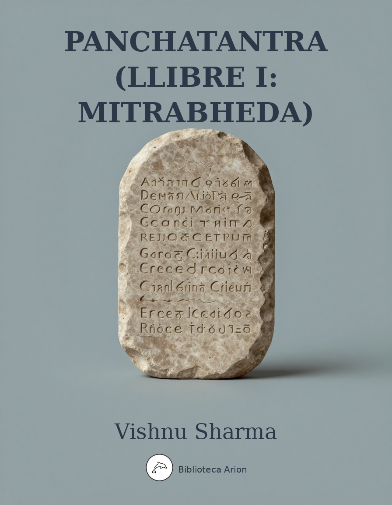

Panchatantra (Llibre I: Mitrabheda)
पञ्चतन्त्र — मित्रभेद
Llibre I del Panchatantra: 'La pèrdua dels amics' (Mitrabheda). Col·lecció de faules i contes encadenats sobre la intriga, l'amistat i la traïció, amb morals en vers.
The Loss of Friends
Here then begins Book I, called “The Loss of Friends.” The first verse runs:
The forest lion and the bull
Were linked in friendship, growing, full:
A jackal then estranged the friends
For greedy and malicious ends.
And this is how it happened.
In the southern country was a city called Maidens’ Delight. It rivaled the city of heaven’s King, so abounding in every urban excellence as to form the central jewel of Earth’s diadem. Its contour was like that of Kailasa Peak. Its gates and palaces were stocked with machines, missile weapons, and chariots in great variety. Its central portal, massive as Indrakila Mountain, was fitted with bolt and bar, panel and arch, all formidable, impressive, solid. Its numerous temples lifted their firm bulk near spacious squares and crossings. It wore a moat-girdled zone of walls that recalled the high-uplifted Himalayas.
In this city lived a merchant named Increase. He possessed a heap of numerous virtues, and a heap of money, a result of the accumulation of merit in earlier lives.
As he once pondered in the dead of night, his conclusions took this form: “Even an abundant store of wealth, if pecked at, sinks together like a pile of soot. A very little, if added to, grows like an ant-hill. Hence, even though money be abundant, it should be increased. Riches unearned should be earned. What is earned, should be guarded. What is guarded, should be enlarged and heedfully invested. Money, even if hoarded in commonplace fashion, is likely to go in a flash, the hindrances being many. Money unemployed when opportunities arise, is the same as money unpossessed. Therefore, money once acquired should be guarded, increased, employed. As the proverb says:
Release the money you have earned;
So keep it safely still:
The surplus water of a tank
Must find a way to spill.
Wild elephants are caught by tame;
With capital it is the same:
In business, beggars have no scope
Whose stock-in-trade is empty hope.
If any fail to use his fate
For joy in this or future state,
His riches serve as foolish fetters;
He simply keeps them for his betters.”
Having thus set his mind in order, he collected merchandise bound for the city of Mathura, assembled his servants, and after saying farewell to his parents when asterism and lunar station were auspicious, set forth from the city, with his people following and with blare of conch-shell and beat of drum preceding. At the first water he bade his friends turn back, while he proceeded.
To bear the yoke he had two bulls of good omen. Their names were Joyful and Lively; they looked like white clouds, and their chests were girded with golden bells.
Presently he reached a forest lovely with grisleas, acacias, dhaks, and sals, densely planted with other trees of charming aspect; fearsome with elephants, wild oxen, buffaloes, deer, grunting-cows, boars, tigers, leopards, and bears; abounding in water that issued from the flanks of mountains; rich in caves and thickets.
Here the bull Lively was overcome, partly by the excessive weight of the wagon, partly because one foot sank helpless where far-flung water from cascades made a muddy spot. At this spot the bull somehow snapped the yoke and sank in a heap. When the driver saw that he was down, he jumped excitedly from the wagon, ran to the merchant not far away, and humbly bowing, said: “Oh, my lord! Lively was wearied by the trip, and sank in the mud.”
On hearing this, merchant Increase was deeply dejected. He halted for five nights, but when the poor bull did not return to health, he left caretakers with a supply of fodder, and said: “You must join me later, bringing Lively, if he lives; if he dies, after performing the last sad rites.” Having given these directions, he started for his destination.
On the next day, the men, fearing the many drawbacks of the forest, started also and made a false report to their master. “Poor Lively died,” they said, “and we performed the last sad rites with fire and everything else.” And the merchant, feeling grieved for a mere moment, out of gratitude performed a ceremony that included rites for the departed, then journeyed without hindrance to Mathura.
In the meantime, Lively, since his fate willed it and further life was predestined, hobbled step by step to the bank of the Jumna, his body invigorated by a mist of spray from the cascades. There he browsed on the emerald tips of grass-blades, and in a few days grew plump as Shiva’s bull, high-humped, and full of energy. Every day he tore the tops of ant-hills with goring horns, and frisked like an elephant.
But one day a lion named Rusty, with a retinue of all kinds of animals, came down to the bank of the Jumna for water. There he heard Lively’s prodigious bellow. The sound troubled his heart exceedingly, but he concealed his inner feelings while beneath a spreading banyan tree he drew up his company in what is called the Circle of Four.
Now the divisions of the Circle of Four are given as: (1) the lion, (2) the lion’s guard, (3) the understrappers, (4) the menials. In all cities, capitals, towns, hamlets, market-centers, settlements, border-posts, land-grants, monasteries, and communities there is just one occupant of the lion’s post. Relatively few are active as the lion’s guard. The understrappers are the indiscriminate throng. The menials are posted on the outskirts. The three classes are each divided into members high, middle, and low.
Now Rusty, with counselors and intimates, enjoyed a kingship of the following order. His royal office, though lacking the pomp of umbrella, flyflap, fan, vehicle, and amorous display, was held erect by sheer pride in the sentiment of unaffected pluck. It showed unbroken haughtiness and abounding self-esteem. It manifested a native zeal for unchecked power that brooked no rival. It was ignorant of cringing speech, which it delegated to those who like that sort of thing. It functioned by means of impatience, wrath, haste, and hauteur. Its manly goal was fearlessness, disdaining fawning, strange to obsequiousness, unalarmed. It made use of no wheedling artifices, but glittered in its reliance on enterprise, valor, dignity. It was independent, unattached, free from selfish worry. It advertised the reward of manliness by its pleasure in benefiting others. It was unconquered, free from constraint and meanness, while it had no thought of elaborating defensive works. It kept no account of revenue and expenditure. It knew no deviousness nor time-serving, but was prickly with the energy earned by loftiness of spirit. It wasted no deliberation on the conventional six expedients, nor did it hoard weapons or jewelry. It had an uncommon appetite for power, never adopted subterfuges, was never an object of suspicion. It paid no heed to wives or ambush-layers, to their torrents of tears or their squeals. It was without reproach. It had no artificial training in the use of weapons, but it did not disappoint expectations. It found satisfactory food and shelter without dependence on servants. It had no timidity about any foreign forest, and no alarms. Its head was high. As the proverb says:
The lion needs, in forest station,
No trappings and no education,
But lonely power and pride;
And all the song his subjects sing,
Is in the words: “O King! O King!”
No epithet beside.
And again:
The lion needs, for his appointing,
No ceremony, no anointing;
His deeds of heroism bring
Him fortune. Nature crowns him king.
The elephant is the lion’s meat,
With drops of trickling ichor sweet;
Though lack thereof should come to pass,
The lion does not nibble grass.
Now Rusty had in his train two jackals, sons of counselors, but out of a job. Their names were Cheek and Victor. These two conferred secretly, and Victor said: “My dear Cheek, just look at our master Rusty. He came this way for water. For what reason does he crouch here so disconsolate?” “Why meddle, my dear fellow?” said Cheek. “There is a saying:
Death pursues the meddling flunkey:
Note the wedge-extracting monkey.”
“How was that?” asked Victor. And Cheek told the story of
THE WEDGE-PULLING MONKEY
The Wedge-pulling Monkey
There was a city in a certain region. In a grove near by, a merchant was having a temple built. Each day at the noon hour the foreman and workers would go to the city for lunch.
Now one day a troop of monkeys came upon the half-built temple. There lay a tremendous anjana-log, which a mechanic had begun to split, a wedge of acacia-wood being thrust in at the top.
There the monkeys began their playful frolics upon tree-top, lofty roof, and woodpile. Then one of them, whose doom was near, thoughtlessly bestrode the log, thinking: “Who stuck a wedge in this queer place?” So he seized it with both hands and started to work it loose. Now what happened when the wedge gave at the spot where his private parts entered the cleft, that, sir, you know without being told.
“And that is why I say that meddling should be avoided by the intelligent. And you know,” he continued, “that we two pick up a fair living just from his leavings.”
“But,” said Victor, “how can you give first-rate service merely from a desire for food with no desire for distinction? There is wisdom in the saying:
In hurting foes and helping friends
The wise perceive the proper ends
Of serving kings. The belly’s call
To answer, is no job at all.
And again:
When many lives on one depend,
Then life is life indeed:
A crow, with beak equipped, can fill
His belly’s selfish need.
If loving kindness be not shown
To friends and souls in pain,
To teachers, servants, and one’s self,
What use in life, what gain?
A crow will live for many years
And eat the offered grain.
A dog is quite contented if
He gets a meatless bone,
A dirty thing with gristle-strings
And marrow-fat alone—
And not enough of it at that
To still his belly’s moan.
The lion scorns the jackal, though
Between his paws, to smite
The elephant. For everyone,
However sad his plight,
Demands the recompense that he
Esteems his native right.
Dogs wag their tails and fawn and roll,
Bare mouth and belly, at your feet:
Bull-elephants show self-esteem,
Demand much coaxing ere they eat.
A tiny rill
Is quick to fill,
And quick a mouse’s paws;
So seedy men
Are grateful, when
There is but little cause.
For if there be no mind
Debating good and ill,
And if religion send
No challenge to the will,
If only greed be there
For some material feast,
How draw a line between
The man-beast and the beast?
Or more accurately yet:
Since cattle draw the plow
Through rough and level soil,
And bend their patient necks
To heavy wagons’ toil,
Are kind, of sinless birth,
And find in grass a feast,
How can they be compared
With any human beast?”
“But at present,” said Cheek, “we two hold no job at court. So why meddle?” “My dear fellow,” said Victor, “after a little the jobless man does hold a job. As the saying goes:
The jobless man is hired
For careful serving;
The holder may be fired,
If undeserving.
No character moves up or down
At others’ smile or others’ frown;
But honor or contempt on earth
Will follow conduct’s inner worth.
And once more:
It costs an effort still
To carry stones uphill;
They tumble in a trice:
So virtue, and so vice.”
“Well,” said Cheek, “what do you wish to imply?” And Victor answered: “You see, our master is frightened, his servants are frightened, and he does not know what to do.” “How can you be sure of that?” asked Cheek, and Victor said: “Isn’t it plain?
An ox can understand, of course,
The spoken word; a driven horse
Or elephant, exerts his force;
But men of wisdom can infer
Unuttered thought from features’ stir—
For wit rewards its worshiper.
And again:
From feature, gesture, gait,
From twitch, or word,
From change in eye or face
Is thought inferred.
So by virtue of native intelligence I intend to get him into my power this very day.”
“Why,” said Cheek, “you do not know how to make yourself useful to a superior. So tell me. How can you establish power over him?”
“And why, my good fellow, do I not know how to make myself useful?” said Victor. “The saintly poet Vyasa has sung the entry of the Pandu princes into Virata’s court. From his poem I learned the whole duty of a functionary. You have heard the proverb:
No burden enervates the strong;
To enterprise no road is long;
The well-informed all countries range;
To flatterers no man is strange.”
But Cheek objected: “He might perhaps despise you for forcing yourself into a position that does not belong to you.” “Yes,” said Victor, “there is point in that. However, I am also a judge of occasions. And there are rules, as follows:
The Lord of Learning, speaking to
A false occasion,
Will meet with hatred, and of course
Lack all persuasion.
And again:
The favorite’s business comes to be
A sudden source of king’s ennui,
When he is thoughtful, trying scents,
Retiring, or in conference.
And once again:
On hours of talk or squabbling rude,
Of physic, barber, flirting, food,
A gentleman does not intrude.
Let everyone be cautious
In palaces of kings;
And let not students rummage
In their professor’s things:
For naughty meddlers suffer
Destruction swift and sure,
Like evening candles, lighted
In houses of the poor.
Or put it this way:
On entering a palace,
Adjust a modest dress;
Go slowly, bowing lowly
In timely humbleness;
And sound the kingly temper,
And kingly whims no less.
Or this way:
Though ignorant and common,
Unworth the honoring,
Men win to royal favor
By standing near the king:
For kings and vines and maidens
To nearest neighbors cling.
And once again:
The servant in his master’s face
Discerns the signs of wrath and grace,
And though the master jerk and tack,
The servant slowly mounts his back.
And finally:
The brave, the learnѐd, he who wins
To bureaucratic power—
These three, alone of all mankind,
Can pluck earth’s golden flower.
“Now let me inform you how power is gained by dancing attendance on a master.
Win the friendly counselors,
To the monarch dear,
Win persuasive speakers; so
Gain the royal ear.
On the undiscerning mob
‘Tis not wise to toil:
No man reaps a harvest by
Plowing barren soil.
Serve a king of merit, though
Friendless, destitute;
After some delay, you pluck
Long-enduring fruit.
Hate your master, and you fill
Servant’s meanest state:
Not discerning whom to serve,
‘Tis yourself you hate.
Treat the dowager, the queen,
And the king-to-be,
Chaplain, porter, counselor,
Most obsequiously.
One who seeks the van in fights,
In the palace clings,
In the city walks behind,
Is beloved of kings.
One who flatters when addressed,
Does the proper things,
Acts without expressing doubts,
Is beloved of kings.
One, the royal gifts of cash
Prudently who flings,
Wearing gifts of garments, he
Is beloved of kings.
One who never makes reply
That his master stings,
Never boisterously laughs,
Is beloved of kings.
One who never hearkens to
Queenly whisperings,
In the women’s quarters dumb,
Is beloved of kings.
One who, even in distress,
Never boasts and sings
Of his master’s favor, he
Is beloved of kings.
One who hates his master’s foe,
Loves his friend, and brings
Pain or joy to either one,
Is beloved of kings.
One who never disagrees,
Blames, or pulls the strings
Of intrigue with enemies,
Is beloved of kings.
One who finds in battle, peace
Free from questionings,
Thinks of exile as of home,
Is beloved of kings.
One who thinks of dice as death,
Wine as poison-stings,
Others’ wives as statues, he
Is beloved of kings.”
“Well,” said Cheek, “when you come into his presence, what do you intend to say first? Please tell me that.” And Victor replied:
“Answers, after speech begins,
Further answers breed,
As a seed, with timely rain,
Ripens other seed.
And besides:
A clever servant shows his master
The gleam of triumph or disaster
From good or evil courses springing,
And shows him wit, decision-bringing.
The man possessing such a wit
Should magnify and foster it;
Thereby he earns a livelihood
And public honor from the good.
And there is a saying:
Let anyone who does not seek
His master’s fall, unbidden speak;
So act at least the excellent:
The other kind are different.”
“But,” said Cheek, “kings are hard to conciliate. There is a saying:
In sensuous coil
And heartless toil,
In sinuous course
And armored force,
In savage harms
That yield to charms—
In all these things
Are snakes like kings.
Uneven, rough,
And high enough—
Yet low folk roam
Their flanks as home,
And wild things haunt
Them, hungry, gaunt—
In all these things
Are hills like kings.
The things that claw, and the things that gore
Are unreliable things;
And so is a man with a sword in his hand,
And rivers, and women, and kings.”
“Quite true,” said Victor. “However:
The clever man soon penetrates
The subject’s mind, and captivates.
Cringe, and flatter him when angry;
Love his friend and hate his foe;
Duly advertise his presents—
Trust no magic—win him so.
And yet:
If a man excel in action
Learning, fluent word,
Make yourself his humble servant
While his power is stirred,
Quick to leave him at the moment
When he grows absurd.
Plant your words where profit lies:
Whiter cloth takes faster dyes.
Till you know his power and manhood,
Effort has no scope:
Moonlight’s glitter vainly rivals
Himalaya’s slope.”
And Cheek replied: “If you have made up your mind, then seek the feet of the king. Blest be your journeyings. May your purpose be accomplished.
Be heedful in the presence of the king;
We also to your health and fortune cling.”
Then Victor bowed to his friend, and went to meet Rusty.
Now when Rusty saw Victor approaching, he said to the doorkeeper: “Away with your reed of office! This is an old acquaintance, the counselor’s son Victor. He has free entrance. Let him come in. He belongs to the second circle.” So Victor entered, bowed to Rusty, and sat down on the seat indicated to him.
Then Rusty extended a right paw adorned with claws as formidable as thunderbolts, and said respectfully: “Do you enjoy health? Why has so long a time passed since you were last visible?” And Victor replied: “Even though my royal master has no present need of me, still I ought to report at the proper time. For there is nothing that may not render service to a king. As the saying goes:
To clean a tooth or scratch an ear
A straw may serve a king:
A man, with speech and action, is
A higher kind of thing.
“Besides, we who are ancestral servants of our royal master, follow him even in disasters. For us there is no other course. Now the proverb says:
Set in fit position each
Gem or serving-man;
No tiaras on the toes,
Just because you can.
Servants leave the kings who their
Qualities ignore,
Even kings of lofty line,
Wealthy, served of yore.
Lacking honor from their equals
Jobless, déclassé,
Servants give their master notice
That they will not stay.
And again:
If set in tin, a gem that would
Adorn a golden frame,
Will never scream nor fail to gleam
Yet tells its wearer’s shame.
The king who reads a servant’s mind—
Dull, faithless, faithful, wise—
May servants find of every kind
For every enterprise.
“And as for my master’s remark: ‘It is long since you were last visible,’ pray hear the reason of that:
Where just distinction is not drawn
Between the left and right,
The self-respecting, if they can,
Will quickly take to flight.
If masters no distinction make
Among their servants, then
They lose the zealous offices
Of energetic men.
And in a market where it seems
That no distinctions hold
Between red-eye and ruby, how
Can precious gems be sold?
There must be bonds of union
In all their dealings, since
No prince can lack his servants
Nor servants lack a prince.
“Yet the nature of the servant also depends on the master’s quality. As the saying goes:
In case of horse or book or sword,
Of woman, man or lute or word,
The use or uselessness depends
On qualities the user lends.
“And another point. You do wrong to despise me because I am a jackal. For
Silk comes from worms, and gold from stone;
From cow’s hair sacred grass is grown;
The water-lily springs from mud;
From cow-dung sprouts the lotus-bud;
The moon its rise from ocean takes;
And gems proceed from hoods of snakes;
From cows’ bile yellow dyestuffs come;
And fire in wood is quite at home:
The worthy, by display of worth,
Attain distinction, not by birth.
And again:
Kill, although domestic born,
Any hurtful mouse:
Bribe an alien cat who will
Help to clean the house.
And once again:
How use the faithful, lacking power?
Or strong, who evil do?
But me, O King, you should not scorn,
For I am strong and true.
Scorn not the wise who penetrate
Truth’s universal law;
They are not men to be restrained
By money’s petty straw:
When beauty glistens on their cheeks
By trickling ichor lent,
Bull-elephants feel lotus-chains
As no impediment.”
“Oh,” said Rusty, “you must not say such things. You are our counselor’s son, an old retainer.” “O King,” said Victor, “there is something that should be said.” And the king replied: “My good fellow, reveal what is in your heart.”
Then Victor began: “My master set out to take water. Why did he turn back and camp here?” And Rusty, concealing his inner feelings, said: “Victor, it just happened so.” “O King,” said the jackal, “if it is not a thing to disclose, then let it be.
Some things a man should tell his wife,
Some things to friend and some to son;
All these are trusted. He should not
Tell everything to everyone.”
Hereupon Rusty reflected: “He seems trustworthy. I will tell him what I have in mind. For the proverb says:
You find repose, in sore disaster,
By telling things to powerful master,
To honest servant, faithful friend,
Or wife who loves you till the end.
Friend Victor, did you hear a great voice in the distance?” “Yes, master, I did,” said Victor. “What of it?”
And Rusty continued: “My good fellow, I intend to leave this forest.” “Why?” said Victor. “Because,” said Rusty, “there has come into our forest some prodigious creature, from whom we hear this great voice. His nature must correspond to his voice, and his power to his nature.”
“What!” said Victor. “Is our master frightened by a mere voice? You know the proverb:
Water undermines the dikes;
Love dissolves when malice strikes;
Secrets melt when babblings start;
Simple words melt dastard hearts.
So it would be improper if our master abruptly left the forest which was won by his ancestors and has been so long in the family. For they say:
Wisely move one foot; the other
Should its vantage hold;
Till assured of some new dwelling,
Do not leave the old.
“Besides, many kinds of sounds are heard here. Yet they are nothing but noises, not a warning of danger. For example, we hear the sounds made by thunder, wind among the reeds, lutes, drums, tambourines, conch-shells, bells, wagons, banging doors, machines, and other things. They are nothing to be afraid of. As the verse says:
If a king be brave, however
Fierce the foe and grim,
Sorrows of humiliation
Do not wait for him.
And again:
Bravest bosoms do not falter,
Fearing heaven’s threat:
Summer dries the pools; the Indus
Rises, greater yet.
And once again:
Mothers bear on rare occasions
To the world a chief,
Glad in luck and brave in battle,
Undepressed in grief.
And yet again:
Do not act as does the grass-blade,
Lacking honest pride,
Drooping low in feeble meanness,
Lightly brushed aside.
My master must take this point of view and reinforce his resolution, not fear a mere sound. As the saying goes:
I thought at first that it was full
Of fat; I crept within
And there I did not find a thing
Except some wood and skin.”
“How was that?” asked Rusty. And Victor told the story of
THE JACKAL AND THE WAR-DRUM
The Jackal and the War-Drum
In a certain region was a jackal whose throat was pinched by hunger. While wandering in search of food, he came upon a king’s battle ground in the midst of a forest. And as he lingered a moment there he heard a great sound.
This sound troubled his heart exceedingly, so that he fell into deep dejection and said: “Ah me! Disaster is upon me. I am as good as dead already. Who made that sound? What kind of a creature?”
But on peering about, he spied a war-drum that loomed like a mountain-peak, and he thought: “Was that sound its natural voice, or was it induced from without?” Now when the drum was struck by the tips of grasses swaying in the wind, it made the sound, but was dumb at other times.
So he recognized its helplessness, and crept quite near. Indeed, his curiosity led him to strike it himself on both heads, and he became gleeful at the thought: “Aha! After long waiting food comes even to me. For this is sure to be stuffed with meat and fat.”
Having come to this conclusion, he picked a spot, gnawed a hole, and crept in. And though the leather covering was tough, still he had the luck not to break his teeth. But he was disappointed to find it pure wood and skin, and recited a stanza:
Its voice was fierce; I thought it stuffed
With fat, so crept within;
And there I did not find a thing
Except some wood and skin.
So he backed out, laughing to himself, and said:
I thought at first that it was full
Of fat,
and the rest of it.
“And that is why I say that one should not be troubled by a mere sound.” “But,” said Rusty, “these retainers of mine are terrified and wish to run away. So how am I to reinforce my resolution?” And Victor answered: “Master, they are not to blame. For servants take after the master. You know the proverb:
In case of horse or book or sword,
Of woman, man or lute or word,
The use or uselessness depends
On qualities the user lends.
“Then summon your manhood and remain on this spot until I return, having ascertained the nature of the creature. Then act as seems proper.” “What!” said Rusty, “are you plucky enough to go there?” And Victor answered: “When the master commands, is there any difference between ‘possible’ and ‘impossible’ to the good servant? As the proverb says:
Good servants, when their lords command,
Behold no fear on any hand,
Cross pathless seas if he desire
Or gladly enter flaming fire.
The servant who, his lord commanding,
Should strive to reach an understanding
On labors hard or easy, he
King’s counselor should never be.”
“If you feel so, my dear fellow,” said Rusty, “then go. Blest be your journeyings.”
So Victor bowed low and set out in the direction of the sound made by Lively. And when he was gone, terror troubled Rusty’s heart, so that he thought: “Ah, I made a sad mistake in trusting him to the point of revealing what is in my mind. Perhaps this Victor will betray me by taking wages from both parties, or from spite at losing his job. For the proverb says:
A servant suffering from a king
Dishonor after honoring,
Though born and trained to service, will
Be eager to destroy him still.
“So I will go elsewhere and wait, in order to learn his purpose. Perhaps Victor might even bring the thing along and try to kill me. As the saying goes:
The trustful strong are caught
By weaker foes with ease;
The wary weak are safe
From strongest enemies.”
Thus he set his mind in order, went elsewhere, and waited all alone, spying on Victor’s procedure.
Meanwhile Victor drew near to Lively, discovered that he was a bull, and reflected gleefully: “Well, well! This is lucky. I shall get Rusty into my power by dangling before him war or peace with this fellow. As the proverb puts it:
All counselors draw profit from
A king in worries pent,
And that is why they always wish
For him, embarrassment.
As men in health require no drug
Their vigor to restore,
So kings, relieved of worry, seek
Their counselors no more.”
With these thoughts in mind, he returned to meet Rusty. And Rusty, seeing him coming, assumed his former attitude in an effort to put a good face on the matter. So when Victor had come near, had bowed low, and had seated himself, Rusty said: “My good fellow, did you see the creature?” “I saw him,” said Victor, “through my master’s grace.” “Are you telling the truth?” asked Rusty. And Victor answered: “How could I report anything else to my gracious master? For the proverb says:
Whoever makes before a king
Small statements, but untrue,
Brings certain ruin on his gods
And on his teacher, too.
And again:
The king incarnates all the gods,
So sing the sages old;
Then treat him like the gods: to him
Let nothing false be told.
And once again:
The king incarnates all the gods,
Yet with a difference:
He pays for good or ill at once;
The gods, a lifetime hence.”
“Yes,” said Rusty, “I suppose you really did see him. The great do not become angry with the mean. As the proverb says:
The hurricane innocuous passes
O’er feeble, lowly bending grasses,
But tears at lofty trees: the great
Their prowess greatly demonstrate.”
And Victor replied: “I knew beforehand that my master would speak thus. So why waste words? I will bring the creature into my gracious master’s presence.” And when Rusty heard this, joy overspread his lotus-face, and his mind felt supreme satisfaction.
Meanwhile Victor returned and called reproachfully to Lively: “Come here, you villainous bull! Come here! Our master Rusty asks why you are not afraid to keep up this meaningless bellowing.” And Lively answered: “My good fellow, who is this person named Rusty?”
“What!” said Victor, “you do not even know our master Rusty?” And he continued with indignation: “The consequences will teach you. He has a retinue of all kinds of animals. He dwells beside the spreading banyan tree. His heart is high with pride. He is lord of life and wealth. His name is Rusty. He is a mighty lion.”
When Lively heard this, he thought himself as good as dead, and he fell into deep dejection, saying: “My dear fellow, you appear to be sympathetic and eloquent. So if you cannot avoid conducting me there, pray cause the master to grant me a gracious safe-conduct.” “You are quite right,” said Victor. “Your request shows savoir faire. For
The earth has a limit,
The mountains, the sea;
The deep thoughts of kings are
Without boundary.
Do you then remain in this spot. Later, when I have held him to an agreement, I will conduct you to him.”
Then Victor returned to Rusty and said: “Master, he is no ordinary creature. He has served as the vehicle of blessèd Shiva. And when I questioned him, he said: ‘Great Shiva was satisfied with me and bade me crop the grass beside the Jumna. Why make a long story of it? The blessèd one has given me this forest as a playground.’”
At this Rusty was frightened, and he said: “I knew it, I knew it. Only by special favor of the gods do creatures wander in a wild wood, bellowing like that, and fearlessly cropping the grass. But what did you say?”
“Master,” said Victor, “I said: ‘This forest is the domain of Rusty, vehicle of Shiva’s passionate wife. Hence you come as a guest. You must meet him, must spend your time in brotherly love, must eat, drink, work, play, and make your home with him.’ All this he promised, adding: ‘You must make your master grant me a safe-conduct.’ As to that, the master is the sole judge.”
At this Rusty was delighted and said: “Splendid, my intelligent servant, splendid! You must have taken counsel with my own heart before speaking. I grant him a safe-conduct. You must hasten to conduct him here, but not until he too has bound himself by oath toward me. Yes, there is sound sense in the saying:
Polished, fully tested,
Sturdy too, and straight
Are the pillars proper
To a house—or state.
Again:
Wit is shown in hours of crisis:
Doctors’ wit, in sore disease;
Counselors’, in patching friendship—
All are wise in hours of ease.”
Now Victor thought, as he set out to meet Lively: “Well, well! The master is gracious to me and ready to do my bidding. So there is none more blest than I. For
Four things are nectar: milky food;
A fire in chilly weather;
An honor granted by the king;
And loved ones, come together.”
So he found Lively, and said respectfully: “My friend, I won the old master’s favor for you, and made him give you a safe-conduct. You may go without anxiety. Still, though you have favor in the eyes of the king, you must act in agreement with me. You must not play the haughty master. I for my part, in alliance with you, will take the rôle of counselor, and bear the whole burden of administration. Thus we shall both enjoy royal affluence. For
A sinful chase—yet men can stalk
The treasures of the crown:
One starts the quarry from its lair;
Another strikes it down.
And again:
Whoever is too haughty to
Pay king’s retainers honor due,
Will find his feet are tottering—
So merchant Strong-Tooth with the king.”
“How was that?” asked Lively. And Victor told the story of
MERCHANT STRONG-TOOTH
Merchant Strong-Tooth
There is a city called Growing City on the earth’s surface. In it lived a merchant named Strong-Tooth who directed the whole administration. So long as he handled city business and royal business, all the inhabitants were satisfied. Why spin it out? Nobody ever saw or heard of his like for cleverness. For there is much wisdom in the proverb:
Suppose he minds the king’s affairs,
The common people hate him;
And if he plays the democrat,
The prince will execrate him:
So, since the struggling interests
Are wholly contradictory,
A manager is hard to find
Who gives them both the victory.
While he occupied this position, he once had a daughter married. To the wedding he invited all the townspeople and the king’s entourage, paid them much honor, feasted them, and regaled them with gifts of garments and the like. And when the wedding was over, he conducted the king home with his ladies and showed him reverence.
Now the king had a house-cleaning drudge named Bull, who took a seat that did not belong to him—this in the very palace, and in the presence of the king’s professor. So Strong-Tooth administered a cuffing and drove him out. From that moment the humiliation so rankled in Bull’s inner soul that he had no rest even at night. Yet he thought: “After all, why should I grow thin? It does me no good. For I cannot possibly hurt him. And there is sense in the saying:
Indulge no angry, shameless wish
To hurt, unless you can:
The chick-pea, hopping up and down,
Will crack no frying-pan.”
Now one morning, as he was sweeping near the bed where the king lay half awake, he said: “What impudence! Strong-Tooth kisses the queen.” When the king heard this, he jumped up in a hurry, crying: “Come, come, Bull! Is that thing true that you were muttering? Has the queen been kissed by Strong-Tooth?”
“O King,” answered Bull, “I was awake all night because I am passionately fond of gambling. So sleep overpowered me even when I was busy with my sweeping. I do not know what I said.”
But the jealous king thought: “Yes, he has free entrance to my palace. So has Strong-Tooth. Perhaps he actually saw the fellow hugging the queen. For the proverb says:
Whate’er a man desires, sees, does
In broad daylight,
Still mindful, he will say or do
Asleep at night.
And again:
Whatever secrets, good or ill,
Men in their bosoms keep,
Are soon betrayed when they are drunk
Or talking in their sleep.
In any case, what doubt can there be where a woman is concerned?
With one she tries the gossip’s art;
Her glances with a second flirt;
She holds another in her heart:
Whom does she love enough to hurt?
And again:
The logs will glut the hungry fire,
The rivers glut the sea’s desire,
And Death with life be glutted, when
The flirt has had enough of men.
No chance, no corner dark,
No man to woo;
Then, holy sage, you find
A woman true.
And once again:
The blunderhead who thinks:
‘My love loves me,’
Is ever in her power;
A tame bird, he.”
After all this lamentation, he withdrew his favor forthwith from Strong-Tooth. Not to make a long story of it, he forbade his entrance at court.
When Strong-Tooth saw that the monarch’s favor was suddenly withdrawn, he thought: “Ah me! There is wisdom in the stanza:
Whom does not fortune render proud?
Whom does not death lay low?
To what roué do passions not
Bring never ceasing woe?
What beggar can be dignified?
Whose heart no woman stings
Who, trapped by scamps, comes safely off?
Who is beloved of kings?
And again:
Who ever saw or heard
A gambler’s truthful word,
A neat and cleanly crow,
A woman going slow
In love, a kindly snake,
A eunuch’s pluck awake,
A drunkard’s love of science,
A king in friends’ alliance?
And yet I never committed an unfriendly act against the king—or anyone else—not even in a dream, not even by mere words. So why does the king withdraw his favor from me?”
Now one day Bull, the sweeper, saw Strong-Tooth stopped at the palace gate, and he laughed aloud, saying to the doorkeepers: “Be careful, doorkeepers! This fellow Strong-Tooth’s temper has been spoiled by the king’s favor and he dispenses arrests and releases. If you stop him, you will get a cuffing, just like me.”
And Strong-Tooth reflected on hearing this: “I see. It was Bull’s doing. Well, there is sense in the proverb:
Though foolish, base, and lacking pride,
A servant at the monarch’s side
Will have his honor satisfied.
Though fashioned on a cowardly plan
And mean, a royal servant can
Resent affronts from any man.”
After this lamentation he went home, abashed and deeply stirred. Then he summoned Bull in the evening, gave him two garments as an honorable present, and said: “My good fellow, I did not drive you out by order of the king. It was because I saw you, in the chaplain’s presence, sitting where you did not belong, that I humiliated you.”
Now Bull received the two garments as if they were the Kingdom of Heaven, and feeling intense satisfaction, he said: “Friend merchant, I forgive you. You will soon see the reward of the honor shown me in the king’s favor and such things.” With this he departed in high glee. For there is wisdom in the saying:
A little thing will lift him high,
A little make him fall:
‘Twixt balance-beam and scamp there is
No difference at all.
On the next day Bull entered the palace, and did his sweeping. And while the king lay half awake, he said: “What intelligence! When our king sits at stool, he eats a cucumber.”
Now the king, hearing this, rose in amazement and said: “Come, come. Bull! What twaddle is this? But I remember that you are a house-servant and do not kill you. Did you ever see me engaged in that occupation?”
“O King,” said Bull, “I was awake all night because I am passionately fond of gambling. So drowsiness overcame me in the very act of doing my sweeping. I do not know what I was muttering. Pardon me, master. I was really asleep.”
Then the king thought: “Why, from the day of my birth I never ate a cucumber while engaged in that occupation. And since this blockhead has talked unimaginable nonsense about me, it must be the same with Strong-Tooth. This being so, I made a mistake in taking the poor man’s honors from him. Nothing of the sort is conceivable with such men. And in his absence all the king’s business and city business is at loose ends.”
After thus considering the matter from every point of view, he summoned Strong-Tooth, presented him with gems from his own person and with garments, and reinstated him.
“And that is why I say:
Whoever is too haughty to
Pay king’s retainers honor due, . . . .
and the rest of it.” “My dear fellow,” said Lively, “your argument is quite convincing. Let it be as you say.”
After this Victor took him to Rusty and said: “O King, here is Lively. I have brought him hither. The future rests with the king.” Then Lively bowed respectfully and stood before the king in a modest attitude. Thereupon Rusty extended over him a right paw plump, firm, massive, adorned with claws as formidable as thunderbolts, and said with deference: “Do you enjoy health? Why do you dwell in this wild wood?”
Thus questioned, Lively related accurately his separation from merchant Increase and the others. And Rusty, after listening to the story, said: “Have no fear, comrade. Protected by my paws, lead your own life in this forest. Furthermore, you must always take your amusements in my vicinity. For this forest has many drawbacks, since it swarms with numerous savage creatures.” And Lively made answer: “Very well, O King.”
Then the king of beasts went down to the bank of the Jumna, drank and bathed his fill, and plunged again into the forest, wherever inclination led him.
Thus the time passed, the mutual affection of the two increasing daily. Now Lively had assimilated solid intelligence by mastering numerous authoritative works, so that in a very few days he planted discernment in Rusty, dull as was his mind. He weaned him from forest habits and taught him village manners. Why spin it out? Lively and Rusty did nothing but hold secret confabulations every day.
This being so, all the other animals of the retinue were kept at a distance. As for the two jackals, they did not even have the entrée. More than that, as soon as they lacked the lion’s prowess, the whole company of animals, not excluding the two jackals, suffered grievously from hunger and huddled together. As the proverb puts it:
A king, though proud and pure of birth,
Will see his servants flee
A court where no rewards are won,
As birds a withered tree.
And again:
They may be honored gentlemen,
They may devoted be,
Yet servants leave a monarch who
Forgets the salary.
While, on the other hand:
A king may scold
Yet servants hold,
If he but pay
Upon the day.
Indeed, all the creatures in this world, adopting cajolery or one of the other three devices, live by eating one another. For example:
Some eat the countries; these are kings;
The doctors, those whom sickness stings;
The merchants, those who buy their things;
And learnèd men, the fools.
The married are the clergy’s meat;
The thieves devour the indiscreet;
The flirts their eager lovers eat;
And Labor eats us all.
They keep deceitful snares in play;
They lie in wait by night and day;
And when occasion offers, prey
Like fish on lesser fish.
Now Cheek and Victor, robbed of their master’s favor, took counsel together—for their throats were pinched with hunger. And Victor said: “Cheek, my noble friend, we two seem to have lost our job. For Rusty takes such delight in Lively’s conversation that he neglects his business. And the whole court is scattered every which way. What is to be done?”
And Cheek replied: “Even if the master does not take your advice, still you should admonish him to correct his faults. For the proverb says:
Good counselors should warn a king
Although he pay no heed
(As Vidur warned the monarch blind)
To cease from evil deed.
And again:
Good counselors or drivers may not duck
From kings or elephants that run amuck.
Besides, in introducing this grass-nibbler to the master you were handling live coals.” And Victor answered: “You are right. The fault is mine, not the master’s. As the saying goes:
The jackal at the ram-fight;
And we, when tricked by June;
The meddling friend—were playing
A self-defeating tune.”
“How was that?” asked Cheek. And Victor told three stories in one, called
GODLY AND JUNE
The Unteachable Monkey
In a part of a forest was a troop of monkeys who found a firefly one winter evening when they were dreadfully depressed. On examining the insect, they believed it to be fire, so lifted it with care, covered it with dry grass and leaves, thrust forward their arms, sides, stomachs, and chests, scratched themselves, and enjoyed imagining that they were warm. One of the arboreal creatures in particular, being especially chilly, blew repeatedly and with concentrated attention on the firefly.
Thereupon a bird named Needle-Face, driven by hostile fate to her own destruction, flew down from her tree and said to the monkey: “My dear sir, do not put yourself to unnecessary trouble. This is not fire. This is a firefly.” He, however, did not heed her warning but blew again, nor did he stop when she tried more than once to check him. To cut a long story short, when she vexed him by coming close and shouting in his ear, he seized her and dashed her on a rock, crushing face, eyes, head, and neck so that she died.
“And that is why I say:
No knife prevails against a stone, . . . .
and the rest of it. For, after all,
Educating minds unfit
Cannot rescue sluggish wit,
Just as house-lamps wasted are,
Set within a covered jar.
“Plainly, you are what is known as ‘worse-born.’ The technical explanation runs:
Sons of four divergent kinds
Are discerned by well-trained minds:
‘Born,’ and ‘like-born,’ ‘better-born’;
Lastly, ‘worse-born’ has their scorn.
‘Born’ the mother’s image gives;
‘Like-born’ like the father lives;
‘Better-born’ more nobly acts;
‘Worse-born’ morally subtracts.
“Ah, there is wisdom in the saying:
By whom far-piercing wisdom or
Great wealth or power is won
To lift the family, in him
A mother has a son.
Again:
A merely striking beauty
Is not so hard to find;
A rarer gem is wisdom,
Far-reaching power of mind.
“Yes, there is sense in the story:
Right-Mind was one, and Wrong-Mind two;
I know the tale by heart:
The son in smoke made father choke
By being supersmart.”
“How was that?” asked Victor. And Cheek told the story of
RIGHT-MIND AND WRONG-MIND
Right-Mind and Wrong-Mind
In a certain city lived two friends, sons of merchants, and their names were Right-Mind and
Wrong-Mind. These two traveled to another country far away in order to earn money. There the one named Right-Mind, as a consequence of favoring fortune, found a pot containing a thousand dinars, which had been hidden long before by a holy man. He debated the matter with Wrong-Mind, and they decided to go home, since their object was attained. So they returned together.
When they drew near their native city, Right-Mind said: “My good friend, a half of this falls to your share. Pray take it, so that, now that we are at home, we may cut a brilliant figure before our friends and those less friendly.”
But Wrong-Mind, with a sneaking thought of his own advantage, said to the other: “My good friend, so long as we two hold this treasure in common, so long will our virtuous friendship suffer no interruption. Let us each take a hundred dinars, and go to our homes after burying the remainder. The decrease or increase of this treasure will serve as a test of our virtue.”
Now Right-Mind, in the nobility of his nature, did not comprehend the hidden duplicity of his friend, and agreed to the proposal. Each then took a certain sum of money. They carefully hid the residue in the ground, and made their entrance into the city.
Before long, Wrong-Mind exhausted his preliminary portion because he practiced the vice of unwise expenditure and because his predetermined fate offered vulnerable points. He therefore made a second division with Right-Mind, each taking a second hundred. Within a year this, too, had slipped in the same way through Wrong-Mind’s fingers. As a result, his thoughts took this form: “Suppose I divide another two hundred with him, then what is the good of the remainder, a paltry four hundred, even if I steal it? I think I prefer to steal a round six hundred.” After this meditation, he went alone, removed the treasure, and leveled the ground.
A mere month later, he took the initiative, going to Right-Mind and saying: “My good friend, let us divide the rest of the money equally.” So he and Right-Mind visited the spot and began to dig. When the excavation failed to reveal any treasure, that impudent Wrong-Mind first of all smote his own head with the empty pot, then shouted: “What became of that good lucre? Surely, Right-Mind, you must have stolen it. Give me my half. If you don’t, I will bring you into court.”
“Be silent, villain!” said the other. “My name is Right-Mind. Such thefts are not in my line. You know the verse:
A man right-minded sees but trash,
Mere clods of earth, in others’ cash;
A mother in his neighbor’s wife;
In all that lives, his own dear life.”
So together they carried their dispute to court and related the theft of the money. And when the magistrates learned the facts, they decreed an ordeal for each. But Wrong-Mind said: “Come! This judgment is not proper. For the legal dictum runs:
Best evidence is written word;
Next, witnesses who saw and heard;
Then only let ordeals prevail
When witnesses completely fail.
In the present case, I have a witness, the goddess of the wood. She will reveal to you which one of us is guilty, which not guilty.” And they replied: “You are quite right, sir. For there is a further saying:
To meanest witnesses, ordeals
Should never be preferred;
Of course much less, if you possess
A forest goddess’ word.
Now we also feel a great interest in the case. You two must accompany us tomorrow morning to that part of the forest.” With this they accepted bail from each and sent them home.
Then Wrong-Mind went home and asked his father’s help. “Father dear,” said he, “the dinars are in my hand. They only require one little word from you. This very night I am going to hide you out of sight in a hole in the mimosa tree that grows near the spot where I dug out the treasure before. In the morning you must be my witness in the presence of the magistrates.”
“Oh, my son,” said the father, “we are both lost. This is no kind of a scheme. There is wisdom in the old story:
The good and bad of given schemes
Wise thought must first reveal:
The stupid heron saw his chicks
Provide a mungoose meal.”
“How was that?” asked Wrong-Mind. And his father told the story of
A REMEDY WORSE THAN THE DISEASE
The Lion and the Carpenter
In a certain city lived a carpenter named Trust-god. It was his constant habit to carry his lunch and
go with his wife into the forest, where he cut great anjana logs. Now in that forest lived a lion named Spotless, who had as hangers-on two carnivorous creatures, a jackal and a crow.
One day the lion was roaming the wood alone and encountered the carpenter. The carpenter for his part, on beholding that most alarming lion, whether considering himself already lost or perhaps with the ready wit to perceive that it is safer to face the powerful, advanced to meet the lion, bowed low, and said: “Come, friend, come! Today you must eat my own dinner which my wife—your brother’s wife—has provided.”
“My good fellow,” said the lion, “being carnivorous, I do not live on rice. But in spite of that, I will have a taste, since I take a fancy to you. What kind of dainty have you got?”
When the lion had spoken, the carpenter stuffed him with all kinds of dainties—buns, muffins, chewers, and things, all flavored with sugar, butter, grape-juice, and spice. And to show his gratitude, the lion guaranteed his safety and granted unhindered passage through the forest. Then the carpenter said: “Comrade, you must come here every day, but please come alone. You must not bring anyone else to visit me.” In this manner they spent their days in friendship. And the lion, since every day he received such hospitality, such a variety of goodies, gave up the practice of hunting.
Then the jackal and the crow, who lived on others’ luck, went hungry, and they implored the lion. “Master,” they said, “where do you go every day? And tell us why you come back so happy.” “I don’t go anywhere,” said he. But when they urged the question with great deference, the lion said: “A friend of mine comes into this wood every day. His wife cooks the most delicious things, and I eat them every day, in order to show friendly feeling.”
Then the jackal and the crow said: “We two will go there, will kill the carpenter, and have enough meat and blood to keep us fat for a long time.” But the lion heard them and said: “Look here! I guaranteed his safety. How can I even imagine playing him such a scurvy trick? But I will get a delicious tidbit from him for you also.” To this they agreed.
So the three started to find the carpenter. While they were still far off, the carpenter caught a glimpse of the lion and his seedy companions, and he thought: “This does not look prosperous to me.” So he and his wife made haste to climb a tree.
Then the lion came up and said: “My good fellow, why did you climb a tree when you saw me? Why, I am your friend, the lion. My name is Spotless. Do not be alarmed.” But the carpenter stayed where he was and said:
Your jackal does not reassure;
Your crow’s sharp bill offends:
You therefore see me up a tree—
I do not like your friends.
“And that is why I say that a king with shabby advisers brings no good to his dependents.”
After telling the story, Lively continued: “Somebody must have set Rusty against me. Besides:
Soft water’s scars elide
The mighty mountain side,
And leave it much diminished:
By those who have the trick
To make a whisper stick
Man’s gentleness is finished.
“Under these circumstances, what action is opportune? Indeed, there is nothing left save battle. For the proverb says:
By gifts, by self-denial,
By sacrificial trial,
Some slowly win to heaven;
To him who yields his life
In glad, heroic strife,
Quick entrance there is given.
And again:
The slain attains the sky,
The victor joyful lives;
And heroes are content
With these alternatives.
And once again:
Gay maidens, smart with gems and gold;
The flyflap’s royal toy;
Throne, horse, and elephant, and cash;
The white umbrella, joy
And sign of monarchs—shun the coward,
Are not for mamma’s boy.”
When he heard this, Victor thought: “The fellow has sharp horns and plenty of vigor. He might perhaps strike down the master, if fate decreed it. That would not do, either. And the proverb says:
Even with heroes victory
Whimsically may alight.
Try three other methods first;
Only in extremis fight.
So I will use my wits to turn his thoughts from fighting.” And he said: “My dear fellow, this is not a good plan, because
He loses fights who fights before
His foeman’s power is reckoned:
The ocean and the plover fought,
And ocean came out second.”
“How was that?” asked Lively. And Victor told the story of
THE PLOVER WHO FOUGHT THE OCEAN
The Lion and the Ram
In a part of a forest was a ram, separated from his flock. In the armor of his great fleece and horns, he roamed the wood, a tough customer.
Now one day a lion in that forest, who had a retinue of all kinds of animals, encountered him. At this unprecedented sight, since the wool so bristled in every direction as to conceal the body, the lion’s heart was troubled and invaded by fear. “Surely, he is more powerful than I am,” thought he. “That is why he wanders here so fearlessly.” And the lion edged away.
But on a later day the lion saw the same ram cropping grass on the forest floor, and he thought: “What! The fellow nibbles grass! His strength must be in relation to his diet.” So he made a quick spring and killed the ram.
“And that is why I say:
The poor are in peculiar need
Of being secret when they feed,
and the rest of it.”
While they were thus conferring, Vishnu’s messenger returned and said: “Garuda, Lord Vishnu sends orders that you repair at once to the celestial city.” On hearing this, Garuda proudly said to him: “Messenger, what will the master do with so poor a servant as I am?”
“Garuda,” said the messenger, “it may be that the blessèd one has spoken to you harshly. But why should you display pride toward the blessèd one?” And Garuda replied: “The ocean, the resting-place of the blessèd one, has stolen the eggs of the plover, who is my servant. If I do not chastise him, then I am not the servant of the blessèd one. Make this report to the master.”
Now when Vishnu learned from the messenger’s lips that Garuda was feigning anger, he thought: “Ah, he is dreadfully angry. I will therefore go in person, will address him, and bring him back with all honor. For the proverb says:
Shame no servant showing worth,
Loyalty, and noble birth;
Pet him ever like a son,
If you wish your business done.
And again:
Masters, fully satisfied,
Pay by gratifying pride;
Servants, for such honor’s pay,
Gladly throw their lives away.”
Having reached this conclusion, he hastened to Garuda, who, beholding his master a visitor in his own house, modestly gazed on the ground, bowed low, and said: “O blessèd one, the ocean, made insolent by his service as your resting-place, has stolen—behold! has stolen the eggs of my servant, and thus brought shame upon me. From reverence for the blessèd one, I have delayed! But if nothing is done, I myself will this day reduce him to dry land. For the proverb says:
A loyal servant dies, but shrinks
From doing deeds of such a kind
As bring contempt from common men
And lower him in his master’s mind.”
To this the blessèd one replied: “O son of Vinata, your speech is justified. Because
For servants’ crimes the master should
Be made to suffer, say the good,
So long as he does not erase
From service, cruel folk and base.
“Come, then, so that we may recover the eggs from ocean, may satisfy the plover, and then proceed to the celestial city on the gods’ business.” To this Garuda agreed, and the blessèd one reproached the ocean, then fitted the fire-arrow to his bow and said: “Villain, give the plover his eggs. Else, I will reduce you to dry land.”
On hearing this, the ocean, while all his train shook with fright, tremblingly took the eggs and restored them to the plover, as the blessèd one directed.
“And that is why I say:
He loses fights who fights before
His foeman’s power is reckoned, . . . .
and the rest of it.”
Now when Lively understood the matter, he asked Victor: “Tell me, comrade. What is his fighting technique?” And Victor answered: “Formerly he would lie carelessly on a slab of stone, with limbs relaxed. If today his tail is drawn in at the very first, if his four paws are bunched and his ears pricked up, and if he is watching for you while you are still far off, then you may understand that he has treachery in mind.”
Hereupon Victor visited Cheek, who asked: “What have you accomplished?” And he replied: “I have already set them at odds with each other.” “Have you really done it?” said Cheek. And Victor answered: “The outcome will show you.” “Indeed,” said Cheek, “it is not surprising. For the proverb says:
A well-devised estranging scheme
The firmest prudence shocks,
As constant floods of water split
The mountains’ close-piled rocks.”
Then Victor continued: “Having wrought an estrangement, a man should not fail to seek his own advantage in it. As the verse puts it:
The man who studies every book
And understands, yet does not look
To his advantage, learns in vain;
His books are merely mental strain.”
“But in the final analysis,” said Cheek, “there is no such thing as personal advantage. For
Since worms and filth and ashes cling,
The body is a loathsome thing;
What statecraft therefore may there be
In hurting it vicariously?”
“Ah,” replied Victor, “you have no comprehension of the devious ways of statesmanship, the basic support of the profession of counselor. On this point there is a verse:
Let your speech like sugar be,
Steel your heart remorselessly;
Never draw a doubtful breath:
Pay for suffered wrongs with death.
And another thing. This Lively, even when killed will provide us with nourishment. For you know,
The wise who wrongs another,
Pursuing selfish good,
Should keep his plans a secret,
As Smart did in the wood.”
“How was that?” asked Cheek. And Victor told the story of
SMART, THE JACKAL
Smart, the Jackal
In a part of a forest lived a lion named Thunder-Fang, in company with three counselors, a wolf, a jackal, and a camel, whose names were Meat-Face, Smart, and Spike-Ear. One day he fought with a furious elephant whose sharp-pointed tusk so tore his body that he withdrew from the world.
Then, suffering from a seven-day fast, his body lean with hunger, he said to his famished advisers: “Round up some creature in the forest, so that, even in my present condition, I may provide needed nourishment for you.” The moment he issued his orders, they roamed the wood, but found nothing.
Thereupon Smart reflected: “If Spike-Ear here were killed, then we should all be nourished for a few days. However, the master is kept from killing him by friendly feeling. In spite of that, my wit will put the master in a frame of mind to kill him. For, indeed,
All understanding may be won,
All things be slain, and all be done,
If mortals have sufficient wit;
For me, I make good use of it.”
After these reflections, he said to Spike-Ear: “Friend Spike-Ear, the master lacks wholesome food,
and is starving. If the master goes, our death is also a certain thing. So I have a suggestion for your benefit and the master’s. Please pay attention.” “My good fellow,” said Spike-Ear, “make haste to inform me, so that I may unhesitatingly do as you say. Besides, one earns credit for a hundred good deeds by serving his master.”
And Smart said: “My good fellow, give your own body at 100 per cent interest, so that you may receive a double body, and the master may prolong his life.” On hearing this proposal, Spike-Ear said: “If that is possible, my friend, my body shall be so devoted. Tell the master that this thing should be done. I stipulate only that the Death-God be requested to guarantee the bargain.”
Having made their decision, they all went to visit the lion, and Smart said: “O King, we did not find a thing today, and the blessèd sun is already near his setting.” On hearing this, the lion fell into deep despondency. Then Smart continued: “O King, our friend Spike-Ear makes this proposal: ‘If you call upon the Death-God to guarantee the bargain, and if you render it back with 100 per cent of interest, then I will give my body.’” “My good fellow,” answered the lion, “yours is a beautiful act. Let it be as you say.” On the basis of this pact, Spike-Ear was struck down by the lion’s paw, his body was torn by the wolf and the jackal, and he died.
Then Smart reflected: “How can I get him all to myself to eat?” With this thought in his mind, he noticed that the lion’s body was smeared with blood, and he said: “Master, you must go to the river to bathe and worship the gods, while I stay here with Meat-Face to guard the food-supply.” On hearing this, the lion went to the river.
When the lion was gone, Smart said to Meat-Face: “Friend Meat-Face, you are starving. You might eat some of this camel before the old master returns. I will make your apologies to the master.” So Meat-Face took the hint, but had only taken a taste when Smart cried: “Drop it, Meat-Face. The master is coming.”
Presently the lion returned, saw that the camel was minus a heart, and wrathfully roared: “Look here! Who turned this camel into leavings? I wish to kill him, too.” Then Meat-Face peered into Smart’s visage, as much as to say: “Come, now! Say something, so that he may calm down.” But Smart laughed and said: “Come, come! You ate the camel’s heart all by yourself. Why do you look at me?” And Meat-Face, hearing this, fled for his life, making for another country. But when the lion had pursued him a short distance, he turned back, thinking: “He, too, it is unguipugnacious. I must not kill him.”
At this moment, as fate would have it, there came that way a great camel caravan, heavily laden, making a tremendous jingling with the bells tied to the camels’ necks. And when the lion heard the jingle of the bells, loud even in the distance, he said to the jackal: “My good fellow, find out what this horrible noise may be.”
On receiving this commission, Smart advanced a little in the forest, then darted back, and cried in great excitement: “Run, master! Run, if you can run!”
“My good fellow,” said the lion, “why terrify me so? Tell me what it is.” And Smart cried: “Master, the Death-God is coming, and he is in a rage against you because you brought untimely death upon his camel, and had him guarantee the bargain. He intends to make you pay a thousand fold for his camel. He has immense pride in his camels. He also plans to make inquiries about the father and grandfathers of that one. He is coming. He is near at hand.”
When the lion heard this, he, too, abandoned the dead camel and scampered for dear life. Whereupon Smart ate the camel bit by bit, so that the meat lasted a long time.
“And that is why I say:
The wise who wrongs another,
Pursuing selfish good, . . . .
and the rest of it.”
Now when Victor was gone, Lively reflected: “What am I to do? Suppose I go elsewhere, then some other merciless creature will kill me, for this is a wild wood. Indeed, when the master is furious, it is not possible even to depart. For the proverb says:
Impunity comes not
By fleeing far away:
The long arms of the shrewd
Make careless sinners pay.
“My best course is to approach the lion. He might regard me as a suppliant, might even spare my life.”
Having thus set his mind in order, he started very slowly, with troubled spirit, and when he perceived the lion in the posture foretold by Victor, he sank down at some little distance, thinking: “Ah, the unfathomable character of kings! As the proverb says:
‘Tis a house with serpents crawling,
Wood with beasts of prey appalling,
Lotus-pond where blossoms smile
O’er the lurking crocodile,
Spot that sneaking rogues deface
With repeated slanders base—
Timid servant never learns
Whither kingly purpose turns.”
Rusty for his part, perceiving the bull in the attitude predicted by Victor, made a sudden spring at him. And Lively, though his body was torn by sharp claws as formidable as thunderbolts, also scored the lion’s belly with his horns, contrived to break away from him, and stood in fighting posture, ready to gore again.
At this point Cheek perceived that both of them, red as dhak trees in blossom, were intent on killing each other, and he said reproachfully to Victor: “You dunderhead! In setting these two at enmity, you have done a wicked deed. You have brought trouble and confusion into this entire forest, thus proving your ignorance of the true nature of statecraft. For the saying runs:
Those are counselors indeed,
Wise in statecraft, who succeed
In composing reckless strife
That, unhindered, threatens life:
Those on petty purpose bent,
Keen to visit punishment,
Quick in wrong and folly, bring
Risk to kingdom and to king.
Ah, poor fool!
Men of true discernment, first
Try conciliation;
For the victories of peace
Suffer no frustration.
Ah, poor simpleton! You seek the post of counselor, and are ignorant of the very name of conciliation. Your ambition is vain, since you love harsh measures. As the proverb puts it:
Lord Brahma bids the statesman try
Conciliation first,
Postpone or shun (it can be done)
Harsh deeds, of all deeds worst.
‘Tis neither sun nor flashing gem
Nor fiery spark,
‘Tis peace, from bitter foemen’s hearts
That routs the dark.
And again:
Try peaceful means, not harsh, to make
Your quarrel flit:
Take sugar, not cucumber, for
A bilious fit.
And once again:
The doors that wit unlocks are three—
Peace, shrewd intrigue, and bribery;
The fourth device that brings success
In struggle, is plain manliness.
‘Tis womanish, no doubt, to show
Small strength, abundant sense;
But power is merely bestial, if
Without intelligence.
Snake, lion, elephant, and fire,
With water, wind, and sun,
Have power. From undirected power
Is little profit won.
“Now if it was overweening pride in being the son of a counselor that has led you to outrage decency, the result will be merely your own ruin. As the proverb says:
What is learning whose attaining
Sees no passion wane, no reigning
Love and self-control?
Does not make the mind a menial,
Finds in virtue no congenial
Path and final goal?
Whose attaining is but straining
For a name, and never gaining
Fame or peace of soul?
“Now in the treatises on the subject statesmanship is subsumed under five heads, to wit: proper inception; resources, human and material; determination of place and time; countermeasures for mischance; and successful accomplishment. At the present moment, the master finds himself in serious peril. So, if you have any such capacity, devise countermeasures for his mischance. For the wisdom of a counselor finds its test in the patching of friendship. Ah, you fool! That you cannot do, because you have a perverted mind. As the saying goes:
No scamp can further others’ work,
But can deprave it:
The mole uproots the mulberry,
But cannot save it.
“After all, the fault is not yours, but rather the master’s, who trusts your words, dull-witted as you are. And the proverb says:
Educating sluggish wit
Kills no pride but fosters it:
In the sunlight others find
Aid to vision; owls go blind.
Education thrusts aside
Man’s fatuity and pride;
If it foster them, who can
Cure the educated man?
Remedies are useless when
Heaven’s nectar poisons men.”
And Cheek, beholding his master in pitiful plight, sank into deep dejection. “Dreadful,” he cried, “dreadful is the penalty the master pays for taking evil counsel! Indeed, there is wisdom in the verse:
Monarchs who adopt a plan
From the mean and vicious man,
Who refuse to tread the way
That the prudent counsel—they
Enter misadventure’s cage
Where the adversaries rage;
Thence deliverance’s gate
Crowns an issue rugged, strait.
“Fool! Fool! All the world seeks the service of a master whose retinue is righteous. How, then, can such an evil counselor as you, who, like a beast, understand nothing but destruction—how can such a one enrich the master with righteous companions? For the proverb says:
Monarchs, ill-advised, repel,
Even though they purpose well:
Sweet and placid waters smile,
But beware the crocodile.
“Yet you, I suppose, seeking your own advantage, desire to have the king quite solitary. Ah, fool! Are you ignorant of the verse?
Kings shine as social beings, not
As solitaries;
Whoever wish them lonely are
Their adversaries.
And again:
Draw benefit from comments harsh;
No poison, this:
In flattery see treason, not
True nectar’s bliss.
“And if you are grieved at seeing others happy and prosperous, that, too, is wicked. It is wrong to proceed thus when friends have fulfilled their nature. For
Those who seek, through treason, friends;
Seek, through humbug, righteous ends;
Property by wronging neighbors;
Learning’s wealth by easy labors;
Woman’s love by cruel pride—
These are fools, self-stultified.
Likewise:
The happiness of subjects makes
The monarch gay and brave:
Nay, what would be the dancing sea
With no gem-flashing wave?
“Furthermore, for one who has enjoyed the master’s favor, modesty is peculiarly proper. As the verse puts it:
According to his favored state,
A servant’s modest, humble gait
Is notably appropriate.
“Your character, however, is marked by levity. And the proverb says:
The great are firm, though battered, as before;
Great ocean is not fouled by caving shore:
For petty cause the fickle change and pass;
The gentlest breezes ruffle pliant grass.
“When all is said, it is the master’s fault. For in pursuit of virtue, money, and love, he recklessly takes counsel with one like you—one who lives by the mere pretense of administrative competence, in total ignorance of the six expedients and the four devices for attaining success. Yes, there is wisdom in this:
If kings are satisfied
With servants at their side
Who ply a wheedling tongue,
Whose bows are never strung,
Then kingly glory goes
Embracing manlier foes.
“Indeed, there is much sense in the story which is summed up in the familiar verse:
The counselor whose name was Strong
Attained his dearest heart’s desire:
He won the favor of his king;
He burned the naked monk with fire.”
“How was that?” asked Victor. And Cheek told the story of
THE MONK WHO LEFT HIS BODY BEHIND
The Weaver Who Loved a Princess
In the Molasses Belt is a city called Sugarcane City. In it lived two friends, a weaver and a carpenter. Since they were past masters in their respective crafts, they had earned enough money by their labors so that they kept no account of receipt and expenditure. They wore soft, gaily colored, expensive garments, adorned themselves with flowers and betel-leaves, and diffused odors of camphor, aloes, and musk. They worked nine hours a day, after which they adorned their persons and met for recreation in such places as public squares or temples. They made the rounds of the spots where society gathered—theaters, conversaziones, birthday parties, banquets, and the like—then went home at twilight. And so the time passed.
One day there was a great festival, an occasion when the entire population, wearing the finest ornaments that each could afford, began sauntering through the temples of the gods and other public places. The weaver and the carpenter, like the rest, put on their best things, and in squares and courtyards inspected the faces of people dressed to kill. And they caught a glimpse of a princess seated at the window of a stucco palace. The vicinity of her heart was made lovely by a firm bosom with the curve of early youth. Below the slender waist was the graceful swell of the hips. Her hair was black as a rain-cloud, soft, glossy, with a billowy curl. A golden earring danced below an ear that seemed a hammock where Love might swing. Her face had the charm of a new-blown, tender water-lily. Like a dream she took captive the eyes of all, as she sat surrounded by girl friends.
And the weaver, ravished by lavish loveliness, since the love-god with five fierce arrows pierced his heart, concealed his feelings by a supreme effort of resolution, and tottered home, seeing nothing but the princess in the whole horizon. With long-drawn, burning sighs he tumbled on the bed (though it had not been made up), and there he lay. He perceived, he thought of nothing but her, just as he had seen her, and there he lay, reciting poetry:
Virtues with beauty dwell:
So poets sing,
This contradiction not
Considering:
That she, so cruel-sweet,
Far, far apart,
Tortures my body still,
Still in my heart.
Or does this explain it?
One heart my darling took;
One pines as if to die;
One throbs with feeling pure:
How many hearts have I?
And yet
If all the world from virtue draws
A blessing and a gain,
Why should all virtue in my maid,
My fawn-eyed maiden, pain?
Each guards his home, they say;
Yet in my heart you stay,
Burning your home alway,
Sweet, heartless one!
That these—her bosom’s youthful pride,
Her curling hair, her sinuous side,
Her blood-red lip, her waist so small—
Should hurt me, is not strange at all:
But that her cheeks so clear, so bright,
Should torture me, is far from right.
Her bosom, like an elephant’s brow,
Swells, saffron-scented. How, ah, how
May I thereon my bosom lay,
When weary love is tired of play,
So, fettered in her arms, to keep
A vigil waking half, half sleep?
If fate has willed
That I should die,
Are there no means
Save that soft eye?
You see my love, though far apart,
Before you ever, O my heart!
Should vision cease to satisfy,
Oh, teach your magic to my eye:
For even her presence will distress,
If bought by too great loneliness,
Since none—the merciful are blest—
Of selfishness may stand confessed.
She stole his luster from the moon—
The moon is dull and cold;
The lily’s sheen is in her eyes—
No charge of theft will hold;
The elephant’s majesty she seized—
Naught knows he of her art;
From me the slender maiden took,
Ah, strange! a feeling heart.
In middle air I see my love,
On earth below, in heaven above;
In life’s last hour, on her I call:
She is, like Vishnu, all-in-all.
All mental states, the Buddha said,
Are transient; he was wrong:
My meditations on my love
Are infinitely long.
In such lamentation, his thoughts tossing to and fro, the night dragged drearily away. On the next day at the customary hour, the carpenter, wearing an elegant costume, came as usual to the weaver’s house. There he found the weaver with arms and legs sprawled over the unmade bed, heard his long-drawn, burning sighs, and noticed his pallid cheeks and trickling tears. Finding him in this condition, he said: “My friend, my friend, why are you in such a state today?” But the poor weaver, though questioned repeatedly, was too embarrassed to say a word. At last the carpenter grew weary and dropped into poetry:
No friend is he whose anger
Compels a timid languor,
Nor he whom all must anxiously attend;
But when you trust another
As if he were your mother,
He is no mere acquaintance, but a friend.
Then, after examining the weaver’s heart and other members with a hand skilled in detecting symptoms, he said: “Comrade, if my diagnosis is correct, your condition is not the result of fever, but of love.”
Now when his friend voluntarily introduced the subject, the weaver sat up in bed and recited a stanza of poetry:
You find repose in sore disaster
By telling things to clear-eyed master,
To virtuous servant, gentle friend,
Or wife who loves you to the end.
Then he related his whole experience from the moment he laid eyes on the princess. And the carpenter, after some reflection, said: “The king belongs to the warrior caste, while you are a business man. Have you no reverence for the holy law?”
But the weaver replied: “The holy law allows a warrior three wives. The girl may be the daughter of a woman of my caste. That may explain my love for her. What says the king in the play?
Surely, she may become a warrior’s bride;
Else, why these longings in an honest mind?
The motions of a blameless heart decide
Of right and wrong, when reason leaves us blind.”
Thereupon the carpenter, perceiving his determined purpose, said: “Comrade, what is to be done next?” And the weaver answered: “I don’t know. I told you because you are my friend.” And to this he would not add a word.
At last the carpenter said: “Rise, bathe, eat. Say farewell to despondency. I will invent something such that you will enjoy with her the delights of love without loss of time.”
Then the weaver, hope reviving at his friend’s promise, rose and returned to seemly living. And the next day the carpenter came bringing a brand-new mechanical bird, like Garuda, the bird of Vishnu. It was made of wood, was gaily painted in many colors, and had an ingenious arrangement of plugs.
“Comrade,” he said to the weaver, “when you mount the bird and insert a plug, it goes wherever you wish. And the contrivance alights at the spot where you pull out the plug. It is yours. This very night, when people are asleep, adorn your person, disguise yourself as Vishnu—my wit and skill are at your service—mount this Garuda bird, alight on the maidens’ balcony of the palace, and make whatever arrangements you like with the princess. I have ascertained that the princess sleeps alone on the palace balcony.”
When the carpenter had gone, the weaver spent the rest of the day in a hundred fond imaginings. He took a bath, used incense, powders, ointments, betel, scents for the breath, flowers, and so forth. He put on gay garlands and garments, rich in fragrance. He adorned himself with a diadem and other jewelry. And when the night came clear, he followed the carpenter’s instructions.
Meanwhile, the princess lay in her bed alone on the palace balcony bathed in moonbeams. She gazed at the moon, her mind idly dallying with the thought of love. All at once she spied the weaver, disguised as Vishnu and mounted on his heavenly bird. At sight of him she started from her bed, adored his feet, and humbly said: “O Lord, to what end am I honored by this visit? Pray command me. What am I to do?”
To the princess’ words the weaver, in dignified and sweetly modulated accents, made stately answer: “Yourself, dear maiden, are the occasion of this visit to earth.” “But I am merely a mortal girl,” said she. And he continued: “Nay, you have been my bride, now fallen to earth by reason of a curse. It is I who have so long protected you from contact with a man. I will now wed you by the ceremony used in heaven.” And she assented, for she thought: “It is a thing beyond my fondest aspirations.” And he married her by the ceremony used in heaven.
So day followed day in the enjoyment of love’s delights, each day witnessing a growth in passion. Before dawn the weaver would mount his mechanical Garuda, would bid her farewell with the words: “I depart for Vishnu’s heaven,” and would always reach his house undetected.
One day the guards at the women’s quarters observed indications that the princess was meeting a man, and in fear of their very lives made a report to their master. “O King,” they said, “be gracious and confirm our personal security. There is a disclosure to be made.” And when the king assented, the guards reported: “O King, we have used anxious care to forbid the entrance of men. Yet indications are observed that Princess Lovely has meetings with a man. Not unto us does it fall to take measures. The king, the king alone is prime mover.”
Upon this information the king pondered with troubled spirit:
You are worried when you hear that she is born;
Picking husbands makes you anxious and forlorn;
When she marries, will her husband be a churl?
It is tough to be the father of a girl.
Again:
At her birth she steals away her mother’s heart;
Loving friends, when she is older, fall apart;
Even married, she is apt to bring a stain:
Having daughters is a business full of pain.
Again:
When a poem or daughter comes out,
The author is troubled with doubt,
With a doubt that his questions betray;
Will she reach the right hands?
Will she please as she stands?
And what will the critics say?
Having thus considered the matter from every point of view, he sought the queen and said: “My dear queen, pray give careful attention to what these chamberlains have to say. Who is this offender whom the death-god seeks today?”
Now when they had related the facts, the queen hastened in great perturbation to the maiden’s apartments and found her daughter with lips sore from kissing and with telltale traces on her limbs. And she cried: “You wicked girl! You are a disgrace to the family! How could you throw your character away? Who is the man that comes to you? The death-god has looked upon him. Dreadful as things are, at least tell the truth.” Then the princess, with shamefaced, drooping glances, recounted the whole story of the weaver disguised as Vishnu.
Thereupon the queen, with laughing countenance and thrilling in every limb, hastened to the king and said: “O King, you are indeed fortunate. It is blessèd Vishnu who comes each night in person to our daughter’s side. He has married her by the ceremony used in heaven. This very night you and I are to hide in the window niche and have sight of him. But with mortals he does not exchange words.”
On hearing this, the king was glad at heart, and somehow lived through the day, which seemed a hundred years. When night came, the king and queen stood hidden in the window niche and waited, their gaze fixed on the sky. Presently the king descried one descending from heaven, mounted on Garuda, grasping the conch-shell, discus, mace, marked with the familiar symbols. And feeling as if drenched by a shower of nectar, he said to the queen: “There is none other on earth so blest as you and I, whose child blessèd Vishnu seeks with love. All the desires nearest our hearts are granted. Now, through the power of our son-in-law, I shall reduce the whole world to subjection.”
At this juncture envoys arrived to collect the yearly tribute for King Valor, monarch of the south, lord of nine million, nine hundred thousand villages. But the king, proud of his new relationship with Vishnu, did not show them the customary honor, so that they grew indignant and said: “Come, King! Pay-day is past. Why have you failed to offer the taxes due? It must be that you have recently come into possession of some unanticipated, supernatural power from some source or other, that you irritate King Valor, who is a flame, a whirlwind, a venomous serpent, a death-god.” Upon this the king showed them his bare bottom. And they returned to their own country, exaggerated the matter a hundred thousand fold, and stirred the wrath of their master.
Then the southern monarch, with his troops and retainers, at the head of an army with all four service branches, marched against the king. And he angrily cried:
This king may climb the heavenly mount,
May plunge beneath the sea;
And yet—I promise it—the wretch
Shall soon be slain by me.
So Valor reached the country by marches never interrupted, and ravaged it. And the inhabitants who survived the slaughter besieged the palace gate of the king of Sugarcane City, and taunted him. But what he heard did not cause the king the slightest anxiety.
On the following day the forces of King Valor arrived and invested Sugarcane City, whereupon hosts of counselors and chaplains interceded with the king: “O King,” they said, “a powerful enemy has arrived and invested the city. How can the king show himself so unconcerned?” And the king replied: “You gentlemen may be quite comfortable. I have devised a means of killing this foe. What I am about to do to his army, you, too, will learn tomorrow morning.” After this address, he bade them provide adequate defense for the walls and gates.
Then he summoned Lovely and with respectful coaxing said: “Dear child, relying on your husband’s power, we have begun hostilities with the enemy. This very night pray speak to blessèd Vishnu when he comes, so that in the morning he may kill this enemy of ours.”
So Lovely delivered to him at night her father’s message, complete in every particular. On hearing it, the weaver laughed and said: “Dear love, how little a business is this, a mere war with men! Why, in days gone by I have with the greatest ease slain mighty demons by the thousand, and they were armed with magic; there was Hiranyakashipu, and Kansa, and Madhu, and Kaitabha, to name but a few. Go, then, and say to the king: ‘Dismiss anxiety. In the morning Vishnu will slay the host of your enemies with his discus.’”
So she went to the king and proudly told him all. Whereat he was overjoyed and commanded the door-keeper to have proclamation made with beat of drum throughout the city, in these words: “Whatever any shall lay hands on during tomorrow’s battle in the camp of Valor slain, whether coined money or grain or gold or elephant or horse or weapon or other object, that shall remain his personal possession.” This proclamation delighted the citizens, so that they gossiped together, saying: “This king of ours is a lofty soul, unalarmed even in the presence of the hostile host. He is certain to kill his rival in the morning.”
Meanwhile the weaver, forgetting love’s allurements, took counsel with his brooding mind: “What am I to do now? Suppose I mount the machine and fly away, then I shall never meet my pearl, my wife, again. King Valor will drag her from the palace after killing my poor father-in-law. Yet if I accept battle, I shall meet death, who puts an end to every heart’s desire. But death is mine if I lose her. Why spin it out? Death, sure death, in either case. It is better, then, to die game. Besides, it is just possible that the enemy, if they see me accepting battle and mounted on Garuda, will think me the genuine Vishnu and will flee. For the proverb says:
Let resolution guide the great,
However desperate his state,
However grim his hostile fate:
By resolution lifted high,
With shrewd decision as ally,
He grimly sees grim trouble fly.”
When the weaver had thus resolved on battle, the genuine Garuda made respectful representations to the genuine Vishnu in heaven. “O Lord,” he said, “in a city on earth called Sugarcane is a weaver who, disguising himself as my Lord, has wedded a princess. As a result, a more powerful monarch of the south has marched to extirpate the king of Sugarcane City. Now the weaver today takes his resolution to befriend his father-in-law. This, then, is what I must refer to your decision. If he meets death in battle, then scandal will arise in the mortal world to the effect that blessèd Vishnu has been killed by the king of the south. Thereafter sacrificial offerings will fail, and other religious ceremonies. Then atheists will destroy the temples of the Lord, while pilgrims of the triple staff, devotees of blessèd Vishnu, will abstain from pious journeyings. Such being the condition of affairs decision rests with my Lord.”
Then blessèd Vishnu, after exhaustive meditation, spoke to Garuda: “O King of the wingèd, your reasoning is just. This weaver has a spark of divinity in him. Therefore he must be the slayer of yonder king. And to bring this about, you and I must befriend him. My spirit shall enter his body, you are to inspire his bird, and my discus, his discus.” “So be it,” said Garuda, assenting.
Hereupon the weaver, inspired by Vishnu, gave instructions to Lovely: “Dear love, when I set out for battle, let all things be made ready that bring a benediction.” He then performed auspicious ceremonies, assumed ornaments seemly for battle, and permitted worshipful offerings of yellow pigment, black mustard, flowers, and the like. But when the friend of day-blooming water-lilies, the blessèd, thousand-beamèd sun arose, adorning the bridal brow of the eastern sky, then to the victorious roll of the war-drums, the king issued from the city and drew near the field of battle, then both armies formed in exact array, then the infantry came to blows. At this moment the weaver, mounted on Garuda, and scattering largess of gold and precious gems, flew from the palace roof toward heaven’s vault, while the townspeople, thrilling with wonder, gazed and adored, then beyond the city he hovered above his army, and drew from Vishnu’s conch a proud, grand burst of martial sound.
At the blare of the conch, elephants, horses, chariots, foot-soldiers, were dismayed and many garments were fouled. Some with shrill screams fled afar. Some rolled on the ground, all purposive movement paralyzed. Some stood stock still, with terrified gaze fixed unwavering on heaven.
At this point all the gods were drawn to the spot by curiosity to see the fight, and Indra said to Brahma: “Brahma, is this some imp or demon who must needs be slain? For blessèd Vishnu, mounted on Garuda, has gone forth to battle in person.” At these words Brahma pondered:
“Lord Vishnu’s discus drinks in flood
The hostile demons’ gushing blood,
And strikes no mortal flat:
The jungle lion who can draw
The tusker’s life with awful paw,
Disdains to crush a gnat.
What means this marvel?” Thus Brahma himself was astonished. That is why I told you:
Not even Brahma sees the end
Of well-devised deceit:
The weaver, taking Vishnu’s form
Embraced the princess sweet.
While the very gods were thus pondering with tense interest, the weaver hurled his discus at Valor. This discus, after cutting the king in twain, returned to his hand. At the sight, all the kings without exception leaped from their vehicles, and with hands, feet, and head drooping in limp obeisance, they implored him who bore the form of Vishnu: “O Lord,
An army, leaderless, is slain.
Be mindful of this and spare our lives. Command us. What are we to do?”
So spoke the whole throng of kings, until he made answer who bore the form of Vishnu: “Your persons are secure henceforth. Whatever commands you receive from the local king, King Stout-Mail, you must on all occasions unhesitatingly perform.” And all the kings humbly received his instructions, saying: “Let it be as our Lord commands.”
Thereupon the weaver bestowed on Stout-Mail all his rival’s wealth, whether men or elephants or chariots or horses or stores of merchandise or other riches, while he himself, having attained the special majesty of those victorious, enjoyed all known delights with the princess.
“And that is why I say:
The gods befriend a man who climbs
Determination’s height, . . . .
and the rest of it.”
Having listened to this, Cheek said: “If you, too, are thus climbing determination’s height, then proceed to the accomplishment of your desire. Blest be your journeyings.”
Thereupon Victor sought the presence of the lion, who said, when Victor had bowed and seated himself: “Why has so long a time passed since you were last visible?” And Victor answered: “O King, urgent business awaits my master today. Hence I am come, the bearer of tidings unwelcome but wholesome. This is not, indeed, the desire of dependents, who yet bring such tidings when they fear the neglect of immediate and necessary action. As the proverb says:
When those appointed to advise
Speak wholesome truth, they cause surprise
By this remarkable excess
Of passionate devotedness.
And again:
A man is quickly found, O King,
To say the sycophantic thing;
But one prepared to hear or speak
Unwelcome truth, is far to seek.”
Hereupon Rusty, believing his words worthy of trust, respectfully asked him: “What do you wish to imply?” And Victor answered: “O King, Lively has crept into your confidence with treasonable purpose. On several occasions he has confidentially whispered in my hearing: ‘I have examined the strong points and the weak in your master’s power—in his prestige, his advisers, and his material resources. I plan to kill him and to seize the royal power myself without difficulty.’ This very day this Lively person intends to carry out his design. That is why I am here to warn the master whose service is mine by inheritance.”
To Rusty this report was more terrible than the fall of a thunderbolt. He sank into a panic-stricken stupor and said not a word. Then Victor, comprehending his state of mind, continued: “This is the great sadness in the discharge of a counselor’s duty. There is wisdom in the saying:
When a counselor or king
Rises higher than he should,
Fortune strives in vain to make
Still her double footing good;
Being woman, feels the strain;
Soon abandons one of twain.
For, indeed
With broken sliver, loosened tooth,
Or counselor who fails in truth,
Pull roots and all; so only, grief
Will find its permanent relief.
And again:
No king should ever delegate
To one sole man the powers of state:
For folly seizes him, then pride,
Whereat he grows dissatisfied
With service; thus impatient grown,
He longs to rule the realm alone;
And such impatient longings bring
Him into plots to kill his king.
Even now, this Lively manages all business as he will, without restraint of any kind. Hence the well-known saying finds application:
A counselor who tramples through
His business, though his heart be true,
May not unheeded go his way,
Since future days the present pay.
But such is the nature of kings. As the poet sings:
Some gentle actions born of love
To thoughts of active hatred move;
Some deeds of traitorous offense
Win guerdon of benevolence;
The kingly mind can no man tame,
As never being twice the same:
Such service makes the spirit faint,
A hard conundrum for a saint.”
On hearing this, Rusty said: “After all, he is my servant. Why should he experience a change of heart toward me?” But Victor answered: “Servant or not, there is nothing conclusive in that. For the proverb says:
The man who loves not royalty,
Just serving while he can
Find nothing better worth his pains,
Is not a loyal man.”
“My dear fellow,” said the lion, “even so, I cannot find it in my heart to turn against him. For
However false and fickle grown,
Once dear is always dear:
Who does not love his body, though
Decrepit, blemished, queer?
And again:
His actions may be hard to bear,
His speech be harsh to hear;
The heart still clings delighted to
A person truly dear.”
“For that very reason,” retorted Victor, “there is a serious flaw in the business of getting on in the world. Observe how this person, upon whom the master has concentrated his consideration to the exclusion of the whole company of animals, now desires to become himself the master. As the verse puts it;
The man of birth or man unknown,
If kingly eyes on him alone
Are fixed, aspires to seize the throne.
Therefore, dear though he be, he should be abandoned, being a traitor, like one who has never been dear. There is much wisdom in the saying:
Pursue your aim, abandoning
The fools inclined to sin,
The comrades, brothers, friends, or sons,
Or honorable kin:
You know the song the women sing,
We hear it far and near—
What good are golden earrings, if
They lacerate your ear?
“And if you fancy that he will bring benefit because he is bulky of body, you make a perverse mistake. For
How use a proud bull-elephant
That will not serve the king?
A man is better, fat or lean,
Who does the helpful thing.
“Again, any pity that our lord and king might feel toward him, is quite out of place. For
Whoever leaves the righteous path
For some unrighteous course,
Will meet calamity in time
And suffer much remorse.
Whoever will not take from friends
Most excellent advice,
Will gladden foes, and falling soon,
Will pay his folly’s price.
And again:
On wicked trick intently bent,
The wilful still lack ear to hear
(So blind their mind) of nice and vice
The cause in saws appearing clear.
Furthermore:
Where one will speak and one will heed
What in the end is well,
Although unpleasant at the time
There riches love to dwell.
And again:
No king’s retainer should devise
A fraud, for spies are kingly eyes:
Then bear with harsh as kind, O King;
The truth is seldom flattering.
Tried servants never should be left,
And strangers taken;
A kingdom’s health by no disease
Is sooner shaken.”
“My good fellow,” said the lion, “pray do not say such things. For
Never publicly defame
Any once commended name:
Broken promises are shame.
“Now I formerly gave him a safe-conduct, since he appeared as a suppliant. How then can he prove ungrateful?” But Victor rejoined:
“No rogue asks reason for his wrath;
Nor saint, to tread in kindness’ path:
By nature’s power, the sweet or sour
In sugar dwells or nim-tree’s flower.
And again:
Caress a rascal as you will,
He was and is a rascal still:
All salve- and sweating-treatments fail
To take the kink from doggy’s tail.
And once again:
Slight kindness shown to lofty souls
A strange enlargement seeks:
The moonbeams gleam with whiter light
On Himalaya’s peaks.
While, on the other hand:
The kindness shown to vicious souls
Strange diminution seeks:
The gleam of moonbeams is absorbed
On Sooty Mountain’s peaks.
A hundred benefits are lost,
If lavished on the mean;
A hundred epigrams, with their
True relevance unseen;
A hundred counsels, when a life
Obeys no rigid rule;
A hundred cogent arguments
Are lost upon a fool.
Lost is every gift that goes
Where it does not fit;
Lost is service lavished on
Sluggish mind and wit;
Lost upon ingratitude
Is the kindest plan;
Lost is courtesy on one
Not a gentleman.
Or put it this way:
Perfume offered to a corpse,
Lotus-planting dry,
Weeping in the wood, prolonged
Rain on alkali,
Taking kinks from doggy’s tail,
Drawl in deafened ear,
Decking faces of the blind,
Sense for fools to hear.
Or this way:
Milk a bull, and think him some
Heavy-uddered cow;
Blind to lovely maidens, clasp
Eunuchs anyhow;
Seek in shining scraps of quartz
Lapis lazuli:
Do not serve an addlepate,
Bidding sense goodbye.
“Ergo, the master must by no means fail to heed my sound advice. And one thing more:
What tiger, monkey, snake advised,
I did not do: and so
That dreadfully ungrateful man
Has brought me very low.”
“How was that?” asked Rusty. And Victor told the story of
THE UNGRATEFUL MAN
The Weaver’s Wife
Now as he walked along, Godly spied a weaver who with his wife was on his way to a neighboring city for liquor to drink, and he called out: “Look here, my good fellow! I come to you a guest, brought by the evening sun. I do not know a soul in the village. Let me receive the treatment due a guest. For the proverb says:
No stranger may be turned aside
Who seeks your door at eventide;
Nay, honor him and you shall be
Transmuted into deity.
And again:
Some straw, a floor, and water,
With kindly words beside:
These four are never wanting
Where pious folk abide.
And once again:
The sacred fires by kindly word,
And Indra by the chair is stirred,
Krishna by water for the feet,
The Lord of All by things to eat.”
On hearing this, the weaver said to his wife: “Go, my dear. Take this guest to the house. Treat him hospitably, giving him water for the feet, food, a bed, and so on. And stay in the house yourself. I will bring plenty of wine and meat for you.” With this he went farther.
So the wife started home with Godly, and she showed a laughing countenance, for she was a whore and had a certain swain in mind. Indeed, there is sense in the verse:
When night is dark
And dark the day,
When streets are mired
With sticky clay,
When husband lingers
Far away,
The flirt becomes
Supremely gay.
The wench cares not
A straw to miss
The covered couch,
The husband’s kiss,
The pleasant bed;
In place of this
She ever seeks
A stolen bliss.
And again:
For stranger men
The slut will see
The ruin of
Her family,
The world’s reproach,
The jailer’s key—
Will risk a death
She cannot flee.
Then she went home, offered Godly a rickety cot and said: “My holy sir, a woman friend has come from the village and I must speak to her. I will be back directly. Meanwhile, you may stay in our house. But please be careful.” With this she put on her best things and started to find her swain.
At this moment she ran into her husband, clasping a jug of wine. He was reeling drunk, his hair was towsled, and he stumbled at every step. She ran when she saw him, entered the house, took off her finery, and appeared as usual.
Now the weaver had seen her flee, had observed the finery, and since he had previously heard the gossip that went the rounds about her, his heart was troubled and anger overcame him. So he entered the house and said: “You wench! You whore! Where were you going?”
And she replied: “I have not been out since I left you. What is this drunken twaddle? There is sense in the proverb:
After wine and fever, these
Selfsame symptoms come:
Shaking, falling to the ground,
Mad delirium.
And again:
The setting sun and drunken man
Are both a fiery red;
They sink in naked helplessness;
Their dignity is dead.”
When he had taken the scolding and had noticed her change of dress, he said: “Whore! I have heard gossip about you for a long time. Today I have seen the proof. I am going to give you what you deserve.” So he beat her limp with a club, tied her firmly to a post, and fell into a drunken slumber.
At this juncture her friend, the barber’s wife, learning that the weaver was asleep, came in and said: “My dear, he is waiting for you over there—you know who. Go at once.” But the weaver’s wife replied: “Just see what a fix I am in. How can I go? You must return and tell my adorer that I cannot possibly meet him there at this moment.”
“My dear,” said the barber’s wife, “do not say things like that. For a wench of spirit this is no way to behave. As the saying goes:
Those who earn the name of blessèd
Show a camel-like persistence
When they pluck the fruit of pleasure,
Counting neither toil nor distance.
And again:
As the other world is doubtful
And as scandal misses truth,
When you’ve hooked another’s lover,
Best enjoy the fruit of youth.
And once again:
Fate may rob him of his manhood,
He may handsome be or ugly,
Yet a wench, whate’er it cost her,
Entertains her lover snugly.”
“Very fine indeed,” said the weaver’s wife. “But tell me how I am to go when I am tied fast. And here lies my husband—the brute!” “My dear,” said the barber’s wife, “he is helpless with drink and will not wake until the sun’s rays reach him. I will set you free and take your place myself. But you must hurry back when you have entertained your admirer.”
This she did, and a moment later the weaver rose a little mollified, and said drunkenly: “Come, you nagger! If you will stay at home after today and stop nagging, I will set you free.” The barber’s wife said nothing, fearing that her voice would betray her. Even when he repeated his offer, she made no answer. Then he became angry and cut off her nose with a sharp knife. And he said: “Whore! Now you can stay there. I shall not be nice to you again.” So he fell asleep, muttering. Now Godly, having lost his money, was so tormented by hunger that he could not sleep, and was a witness of all that the women did.
Presently the weaver’s wife, after enjoying the full delight of love with her swain, came home and said to the barber’s wife: “Well, are you all right? I hope that brute did not get up while I was gone.” And the barber’s wife answered: “The rest of me is all right. But I’ve lost my nose. Set me free quick, before he wakes up. I want to go home. If not, he will do something worse next time, cut off ears and things.”
So the wench freed the barber’s wife, took her former position, and cried reproachfully: “Oh, you dreadful simpleton! I am a true wife, a model of faithfulness. What man is able to violate or disfigure me? Listen, ye guardian deities of the world!
Earth, heaven, and death, the feeling mind,
Sun, moon, and water, fire and wind,
Both twilights, justice, day and night
Discern man’s conduct, wrong or right.
So, if I am a faithful wife, may these gods make my nose grow again as it was before. More than that, if I have had so much as a secret desire for a strange man, may they reduce me to ashes.”
After this explosion, she said to him directly: “Look, you villain! By virtue of my faithfulness my nose has grown as it was before.” And when he took a torch and examined her, he found her nose as it was originally, and a great pool of blood on the floor. At this he was amazed, released her from the cords, and flattered her with a hundred wheedling endearments.
Now Godly had seen the whole business. And he was amazed and said:
“Learn science with the gods above
Or imps in nether space,
Yet women’s wit will rival it:
How keep them in their place?
Behold the faults with woman born:
Impurity, and heartless scorn,
Untruth, and folly, reckless heat,
Excessive greediness, deceit.
Be not enslaved by women’s charm,
Nor wish them growth in power to harm:
Their slaves, of manly feeling stripped,
Are tame, pet crows whose wings are clipped.
Honey in a woman’s words,
Poison in her breast:
So, although you taste her lip,
Drub her on the chest.
This palace filled with vice, this field where sprouts
Suspicion’s crop, this whirling pool of doubts,
This town of recklessness, sin’s aggregate,
This house where frauds by hundreds lie in wait,
This basketful of riddling sham and quip
O’er guessing which our best and bravest trip,
This woman, this machine, this nectar-bane—
Who set it here, to make religion vain?
A bosom hard is praised, a forehead low,
A fickle glance, a mumbling speech and slow,
Thick hips, a heart that constant tremors move,
A natural twist in hair, and twists in love.
Their virtues are a pack of vices. Then
Let beasts adore the fawn-eyed things, not men.
For reasons good they laugh or weep;
They trust you not, your trust they keep:
These graveyard urns, oh, haunt them not!
Keep kin and conduct free from spot.
The lion o’er whose awful face
Falls fierce the towsled mane,
The elephant upon whose cheeks
Streams ichor’s glistening rain,
The men of wit or courage who
In books or battles gleam,
In presence of their females, all
Turn into cowards supreme.
And once more:
This gunja-fruit (oh, what was God about?)
Is poisonous within, and sweet without.”
In these meditations the night dragged drearily for the holy man. Meanwhile the go-between went home with her nose cut off, and reflected: “What is to be done now? How is this great deficiency to be concealed?”
The night during which she pondered thus, her husband spent in the king’s palace, practicing his trade. At dawn he came home and, being eager to begin his thriving business with the townspeople, he stopped at the door and called to her: “My dear, bring me my razor-case at once. The townspeople need my services.”
Hereupon an idea occurred to the noseless woman. She remained in the house, but sent him a single razor. And the barber, angry because the entire case had not been delivered, flung the razor in her direction. This gave the wench her opportunity. Lifting her hands to heaven, she dashed from the house, screaming with all her might: “Oh, oh, oh! The ruffian! I was always a faithful wife. Look! He cut off my nose. Save me, save me!”
Hereupon the police arrived, thrashed the barber limp, tied him fast, and took him to court with his wife whose nose was gone. And the judges asked him: “Why did you do this ghastly thing to your wife?” Then, his wits being so addled by astonishment that he could give no answer, the jurymen quoted law:
“The guilty man is terrified
By reason of his crime. His pride
Is gone, his powers of speaking fail,
His glances rove, his face is pale.
And again:
The sweat appears upon his brow,
He stumbles on, he knows not how,
His face is pale, and all he utters
Is much distorted; for he stutters.
The culprit always may be found
To shake, and gaze upon the ground:
Observe the signs as best you can
And shrewdly pick the guilty man.
While, on the other hand:
The innocent is self-reliant;
His speech is clear, his glance defiant;
His countenance is calm and free;
His indignation makes his plea.
The prisoner is obviously guilty. The legal penalty for assaulting a woman is death. Let him be impaled.”
But Godly, seeing him led to the place of execution, went to the officers of justice and said: “Gentlemen, you make a mistake in putting this wretched barber to death. His conduct has been correct. Pray listen to these words of mine:
The jackal at the ram-fight;
And we, when tricked by June;
The meddling friend—were playing
A self-defeating tune.”
So the officers said: “How was that, holy sir?” Then Godly related to them the three stories, complete in every detail. And they were all astonished as they listened. They set the barber free, and said:
“Slay not a woman, Brahman, child,
An invalid or hermit mild:
In case of major dereliction,
Disfigurement is the infliction.
Now she has lost her nose through her own act. As additional punishment from the king, let her ears be cut off.” When this had been done, Godly, strengthening his spirit by the two examples, returned to his own monastery.
“And that is why I say:
The jackal at the ram-fight, . . . .
and the rest of it.”
“Well,” said Cheek, “such being the case, what are you and I to do?” And Victor answered: “Even in these circumstances, I shall have a flash of intelligence, showing me how to separate Lively from the king. Besides, he has fallen into serious vice, has our master Rusty. For
Mad folly stings
The greatest kings,
Who then embrace a vice;
But servants’ care
Should check them there
By means of learning nice.”
“Into what vice has our master Rusty fallen?” asked Cheek. And Victor replied: “There are seven vices in the world, namely:
Drink, women, hunting, scolding, dice,
Greed, cruelty: these seven are vice.
These, however, really make a single vice, called ‘attachment,’ with seven subdivisions.” Then Cheek inquired: “Is there only a single fundamental vice, or are there others also?”
And Victor expounded: “There are in the world five situations fundamentally vicious.” And when Cheek asked: “How are they differentiated?” Victor continued: “They are called: (1) deficiency, (2) corruption, (3) attachment, (4) devastation, (5) mistaken policy.
“To begin at the beginning, the vice called ‘deficiency’ means the non-existence of one or another of these: king, counselor, people, fortress, treasure, punitive power, friends.
“Secondly, when subjects, whether foreign or native, become restless, whether individually or en masse, there arises the vicious situation called ‘corruption.’
“‘Attachment’ was explained above, in the words:
Drink, women, hunting, . . . .
and the rest of it. Here there is a love-group (drink, women, hunting, dice) and a wrath-group (scolding, and the rest). A man thwarted in the love-group becomes obnoxious to the wrath-group. The love-group requires no elucidation. The wrath-group, however, threefold as already described, needs some further characterization. ‘Scolding’ is ill-considered imputation of fault on the part of one bent on injuring an antagonist. ‘Cruelty’ means ruthless and unwarranted refinements in putting to death, imprisonment, mutilation. ‘Greed’ is covetousness pushed to a merciless point. These are the seven subdivisions of the vice of attachment.
“Next, there are eight kinds of devastation: by act of God, fire, water, disease, plague, panic, famine, devil-rain (which is a mere name for excessive rain). This disposes of the vice called ‘devastation.’
“Finally, there is mistaken policy. Where a man makes a mistaken use of the six expedients—peace, war, change of base, entrenchment, alliance, duplicity—adopting war instead of peace, or peace instead of war, or making similar mistakes in regard to the other expedients, there we have the vice of mistaken policy.
“Now our master Rusty has fallen into the very first vice, that of deficiency. For he has been so captivated by Lively that he pays not the smallest heed to counselor or any other of the six supports of his throne. He adopts rather completely a vegetarian morality. So what is the use of a lengthy discussion? Rusty must by all means be detached from Lively. No lamp, no light.”
“How will you detach him?” objected Cheek. “You have not the power.” “My dear fellow,” said Victor, “there is a verse to fit the situation, namely:
In cases where brute force would fail,
A shrewd device may still prevail:
The crow-hen used a golden chain,
And so the dreadful snake was slain.”
“How was that?” asked Cheek. And Victor told
HOW THE CROW-HEN KILLED THE BLACK SNAKE
The Ungrateful Man
In a certain town lived a Brahman whose name was Sacrifice. Every day his wife, chafing under their poverty, would say to him: “Come, Brahman! Lazy-bones! Stony-Heart! Don’t you see your babies starving, while you hang about, mooning? Go somewhere, no matter where, find some way, any way, to get food, and come back in a hurry.”
At last the Brahman, weary of this refrain, undertook a long journey, and in a few days entered a great forest. While wandering hungry in this forest, he began to hunt for water. And in a certain spot he came upon a well, overgrown with grass. When he looked in, he discovered a tiger, a monkey, a snake, and a man at the bottom. They also saw him.
Then the tiger thought: “Here comes a man,” and he cried: “O noble soul, there is great virtue in saving life. Think of that, and pull me out, so that I may live in the company of belovèd friends, wife, sons, and relatives.”
“Why,” said the Brahman, “the very sound of your name brings a shiver to every living thing. I cannot deny that I fear you.” But the tiger resumed:
“To Brahman-slayer, impotent,
To drunkard, him on treason bent,
To sinner through prevarication,
The holy grant an expiation:
While for ingratitude alone
No expiation will atone.”
And he continued: “I bind myself by a triple oath that no danger threatens you from me. Have pity and pull me out.” Then the Brahman thought it through to this conclusion: “If disaster befalls in the saving of life, it is a disaster that spells salvation.” So he pulled the tiger out.
Next the monkey said: “Holy sir, pull me out too.” And the Brahman pulled him out too. Then the snake said: “Brahman, pull me out too.” But the Brahman answered: “One shudders at the mere sound of your name, how much more at touching you!” “But,” said the snake, “we are not free agents. We bite only under orders. I bind myself by a triple oath that you need have no fear of me.” After listening to this, the Brahman pulled him out too. Then the animals said: “The man down there is a shrine of every sin. Beware. Do not pull him out. Do not trust him.”
Furthermore, the tiger said: “Do you see this mountain with many peaks? My cave is in a wooded ravine on the north slope. You must do me the favor of paying me a visit there some day, so that I may make return for your kindness. I should not like to drag the debt into the next life.” With these words he started for his cave.
Then the monkey said: “My home is quite near the cave, beside the waterfall. Please pay me a visit there.” With this he departed.
Then the snake said: “In any emergency, remember me.” And he went his way.
Then the man in the well shouted time and again: “Brahman! Pull me out too!” At last the Brahman’s pity was awakened, and he pulled him out, thinking: “He is a man, like me.” And the man said: “I am a goldsmith, and live in Baroch. If you have any gold to be worked into shape, you must bring it to me.” With this he started for home.
Then the Brahman continued his wanderings but found nothing whatever. As he started for home, he recalled the monkey’s invitation. So he paid a visit, found the monkey at home, and received fruits sweet as nectar, which put new life into him. Furthermore, the monkey said: “If you ever have use for fruit, pray come here at any time.” “You have done a friend’s full duty,” said the Brahman. “But please introduce me to the tiger.” So the monkey led the way and introduced him to the tiger.
Now the tiger recognized him and, by way of returning his kindness, bestowed on him a necklace and other ornaments of wrought gold, saying: “A certain prince whose horse ran away with him came here alone, and when he was within range of a spring, I killed him. All this I took from his person and stored carefully for you. Pray accept it and go where you will.”
So the Brahman took it, then recalled the goldsmith and visited him, thinking: “He will do me the favor of getting it sold.” Now the goldsmith welcomed him with respectful hospitality, offering water for the feet, an honorable gift, a seat, hard food and soft, drink, and other things, then said: “Command me, sir. What may I do for you?” And the Brahman said: “I have brought you gold. Please sell it.” “Show me the gold,” said the goldsmith, and the other did so.
Now the goldsmith thought when he saw it: “I worked this gold for the prince.” And having made sure of the fact, he said: “Please stay right here, while I show it to somebody.” With this he went to court and showed it to the king. On seeing it, the king asked: “Where did you get this?” And the goldsmith replied: “In my house is a Brahman. He brought it.”
Thereupon the king reflected: “Without question, that villain killed my son. I will show him what that costs.” And he issued orders to the police: “Have this Brahman scum fettered, and impale him tomorrow morning.”
When the Brahman was fettered, he remembered the snake, who appeared at once and said: “What can I do to serve you?” “Free me from these fetters,” said the Brahman. And the snake replied: “I will bite the king’s dear queen. Then, in spite of the charms employed by any great conjurer and the antidotes of other physicians, I will keep her poisoned. Only by the touch of your hand will the poison be neutralized. Then you will go free.”
Having made this promise, the snake bit the queen, whereupon shouts of despair arose in the palace, and the entire city was filled with dismay. Then they summoned dealers in antidotes, conjurers, scientists, druggists, and foreigners, all of whom treated the case with such resources as they had, but none could neutralize the poison. Finally, a proclamation was made with beat of drum, upon hearing which the Brahman said: “I will cure her.” The moment he spoke, they freed him from his fetters, took him to the king, and introduced him. And the king said: “Cure her, sir.” So he went to the queen and cured her by the mere touch of his hand.
When the king saw her restored to life, he paid the Brahman honor and reverence, then respectfully asked him: “Reveal the truth, sir. How did you come by this gold?” And the Brahman began at the beginning and related the whole adventure accurately. As soon as the king comprehended the facts, he arrested the goldsmith, while he gave the Brahman a thousand villages and appointed him privy counselor. But the Brahman summoned his family, was surrounded by friends and relatives, took delight in eating and other natural functions, acquired massive merit by the performance of numerous sacrifices, concentrated authority by heedful attention to all phases of royal duty, and lived happily.
“And that is why I say:
What tiger, monkey, snake advised, . . . .
and the rest of it.” And Victor continued:
“Friend or kinsman, teacher, king,
Must be kept from trespassing:
If they cling to evil still,
They will bend you to their will.
“O King, he is obviously a traitor. However,
Tirelessly benevolent,
Save a friend on evil bent:
This is sainthood’s perfect song;
Every substitute is wrong.
Again:
Who saves from vice is truly kind;
True wife is she who shares your mind;
True acts are free from every blame;
True joy, from avarice’s shame;
True wisdom wins the praise of saints;
True friends involve in no restraints;
True glory knows no haughtiness;
True men are cheerful in distress.
And again:
Rest your sleeping head in fire;
Pillow it with snakes:
Do not smile at worthy friends
Who pursue mistakes.
“Now my lord and king associates with Lively, making a vicious mistake that results in the neglect of the three things worth living for—virtue, money, and love. And in spite of my protestations, urged from various points of view, my lord and king goes his wilful way, unheeding. In the future, therefore, when the crash comes, do not blame your servant. You have heard the saying:
No thought of profit or of right
Can headstrong monarchs stay,
Who, like bull-elephants amuck,
Pursue their reckless way;
When, puffed with pride, they come to grief
In thickets of distress,
They blame their servants, and forget
Their proper naughtiness.”
“Such being the case, my good fellow,” said the lion, “should I warn him?” “What! Warn him?” said Victor. “What kind of policy would that be? For
He stings or strikes in hasty fear
When warning has been heard:
‘Tis wise to warn an enemy
By action, not by word.”
“After all,” said Rusty, “he is a grass-nibbler. I am a carnivore. How can he hurt me?” “Precisely,” said Victor. “He is a grass-nibbler. My lord and king is a carnivore. He is food. My lord and king devours food. In spite of all, if the fellow is not likely to work harm through his own power, he will egg on another to it. As the saying goes:
The weak, malicious fool
Can use a keener tool:
It sharpens sword-blades, but
The whetstone cannot cut.”
“How can that be?” said the lion. And Victor answered: “Why, you have constantly engaged in battle with unnumbered bull-elephants, wild oxen, buffaloes, boars, tigers, and leopards, until your body is spotted with scars left by the thrust of claw and tusk. Now this Lively, living beside you, is always scattering his excrement far and wide. In it worms will breed. These worms, finding your body conveniently near, will creep into ready-made crevices, and will bore deep. And so you are as good as dead. As the proverb says:
With no stranger share your house;
Leap, the flea, killed Creep, the louse.”
“How was that?” asked Rusty. And Victor told the story of
LEAP AND CREEP
The Results of Education
On a part of a mountain a hen-parrot brought two chicks into the world. These chicks were caught by a hunter when the mother had left the nest to search for food. One of them—since fate decreed it—contrived to escape, while the other was kept in a cage and taught to speak. Meanwhile, the first chick encountered a wandering holy man, who caught him, took him to his own hermitage, and gave him kindly care.
While time was passing in this manner, a certain king, whose horse ran away and separated him from his guard, came to that part of the forest where the hunters lived. The moment he perceived the king’s approach, the parrot straightway began to chuckle from his cage: “Come, come, my masters! Here comes somebody riding a horse. Bind him, bind him! Kill him, kill him!” And when the king heard the parrot’s words, he quickly spurred his horse in another direction.
Now when the king came to another wood far
away, he saw a hermitage of holy men, and in it a parrot who addressed him from a cage: “Enter O King, and find repose. Taste our cool water and our sweet fruit. Come, hermits! Pay him honor. Give him water to wash his feet in the cool shade of this tree.”
When he heard this, the king’s eyes blossomed wide, and he wonderingly pondered what it might mean. And he said to the parrot: “In another part of the forest I met another parrot who looked like you, but who had a cruel disposition. ‘Bind him, bind him!’ he cried; ‘kill him, kill him!’” And the parrot replied to the king by giving a precise relation of the course of his life.
“And that is why I say:
Our education, good and bad,
The obvious consequences had.
Thus mere association with you is an evil. As the proverb says:
To foes of sense, not foolish friends,
‘Tis wiser far to cling:
The robber for his victims died;
The monkey killed the king.”
“How was that?” asked Victor. And Cheek told two stories, called
THE SENSIBLE ENEMY
Numskull and the Rabbit
In a part of a forest was a lion drunk with pride, and his name was Numskull. He slaughtered the animals without ceasing. If he saw an animal, he could not spare him.
So all the natives of the forest—deer, boars, buffaloes, wild oxen, rabbits, and others—came together, and with woe-begone countenances, bowed heads, and knees clinging to the ground, they undertook to beseech obsequiously the king of beasts: “Have done, O King, with this merciless, meaningless slaughter of all creatures. It is hostile to happiness in the other world. For the Scripture says:
A thousand future lives
Will pass in wretchedness
For sins a fool commits
His present life to bless.
Again:
What wisdom in a deed
That brings dishonor fell,
That causes loss of trust,
That paves the way to hell?
And yet again:
The ungrateful body, frail
And rank with filth within,
Is such that only fools
For its sake sink in sin.
“Consider these facts, and cease, we pray, to slaughter our generations. For if the master will remain at home, we will of our own motion send him each day for his daily food one animal of the forest. In this way neither the royal sustenance nor our families will be cut short. In this way let the king’s duty be performed. For the proverb says:
The king who tastes his kingdom like
Elixir, bit by bit,
Who does not overtax its life,
Will fully relish it.
The king who madly butchers men,
Their lives as little reckoned
As lives of goats, has one square meal,
But never has a second.
A king desiring profit, guards
His world from evil chance;
With gifts and honors waters
As florists water plants.
Guard subjects like a cow, nor ask
For milk each passing hour:
A vine must first be sprinkled, then
It ripens fruit and flower.
The monarch-lamp from subjects draws
Tax-oil to keep it bright:
Has any ever noticed kings
That shone by inner light?
A seedling is a tender thing,
And yet, if not neglected,
It comes in time to bearing fruit:
So subjects well protected.
Their subjects form the only source
From which accrue to kings
Their gold, grain, gems, and varied drinks,
And many other things.
The kings who serve the common weal,
Luxuriantly sprout;
The common loss is kingly loss,
Without a shade of doubt.”
After listening to this address, Numskull said: “Well, gentlemen, you are quite convincing. But if an animal does not come to me every day as I sit here, I promise you I will eat you all.” To this they assented with much relief, and fearlessly roamed the wood. Each day at noon one of them appeared as his dinner, each species taking its turn and providing an individual grown old, or religious, or grief-smitten, or fearful of the loss of son or wife.
One day a rabbit’s turn came, it being rabbit-day. And when all the thronging animals had given him directions, he reflected: “How is it possible to kill this lion—curse him! Yet after all,
In what can wisdom not prevail?
In what can resolution fail?
What cannot flattery subdue?
What cannot enterprise put through?
I can kill even a lion.”
So he went very slowly, planning to arrive tardily, and meditating with troubled spirit on a means of killing him. Late in the day he came into the presence of the lion, whose throat was pinched by hunger in consequence of the delay, and who angrily thought as he licked his chops: “Aha! I must kill all the animals the first thing in the morning.”
While he was thinking, the rabbit slowly drew near, bowed low, and stood before him. But when the lion saw that he was tardy and too small at that for a meal, his soul flamed with wrath, and he taunted the rabbit, saying: “You reprobate! First, you are too small for a meal. Second, you are tardy. Because of this wickedness I am going to kill you, and tomorrow morning I shall extirpate every species of animal.”
Then the rabbit bowed low and said with deference: “Master, the wickedness is not mine, nor the other animals’. Pray hear the cause of it.” And the lion answered: “Well, tell it quick, before you are between my fangs.”
“Master,” said the rabbit, “all the animals recognized today that the rabbits’ turn had come, and because I was quite small, they dispatched me with five other rabbits. But in mid-journey there issued from a great hole in the ground a lion who said: ‘Where are you bound? Pray to your favorite god.’ Then I said: ‘We are traveling as the dinner of lion Numskull, our master, according to agreement.’ ‘Is that so?’ said he. ‘This forest belongs to me. So all the animals, without exception, must deal with me—according to agreement. This Numskull is a sneak thief. Call him out and bring him here at once. Then whichever of us proves stronger, shall be king and shall eat all these animals.’ At his command, master, I have come to you. This is the cause of my tardiness. For the rest, my master is the sole judge.”
After listening to this, Numskull said: “Well, well, my good fellow, show me that sneak thief of a lion, and be quick about it. I cannot find peace of mind until I have vented on him my anger against the animals. He should have remembered the saying:
Land and friends and gold at most
Have been won when battles cease;
If but one of these should fail,
Do not think of breaking peace.
Where no great reward is won,
Where defeat is nearly sure,
Never stir a quarrel, but
Find it wiser to endure.”
“Quite so, master,” said the rabbit. “Warriors fight for their country when they are insulted. But this fellow skulks in a fortress. You know he came out of a fortress when he held us up. And an enemy in a fortress is hard to handle. As the saying goes:
A single royal fortress adds
More military force
Than do a thousand elephants,
A hundred thousand horse.
A single archer from a wall
A hundred foes forfends;
And so the military art
A fortress recommends.
God Indra used the wit and skill
Of gods in days of old,
When Devil Gold-mat plagued the world,
To build a fortress-hold.
And he decreed that any king
Who built a fortress sound,
Should conquer foemen. This is why
Such fortresses abound.”
When he heard this, Numskull said: “My good fellow, show me that thief. Even if he is hiding in a fortress, I will kill him. For the proverb says:
The strongest man who fails to crush
At birth, disease or foe,
Will later be destroyed by that
Which he permits to grow.
And again:
The man who reckons well his power,
Nor pride nor vigor lacks,
May single-handed smite his foes
Like Rama-with-the-axe.”
“Very true,” said the rabbit. “But after all it was a mighty lion that I saw. So the master should not set out without realizing the enemy’s capacity. As the saying runs:
A warrior failing to compare
Two hosts, in mad desire
For battle, plunges like a moth
Headforemost into fire.
And again:
The weak who challenge mighty foes
A battle to abide,
Like elephants with broken tusks,
Return with drooping pride.”
But Numskull said: “What business is it of yours? Show him to me, even in his fortress.” “Very well,” said the rabbit. “Follow me, master.” And he led the way to a well, where he said to the lion: “Master, who can endure your majesty? The moment he saw you, that thief crawled clear into his hole. Come, I will show him to you.” “Be quick about it, my good fellow,” said Numskull.
So the rabbit showed him the well. And the lion, being a dreadful fool, saw his own reflection in the water, and gave voice to a great roar. Then from the well issued a roar twice as loud, because of the echo. This the lion heard, decided that his rival was very powerful, hurled himself down, and met his death. Thereupon the rabbit cheerfully carried the glad news to all the animals, received their compliments, and lived there contentedly in the forest.
“And that is why I say:
Intelligence is power, . . . .
and the rest of it.”
“But,” said Cheek, “that is like a palm-fruit falling on a crow’s head—a quite exceptional case. Even if the rabbit was successful, still a man of feeble powers should not deal fraudulently with the great.” And Victor retorted: “Feeble or strong, one must make up his mind to vigorous action. You know the proverb:
Unceasing effort brings success;
‘Fate, fate is all,’ let dastards wail:
Smite fate and prove yourself a man;
What fault if bold endeavor fail?
Furthermore, the very gods befriend those who ever strive. As the story goes:
The gods befriend a man who climbs
Determination’s height:
So Vishnu, discus, bird sustained
The weaver in the fight.
And further:
Not even Brahma sees the end
Of well-devised deceit:
The weaver, taking Vishnu’s form,
Embraced the princess sweet.”
“How was that?” asked Cheek. “Are undertakings successful even through deceit, resolutely and well devised?” And Victor told the story of
THE WEAVER WHO LOVED A PRINCESS
The Jackal at the Ram-Fight
Now Godly sat down perfectly carefree, for his disciple’s countless virtues had lulled his suspicions. As he rested, he saw a herd of rams, and two of them fighting. These two would angrily draw apart and dash together, their slablike foreheads crashing so that blood flowed freely. This spectacle attracted a jackal whose soul was in the fetters of carnivorous desire, and he stood between the two, lapping up the blood.
When Godly observed this, he thought: “Well, well! This is a dull-witted jackal. If he happens to be between just when they crash, he will certainly meet death. This inference seems inescapable to me.”
Now the next time, being greedy as ever to lap up the blood, the jackal did not move away, was caught between the crashing heads, and was killed. Then Godly said: “The jackal at the ram-fight,” and grieving for him, started to resume his treasure.
He returned in no haste, but when he failed to find June, he hurried through a ceremony of purification, then examined his robe. Finding the treasure gone, he fell to the ground in a swoon, murmuring: “Oh, oh! I am robbed.” In a moment he came to himself, rose again, and started to scream: “June, June! Where did you go after cheating me? Give me answer!” With this repeated lamentation he moved slowly on, picking up his disciple’s tracks and muttering: “And we, when tricked by June.”
Shell-Neck, Slim, and Grim
In a certain lake lived a turtle named Shell-Neck. He had as friends two ganders whose names were Slim and Grim. Now in the vicissitudes of time there came
a twelve-year drought, which begot ideas of this nature in the two ganders: “This lake has gone dry. Let us seek another body of water. However, we must first say farewell to Shell-Neck, our dear and long-proved friend.”
When they did so, the turtle said: “Why do you bid me farewell? I am a water-dweller, and here I should perish very quickly from the scant supply of water and from grief at loss of you. Therefore, if you feel any affection for me, please rescue me from the jaws of this death. Besides, as the water dries in this lake, you two suffer nothing beyond a restricted diet, while to me it means immediate death. Consider which is more serious, loss of food or loss of life.”
But they replied: “We are unable to take you with us since you are a water-creature without wings.” Yet the turtle continued: “There is a possible device. Bring a stick of wood.” This they did, whereupon the turtle gripped the middle of the stick between his teeth, and said: “Now take firm hold with your bills, one on each side, fly up, and travel with even flight through the sky, until we discover another desirable body of water.”
But they objected: “There is a hitch in this fine plan. If you happen to indulge in the smallest conversation, then you will lose your hold on the stick will fall from a great height, and will be dashed to bits.”
“Oh,” said the turtle, “from this moment I take a vow of silence, to last as long as we are in heaven.” So they carried out the plan, but while the two ganders were painfully carrying the turtle over a neighboring city, the people below noticed the spectacle, and there arose a confused buzz of talk as they asked: “What is this cartlike object that two birds are carrying through the atmosphere?”
Hearing this, the doomed turtle was heedless enough to ask: “What are these people chattering about?” The moment he spoke, the poor simpleton lost his grip and fell to the ground. And persons who wanted meat cut him to bits in a moment with sharp knives.
“And that is why I say:
To take advice from kindly friends, . . . .
and the rest of it.” And Constance continued:
Forethought and Readywit thrive;
Fatalist can’t keep alive.
“How was that?” asked Sprawl. And she told the story of
FORETHOUGHT, READYWIT, AND FATALIST
The Shrewd Old Gander
In a part of a forest was a fig tree with massive branches. In it lived a flock of wild geese. At the root of this tree appeared a creeping vine of the species called koshambi. Thereupon the old gander said: “This vine that is climbing our fig tree bodes ill to us. By means of it, someone might perhaps climb up here some day and kill us. Take it away while it is still slender and readily cut.” But the geese despised his counsel and did not cut the vine, so that in course of time it wound its way up the tree.
Now one day when the geese were out foraging, a hunter climbed the fig tree by following the spiral vine, laid a snare among the nests, and went home. When the geese, after food and recreation, returned at nightfall, they were caught to the last one. Whereupon the old gander said: “Well, the disaster has taken place. You are caught, having brought it on yourselves by not heeding my advice. We are all lost now.”
Then the geese said to him: “Sir, the thing having come to pass, what ought we to do now?” And the old fellow replied: “If you will take my advice, play dead when that hateful hunter comes. And when the hunter, inferring that we are dead, throws the last one to the ground, we then must all rise simultaneously, flying over his head.”
At early dawn the hunter arrived, and when he looked them over, everyone seemed as good as dead. He therefore freed them from the snare with perfect assurance, and threw them all to the ground, one after the other. But when they saw him preparing to descend, they all followed the shrewd plan of the old gander and flew up simultaneously.
“And that is why I say:
Take old folks’ counsel, . . . .
and the rest of it.”
When the story had been told, all the birds visited the old gander and related their grief at the rape of the chicks. Then the old gander said: “The king of us all is Garuda. Therefore, the timely course of action is this. You must all stir the feelings of Garuda by a chorus of wailing lamentation. In consequence, he will remove our sorrow.” With this purpose they sought Garuda.
Now Garuda had just been summoned by blessèd Vishnu to take part in an impending battle between gods and demons. At just this moment the birds reported to their master, the king of the birds, what sorrow in the separation of loved ones had been wrought by the ocean when he seized the chicks. “O bird divine,” they said, “while you gleam in royal radiance, we must live on what little is won by the labor of our bills. Because of our weak necessity of eating, the ocean has, in overbearing manner, carried away our young. Now there is a saying:
The poor are in peculiar need
Of being secret when they feed:
The lion killed the ram who could
Not check his appetite for food.”
“How was that?” asked Garuda. And an old bird told the story of
THE LION AND THE RAM
How the Crow-Hen Killed the Black Snake
At last the crow-hen fell at her husband’s feet and said: “My dear lord, a great many children of mine have been eaten by that awful snake. And grief for my loved and lost haunts me until I think of moving. Let us make our home in some other tree. For
No friend like health abounding;
And like disease, no foe;
No love like love of children;
Like hunger-pangs, no woe.
And again:
With fields o’erhanging rivers,
With wife on flirting bent,
Or in a house with serpents,
No man can be content.
We are living in deadly peril.”
At this the crow was dreadfully depressed, and he said: “We have lived in this tree a long time, my dear. We cannot desert it. For
Where water may be sipped, and grass
Be cropped, a deer might live content;
Yet insult will not drive him from
The wood where all his life was spent.
Moreover, by some shrewd device I will bring death upon this villainous and mighty foe.”
“But,” said his wife, “this is a terribly venomous snake. How will you hurt him?” And he replied: “My dear, even if I have not the power to hurt him, still I have friends who possess learning, who have mastered the works on ethics. I will go and get from them some shrewd device of such nature that the villain—curse him!—will soon meet his doom.”
After this indignant speech he went at once to another tree, under which lived a dear friend, a jackal. He courteously called the jackal forth, related all his sorrow, then said: “My friend, what do you consider opportune under the circumstances? The killing of our children is sheer death to my wife and me.”
“My friend,” said the jackal, “I have thought the matter through. You need not put yourself out. That villainous black snake is near his doom by reason of his heartless cruelty. For
Of means to injure brutal foes
You do not need to think,
Since of themselves they fall, like trees
Upon the river’s brink.
And there is a story:
A heron ate what fish he could,
The bad, indifferent, and good;
His greed was never satisfied
Till, strangled by a crab, he died.”
“How was that?” asked the crow. And the jackal told the story of
THE HERON THAT LIKED CRAB-MEAT
The Plover Who Fought the Ocean
A plover and his wife once lived by the shore of the sea, the mighty sea that swarms with fish, crocodiles, turtles, sharks, porpoises, pearl oysters, shellfish, and other teeming life. The plover was called Sprawl, and his wife’s name was Constance.
In due time she became pregnant and was ready to lay her eggs. So she said to her husband: “Please find a spot where I may lay my eggs.” “Why,” said he, “this home of ours, inherited from our ancestors, promises progress. Lay your eggs here.” “Oh,” said she, “don’t mention this dreadful place. Here is the ocean near at hand. His tide might some day make a long reach and lick away my babies.”
But the plover answered: “Sweetheart, he knows me, he knows Sprawl. Surely the great ocean cannot show such enmity to me. Did you never hear this?
What man is rash enough to take
The gleaming crest-jewel from a snake?
Or stirs the wrath of one so dread
His glance may strike his victim dead?
However summer heat distresses
In wild and treeless wildernesses,
Who, after all, would seek the shade
By some rogue elephant’s body made?
And again:
When morning’s chilly breezes blow
With whirling particles of snow,
What man with sense of value sure,
Employs for cold the water cure?
To visit Death what man desires,
So wakes the lion’s sleeping fires,
Who, tired from slaying elephants,
Lies in a temporary trance?
Who dares to visit and defy
The death-god? Dares the fearless cry—
I challenge you to single strife;
If power be yours, pray take my life?
What son of man, with simple wit,
Defies the fire, and enters it—
The smokeless flame that terrifies,
Whose tongues by hundreds lick the skies?”
But even as he spoke, his wife laughed outright, since she knew the full measure of his capacity, and she said: “Very fine, indeed. There is plenty more where that came from. O king of birds,
Your heavy boastings startle, shock,
And make of you a laughingstock:
One marvels if the rabbit plants
A dung-pile like the elephant’s.
How can you fail to appreciate your own strength and weakness? There is a saying:
To know one’s self is hard, to know
Wise effort, effort vain;
But accurate self-critics are
Secure in times of strain.
This much of effort brings success;
I have the power; I can:
So think, then act, and reap the fruit
Of your judicious plan.
And there is sound sense in this:
To take advice from kindly friends
Be ever satisfied:
The stupid turtle lost his grip
Upon the stick, and died.”
“How was that?” asked Sprawl. And Constance told the story of
SHELL-NECK, SLIM, AND GRIM
The Duel between Elephant and Sparrow
In a dense bit of jungle lived a sparrow and his wife, who had built their nest on the branch of a tamal tree, and in course of time a family appeared.
Now one day a jungle elephant with the spring fever was distressed by the heat, and came beneath that tamal tree in search of shade. Blinded by his fever, he pulled with the tip of his trunk at the branch where the sparrows had their nest, and broke it. In the process the sparrows’ eggs were crushed, though the parent-birds—further life being predestined—barely escaped death.
Then the hen-sparrow lamented, desolate with grief at the death of her chicks. And presently, hearing her lamentation, a woodpecker bird, a great friend of hers, came grieved at her grief, and said: “My dear friend, why lament in vain? For the Scripture says:
For lost and dead and past
The wise have no laments:
Between the wise and fools
Is just this difference.
And again:
No life deserves lament;
Fools borrow trouble,
Add sadness to the sad,
So make it double.
And yet again:
Since kinsmen’s sticky tears
Clog the departed,
Bury them decently,
Tearless, whole-hearted.”
“That is good doctrine,” said the hen-sparrow, “but what of it? This elephant—curse his spring fever!—killed my babies. So if you are my friend, think of some plan to kill this big elephant. If that were done, I should feel less grief at the death of my children. You know the saying:
While one brings comfort in distress,
Another jeers at pain;
By paying both as they deserve,
A man is born again.”
“Madam,” said the woodpecker, “your remark is very true. For the proverb says:
A friend in need is a friend indeed,
Although of different caste;
The whole world is your eager friend
So long as riches last.
And again:
A friend in need is a friend indeed;
Fathers indeed are those who feed;
True comrades they, and wives indeed,
Whence trust and sweet content proceed.
“Now see what my wit can devise. But you must know that I, too, have a friend, a gnat called Lute-Buzz. I will return with her, so that this villainous beast of an elephant may be killed.”
So he went with the hen-sparrow, found the gnat, and said: “Dear madam, this is my friend the hen-sparrow. She is mourning because a villainous elephant smashed her eggs. So you must lend your assistance while I work out a plan for killing him.”
“My good friend,” said the gnat, “there is only one possible answer. But I also have a very intimate friend, a frog named Cloud-Messenger. Let us do the right thing by calling him into consultation. For the proverb says:
A wise companion find,
Shrewd, learnèd, righteous, kind;
For plans by him designed
Are never undermined.”
So all three went together and told Cloud-Messenger the entire story. And the frog said: “How feeble a thing is that wretched elephant when pitted against a great throng enraged! Gnat, you must go and buzz in his fevered ear, so that he may shut his eyes in delight at hearing your music. Then the woodpecker’s bill will peck out his eyes. After that I will sit on the edge of a pit and croak. And he, being thirsty, will hear me, and will approach expecting to find a body of water. When he comes to the pit, he will fall in and perish.”
When they carried out the plan, the fevered elephant shut his eyes in delight at the song of the gnat, was blinded by the woodpecker, wandered thirst-smitten at noonday, followed the croak of a frog, came to a great pit, fell in, and died.
“And that is why I say:
Woodpecker and sparrow, . . . .
and the rest of it.”
“Very well,” said the plover. “I will assemble my friends and dry up the ocean.” With this in mind, he summoned all the birds and related his grief at the rape of his chicks. And they started to beat the ocean with their wings, as a means of bringing relief to his sorrow.
But one bird said: “Our desires will not be accomplished in this manner. Let us rather fill up the ocean with clods and dust.” So they all brought what clods and dust they could carry in the hollow of their bills and started to fill up the ocean.
Then another bird said: “It is plain that we are not equal to a contest with mighty ocean. So I will tell you what is now timely. There is an old gander who lives beside a banyan tree, who will give us sound and practical advice. Let us go and ask him. For there is a saying:
Take old folks’ counsel (those are old
Who have experience)
The captive wild-goose flock was freed
By one old gander’s sense.”
“How was that?” asked the birds. And the speaker told the story of
THE SHREWD OLD GANDER
Ugly’s Trust Abused
In a certain city lived a merchant named Ocean, who loaded a hundred camels with valuable cloth and set out in a certain direction. Now one of his camels, whose name was Ugly, was overburdened and fell limp, with every limb relaxed. Then the merchant divided the pack of cloth, loaded it on other camels, and because he found himself in a wild forest region where delay was impossible, he proceeded, leaving Ugly behind.
When the trader was gone, Ugly hobbled about and began to crop the grass. Thus in a very few days the poor fellow regained his strength.
In that forest lived a lion whose name was Haughty, who had as hangers-on a leopard, a crow, and a jackal. As they roamed the forest, they encountered the abandoned camel, and the lion said, after observing his fantastic and comical shape: “This is an exotic in our forest. Ask him what he is.” So the crow informed himself of the facts and said: “This is what goes by the name of camel in the world.” Thereupon the lion asked him: “My good friend, where did you come from?” And the camel gave precise details of his separation from the trader, so that the lion experienced compassion and guaranteed his personal security.
In this posture of affairs, the lion fought an elephant one day, received a thrust from a tusk, and had to keep his cave. And when five or six days had passed, they all found themselves in urgent distress from the failure of food. So the lion, observing how they drooped, said to them: “I am crippled by this wound and cannot supply you with the usual food. You will just have to make an effort on your own account.”
And they replied: “Why should we care to thrive, while our lord and king is in this state?” “Bravo!” said the lion. “You show the conduct and devotion of good servants. Round up some food-animal for me while I am in this condition.” Then, when they made no answer, he said to them: “Come! Do not be bashful. Hunt up some creature. Even in my present condition I will convert it into food for you and myself.”
So the four started to roam the woods. Since they found no food-animal, the crow and the jackal conferred together, and the jackal said: “Friend crow, why roam about? Here is Ugly, who trusts our king. Let us provide for our sustenance by killing him.”
“A very good suggestion,” said the crow. “But after all, the master guaranteed his personal security, and so cannot kill him.”
“Quite so,” said the jackal. “I will interview the master and make him think of killing Ugly. Stay right here until I go home and return with the master’s answer.” With this he hastened to the master.
When he found the lion, he said: “Master, we have roamed the entire forest, and are now too famished to stir a foot. Besides, the king is on a diet. So, if the king commands, one might fortify one’s health today by means of Ugly’s flesh.”
When the lion had listened to this ruthless proposal, he cried out angrily: “Shame upon you, most degraded of sinners! The moment you repeat those words, I will strike you dead. Why, I guaranteed his personal security. How can I kill him with my own paw? You have heard the saying:
The wise declare and understand
No gift of cow or food or land
To be among all gifts as grand
As safety granted on demand.”
“Master,” replied the jackal, “if you kill him after guaranteeing his safety, then you are indeed blameworthy. If, however, of his own accord he devotedly offers his own life to his lord and king, then no blame attaches. So you may kill him on condition that he voluntarily destines himself to slaughter. Otherwise, pray eat one or another of the rest of us. For the king is on a diet, and if food fails, he will experience a change for the worse. In that case, what value have these lives of ours, which will no longer be spent in our master’s service? If anything disagreeable happens to our gracious master, then we must follow him into the fire. For the proverb says:
Save the chieftain of the clan,
Whatsoe’er the pain;
Lose him, and the clan is lost:
Hubless spokes are vain.”
After listening to this, Haughty said: “Very well. Do as you will.”
With this message the jackal hastened to say to the others: “Well, friends, the master is very low. The life is oozing from the tip of his nose. If he goes, who will be our protector in this forest? So, since starvation is driving him toward the other world, let us go and voluntarily offer our own bodies. Thus we shall pay the debt we owe our gracious master. And the proverb says:
Servants, when disaster
Comes upon their master,
If alive and well,
Tread the road to hell.”
So they all went, their eyes brimming with tears, bowed low before Haughty, and sat down.
On seeing them, Haughty said: “My friends, did you catch any creature, or see any?” And the crow replied: “Master, though we roamed everywhere, we still did not catch any creature, nor see any. Master, pray eat me and support your life for a day. Thus the master will be replete, while I shall rise to heaven. For the saying goes:
A servant who, in loyal love,
Has yielded up his breath,
Adorns a lofty seat in heaven,
Secure from age and death.”
On hearing this, the jackal said: “Your body is small. If he ate you, the master would scarcely prolong his life. Besides, there is a moral objection. For the verse tells us:
Crows’ flesh and such small leavings
Are things to be passed by:
Why eat an evil somewhat
That does not satisfy?
“You have shown your loyalty, and have won a saintly reputation in both worlds. Now make way, while I address the master.” So the jackal bowed respectfully and said: “Master, pray use my body to support your life today, thus conferring on me the best of earth and heaven. For the proverb says:
Since servants’ lives on masters hang
In forfeit for their pay,
The master perpetrates no sin
In taking them away.”
Hearing this, the leopard said: “Very praiseworthy, indeed, my friend. However, your body is rather small, too. Besides, he ought not to eat you, since you belong to the same unguipugnacious family. You know the proverb:
The prudent, though with life at stake,
Avoid forbidden food
(Too small at that)—from fear to lose
Both earth’s and heaven’s good.
Well, you have shown yourself a loyal servant. There is truth in the stanza:
That swarms of gentlemen delight
A monarch, is not strange,
Since, first and last and times between,
Their honor does not change.
Make way, then, so that I, too, may win the master’s grace.”
Thereupon the leopard bowed low and said: “Master, pray prolong your life for a day at the cost of my life. Grant me an everlasting home in heaven, and spread my fame afar on earth. Pray show no hesitation. For the proverb says:
A servant who, by loyal love,
Has demonstrated worth,
Attains a lasting home above
And glory on the earth.”
Hearing this, poor Ugly thought: “Well, they used the most elegant phrases. Yet the master did not kill a single one of them. So I, too, will make a speech befitting the occasion. I have no doubt that all three will contradict me.”
Having come to this conclusion, he said: “Very admirable, friend leopard. But you too are unguipugnacious. How, then, can the master eat you? There is a proverb to fit the case:
The mere imagining of wrongs
To kinsmen done, confirms
The loss of earth and heaven. Such rogues
Turn into unclean worms.
Make way, then, so that I, too, may address the master.”
So poor Ugly stood in the presence, bowed low and said: “Master, these you surely may not eat. Pray prolong your life by means of my life, so that I may win the best of earth and heaven. For the proverb says:
No sacrificer and no saint
Can ever rise as high
As do the simple servingfolk
Who for the master die.”
Hereupon the lion gave the word, the leopard and the jackal tore his body, the crow pecked out his eyes, poor Ugly yielded up the ghost, and all the others ravenously devoured him.
“And that is why I say:
All who live upon their wits, . . . .
and the rest of it.”
After telling the story, Lively continued, addressing Victor: “My dear fellow, this king, with his shabby advisers, brings no good to his dependents. Better have as king a vulture advised by swans than a swan advised by vultures. For from the vulture advisers many vices appear in their master, quite sufficient to bring ruin. Of the two, therefore, one should choose the former as king. But a king instigated by evil counsel is incapable of reflection. You know the saying:
Your jackal does not reassure;
Your crow’s sharp bill offends:
You therefore see me up a tree—
I do not like your friends.”
“How was that?” asked Victor. And Lively told the story of
THE LION AND THE CARPENTER
The Monk Who Left His Body Behind
In the Koshala country is a city called Unassailable. In it ruled a king named Fine-Chariot, over whose footstool rippled rays of light from the diadems of uncounted vassal princes.
One day a forest ranger came with this report: “Master, all the forest kings have become turbulent, and in their midst is the forest chief named Vindhyaka. It is the king’s affair to teach him modest manners.” On hearing this report, the king summoned Counselor Strong, and despatched him with orders to chastise the forest chieftains.
Now in the absence of the counselor, a naked monk arrived in the city at the end of the hot season. He was master of the astronomical specialties, such as problems and etymologies, rising of the zodiacal signs, augury, ecliptic intersection, and the decanate; also stellar mansions divided into nine parts, twelve parts, thirty parts; the shadow of the gnomon, eclipses, and numerous other mysteries. With these the fellow in a few days won the entire population, as if he had bought and paid for them.
Finally, as the matter went from mouth to mouth, the king heard a report of its character, and had the curiosity to summon the monk to his palace. There he offered him a seat and asked: “Is it true, Professor, as they say, that you read the thoughts of others?” “That will be demonstrated in the sequel,” replied the monk, and by discourses adapted to the occasion he brought the poor king to the extreme pitch of curiosity.
One day he failed to appear at the regular hour, but the following day, on entering the palace, he announced: “O King, I bring you the best of good tidings. At dawn today I flung this body aside within my cell, assumed a body fit for the world of the gods, and, inspired with the knowledge that all the immortals thought of me with longing, I went to heaven and have just returned. While there, I was requested by the gods to inquire in their name after the king’s welfare.”
When he heard this, the king said, his extreme curiosity begetting a feeling of amazement: “What, Professor! You go to heaven?” “O mighty King,” replied the fellow, “I go to heaven every day.” This the king believed—poor dullard!—so that he grew negligent of all royal business and all duties toward the ladies, concentrating his attention on the monk.
While matters were in this state, Strong entered the king’s presence, after settling all disturbances in the forest domain. He found the master wholly indifferent to every one of his counselors, withdrawn in private conference with that naked monk, discussing what seemed to be some miraculous occurrence, his lotus-face ablossom. And on learning the facts, Strong bowed low and said: “Victory, O King! May the gods give you wit!”
Thereupon the king inquired concerning the counselor’s health, and said: “Sir, do you know this professor?” To which the counselor replied: “How could there be ignorance of one who is lord and creator of a whole school of professors? Moreover, I have heard that this professor goes to heaven. Is it a fact?” “Everything that you have heard,” answered the king, “is beyond the shadow of doubt.”
Thereupon the monk said: “If this counselor feels any curiosity, he may see for himself.” With this he entered his cell, barred the door from within, and waited there. After the lapse of a mere moment, the counselor spoke: “O King,” he said, “how soon will he return?” And the king replied: “Why this impatience? You must know that he leaves his lifeless body within this cell, and returns with another, a heavenly body.”
“If this is indeed the case,” said Strong, “then bring a great quantity of firewood, so that I may set fire to this cell.” “For what purpose?” asked the king. And the counselor continued: “So that, when this lifeless body has been burned, the gentleman may stand before the king in that other body which visits heaven. In this connection I will tell you the story of
THE GIRL WHO MARRIED A SNAKE
The Girl Who Married a Snake
In Palace City lived a Brahman named Godly, whose childless wife wept bitterly when she saw the neighbors’ youngsters. But one day the Brahman said: “Forget your sorrow, mother dear. See! When I was offering the sacrifice for birth of children, an invisible being said to me in the clearest words: ‘Brahman, you shall have a son surpassing all man kind in beauty, character, and charm.’”
When she heard this, the wife felt her heart swell with supreme delight. “I only hope his promises come true,” she said. Presently she conceived, and in course of time gave birth to a snake. When she saw him, she paid no attention to her companions, who all advised her to throw him away. Instead, she took him and bathed him, laid him with motherly tenderness in a large, clean box, and pampered him with milk, fresh butter, and other good things, so that before many days had passed, he grew to maturity.
But one day the Brahman’s wife was watching the marriage festival of a neighbor’s son, and the tears streamed down her face as she said to her husband: “I know that you despise me, because you do nothing about a marriage festival for my boy.” “My good wife,” answered he, “am I to go to the depths of the underworld and beseech Vasuki the serpent-king? Who else, you foolish woman, would give his own daughter to this snake?”
But when he had spoken, he was disturbed at seeing the utter woe in his wife’s countenance. He therefore packed provisions for a long journey, and undertook foreign travel from love of his wife. In the course of some months he arrived at a spot called Kutkuta City in a distant land. There in the house of a kinsman whom he could visit with pleasure since each respected the other’s character, he was hospitably received, was given a bath, food, and the like, and there he spent the night.
Now at dawn, when he paid his respects to his Brahman host and made ready to depart, the other asked him: “What was your purpose in coming hither? And where will your errand lead you?”
To this he replied: “I have come in search of a fit wife for my son.” “In that case,” said his host, “I have a very beautiful daughter, and my own person is yours to command. Pray take her for your son.” So the Brahman took the girl with her attendants and returned to his own place.
But when the people of the country beheld her incomparable opulence of beauty, her supreme loveliness and superhuman graces, their eyes popped out with pleasure, and they said to her attendants: “How can right-thinking persons bestow such a pearl of a girl upon a snake?” On hearing this, all her elderly relatives without exception were troubled at heart, and they said: “Let her be taken from this imp-ridden creature.” But the girl said: “No more of this mockery! Remember the text:
Do once, once only, these three things:
Once spoken, stands the word of kings;
The speech of saints has no miscarriage;
A maid is given once in marriage.
And again:
All fated happenings, derived
From any former state,
Must changeless stand: the very gods
Endured poor Blossom’s fate.”
Whereupon they all asked in chorus: “Who was this Blossom person?” And the girl told the story of
POOR BLOSSOM
Poor Blossom
God Indra once had a parrot named Blossom. He enjoyed supreme beauty, loveliness, and various graces, while his intelligence was not blunted by his extensive scientific attainments.
One day he was resting on the palm of great
Indra’s hand, his body thrilling with delight at that contact, and was reciting a variety of authoritative formulas, when he caught sight of Yama, lord of death, who had come to pay his respects at the time appointed. Seeing the god, the parrot edged away. And all the thronging immortals asked him: “Why did you move away, sir, upon beholding that personage?” “But,” said the parrot, “he brings harm to all living creatures. Why not move away from him?”
Upon hearing this, they all desired to calm his fears, so said to Yama: “As a favor to us, you must please not kill this parrot.” And Yama replied: “I do not know about that. It is Time who determines these matters.”
They therefore took Blossom with them, paid a visit to Time, and made the same request. To which Time replied: “It is Death who is posted in these affairs. Pray speak to him.”
But when they did so, the parrot died at the mere sight of Death. And they were all distressed at seeing the occurrence, so that they said to Yama: “What does this mean?” And Yama said: “It was simply fated that he should die at the mere sight of Death.” With this reply they went back to heaven.
“And that is why I say:
All fated happenings, . . . .
and the rest of it. Furthermore, I do not wish my father reproached for double dealing on the part of his daughter.” When she had said this, she married the snake, with the permission of her companions, and at once began devoted attendance upon him by offering milk to drink and performing other services.
One night the serpent issued from the generous chest which had been set for him in her chamber, and entered her bed. “Who is this?” she cried. “He has the form of a man.” And thinking him a strange man, she started up, trembling in every limb, unlocked the door, and was about to dart away when she heard him say: “Stay, my dear wife. I am your husband.” Then, in order to convince her, he re-entered the body which he had left behind in the chest, issued from it again, and came to her.
When she beheld him flashing with lofty diadem, with earrings, bracelets, armbands, and rings, she fell at his feet, and then they sank into a glad embrace.
Now his father, the Brahman, rose betimes and discovered how matters stood. He therefore seized the serpent’s skin that lay in the chest, and consumed it with fire, for he thought: “I do not want him to enter that again.” And in the morning he and his wife, with the greatest possible joy, introduced to everybody as their own an extraordinarily handsome son, quite wrapped up in his love affair.
After Strong had related this parallel case to the king, he set fire to the cell that contained the naked monk. “And that is why I say:
The counselor whose name was Strong, . . . .
and the rest of it. Poor fool! Such men are true counselors, not creatures like you, who make a living by a mere pretense of administrative competence, though quite ignorant of the ways of statecraft. Your evil conduct demonstrates an inherited lack of executive capacity. Surely, your father before you was the same kind of person. For
The character of sons
The father e’er reflects:
Who, from a screw-pine tree,
An emblic fruit expects?
“While in men of learning and native dignity, an inner weakness is not detected even with the lapse of time. It remains hidden, unless of their own accord they cast dignity aside and display what is vulnerable in their minds. For
Did not the silly peacock wheel
In giddy dance at thunder’s peal,
What peering effort could reveal
His nakedness?
“Since, then, you are a villain, good advice is thrown away upon you. As the saying goes:
No knife prevails against a stone;
Nor bends the unbending tree;
No good advice from Needle-Face
Helped indocility.”
“How was that?” asked Victor. And Cheek told the story of
THE UNTEACHABLE MONKEY
Godly and June
In a certain district there was a monastery in a secluded spot. In it lived a holy man named Godly, who in course of time acquired a great sum of money by selling finely woven garments, the numerous offerings of the faithful for whom he performed sacrifices. As a result, he trusted no man, and kept his treasure under his arm by night and day. For there is wisdom in the proverb:
Money causes pain in getting;
In the keeping, pain and fretting;
Pain in loss and pain in spending:
Damn the trouble never ending!
Now a rogue named June, who took other people’s money from them, observed the treasure under his arm, and reflected: “How am I to take this treasure from him? In the first place, I cannot pierce the wall of the cell, which is compactly built of solid stone. And I cannot enter the door, which is too high. I will talk to him, win his confidence, and become his disciple, for he will be in my power when I have his confidence. As the proverb says:
None lacking shrewdness flatter well;
None but a lover plays the swell;
No saints are found in judgment seats;
No clear, straightforward speaker cheats.”
Having thus made up his mind, he drew near to Godly, uttered the words: “Glory to Shiva. Amen,” fell flat on his face, and spoke with deference: “O holy sir! All life is vanity. Youth slips by like a mountain torrent. The days of our life are like a fire in chaff. Delights of the flesh are as the shadow of a cloud. Union with son, friend, servant, wife, is but a dream. All this I discern clearly. What shall I do that I may safely cross the sea of many lives?”
On hearing this, Godly said respectfully: “My son, blest are you, being thus indifferent to the world in early youth. What says the proverb?
‘Tis only saints in youth
That can be saints in truth:
Ah, who is not a saint
When ebbing passions faint?
And again:
First mind, then body ages
In case of holy sages:
The body ages first,
Mind never, in the worst.
“And as for your search to find a means of safely crossing the sea of many lives, just listen to this:
A hangman with his matted hair,
Or serf, or other man, through prayer
To holy Shiva, changes caste,
Becomes pure Brahman at the last.
Six syllables, a little prayer;
A single blossom resting there
On Shiva’s symbol—and on earth
No further pain, no later birth.”
When he had listened to this, June clasped the holy man’s feet and said deferentially: “This being so, holy sir, pray do me the favor of imposing a vow.” “My son,” answered Godly, “I am ready to oblige you. But you must not enter my cell by night. For renunciation is recommended to ascetics, to you and to me as well. As the proverb puts it:
Ascetics come to grief through greed;
And kings, who evil counsels heed;
Children through petting, wives through wine,
Through wicked sons a noble line;
A Brahman through unstudied books,
A character through haunting crooks;
A farm is ruined through neglect;
And friendship, lacking kind respect;
Love dies through absence; fortunes crash
Through naughtiness; and hoarded cash
Through carelessness or giving rash.
So, after taking the vow, you must sleep in a hut of thatch at the monastery gate.”
“Holy sir,” said the other, “your prescription is the law of my life. I shall need it in the next world.” So, the sleeping arrangements being made, Godly graciously gave him initiation and granted discipleship. June for his part made the holy man very happy rubbing his hands and feet, bringing writing-paper, and other services. Still, Godly kept his treasure under his arm.
As the time passed in this manner, June reflected: “Dear me! Do what I will, he does not trust me. So shall I kill him with a knife in broad daylight? Or give him poison? Or butcher him like a beast?”
While he was reflecting thus, the son of a pupil of Godly’s came from the village, bearing an invitation. And he said: “Holy sir, pray come to my house for the ceremony of the sacred thread.” And when Godly heard this, he started with June.
Now as he traveled, he came to a river, seeing which he took the treasure from under his arm, wrapped it carefully in his patched ascetic robe, worshiped the appropriate gods, and said to June: “June, I must step aside. Please keep careful watch of this robe and of the necessary until I return.” With these words he moved away. And as soon as he was out of sight, June seized the treasure and decamped.
Forethought, Readywit, and Fatalist
In a great lake lived three full-grown fishes, whose names were Forethought, Readywit, and Fatalist. Now one day the fish named Forethought overheard passers-by on the bank and fishermen saying: “There are plenty of fish in this pond. Tomorrow we go fishing.”
On hearing this, Forethought reflected: “This looks bad. Tomorrow or the day after they will be sure to come here. I will take Readywit and Fatalist and move to another lake whose waters are not troubled.” So he called them and put the question.
Thereupon Readywit said: “I have lived long in this lake and cannot move in such a hurry. If fishermen come here, then I will protect myself by some means devised for the occasion.”
But poor, doomed Fatalist said: “There are sizable lakes elsewhere. Who knows whether they will come here or not? One should not abandon the lake of his birth merely because of such small gossip. And the proverb says:
Since scamp and sneak and snake
So often undertake
A plan that does not thrive,
The world wags on, alive.
Therefore I am determined not to go.” And when Forethought realized that their minds were made up, he went to another body of water.
On the next day, when he had gone, the fishermen with their boys beset the inner pool, cast a net, and caught all the fish without exception. Under these circumstances Readywit, while still in the water, played dead. And since they thought: “This big fellow died without help,” they drew him from the net and laid him on the bank, from which he wriggled back to safety in the water. But Fatalist stuck his nose into the meshes of the net, struggling until they pounded him repeatedly with clubs and so killed him.
“And that is why I say:
Forethought and Ready wit thrive;
Fatalist can’t keep alive.”
“My dear,” said the plover, “why do you think me like Fatalist?
Horses, elephants, and iron,
Water, woman, man,
Sticks and stones and clothes are built
On a different plan.
Feel no anxiety. Who can bring humiliation upon you while my arms protect you?”
So Constance laid her eggs, but the ocean, who had listened to the previous conversation, thought: “Well, well! There is sense in the saying:
Of self-conceit all creatures show
An adequate supply:
The plover lies with claws upstretched
To prop the falling sky.
I will just put his power to the test.”
So the next day, when the two plovers had gone foraging, he made a long reach with his wave-hands and eagerly seized the eggs. Then when the hen-plover returned and found the nursery empty, she said to her husband: “See what has happened to poor me. The ocean seized my eggs today. I told you more than once that we should move, but you were stupid as Fatalist and would not go. Now I am so sad at the loss of my children that I have decided to burn myself.”
“My dear,” said the plover, “wait until you witness my power, until I dry up that rascally ocean with my bill.” But she replied: “My dear husband, how can you fight the ocean? Furthermore,
Gay simpletons who fight,
Not estimating right
The foe’s power and their own,
Like moths in flame atone.”
“My dear,” said the plover, “you should not say such things.
The sun’s new-risen beams
Upon the mountains fall:
Where glory is cognate,
Age matters not at all.
With this bill I shall dry up the water to the last drop, and turn the sea into dry land.” “Darling,” said his wife, “with a bill that holds one drop how will you dry up the ocean, into which pour without ceasing the Ganges and the Indus, bearing the water of nine times nine hundred tributary streams? Why talk nonsense?” But the plover said:
Success is rooted in the will;
And I possess an iron-strong bill;
Long days and nights before me lie:
Why should not ocean’s flood go dry?
The highest glory to attain
Asks enterprise and manly strain:
The sun must first to Libra climb
Before he routs the cloudy time.
“Well,” said his wife, “if you feel that you must make war on the ocean, at least call other birds to your aid before you begin. For the proverb says:
A host where each is weak
Brings victory to pass:
The elephant is bound
By woven ropes of grass.
And again:
Woodpecker and sparrow
With froggy and gnat,
Attacking en masse laid
The elephant flat.”
“How was that?” asked Sprawl. And Constance told the story of
THE DUEL BETWEEN ELEPHANT AND SPARROW
The Foolish Friend
In this spot they sold all three gems, the merchant’s son serving as their agent. The considerable capital thus obtained he laid before the prince, who, having appointed the son of the man of learning his prime minister, planned to seize the kingdom of the monarch of that country, and made the merchant’s son his secretary of the treasury. He then, by offering double pay, assembled an army of picked elephants, horse, and infantry, began hostilities with a prime minister intelligent in the six expedients, killed the king in battle, seized his kingdom, and himself became king. Next he delegated all burdensome administrative functions to his two friends and consulted his ease in a life of graceful luxury.
After a time, as he dallied now and then in the ladies’ apartments, he made a pet and constant companion of a monkey from the stable near by. For it is a well-known fact that kings take naturally to parrots, partridges, pigeons, rams, monkeys, and such creatures. In course of time the monkey, regaled with a variety of dainties from the royal hand, grew to be a big fellow, and became an object of respect to the entire court. The king, indeed, felt such confidence in the monkey and such affection that he made him his personal sword-bearer.
Now the king had near his palace a pleasure-grove made charming by clumps of trees of various species. When springtime came, he perceived how delightful was this grove, since it advertised the glory of Love in the humming of swarms of bees, and was fragrant with the perfumes of crowding blossoms. He therefore entered it with his queen in a passion of love, and all his human retinue were left behind at the entrance.
After a period of delighted wandering and gazing, the king grew weary and said to the monkey: “I shall rest and sleep a moment in this arbor. You must keep careful watch to prevent anyone from disturbing me.” With this he went to sleep.
Presently a bee, drawn by the fragrance of flowers, of musk, and other perfumes, hovered over him and alighted on his head. On seeing this, the monkey angrily thought: “What! Under my very eyes this wretched creature looks upon the king!” And he undertook to drive him away.
But when the bee, for all his efforts, continued to approach the king, the monkey went blind with rage, drew his sword, and fetched a blow at the bee—a blow that split the king’s head.
And the queen, who was sleeping beside him, started up in terror, screaming when she beheld the incomprehensible fact: “You fool! You monkey! The king trusted you. How could you do it?”
Then the monkey told what had happened, after which everybody, by common consent, scolded him and shunned him.
“So there is reason in saying that one should not make friends with a fool, inasmuch as the monkey killed the king. Indeed, that is why I say:
To foes of sense, not foolish friends,
‘Tis wiser far to cling:
The robber for his victims died;
The monkey killed the king.”
And Cheek continued:
“Where your sort have the final word,
By whom friends’ enmities are stirred,
Whose wisdom lies in tricky traps,
All efforts end in sad mishaps.
And again:
The saint, however deep his need,
Still shuns the guilt of evil deed;
Still does the deeds that bring no shame
To honorable name and fame.
Again:
The wise in need still does the deed
That keeps his honor bright:
The shell a peacock ate and dropped,
Remains a pearly white.
And the proverb says:
Wrong is wrong; the wise man never
Wrong as right will treat:
None would drink, however thirsty,
Water in the street.
To sum it all up:
Do the right, the right, the right,
Till the breath of death;
Shun the wrong, although the right
Lead to death of breath.”
Hereupon, being a tortuous-minded creature to whom a sermon advocating such moral standards was sheer poison, Victor slunk away.
At this moment Rusty and Lively, their minds blinded by rage, renewed the battle. But when Rusty had killed Lively, his wrath subsided into pity at the memory of past affection. He wiped his weeping eyes with a blood-smeared paw and penitently said: “Ah, me! It was very wrong. Lively was almost my second life. In killing him, I have only hurt myself. For the proverb says:
When bits are lost of royal land
Or servants true who understand,
The servants’ loss is deadly pain;
Lost lands are quickly won again.”
But Victor, the impudent, perceiving that Rusty was mastered by irresolution, slowly crept near and said: “Master, what conduct is this—to show yourself irresolute after slaying a rival? For the saying runs:
None leaves a father, brother, son,
Or bosom-friend alive
Who treasonably threatens him,
If he desires to thrive.
Likewise:
A king compassionate,
A careless magistrate,
A wilful wife, a friend
Whose thoughts to treason tend,
A guzzling Brahman, or
A sulky servitor,
With all who do not know
Their business—let them go
Go however far to find
Honest joy;
Learn from any who is wise,
Though a boy;
Give your life, the altruist’s
Bliss to win;
Cut your very arm away
If it sin.
“And the morality of kings has nothing in common with that of ordinary men. As the proverb says:
To ruling monarchs let no trace
Of common nature cling;
For what is vice in other men,
Is virtue in a king.
And once more:
Kings’ policy is fickle, like
A woman of the town:
For now it hoards its money up,
Now flings it careless down;
‘Tis rough and flattering by turns;
‘Tis kind, and cruel too;
Exacting much and giving much,
At once ‘tis false and true.”
Hereupon Cheek, since Victor did not return, drew near, sat down beside the lion, and said to Victor: “Sir, you know nothing of the business of administration, since the stirring of strife means the destruction of those who had enjoyed mutual friendship. It is not the practice of genuine counselors, when objects of ambition are attainable through conciliation, bribery, or intrigue, to advise the master to fight his own servant, so bringing him into deadly danger. As the proverb says:
The god of wealth, the god of war,
The god of water, and
The god of fire have planned to win,
Then lost the fights they planned;
For victory is not a thing
That men or gods command.
And besides:
No wisdom lies in fighting, since
It is the fools who fight;
The wise discover in wise books
What course is wise and right,
And wise books in the course that is
Not violent, delight.
“Therefore a counselor should under no circumstances advise his master to fight. And there is another wise saying:
Where the palace harbors servants
Kindly, modest, pure,
Death to enemies, and deaf to
Avarice’s lure,
Foes may struggle, but the royal
Honor is secure.
Therefore
Speak the truth, though harsh it be:
Blarney is true enmity.
And again:
Where royal servants, asked or not,
Indulge in pleasant lies
That lead the royal mind astray,
The royal glory dies.
“Furthermore, counselors should be consulted severally by the master, who should thereupon make his own decision concerning the advice given by each, as tending to the king’s loss or profit. For it happens at times that even an established fact seems otherwise to a wandering judgment. As the proverb says:
The firefly seems a fire, the sky looks flat;
Yet sky and fly are neither this nor that.
And again:
The true seem often false, the false seem true;
Appearances deceive, so think it through.
“Consequently, a master should not implicitly rely on the advice of a servant who lacks the administrative sense, inasmuch as rascally servants, for their personal profit, present matters to the master in a false light, and with bewildering eloquence. Hence, a master should undertake a matter only after full reflection. As the proverb says:
Let fit and friendly counsel first,
And more than once, be heard;
Then ponder on the plan proposed
From first to final word;
Then act, and harvest fame and wealth,
Avoiding the absurd.
“Finally, let no master suffer his mind to be twitched aside by others’ counsel. Let him always be mindful of the differences in men, let him fully consider the ultimate issue, whether favorable or the reverse, of various counsels, answers, and times of action. Let him be the master, a wise master, ever cognizant of the multiform complexities of duty.”
Here ends Book I, called “The Loss of Friends.” The first verse runs:
The forest lion and the bull
Were linked in friendship, growing, full;
A jackal then estranged the friends
For greedy and malicious ends.
The Blue Jackal
There was once a jackal named Fierce-Howl, who lived in a cave near the suburbs of a city. One day he was hunting for food, his throat pinched with hunger, and wandered into the city after nightfall. There the city dogs snapped at his limbs with their sharp-pointed teeth, and terrified his heart with their dreadful barking, so that he stumbled this way and that in his efforts to escape and happened into the house of a dyer. There he tumbled into a tremendous indigo vat, and all the dogs went home.
Presently the jackal—further life being predestined—managed to crawl out of the indigo vat and escaped into the forest. There all the thronging animals in his vicinity caught a glimpse of his body dyed with the juice of indigo, and crying out: “What is this creature enriched with that unprecedented color?” they fled, their eyes dancing with terror, and spread the report: “Oh, oh! Here is an exotic creature that has dropped from somewhere. Nobody knows what his conduct might be, or his energy. We are going to vamoose. For the proverb says:
Where you do not know
Conduct, stock, and pluck,
‘Tis not wise to trust,
If you wish for luck.”
Now Fierce-Howl perceived their dismay, and called to them: “Come, come, you wild things! Why do you flee in terror at sight of me? For Indra, realizing that the forest creatures have no monarch, anointed me—my name is Fierce-Howl—as your king. Rest in safety within the cage formed by my resistless paws.”
On hearing this, the lions, tigers, leopards, monkeys, rabbits, gazelles, jackals, and other species of wild life bowed humbly, saying: “Master, prescribe to us our duties.” Thereupon he appointed the lion prime minister and the tiger lord of the bedchamber, while the leopard was made custodian of the king’s betel, the elephant doorkeeper, and the monkey the bearer of the royal parasol. But to all the jackals, his own kindred, he administered a cuffing, and drove them away. Thus he enjoyed the kingly glory, while lions and others killed food-animals and laid them before him. These he divided and distributed to all after the manner of kings.
While time passed in this fashion, he was sitting one day in his court when he heard the sound made by a pack of jackals howling near by. At this his body thrilled, his eyes filled with tears of joy, he leaped to his feet, and began to howl in a piercing tone. When the lions and others heard this, they perceived that he was a jackal, and stood for a moment shamefaced and downcast, then they said: “Look! We have been deceived by this jackal. Let the fellow be killed.” And when he heard this, he endeavored to flee, but was torn to bits by a tiger and died.
“And that is why I say:
Whoever leaves his friends, . . . .
and the rest of it.”
Then Rusty asked: “How am I to recognize that he is treacherous? And what is his fighting technique?” And Victor answered: “Formerly he would come into the presence of my lord and king with limbs relaxed. If today he approaches timidly, in obvious readiness to thrust with his horns, then the king may understand that he has treachery in mind.”
Hereupon Victor rose and visited Lively. To him, also, he showed himself sluggish, like one penetrated by discouragement. Therefore Lively said: “My good fellow, are you in spirits?” To which he replied: “How can a dependent be in spirits? For you know
They see their wealth in others’ power
Who wait upon a king;
They even fear to lose their lives:
A doleful song they sing.
Again:
With birth begin the sorrows which
Forever after cling,
The never ending train of woes
In service of a king.
Five deaths-in-life sage Vyasa notes
With well-known epic swing:
The poor man, sick man, exile, fool,
And servant of a king.
His food repels; he dare not say
An independent thing;
Though sleepless, he is not awake
Who hangs upon a king.
The common phrase ‘a dog’s life’ has
A most persuasive ring:
But dogs can do the things they like;
A slave obeys his king.
He must be chaste, sleep hard, grow thin,
And eat a meager dinner:
The servant lives as lives the saint,
Yet is not saint, but sinner.
He cannot do the things he would;
He serves another’s mind;
He sells his body. How can such
A wretch contentment find?
According to the lesser distance,
A servant uses more persistence
In watching for his master’s whim
And trembling at the sight of him:
And this because a fire, a king,
Are double name for single thing,
A burning thing that men can stand
Afar, but not too close at hand.
What flavor has a tidbit, though
It be as good as good,
Soft, dainty, melting in the mouth,
If bought by servitude?
To sum it all up:
What is my place? My time? My friends?
Expenditure or dividends?
And what am I? And what my power?
So must one ponder hour by hour.”
After listening to this, Lively said, perceiving that Victor had a hidden purpose in mind: “Tell me, my good fellow, what you wish to imply.” And Victor answered: “Well, you are my friend. I cannot help telling you what is to your profit. Here goes. The master, Rusty, is filled with wrath against you. And he said today: ‘I will kill Lively and provide a feast for all who eat meat.’ Of course, I fell into deep dejection on hearing this. Now you must do what the crisis demands.”
To Lively this report was like the fall of a thunderbolt, and he fell into deep dejection. Yet as Victor’s words were always plausible, he grew more and more troubled, fell into a panic, and said: “Yes, the proverb is right:
Women oft are tricked by scamps;
Kings with rascals oft agree;
Toward the skinflints money drifts,
Rain on mountains falls and sea.
Ah, me! Ah, me! What is this that has befallen me?
You serve your king most heedfully.
Of course. Who could complain?
But enmity as your reward
Is unexpected pain.
And again:
If one is angry, giving cause,
Remove it, and the wrath will pause:
But how may man propitiate
A mind that harbors causeless hate?
Who does not fear the scoundrel’s art,
The causeless hate, the flinty heart?
For ever ready venom drips
Resistless from his serpent-lips.
The stupid king-swan pecks by night
At starshine, in the water bright,
Believing it a lotus white;
Then, fearing stars when shines the sun,
Avoids the lotus. Everyone
Who dreads a trap, will blessings shun.
Alas! What wrong have I done our master Rusty?”
“Comrade,” said Victor, “kings love to injure without reason, and they seek out the vulnerable spot in an adversary.” “True, too true,” said Lively. “There is wisdom in the verse:
The serpent sandal-trees defiles;
In lotus-ponds lurk crocodiles;
The slanderer makes virtue vain:
No blessing lacks attendant pain.
No lotus decks the mountain height;
From scoundrels issues nothing right;
To saints no change of heart is known;
Rice never sprouts from barley sown.
Nobility’s constraints
Are felt by gracious saints,
Who bear good deeds in mind
Forget the other kind.
“Yet, after all, the fault is mine, because I made advances to a false friend. As the story goes:
Harsh talk, untimely action,
False friends—are worse than vain:
The swan in lilies sleeping,
Was by the arrow slain.”
“How was that?” asked Victor. And Lively told the story of
PASSION AND THE OWL
The Heron That Liked Crab-Meat
There was once a heron in a certain place on the edge of a pond. Being old, he sought an easy way of catching fish on which to live. He began by lingering at the edge of his pond, pretending to be quite irresolute, not eating even the fish within his reach.
Now among the fish lived a crab. He drew near and said: “Uncle, why do you neglect today your usual meals and amusements?” And the heron replied: “So long as I kept fat and flourishing by eating fish, I spent my time pleasantly, enjoying the taste of you. But a great disaster will soon befall you. And as I am old, this will cut short the pleasant course of my life. For this reason I feel depressed.”
“Uncle,” said the crab, “of what nature is the disaster?” And the heron continued: “Today I overheard the talk of a number of fishermen as they passed near the pond. ‘This is a big pond,’ they were saying, ‘full of fish. We will try a cast of the net tomorrow or the day after. But today we will go to the lake near the city.’ This being so, you are lost, my food supply is cut off, I too am lost, and in grief at the thought, I am indifferent to food today.”
Now when the water-dwellers heard the trickster’s report, they all feared for their lives and implored the heron, saying: “Uncle! Father! Brother! Friend! Thinker! Since you are informed of the calamity, you also know the remedy. Pray save us from the jaws of this death.”
Then the heron said: “I am a bird, not competent to contend with men. This, however, I can do. I can transfer you from this pond to another, a bottomless one.” By this artful speech they were so led astray that they said: “Uncle! Friend! Unselfish kinsman! Take me first! Me first! Did you never hear this?
Stout hearts delight to pay the price
Of merciful self-sacrifice,
Count life as nothing, if it end
In gentle service to a friend.”
Then the old rascal laughed in his heart, and took counsel with his mind, thus: “My shrewdness has brought these fishes into my power. They ought to be eaten very comfortably.” Having thus thought it through, he promised what the thronging fish implored, lifted some in his bill, carried them a certain distance to a slab of stone, and ate them there. Day after day he made the trip with supreme delight and satisfaction, and meeting the fish, kept their confidence by ever new inventions.
One day the crab, disturbed by the fear of death, importuned him with the words: “Uncle, pray save me, too, from the jaws of death.” And the heron reflected: “I am quite tired of this unvarying fish diet. I should like to taste him. He is different, and choice.” So he picked up the crab and flew through the air.
But since he avoided all bodies of water and seemed planning to alight on the sun-scorched rock, the crab asked him: “Uncle, where is that pond without any bottom?” And the heron laughed and said: “Do you see that broad, sun-scorched rock? All the water-dwellers have found repose there. Your turn has now come to find repose.”
Then the crab looked down and saw a great rock of sacrifice, made horrible by heaps of fish-skeletons. And he thought: “Ah me!
Friends are foes and foes are friends
As they mar or serve your ends;
Few discern where profit tends.
Again:
If you will, with serpents play;
Dwell with foemen who betray:
Shun your false and foolish friends,
Fickle, seeking vicious ends.
Why, he has already eaten these fish whose skeletons are scattered in heaps. So what might be an opportune course of action for me? Yet why do I need to consider?
Man is bidden to chastise
Even elders who devise
Devious courses, arrogant,
Of their duty ignorant.
Again:
Fear fearful things, while yet
No fearful thing appears;
When danger must be met,
Strike, and forget your fears.
So, before he drops me there, I will catch his neck with all four claws.”
When he did so, the heron tried to escape, but being a fool, he found no parry to the grip of the crab’s nippers, and had his head cut off.
Then the crab painfully made his way back to the pond, dragging the heron’s neck as if it had been a lotus-stalk. And when he came among the fish, they said: “Brother, why come back?” Thereupon he showed the head as his credentials and said: “He enticed the water-dwellers from every quarter, deceived them with his prevarications, dropped them on a slab of rock not far away, and ate them. But I—further life being predestined—perceived that he destroyed the trustful, and I have brought back his neck. Forget your worries. All the water-dwellers shall live in peace.”
“And that is why I say:
A heron ate what fish he could, . . . .
and the rest of it.”
“My friend,” said the crow, “tell me how this villainous snake is to meet his doom.” And the jackal answered: “Go to some spot frequented by a great monarch. There seize a golden chain or a necklace from some wealthy man who guards it carelessly. Deposit this in such a place that when it is recovered, the snake may be killed.”
So the crow and his wife straightway flew off at random, and the wife came upon a certain pond. As she looked about, she saw the women of a king’s court playing in the water, and on the bank they had laid golden chains, pearl necklaces, garments, and gems. One chain of gold the crow-hen seized and started for the tree where she lived.
But when the chamberlains and the eunuchs saw the theft, they picked up clubs and ran in pursuit. Meanwhile, the crow-hen dropped the golden chain in the snake’s hole and waited at a safe distance.
Now when the king’s men climbed the tree, they found a hole and in it a black snake with swelling hood. So they killed him with their clubs, recovered the golden chain, and went their way. Thereafter the crow and his wife lived in peace.
“And that is why I say:
In cases where brute force would fail, . . . .
and the rest of it. Furthermore:
Some men permit a petty foe
Through purblind heedlessness to grow,
Till he who played a petty rôle
Grows, like disease, beyond control.
Indeed, there is nothing in the world that the intelligent cannot control. As the saying goes:
Intelligence is power. But where
Could power and folly make a pair?
The rabbit played upon his pride
To fool him; and the lion died.”
“How was that?” asked Cheek. And Victor told the story of
NUMSKULL AND THE RABBIT
Leap and Creep
In the palace of a certain king stood an incomparable bed, blessed with every cubiculary virtue. In a corner of its coverlet lived a female louse named Creep. Surrounded by a thriving family of sons and daughters, with the sons and daughters of sons and daughters, and with more remote descendants, she drank the king’s blood as he slept. On this diet she grew plump and handsome.
While she was living there in this manner, a flea named Leap drifted in on the wind and dropped on
the bed. This flea felt supreme satisfaction on examining the bed—the wonderful delicacy of its coverlet, its double pillow, its exceptional softness like that of a broad, Gangetic sand-bank, its delicious perfume. Charmed by the sheer delight of touching it, he hopped this way and that until—fate willed it so—he chanced to meet Creep, who said to him: “Where do you come from? This is a dwelling fit for a king. Begone, and lose no time about it.” “Madam,” said he, “you should not say such things. For
The Brahman reverences fire,
Himself the lower castes’ desire;
The wife reveres her husband dear;
But all the world must guests revere.
Now I am your guest. I have of late sampled the various blood of Brahmans, warriors, business men, and serfs, but found it acid, slimy, quite unwholesome. On the contrary, he who reposes on this bed must have a delightful vital fluid, just like nectar. It must be free from morbidity, since wind, bile, and phlegm are kept in harmony by constant and heedful use of potions prepared by physicians. It must be enriched by viands unctuous, tender, melting in the mouth; viands prepared from the flesh of the choicest creatures of land, water, and air, seasoned furthermore with sugar, pomegranate, ginger, and pepper. To me it seems an elixir of life. Therefore, with your kind permission, I plan to taste this sweet and fragrant substance, thus combining pleasure and profit.”
“No,” said she. “For fiery-mouthed stingers like you, it is out of the question. Leave this bed. You know the proverb:
The fool who does not know
His own resource, his foe,
His duty, time, and place,
Who sets a reckless pace,
Will by the wayside fall,
Will reap no fruit at all.”
Thereupon he fell at her feet, repeating his request. And she agreed, since courtesy was her hobby, and since, when the story of that prince of sharpers, Muladeva, was being repeated to the king while she lay on a corner of the coverlet, she had heard how Muladeva quoted this verse in answer to the question of a certain damsel:
Whoever, angry though he be,
Has spurned a suppliant enemy,
In Shiva, Vishnu, Brahma, he
Has scorned the Holy Trinity.
Recalling this, she agreed, but added: “However you must not come to dinner at a wrong place or time.” “What is the right place and what is the right time?” he asked. “Being a newcomer, I am not au courant.” And she replied: “When the king’s body is mastered by wine, fatigue, or sleep, then you may quietly bite him on the feet. This is the right place and the right time.” To these conditions he gave his assent.
In spite of this arrangement, the famished bungler, when the king had just dozed off in the early evening, bit him on the back. And the poor king, as if burned by a firebrand, as if stung by a scorpion, as if touched by a torch, bounded to his feet, scratched his back, and cried to a servant: “Rascal! Somebody bit me. You must hunt through this bed until you find the insect.”
Now Leap heard the king’s command and in terrified haste crept into a crevice in the bed. Then the king’s servants entered, and following their master’s orders, brought a lamp and made a minute inspection. As fate would have it, they came upon Creep as she crouched in the nap of the fabric, and killed her with her family.
“And that is why I say:
With no stranger share your house, . . . .
and the rest of it. And another thing. My lord and king does wrong in neglecting the servants who are his by inheritance. For
Whoever leaves his friends,
Strange folk to cherish,
Like foolish Fierce-Howl, will
Untimely perish.”
“How was that?” asked Rusty. And Victor told the story of
THE BLUE JACKAL
The Sensible Enemy
There was once a prince who made friends with a merchant’s son and the son of a man of learning. Every day the three found entertainment in various diversions, flirtations, and pastimes in public squares, parks, and gardens. Every day the prince showed his aversion to the science of archery, to equitation and elephant-riding, to driving and hunting. At last, when his father one day gave him a wigging, telling him that he showed no aptitude for kingly pursuits, he disclosed to his two friends the injury inflicted on his self-esteem.
And they rejoined: “Our fathers, too, are continually talking nonsense when we show our aversion to their business. This tribulation, however, we have not noticed for many days because of the pleasure we took in your friendship. But now that we see you also grieved with the same grief, we are grieved exceedingly.”
Thereupon the prince said: “It would be unmanly to remain here after being insulted. Let us depart together, all grieved with the same grief, and go somewhere else. For
The truly self-respecting man
Discovers what he is, and can,
Deserves, and dares, and understands
By traveling in foreign lands.”
So much being determined, they considered where it was advisable to go. And the merchant’s son said: “You know that no desire is anywhere attained without money. Let us therefore go to Climbing Mountain, where we may find precious gems and enjoy every heart’s desire.” The truth of this presentation they all recognized, so started for Climbing Mountain.
There, as fate decreed, each of them found a priceless, magnificent gem, whereupon they debated as follows: “How are we to guard these gems when we leave this spot by a forest trail thick with peril?” Then the son of the man of learning said: “You know I am the son of a counselor, and I have consequently thought out an appropriate plan, namely, that we swallow our gems and carry them in our stomachs. Thus we shall not be an object of interest to merchants, highwaymen, and other such people.”
Having adopted this plan, each inserted his gem in a mouthful of food at dinner time, and swallowed it. But while they were doing so, a fellow who was resting unperceived on the mountain slope, observed them and reflected: “Look here! I, too, have tramped Climbing Mountain for many days, searching for gems. But I had no luck. I found nothing. So I will travel with them and wherever they grow weary and go to sleep, I will cut their stomachs open and take all three gems.”
With this in mind, he came down the slope and overtook them, saying: “Good masters, I cannot pierce the frightful forest alone and reach my home. Let me join your caravan and travel with you.” To this they assented, for they desired the increase of friendliness, and the four continued their journey.
Now in that forest, near the trail, was a Bhil village, nestling in a rugged bit of jungle. As the travelers passed through its outskirts, an old bird in a cage began to sing—this bird belonging to a numerous aviary kept as pets in the hut of the village chief.
This chief understood the meaning that all kinds of birds express in their song. He therefore comprehended the old bird’s intention, and cried with great delight to his men: “Listen to what this bird tells us. He says that there are precious gems in the possession of yonder travelers on the trail, and that we ought to stop them. Catch them, and bring them here.”
When the robbers had done so, the chief stripped the travelers with his own hand, but found nothing. So he set them free to resume their journey, clad in loincloths only. But the bird sang the same story, so that the village chief had them brought back, and freed them only after a most particular and minute inspection.
Once more they started, but when the bird impatiently screamed the same song, the chief recalled them once more and questioned them, saying: “I have tested this bird time and again, and he never tells a lie. Now he says there are gems in your possession. Where are they?” And they replied: “If there are gems in our possession, how did your most careful search fail to reveal them?”
But the chief retorted: “If this bird says the thing over and over, the gems are certainly there, in your stomachs. It is now evening. At dawn I am determined to cut your stomachs open for gems.” After this scolding, he had them thrust into a dungeon.
Then the captive thief reflected: “In the morning, when their stomachs are cut open and the chief finds such splendid gems, the greedy villain will be quite certain to slash my belly too. So my death is a certainty, whatever happens. What am I to do? Well, the proverb says:
When that last hour arrives, that none,
However shrewd, may miss,
A noble spirit serves his kind,
And death itself is bliss.
It is best, then, to offer my own stomach first to the knife, saving the very men I had planned to kill. For when my stomach is cut open first of all and that villain finds nothing, grub as he may, then he will cease to suspect the existence of gems and, heartless though he be, will yet have mercy enough to renounce the cutting of the stomachs of those others. Thus, by giving them life and wealth I shall gain the glory of a generous deed in this world, and a rebirth in purity hereafter. This is, so to speak, a wise man’s death, though I did not seek the opportunity.” And so the night passed.
At dawn the village chief was preparing to cut open their stomachs when the thief clasped his hands and humbly entreated him. “I cannot,” he said, “behold the cutting of the stomachs of these my brothers. Pray be gracious, and cut my stomach first.”
To this the chief mercifully agreed, but he found no sign of a gem in the stomach, cut as he would. Thereupon he penitently cried: “Woe, woe is me! Swelling with greed at the mere interpretation of a bird’s song, I have done a ghastly deed. I infer that no more gems will be found in the other stomachs than in this.” The three were therefore set free uninjured, and hastening through the forest, they reached a civilized spot.
“And that is why I say:
The robber for his victims died.
Better the sensible enemy than
THE FOOLISH FRIEND
A Remedy Worse than the Disease
A flock of herons once had their nests on a fig tree in a part of a forest. In a hole in the tree lived a black snake who made a practice of eating the heron chicks before their wings sprouted.
At last one heron, in utter woe at seeing the young ones eaten by a snake, went to the shore of the pond, shed a flood of tears, and stood with downcast face. And a crab who noticed him in this attitude, said: “Uncle, why are you so tearful today?” “My good friend,” said the heron, “what am I to do? Fate is against me. My babies and the youngsters belonging to my relatives have been eaten by a snake that lives in a hole in the fig tree. Grieved at their grief, I weep. Tell me, is there any possible device for killing him?”
On hearing this, the crab reflected: “After all, he is a natural-born enemy of my race. I will give him such advice—a kind of true lie—that other herons may also perish. For the proverb says:
Let your speech like butter be;
Steel your heart remorselessly:
Stir an enemy to action
That destroys him with his faction.”
And he said aloud: “Uncle, conditions being as they are, scatter bits of fish all the way from the mungoose burrow to the snake’s hole. The mungoose will follow that trail and will destroy the villainous snake.”
When this had been done, the mungoose followed the bits of fish, killed the villainous snake, and also ate at his leisure all the herons who made their home in the tree.
“And that is why I say:
The good and bad of given schemes, . . . .
and the rest of it.”
But Wrong-Mind disdained the paternal warning, and during the night he hid his father out of sight in the hole in the tree. When morning came, the scamp took a bath, put on clean garments, and followed Right-Mind and the magistrates to the mimosa tree, where he cried in piercing tones:
“Earth, heaven, and death, the feeling mind,
Sun, moon, and water, fire and wind,
Both twilights, justice, day and night
Discern man’s conduct, wrong or right.
O blessèd goddess of the wood, which of us two is the thief? Speak.”
Then Wrong-Mind’s father spoke from his hole in the mimosa: “Gentlemen, Right-Mind took that money.” And when all the king’s men heard this statement, their eyes blossomed with astonishment, and they searched their minds to discover the appropriate legal penalty for stealing money, in order to visit it on Right-Mind.
Meanwhile Right-Mind heaped inflammable matter about the hole in the mimosa and set fire to it. As the mimosa burned, Wrong-Mind’s father issued from the hole with a pitiful wail, his body scorched and his eyes popping out. And they all asked: “Why, sir! What does this mean?”
“It is all Wrong-Mind’s doing,” he replied. Whereupon the king’s men hanged Wrong-Mind to a branch of the mimosa, while they commended Right-Mind and caused him satisfaction by conferring upon him the king’s favor and other things.
“And that is why I say:
Right-mind was one, and Wrong-mind two, . . . .
and the rest of it.”
After telling the story, Cheek continued: “Poor fool! By your oversubtle wisdom you have burned your own family. Yes, there is wisdom in the saying:
Rivers find their ending
In the salty sea;
Household peace, as soon as
Women disagree;
Secrets end that do not
Every traitor shun;
Families are ended
In a wicked son.
“Besides, who can trust a creature, whether human or not, that has two tongues in a single mouth? As the proverb says:
Mouths of snake and scamp
Bear a savage stamp;
Rough and ruthless still,
Only good for ill:
Where the tongue is double
You may look for trouble.
“Consequently, your conduct makes me fearful for my own person. For
I would not trust a rascal;
His ways I understand:
The petted, pampered serpent
Will bite the feeding hand.
Again:
A fire will burn, though kindled
In fragrant sandalwood:
A rascal is a rascal,
Although his birth is good.
“After all, this is the very nature of rascals. As the proverb says:
Each self-advertising traitor,
Skilful as calumniator,
Fate condemns to ruin all
Who within his clutches fall.
Oh, any tongue in human mouth
That lends itself to slander’s cant
Yet does not split a hundred times,
Is surely made of adamant.
Oh, may no evil e’er befall
The lion-man who loves his kind,
Who practices a silent vow
When others’ faults are in his mind.
“Ah, one must use great circumspection in making acquaintances. As the proverb says:
With the shrewd and upright man
Seek a friendship rare;
Exercise with shrewd and false
Superheedful care;
Pity for the upright fool
Find within your heart;
If a man be fool and false,
Shun him from the start.
“Yes, your efforts have tended to the destruction not only of your own family, but, toward the last, of the master too. Since you reduce your own master to this state, other persons mean no more to you than withered grass. As the saying goes:
Where mice eat balance-beams of iron
A thousand pals in weight
A hawk might steal an elephant;
A boy is trifling freight.”
“How was that?” asked Victor. And Cheek told the story of
THE MICE THAT ATE IRON
The Mice That Ate Iron
In a certain town lived a merchant named Naduk, who lost his money and determined to travel abroad. For
The meanest of mankind is he
Who, having lost his money, can
Inhabit lands or towns where once
He spent it like a gentleman.
And again:
The neighbor gossips blame
His poverty as shame
Who long was wont to play
Among them, proud and gay.
In his house was an iron balance-beam inherited from his ancestors, and it weighed a thousand pals. This he put in pawn with Merchant Lakshman before he departed for foreign countries.
Now after he had long traveled wherever business led him through foreign lands, he returned to his native city and said to Merchant Lakshman: “Friend Lakshman, return my deposit, the balance-beam.” And Lakshman said: “Friend Naduk, your balance-beam has been eaten by mice.”
To this Naduk replied: “Lakshman, you are in no way to blame, if it has been eaten by mice. Such is life. Nothing in the universe has any permanence. However, I am going to the river for a bath. Please send your boy Money-God with me, to carry my bathing things.”
Since Lakshman was conscience-stricken at his own theft, he said to his son Money-God: “My dear boy, let me introduce Uncle Naduk, who is going to the river to bathe. You must go with him and carry his bathing things.” Ah, there is too much truth in the saying:
There is no purely loving deed
Without a pinch of fear or greed
Or service of a selfish need.
And again:
Wherever there is fond attention
That does not seek a service pension,
Was there no timid apprehension?
So Lakshman’s son took the bathing things and delightedly accompanied Naduk to the river. After Naduk had taken his bath, he thrust Lakshman’s son Money-God into a mountain cave, blocked the entrance with a great rock, and returned to Lakshman’s house. And when Lakshman said: “Friend Naduk, tell me what has become of my son Money-God who went with you,” Naduk answered: “My good Lakshman, a hawk carried him off from the river-bank.”
“Oh, Naduk!” cried Lakshman. “You liar! How could a hawk possibly carry off a big boy like Money-God?” “But, Lakshman,” retorted Naduk, “the mice could eat a balance-beam made of iron. Give me my balance-beam, if you want your son.”
Finally, they carried their dispute to the palace gate, where Lakshman cried in a piercing tone: “Help! Help! A ghastly deed! This Naduk person has carried off my son—his name is Money-God.”
Thereupon the magistrates said to Naduk: “Sir, restore the boy to Lakshman.” But Naduk pleaded: “What am I to do? Before my eyes a hawk carried him from the river-bank.” “Come, Naduk!” said they, “you are not telling the truth. How can a hawk carry off a fifteen-year-old boy?” Then Naduk laughed outright and said: “Gentlemen, listen to my words.
Where mice eat balance-beams of iron
A thousand pals in weight,
A hawk might steal an elephant;
A boy is trifling freight.”
“How was that?” they asked, and Naduk told them the story of the balance-beam. At this they laughed and caused the restoration of balance-beam and boy to the respective owners.
“And that is why I say:
Where mice eat balance-beams of iron, . . . .
and the rest of it.” And Cheek continued: “Dunderhead! You have done this because you could not cheerfully see Rusty’s favor bestowed on Lively. Yes, yes, there is wisdom in the saying:
Cowards reproach the hero here on earth;
Base-born rascals blame the man of birth;
Misers, him who gives whate’er he can;
Misfit lovers blame the ladies’ man;
Rogues, the righteous; cripples blame the straight;
Those unlucky blame the fortunate;
Last, the scholar—‘tis the wretched rule—
Listens to reproaches from the fool.
Again:
Learnèd men from fools have hate;
Rich, from those less fortunate;
Men of virtue, from the vicious;
Wives, from creatures meretricious.
Yet, after all:
Wise men, even, carry through
What their nature bids them do:
Nature ever will direct;
What can punishment effect?
“Instruction has value only for him who grasps what has been said once. But you are like a stone—brainless, immovable. Why waste effort to instruct you? More than that, O fool! it is a mistake even to live beside you. A disaster might some day befall me from mere association with you. As the proverb says:
To live beside a dunderhead
In house or village, town or nation,
Is evil pure and simple, though
One may escape all litigation.
Better plunge in sea or fire,
Hell or deepest pit,
Than associate with one
Quite devoid of wit.
With the bad or good consort,
Vice or virtue clings;
Just as when the breezes in
Distant wanderings
Carry odors foul or sweet
On their restless wings.
“Indeed, there is wisdom in the old story:
Two birds were we. I and the other
One father had; we had one mother.
But I was taught by hermits, while
Beef-eaters gave him training vile.
Beef-eaters’ speech, O King, he heard;
I listened to the hermits’ word.
Our education, good and bad,
The obvious consequences had.”
“How was that?” asked Victor. And Cheek told the story of
THE RESULTS OF EDUCATION
Passion and the Owl
Within a certain forest was a broad expanse of lake. There lived a king-swan named Passion, who spent his days in a great variety of pastimes. One day death, fatal death, visited him in the person of an owl. And the swan said: “This is a lonely wood. Where do you come from?” The owl replied: “I came because I heard of your virtues. Furthermore,
In search of virtue roaming
The wide world through,
No virtues being greater,
I come to you.
That I must cling in friendship
To you, is sure:
The impure turns, attaining
The Ganges, pure.
And again:
The conch was bone that Vishnu’s hand
Has purified:
For contact with the righteous lends
A noble pride.”
After this address, the swan gave his assent, in the words: “My excellent friend, dwell with me as you like by this broad lake in this pleasant wood.” So their time was spent in friendly diversions.
But one day the owl said: “I am going to my own home, which is called Lotus Grove. If you set any
value on me and feel any affection, you must not fail to pay a visit as my guest.” With these words he went home.
Now as time passed, the swan reflected: “I have grown old, living in this spot, and I do not know a single other region. So now I will go to visit my dear friend, the owl. There I shall find a brand-new recreation ground and new kinds of food, both hard and soft.”
After these reflections, he went to visit the owl. At first he could not find him in Lotus Grove, and when, after a minute search, he discovered him, there was the poor creature crouching in an ugly hole, for he was blind in the daytime. But Passion called: “My dear fellow, come out! I am your dear friend the swan, come to pay you a visit.”
And the owl replied: “I do not stir by day. You and I will meet when the sun has set.” So the swan waited a long time, met the owl at night, and after giving the conventional information about his health, being wearied by his journey, he went to sleep on the spot.
Now it happened that a large commercial caravan had encamped at that very lake. At dawn the leader rose and had the signal of departure given by conch. This the owl answered with a loud, harsh hoot, then dived into a hole in the river-bank. But the swan did not stir. Now the evil omen so disturbed the leader’s spirit that he gave orders to a certain archer who could aim by sound. This archer strung his powerful bow, drew an arrow as far as his ear, and killed the swan, who was resting near the owl’s nest.
“And that is why I say:
Harsh talk, untimely action, . . . .
and the rest of it.”
And Lively continued: “Why, our master Rusty was all honey at first, but at the last his purpose turns to poison. Ah, yes!
He compliments you to your face;
His whispered slanders never stop:
Avoid a friend like that. He is
A poison-jug with cream on top.
“Yes, I have learned by experience the truth of the well-known verse:
He lifts his hands to see you standing there;
His eyes grow moist; he offers half his chair;
He hugs you warmly to his eager breast;
In kindly talk and question finds no rest;
His skill is wondrous in deceptive tricks;
Honey without, within the poison sticks;
What play is this, what strange dramatic turns,
That every villain, like an actor, learns?
At first rogues’ friendship glitters bright
With service, flattery, delight;
Thence, in its middle journey, shoot
Gay flowers of speech that fail to fruit;
Its final goal is treason, shame,
Disgust, and slanders that defame:
Alas! Who made the cursèd thing?
Its one foul purpose is to sting.
And again:
They bow abjectly; leap to greet
You with their speech seductive-sweet;
Pursue and hug you day by day;
Of deep devotion make display:
All praise your virtue. Never one
Finds time to do what should be done.
“Woe is me! How can I, a creature herbivorous, consort with this lion who devours raw flesh? There is wisdom in the saying:
Where wealth is very much the same,
And similar the family fame,
Marriage or friendship is secure;
But not between the rich and poor.
And there is a proverb:
The sun, already setting, shows
His final flaming power,
And still the honey-thirsty bee
Explores the lotus-flower,
Forgets that it will prove a trap
That shuts at set of sun:
Ambition, thirsting for reward,
Is blind to dangers run.
Abandoning the lotus-bloom
With all its sweet content,
The jasmine’s natural perfume
And luxury of scent,
The water-bees seek toilsome food,
On ichor-sipping bent:
So men reject the easy good,
In rogues o’erconfident.
The bees that, too adventurous,
A novel honey seek
In springtime ichor glistening on
The elephant-monarch’s cheek,
When, tossed by wind from flapping ears,
They tumble to the ground,
Remember then what gentle sport
In lotus-cups is found.
Yet, after all, virtues involve corresponding defects. For
The fruit-tree’s branch by very wealth
Of fruit is bended low;
The peacock’s feathered pride compels
A sluggish gait and slow;
The blooded horse that wins his race,
Must like a cow be led:
The good in goodness often find
An enemy to dread.
Where Jumna’s waves roll blue
With sands of sapphire hue,
Black serpents have their lair;
And who would hunt them there,
But that a jewel’s bright star
From each hood gleams afar?
By virtue rising, all
By that same virtue fall.
The man of virtue commonly
Is hateful to the king,
While riches to the scamps and fools
Habitually cling:
The ancient chant ‘By virtue great
Is man’ has run to seed;
The world takes rare and little note
Of any plucky deed.
Sad, shamefaced lions fail to rage,
Their spirit mastered by the cage;
And captive elephants’ brows and pride
By drivers’ goads are scarified;
Charms dull the cobras; hopeless woe
Lays scholars flat and soldiers low:
For Time, the mountebank, enjoys
A juggling bout with chosen toys.
The honey-greedy bee—poor fool!—
Deserts the flowering lotus-pool
Where danger is not found, to sip
The springtime ichor-rills that drip
From elephant foreheads; does not fear
The flapping of that monstrous ear:
So, by his nature, greedy man
Forgets the issue of his plan.
“Yes, by entering a vulgarian’s sphere of power, I have certainly forfeited my life. As the proverb says:
All who live upon their wits,
Many learnèd, too, are mean,
Do the wrong as quick as right:
Illustration may be seen
In the well-known tale that features
Camel, crow, and other creatures.”
“How was that?” asked Victor. And Lively told the story of
UGLY’S TRUST ABUSED
Panchatantra (Llibre I: Mitrabheda)
Vishnu Sharma
Traduït del sànscrit per Biblioteca Arion
Panchatantra (Llibre I: Mitrabheda)
Vishnu Sharma
Traduït del sànscrit per Biblioteca Arion
La Pèrdua dels Amics
Ara doncs comença el Llibre I, anomenat “La Pèrdua dels Amics”. El primer vers diu: El lleó del bosc i el toro fort Forjaren amistat de bon sort: Un xacal cobdiciós i traïdor Després els va separar amb traïdoria. I així és com va succeir. Al país del sud hi havia una ciutat anomenada Delícia de les Donzelles. Rivalitzava amb la ciutat del Rei del cel. Abundava en tota mena d’excel·lències urbanes. Formava la joia central de la diadema de la Terra. El seu contorn era semblant al del pic Kailasa. Les seves portes i palaus estaven proveïts de màquines, armes de projectil i carros de gran varietat. El seu portal central era massís com la muntanya Indrakila. Estava equipat amb forrellat i barra, panell i arc, tot formidable, impressionant i sòlid. Els seus nombrosos temples s’alçaven majestuosos prop de places i encreuaments espaiosos. Estava envoltada per muralles i fossats que recordaven l’Himàlaia enlairat. En aquesta ciutat vivia un mercader anomenat Prosperitat. Posseïa moltes virtuts i una gran fortuna, fruit de l’acumulació de mèrit en vides anteriors.
Mentre reflexionava una nit, en la foscor més profunda, les seves conclusions prengueren aquesta forma: «Fins i tot una reserva abundant de riquesa, si la van minvant poc a poc, es desfà com un munt de sutge. Una quantitat molt petita, si s’hi va afegint, creix com un formiguer. Per tant, encara que els diners siguin abundants, cal incrementar-los. Les riqueses no guanyades s’han de guanyar. El que s’ha guanyat s’ha de guardar. El que es guarda s’ha d’ampliar i invertir amb prudència. Els diners, fins i tot si s’acumulen de manera ordinària, és probable que desapareguin en un instant, car són molts els obstacles. Els diners no emprats quan sorgeixen oportunitats equivalen a diners no posseïts. Per tant, els diners un cop adquirits s’han de guardar, incrementar i emprar. Com diu el proverbi: Llibera els diners que has guanyat; però guarda’ls amb seguretat: L’aigua que sobra en un estany Ha de trobar camí per vessar. Elefants salvatges s’atrapen amb domèstics; amb el capital passa el mateix: En els negocis, els captaires no hi tenen cabuda, la mercaderia dels quals és només l’esperança buida. Si algú no fa servir el seu destí Per a la joia en aquesta vida o la futura, Les seves riqueses li fan de grillons insensats. Simplement les guarda per als seus superiors.»
Després d’ordenar així els seus pensaments, va recollir mercaderies destinades a la ciutat de Mathura, va reunir els seus servents i, després de comiadar-se dels seus pares quan la constel·lació i la posició lunar eren propícies, va partir de la ciutat, seguit pel seu poble i precedit pel so de la caracola i el bategar del tambor. Al primer riu va demanar als seus amics que tornessin, mentre ell continuava. Per portar el jou tenia dos bous de bon auguri. Els seus noms eren Joiós i Vivaç; semblaven núvols blancs i portaven el pit cenyit amb campanetes d’or. Aviat va arribar a un bosc bell amb grislees, acàcies, dhaks i sals, densament poblat d’altres arbres d’aspecte encantador; perillos pels elefants, bous salvatges, búfals, cérvols, vaques salvatges, senglars, tigres, lleopards i ossos; abundant en aigua que brollava dels flancs de les muntanyes; ric en coves i bardisses. Aquí el bou Vivaç va quedar vençut, en part pel pes excessiu del carro, en part perquè un peu se li va enfonsar sense remei en un punt on l’aigua escampada de les cascades havia fet un toll fangós. En aquest lloc el bou va trencar d’alguna manera el jou i va caure fet un munt. Quan el carretoner va veure que havia caigut, va saltar excitat del carro, va córrer cap al mercader que era a prop i, inclinant-se humilment, va dir: “Oh, senyor meu! Vivaç s’ha esgotat pel viatge i ha caigut al fang.”
En sentir això, el mercader es va entristir molt. S’aturà cinc nits, però com que el pobre brau no recuperava la salut, deixà cuidadors amb provisions de farratge i digué: «Heu de reunir-vos amb mi més tard, portant Vivaç si viu; si mor, després d’haver celebrat els darrers ritus funeraris.» Després de donar aquestes instruccions, emprengué camí cap al seu destí. L’endemà, els homes, temint els molts perills de la selva, marxaren també i feren un fals informe al seu amo. «El pobre Vivaç ha mort», digueren, «i hem celebrat els darrers ritus funeraris amb foc i tot el necessari.» I el mercader, dolgut per un sol moment, per gratitud celebrà una cerimònia amb ritus pels difunts, i després viatjà sense obstacles fins a Mathura. Mentrestant, Vivaç, com que el seu destí així ho volia i li estava predestinada més vida, va anar coixejant poc a poc fins a la riba del Yamuna, amb el cos revigorat per la boirina dels salts d’aigua. Allí pasturà les tendres puntes verdes de les herbes, i en pocs dies s’engreixà com el toro de Xiva, de giba alta i ple d’energia. Cada dia esquinçava les cimes dels formiguers amb les banyes afilades, i saltava com un elefant.
Però un dia un lleó anomenat Rovellat, amb un seguici de tota mena d’animals, va baixar a la ribera del Jumna a fer aigua. Allí va sentir el bramul prodigiós de Vivaç. El so el va pertorbar extraordinàriament, però va dissimular els seus sentiments íntims mentre disposava la seva companyia sota una frondosa figuera de Bengala, en allò que s’anomena el Cercle dels Quatre. Les divisions del Cercle dels Quatre són les següents: (1) el lleó, (2) la guàrdia del lleó, (3) els subordinats, (4) els servidors. En totes les ciutats, capitals, poblacions, aldees, mercats, assentaments, fortificacions frontereres, dominis, monestirs i comunitats hi ha només un ocupant del lloc del lleó. Relativament pocs actuen com a guàrdia del lleó. Els subordinats formen la massa sense jerarquia. Els servidors es col·loquen a la perifèria. Les tres classes es divideixen cadascuna en membres alts, mitjans i baixos. Rovellat, amb consellers i íntims, exercia un regnat amb les característiques següents. El seu càrrec reial, malgrat mancar de la pompa del para-sol, l’espantamosques, l’eventall, el vehicle i les mostres amoroses, es mantenia ferm pel mer orgull d’un valor autèntic. Mostrava una altivesa constant i una autoestima abundant. Manifestava una passió innata pel poder absolut que no tolerava cap rival. Ignorava la paraula servil, que delegava en aquells que gaudeixen d’aquesta mena de coses. Funcionava mitjançant la impaciència, la ira, la pressa i l’altaneria. La seva meta viril
El lleó, al seu domini selvàtic, no precisa ornament ni ensenyament, tan sols poder i orgull solitari; i tot el cant dels súbdits es resumeix en: «Oh Rei! Oh Rei!» sense més epítet. I altra vegada: Per coronar-se no cal al lleó cerimònia ni unció; les gestes heroiques li porten la sort. Natura el fa rei. L’elefant és el menjar del lleó, amb gotes d’icor dolç que rajen; i si això faltés mai, el lleó no rosega l’herba. Ara bé, Rovell tenia al seu seguici dos xacals, fills de consellers però sense feina. Es deien Descarat i Víctor. Els dos van parlar en secret, i Víctor va dir: «Amic Descarat, mira el nostre amo Rovell. Ha vingut aquí per beure aigua. Per què deu jeure així, tan desconsolat?» «Per què t’hi has de ficar, company?», va dir Descarat. «Ja diu el proverbi: La mort persegueix el lacai ficanàs: veu el mico que va treure la falca.» «Com va ser això?», va preguntar Víctor. I Descarat va explicar la història de EL MICO QUE VA TREURE LA FALCA
El mico que va treure la falca
Hi havia una ciutat en certa regió. En un bosc dels voltants, un mercader feia construir un temple. Cada dia a l’hora del migdia, el capatas i els treballadors anaven a la ciutat a dinar.
Un dia, una colla de mones va topar amb el temple mig construït. Hi havia un tronc immens d’anjana que un fuster havia començat a partir, amb una falca de fusta d’acàcia clavada per la part de dalt. Allí les mones van començar a fer les seves cabrioles sobre les capçades dels arbres, els sostres alts i les piles de fusta. Llavors una d’elles, que tenia la mort al coll, es va enfilar descuidadament al tronc, pensant: “Qui ha ficat una falca en aquest lloc tan estrany?” Així que la va agafar amb les dues mans i va començar a desenganxar-la. Quan la falca va cedir, les seves parts privades van quedar atrapades en l’escletxa, i ja us podeu imaginar què va passar. “I per això dic que les persones intel·ligents han d’evitar entremetre-s’hi. I sabeu,”” va continuar, “que nosaltres dos vivim prou bé només de les seves sobres.” “Però,” va dir Víctor, “com pots donar un servei excel·lent només per ganes de menjar, sense cap desig de distinció? Hi ha saviesa en el dit: Fer mal als enemics i ajudar els amics: els savis veuen en això els fins adequats de servir els reis. Satisfer la fam no és cap tasca. I també:
Quan moltes vides d’una depenen, aleshores la vida té sentit: un corb, amb el bec ben armat, pot omplir el seu ventre egoista. Si no es mostra benevolència als amics i ànimes en pena, als mestres, servents i a un mateix, de què serveix la vida, quin profit? Un corb viurà molts anys i menjarà el gra ofert. Un gos es dóna per satisfet si rep un os descarnit, cosa bruta amb cartílags i només una mica de moll— i ni tan sols prou per calmar el grenyol de l’estómac. El lleó menysprea el xacal que té sota les potes per llançar-se contra l’elefant. Car tothom, per trist que sigui el seu destí, exigeix la recompensa que considera dret natiu seu. Els gossos mouen la cua i s’ajasen, bocaterrosa, als teus peus: els elefants mascle mostren altivesa, exigeixen molts afalacs abans de menjar. Un rierol petit s’omple de pressa, i àgils són les potes d’un ratolí; així els homes de poca munta s’agraeixen quan hi ha ben poca causa per fer-ho. Perquè si no hi ha ment que debati el bé i el mal, i si la religió no planteja cap repte a la voluntat, si només hi ha cobdícia…
Per un festí material, com distingir entre la bèstia-home i la bèstia real? O més precisament encara: Si el bestiar tira l’arada per terra aspra i plana, i doblega els colls pacients sota el pes dels carros, són dolços, innocents per natura, i troben a l’herba el seu aliment, com poden ser comparats amb cap bèstia humana?” “Però ara mateix”, digué Cheek, “nosaltres dos no tenim cap càrrec a la cort. Per què, doncs, ficar-nos-hi?” “Amic meu”, digué Victor, “al cap d’un temps l’home sense feina sí que en troba una. Com diu el refrany: L’home sense feina és contractat si serveix bé; el qui té càrrec pot ser acomiadat si no rendeix. Cap caràcter no puja ni baixa pels somriures o cenyos dels altres; però l’honor o el menyspreu terrenals segueixen el valor intern de la conducta. I encara: Costa esforç dur portar pedres amunt; cauen d’una vegada: així la virtut, així el vici.” “Bé”, digué Cheek, “què vols insinuar?” I Victor respongué: “Veus, el nostre senyor està espantat, els seus servidors estan espantats, i no sap què fer.” “Com en pots estar segur?” preguntà Cheek, i Victor digué: “No és evident?
Un bou entén la paraula dita; un cavall o elefant domesticat s’esforça; però l’home savi infereix el pensament no dit dels gestos— que l’enginy premia qui l’honra. I encara: De la mirada, dels gestos, del pas, espasms o paraules, del canvi d’ulls o cara el pensament es dedueix. Així doncs, amb la meva intel·ligència penso sotmetre’l avui mateix.” “Però”, va dir Galta, “tu no saps com fer-te útil a un superior. Doncs explica’m, com pots establir poder sobre ell?” “I per què no sabria fer-me útil, amic meu?”, va dir Víctor. “El sant poeta Vyasa ha cantat l’entrada dels prínceps Pandu a la cort de Virata. Del seu poema vaig aprendre tot el que ha de fer un servent. Coneixes el proverbi: Cap càrrega enerveix el fort; per a l’emprenedor no hi ha camí llarg; el ben informat recorre tots els països; per a qui adula, cap home és estrany.” Però Galta va objectar: “Potser et menyspreu per forçar-te en una posició que no et pertoca.” “Sí”, va dir Víctor, “tens raó. Tanmateix, també sé jutjar les ocasions. I hi ha regles, que són aquestes:
El senyor del saber, si parla en moment inoportú, rebrà odi, i és evident que no podrà convèncer. I altra vegada: L’assumpte del favorit esdevé causa sobtada d’enuig reial quan el rei pensa, prova olors, es retira o està en conferència. I una altra vegada: En hores de xerrada o baralles, de medicina, barber, flirtejos o menjar, el cavaller no s’hi entremeti. Que tothom sigui cautelós en palaus de reis; i que els estudiants no furgin en les coses del mestre: perquè els entremaliats pateixen destrucció ràpida i segura, com espelmes enceses al vespre a cases de pobres. O dit d’aquesta manera: En entrar a un palau, ajusta’t un vestit modest; vés a poc a poc, inclinant-te amb humilitat adequada; i descobreix l’humor reial i els capricis reials també. O d’aquesta altra manera: Encara que ignorants i vulgars, indignes de veneració, els homes guanyen favor reial estant a prop del rei: perquè reis i vinyes i donzelles s’aferren als veïns més propers. I una altra vegada: El servent en el rostre del seu amo distingeix els signes d’ira i gràcia,
I tot i que el mestre es mogui i viri, el servent poc a poc se li enfila. I finalment: El valent, l’erudit, qui assoleix poder en la burocràcia— sols aquests tres, entre tots els homes, poden collir la flor daurada. «»Ara us informaré de com es guanya el poder fent la cort a un mestre. Guanya’t els consellers amics, estimats del monarca, guanya’t oradors persuasius; així obtindràs l’oïda reial. En la multitud ignorant no és savi treballar: ningú no sega una collita llaurant terra erma. Serveix un rei de mèrit, tot i que sigui sol, indigent; amb el temps, colliràs fruita durera. Odia el teu mestre, i ocuparàs la posició més baixa del servent: si no discerneixes a qui servir, t’odiaràs a tu mateix. Tracta la reina vídua, la reina i el futur rei, capellà, porter, conseller, amb gran deferència. Qui cerca l’avantguarda en lluites, s’aferra al palau, va al darrere per la ciutat, és estimat dels reis. Qui adula quan li parlen, fa el que toca, actua sense expressar dubtes, és estimat dels reis. Qui els dons reials en diners
Qui amb seny ofereix regals de roba fina, és estimat dels reis. Qui mai no respon que molesti el seu amo, mai no riu escandalosament, és estimat dels reis. Qui mai no escolta els murmuris de les reines, mut a les estances femenines, és estimat dels reis. Qui, fins i tot en la desgràcia, mai no es vanta ni celebra el favor del seu senyor, és estimat dels reis. Qui odia l’enemic del mestre, estima l’amic, i porta dolor o goig a tots dos, és estimat dels reis. Qui mai no discrepa, no critica, ni mou els fils de la intriga amb enemics, és estimat dels reis. Qui troba a la batalla pau lliure de dubtes, pensa en l’exili com la llar, és estimat dels reis. Qui pensa en els daus com mort, el vi com a verí, les dones dels altres com estàtues, és estimat dels reis. —Bé —digué Cheek—, quan entris a la seva presència, què penses dir primer? Explica-m’ho. I Víctor respongué: Respostes, quan s’inicia el discurs, engendren més respostes, com la llavor, amb pluja oportuna, fa madurar altra llavor.
A més: El servent savi al seu senyor Li mostra el triomf o el dolor Que neix del bé o del mal camí, I el seu enginy com a guia. Qui posseeix tal esperit Ha de fer-lo créixer dins seu; Així guanya el seu sustentacle I l’honor que li és degut. I hi ha un dir: Qui no vol el mal del senyor Ha de parlar sense por; Així actuen els homes nobles: Els altres són ben canviables. —Però —digué Galta—, els reis són difícils de complaure. Hi ha un dir: En llaços sensuals I obres desleials, en curs enganyós I força que fa por, en mal que espanta. Però que l’encant venç— En tot això s’assemblen Serps i reis que regnen. Desiguals i rudes, Ben altes i agudes— Mes hi viuen els humils En els seus vessants gentils, I bèsties afamades. Hi vaguen desolades— En tot això s’assemblen Muntanyes i reis que regnen. Les coses que esgarren, les que cornegen, Mai són de fiar; com l’home armat d’espasa, I rius, dones i reis. —Ben cert —digué Víctor—. Però: L’home hàbil aviat penetra
la ment del súbdit, i captiva. Inclina’t, i adula’l quan s’enfadi; Estima el seu amic, odia el seu enemic; Anuncia com cal els seus regals; No confiïs en màgia: guanya’t el seu favor així. I també: Si un home destaca en l’acció, en el saber, en la paraula fluida, fes-te el seu humil servent mentre el seu poder es mogui, ràpid a deixar-lo al moment que es torni absurd. Planta les paraules on hi ha profit: la roba més blanca pren millor el tint. Fins que no coneguis el seu poder i valor, l’esforç no té abast: la lluïssor de la lluna lluita inútilment contra el vessant de l’Himàlaia. I Galtes va respondre: “Si ja t’has decidit, doncs presenta’t davant del rei. Beneïts siguin els teus viatges. Que el teu propòsit es compleixi. Sigues prudent en presència del rei; també nosaltres estem pendents de la teva sort i ventura.” Aleshores Víctor va fer una reverència al seu amic, i va anar a trobar Rovellat. Ara bé, quan Rovellat va veure que Víctor s’acostava, va dir al porter: “Deixa estar la teva vara d’autoritat! Aquest és un vell conegut, Víctor, el fill del conseller. Té entrada lliure. Deixa’l entrar. Pertany al segon cercle.” Així doncs, Víctor va entrar, va fer una reverència a Rovellat, i va seure al seient que li van indicar.
Aleshores Rovell estengué la pota dreta, ornada d’urpes tan formidables com llamps, i digué respectuosament: “Gaudiu de salut? Per què ha passat tant de temps des que us vàreu mostrar per darrera vegada?” I Víctor respongué: “Tot i que el meu senyor reial no em necessita ara mateix, igualment he de presentar-me al moment oportú. Perquè tot pot servir un rei. Com diu el proverbi: Per netejar una dent o gratcar-se l’orella fins la palla pot servir un rei: l’home, amb paraula i acció, té molt més valor. “A més, nosaltres, que som servidors ancestrals del nostre senyor reial, el seguim fins i tot en les desgràcies. Per a nosaltres no hi ha altre camí. Ara bé, el proverbi diu: Posa en el lloc apropiat cada gemma i servidor; no portis tiares als peus només perquè pots fer-ho. Els servidors abandonen els reis que menyspreen les seves qualitats, fins i tot reis de noble llinatge, rics i ben servits antany. Sense l’honor dels seus iguals, sense feina, humiliats, els servidors avisen el senyor que se’n van. I encara: Si poses en estany una gemma que lluiria en marc d’or, no es lamentarà ni perdré l’esclat, però tampoc brillarà com cal.
Però delata la vergonya de qui la porta. El rei que llegeix l’ànima dels servents —si són obtussos, traïdors, fidels o savis— Trobarà servents de tota mena Per a qualsevol tasca. “I pel que fa al comentari del meu senyor: ‘Fa temps que no et veiem’, escolteu per què: On no es fa distinció justa Entre l’esquerra i la dreta, Els que tenen dignitat, si poden, Aviat prenen la fugida. Si els senyors no fan distinció Entre els seus servents, Perden els serveis ardents Dels homes entregats. I en un mercat on sembla Que cap distinció val Entre la pedra vulgar i el robí, Com es poden vendre les gemmes? Cal que hi hagi vincles En totes les relacions, car Cap príncep pot estar sense servents Ni els servents sense senyor. “”Però la natura del servent també depèn de la qualitat del mestre. Com diu el proverbi: Tant si és un cavall com un llibre o una espasa, Dona, home, llaüt o paraula, L’ús o la inutilitat depèn De les qualitats que hi aporta l’usuari. “I una altra cosa. Feu malament de menysprear-me perquè sóc un xacal. Car La seda ve dels cucs, i l’or de la pedra;
L’herba sagrada neix del pèl de vaca; El nenúfar brolla del fang; El lotus neix del fem de vaca; La lluna s’alça des de l’oceà; I les gemmes surten dels caps de serp; De la bilis de vaca vénen els tints grocs; I el foc habita còmodament a la fusta: Els dignes, mostrant el seu valor, Assoleixen distinció, no pel naixement. I encara: Mata, encara que nascut a casa, Qualsevol ratolí que faci mal: Suborna un gat foraster que Ajudi a netejar la casa. I una altra vegada: De què serveixen els fidels sense poder? O els forts que fan el mal? Però a mi, oh rei, no m’has de menysprear, Car sóc fort i lleial. No menyspreïs els savis que penetren La llei universal de la veritat; No són homes que es puguin refrenar Pels mesquins diners: Quan la bellesa lluu a les seves galtes Pel fluir del nèctar diví, Els elefants senten les cadenes de lotus Com cap impediment.”“ “Oh”, digué Rovell, “no has de dir aquestes coses. Ets fill del nostre conseller, un servent de sempre.” “Oh rei”, digué Víctor, “hi ha alguna cosa que cal dir.” I el rei respongué: “Amic meu, revela el que tens al cor.”
Aleshores Victor va començar: «El meu senyor va sortir a buscar aigua. Per què va donar mitja volta i va acampar aquí?» I Rusty, amagant els seus sentiments, va dir: «Victor, simplement va passar així.» «Oh rei», va dir el xacal, «si no és cosa que es pugui revelar, doncs que així sigui. Certes coses l’home ha de dir a la seva dona, altres a l’amic i d’altres al fill; tots aquests són de confiança. Però no ha de dir-ho tot a tothom.» Aleshores Rusty va reflexionar: «Sembla digne de confiança. Li diré què tinc al cap. Com diu el proverbi: Trobes repòs, en gran desgràcia, explicant les coses al senyor poderós, al servent honrat, a l’amic fidel, o a la dona que t’estima fins al final. Amic Victor, vas sentir una gran veu a la llunyania?» «Sí, senyor, la vaig sentir», va dir Victor. «I què?» I Rusty va continuar: «Bon amic meu, tinc la intenció de marxar d’aquest bosc.» «Per què?» va dir Victor. «Perquè», va dir Rusty, «al nostre bosc hi ha arribat alguna criatura prodigiosa, de la qual sentim aquesta gran veu. La seva naturalesa ha de correspondre a la seva veu, i el seu poder a la seva naturalesa.» «Què!» va dir Victor. «»El nostre senyor s’espanta per una simple veu? Coneixes el proverbi:
L’aigua mina els dics; L’amor mor quan hi ha odi; El secret es desenterra Quan la xerrada el corrodi. Així doncs, seria impropi que el nostre senyor abandonés de sobte el bosc que van conquistar els seus avantpassats i que fa tant de temps que és de la família. Perquè diuen: Mou sàviament un peu; l’altre mantingui ferm el seu lloc; No deixis el vell alberg fins que un altre n’obtinguis. «»A més, aquí se senten moltes menes de sons. Però no són res més que sorolls, no un avís de perill. Per exemple, sentim els sons que fan el tro, el vent entre els canyissars, els llaüts, els tambors, les panderetes, les trompes de cargol, les campanes, els carros, les portes que baten, les màquines i altres coses. No hi ha res a témer. Com diu el vers: Si el rei és brave, per feroç que sigui el seu enemic, les penes d’humiliació no l’esperen al camí. I també: Els pits braus no vacil·len temint l’amenaça del cel: l’estiu asseca les basses; l’Indus creix, més rebel. I una vegada més: Rarament, paren les mares al món un cabdill, alegre en sort i brave en guerra,
Sense descoratjar-se pel dolor. I encara: No actuïs com fa la fulla d’herba, Desproveïda d’orgull honest, Inclinant-se en baixa mesquinesa. Fàcilment apartada. El meu senyor ha d’adoptar aquest punt de vista i reforçar la seva resolució, no témer un simple so. Com diu el proverbi: Vaig pensar primer que estava ple De greix; m’hi vaig endinsar I allà no hi vaig trobar res Tret de fusta i pell. —Com va ser això? —va preguntar Rovellat. I Víctor va explicar la història de EL XACAL I EL TAMBOR DE GUERRA
El Xacal i el Tambor de Guerra
En certa regió hi havia un xacal amb la gorja estreta per la fam. Mentre errava cercant menjar, va arribar a un camp de batalla reial enmig d’un bosc. I mentre s’hi aturava un moment va sentir un gran so. Aquest so li va inquietar el cor enormement, de manera que va caure en profunda dejecció i va dir: “Ai de mi! La desgràcia m’ha arribat. Ja sóc home mort. Qui va fer aquest so? Quina mena de criatura?” Però en escorcollar al voltant, va veure un tambor de guerra que es dreçava com un pic de muntanya, i va pensar: “Era aquest so la seva veu natural, o procedia d’alguna causa externa?” Ara bé, quan el tambor era colpejat per les puntes de les herbes que es balancejaven al vent, feia el so, però restava mut en altres moments.
Així, en reconèixer la seva indefensió, s’hi va apropar sigilosament. De fet, la curiositat el va portar a colpejar-lo ell mateix pels dos caps, i es va sentir satisfet amb aquest pensament: «Aha! Després de tant d’esperar, fins i tot em toca menjar a mi. Segur que està farcit de carn i greix.» Amb aquesta idea, va triar un lloc, va rosegar-hi un forat i s’hi va ficar. I tot i que la coberta de cuir era dura, va tenir la sort de no trencar-se les dents. Però es va sentir decebut en descobrir que era només fusta i pell, i va recitar aquests versos: Ferotge era el seu so; pensar vaig que estava farcit de greix, i m’hi vaig colar; però res no hi vaig trobar sinó fusta i pell. Aleshores va sortir cap enrere, rient per a si mateix, i va dir: Al principi vaig pensar que era ple de greix, i tot plegat. «I per això dic que no cal inquietar-se per un simple soroll.» «Però», va dir Rovellat, «aquests servidors meus estan aterrorits i volen fugir. Com he d’enfortir la meva determinació?» I Víctor va respondre: «»Senyor, ells no en tenen la culpa. Els servidors segueixen l’exemple del senyor. Ja coneixeu el proverbi:
De cavall, llibre o espasa, de dona, home, llaüt o paraula, l’ús o el desús depèn de qui ho fa servir. “Doncs fes honor al teu coratge i roman en aquest lloc fins que jo torni, havent esbirat la naturalesa de la criatura. Llavors actua com sembli convenient.” “Com!” va dir Rusty, “”tens prou valor per anar-hi?” I Victor va respondre: “Quan l’amo ordena, hi ha cap diferència entre ‘possible’ i ‘impossible’ per al bon servent? Com diu el proverbi: Els bons servents, quan els amos manen, no veuen por per cap costat, travessen mars sense rumb si ho demanen o entren al foc amb cor alegrat. El servent que, manant-li el senyor, s’esforci a entendre i comprendre si les tasques són dures o lleus, mai pot pretendre ser conseller del rei.” “Si et sents així, amic meu”, va dir Rusty, “doncs vés-hi. Que els teus camins siguin beneïts.” Així doncs, Victor va inclinar-se profundament i va partir en direcció al soroll que feia Lively. I quan se’n va haver anat, el terror va turmentar el cor de Rusty, de manera que va pensar: “Ah, vaig cometre un trist error confiant en ell fins al punt de revelar-li el que tinc al cap. Potser aquest Victor em traïrà prenent soldada d’ambdues parts, o per rancor d’haver perdut la feina. Perquè el proverbi diu:
Un servent que pateix per culpa del rei desonra després d’haver honrat, per molt que hagi nascut i crescut per servir, anhela encara destruir-lo. «Així doncs, aniré a un altre lloc i esperaré, per tal d’esbrinar quina és la seva intenció. Potser Víctor fins i tot podria portar la criatura i intentar matar-me. Com diu la dita: Els enemics més febles atrapen amb facilitat els forts que es confien massa; els febles prudents estan segurs dels enemics més poderosos.» Així va ordenar els seus pensaments, va anar-se’n a un altre lloc, i va esperar tot sol, espiant els moviments de Víctor. Mentrestant, Víctor s’acostà a Vivaç, descobrí que era un brau, i reflexionà joiosament: «Bé, bé! Això és sort. Aconseguiré tenir Rovellat sota el meu poder prometent-li guerra o pau amb aquest individu. Com diu el proverbi: Tots els consellers treuen profit d’un rei ple de preocupacions, i per això sempre desitgen inquietuds per a ell. Com els homes sans no necessiten drogues per restaurar el seu vigor, així els reis, alliberats de preocupacions, ja no busquen els seus consellers.» Amb aquests pensaments al cap, tornà per trobar-se amb Rovellat. I Rovellat, en veure’l arribar, adoptà la seva actitud anterior per dissimular la situació. Així doncs, quan Víctor s’hagué acostat, hagué fet una reverència profunda i s’hagué assegut, Rovellat digué: «Bon amic meu, vas veure la criatura?» «La vaig veure», digué Víctor, «per la gràcia del meu senyor.» «Dius la veritat?», preguntà Rovellat.
Qui davant d’un rei diu Petites mentides, encara que siguin lleugeres, Porta la ruïna certa als seus déus I també al seu mestre. I encara: El rei encarna tots els déus, els savis antics canten; Tracta’l, doncs, com als déus: mai li diguis cap falsedat. I una vegada més: El rei encarna tots els déus, Però amb una diferència: Ell paga el bé i el mal de seguida; els déus, després de tota una vida.” “Sí”, digué Rogenc, “suposo que el vas veure de veritat. Els grans no s’enfaden amb els humils. Com diu el proverbi: L’huracà passa innocu sobre les herbes febles i inclinades, però estrossa els arbres alts: els grans demostren així la seva força.” I Víctor respongué: “Ja sabia d’entrada que el meu senyor parlaria així. Per què perdre paraules, doncs? Portaré la criatura a presència del meu graciós senyor.” Quan Rogenc va sentir això, l’alegria s’escampà pel seu rostre com un lotus, i la seva ment va sentir suprema satisfacció. Mentrestant Víctor tornà i cridà retreient a Vivaç: “Vine aquí, toro malvat! Vine aquí! El nostre senyor Rogenc pregunta per què no tens por de mantenir aquest bramat sense sentit.” I Vivaç contestà: “”Bon company, qui és aquesta persona anomenada Rogenc?”
—Com! —digué Víctor—. No coneixes ni tan sols el nostre mestre Rusty? I continuà amb indignació: —Ja ho veuràs. Té un seguici de tota mena d’animals. Habita al costat de la figuera bengalí gegantina. Té el cor ple d’orgull. És senyor de vida i riqueses. El seu nom és Rusty. És un lleó poderós. Quan Lively ho escoltà, es donà per mort, i caigué en profunda desolació, dient: —Estimat amic, sembla que ets compassiu i eloquent. Així doncs, si no pots evitar conduir-m’hi, et prego que facis que el mestre em concedeixi un salvconduct graciós. —Tens tota la raó —digué Víctor—. La teva petició mostra seny. Car La terra té un límit, les muntanyes, la mar; els pensaments profunds dels reis no en tenen cap. Queda’t, doncs, en aquest lloc. Més tard, quan hagi arribat a un acord amb ell, et conduiré fins a ell. Aleshores Víctor tornà amb Rusty i li digué: —Mestre, no és una criatura ordinària. Ha servit com a vehicle del sant Shiva. I quan el vaig interrogar, em digué: “El gran Shiva estigué satisfet amb mi i m’ordenà que pastés l’herba vora el Yamuna. Per què allargar la història? El sant m’ha donat aquest bosc com a paratge.”
Davant d’això, Rovellat s’espantà i digué: «Ho sabia, ho sabia. Només pel favor especial dels déus vaguen les criatures per un bosc salvatge, bramant d’aquella manera i pasturant l’herba sense por. Però què has dit?» «Amo», digué Víctor, «he dit: ‘Aquest bosc és el domini de Rovellat, muntadura de l’esposa apassionada de Shiva. Per tant, vens com a convidat. Has de trobar-te amb ell, has de passar el temps en amor fraternal, has de menjar, beure, treballar, jugar i establir-te amb ell.’ Tot això ho va prometre, afegint: ‘Has de fer que el teu amo em concedeixi un salvaconducte.’ Quant a això, l’amo és l’únic jutge.» Davant d’això, Rovellat es va alegrar i digué: «Espléndid, servent meu intel·ligent, espléndid! Has d’haver pres consell del meu propi cor abans de parlar. Li concedeixo un salvaconducte. Has d’apressar-te a portar-l’hi, però abans ell ha de comprometre’s per jurament envers mi. Sí, hi ha bon seny en el dit: Polits, ben provats, ferms també i drets són els pilars propis d’una casa… o regne. I encara: L’enginy es mostra en hores de crisi: l’enginy dels metges, en malaltia greu; »
dels consellers’‘, en remendar amistat— Tothom és savi en hores de bonança.”” Víctor pensà, mentre anava a trobar Vivaç: “Bé, bé! L’amo és benvolent amb mi i està disposat a fer el que li demano. Així doncs, ningú no és més afortunat que jo. Car Quatre coses són nèctar: els aliments lactis; Un foc en temps de fred; Un honor concedit pel rei; I els éssers estimats, reunits.” Així trobà Vivaç, i li digué respectuosament: “Amic meu, he guanyat el favor de l’amo vell per a tu, i l’he fet que et donés un salvaconducte. Pots anar sense angoixa. Però, tot i que gaudeixes del favor del rei, has d’actuar d’acord amb mi. No has de comportar-te com un amo altiu. Jo, per la meva part, aliat amb tu, faré el paper de conseller, i portaré tota la càrrega de l’administració. Així gaudirem tots dos de l’opulència reial. Car Una cacera pecaminosa—però els homes poden perseguir Els tresors de la corona: Un fa sortir la presa del seu cau; L’altre la mata. I altra vegada: Qualsevol que sigui massa altiu per Retre honor degut als cortesans del rei, Trobarà que els seus peus vacil·len— Com el mercader Dent-Fort amb el rei.”
—Com va ser això? —preguntà Viu. I Víctor li explicà la història del MERCADER DENT-FORT
El mercader Dent-Fort
Hi ha una ciutat que es diu Ciutat-Creixent a la superfície de la terra. Hi vivia un mercader anomenat Dent-Fort que dirigia tota l’administració. Mentre ell s’ocupava dels afers de la ciutat i dels afers reials, tots els habitants estaven satisfets. Per què estendre’m? Ningú mai no va veure ni sentir parlar de ningú tan hàbil com ell. Perquè hi ha molta saviesa en el proverbi: Si s’ocupa dels afers del rei, la gent del poble l’odia; si actua com un demòcrata, el príncep l’execrarà: Així doncs, com que els interessos són del tot contradictoris, és difícil trobar un dirigent que doni la victòria a tots dos. Mentre ocupava aquest càrrec, un cop va casar una filla seva. A les noces va convidar tots els ciutadans i la comitiva del rei, els va tractar amb grans honors, els va fer un gran àpat i els va regalar vestits i altres presents. I quan les noces van acabar, va acompanyar el rei a casa amb les seves dames i li va mostrar reverència. Ara bé, el rei tenia un encarregat de la neteja anomenat Toro, que va ocupar un seient que no li pertocava —això mateix al palau reial, i davant del professor del rei. Així doncs, Dent-Fort li va donar una bufetada i el va expulsar. Des d’aquell moment, li va fer tant de mal la humiliació que ni de nit trobava repòs. Però va pensar: “”Al cap i a la fi, per què he de consumir-me? No em serveix de res. Perquè és impossible qu
No t’abandonis a desitjos Furiosos de fer mal si no pots: El cigró, saltant amunt i avall, No trencarà cap cassola.
Amb una exerceix l’art del parlar; La mirada amb un segon coqueteja; Al cor un altre ella vol guardar: A qui estima prou que mal li desitja? I encara: Sacien els troncs el foc voraç, Els rius la set del mar profund, La Mort de vida es farà fàstic Quan la voluble es cansi de tot home al món. Ni ocasió, ni racó fosc, ni home a seduir; Llavors, savi sant, trobaràs. Una dona fidel, sens mentir. I una vegada més: El beneit que pensa: ‘L’estimada m’estima,’ Sempre és sota el seu poder; un ocell domèstic, així.” Després de tota aquesta lamentació, va retirar-li immediatament el seu favor a Dent-Fort. Per no allargar la història, li va prohibir l’entrada a la cort. Quan Dent-Fort va veure que el favor del monarca li era sobtadament retirat, va pensar: “Ai de mi! Hi ha saviesa en aquesta estrofa: A qui la fortuna no fa orgullós? A qui no abat la mort al final? A quin llibertí les passions no Li porten pena sense igual? Quin captaire pot ser digne? A qui cap dona no punxa el cor? Qui, atrapat per bergants, se’n surt? Qui és estimat del rei senyor? I encara: Qui mai va veure o sentir Paraula veraç de jugador,
Un corb polit i net, dona tardana en amors, serp de cor benvolent, eunuc ple de valor, borratxón erudit, rei serviçal amb els amics? I, tanmateix, mai no he comès cap acte hostil contra el rei —ni contra ningú més—, ni tan sols en somnis, ni tan sols amb paraules. Per què em retira, doncs, el rei el seu favor?
Ara Toro va rebre les dues vestidures com si fossin el Regne dels Cels, i sentint-se intensament satisfet, va dir: «Amic mercader, et perdono. Aviat veuràs la recompensa de l’honor que m’has mostrat amb el favor del rei i coses així.» Amb això va marxar ple d’alegria. Perquè hi ha saviesa en el dit: Una petita cosa l’eleva a l’altura, una petita cosa el fa caure: entre honest i granuja cap diferència no hi ha. L’endemà Toro va entrar al palau i va fer la neteja. I mentre el rei jeia mig despertat, va dir: «Quina intel·ligència! Quan el nostre rei fa les seves necessitats, es menja un cogombre.» Ara el rei, en sentir això, es va alçar amb estupefacció i va dir: «Vinga, vinga, Toro! Quin disbarat és aquest? Però recordo que ets un criat de casa i no et mato. M’has vist mai ocupat en aquesta tasca?» «Oh rei», va dir Toro, «vaig estar despertat tota la nit perquè sóc apassionat del joc. Així que la somnolència em va vèncer justament mentre feia la neteja. No sé què estava murmurant. Perdona’m, senyor. Realment estava adormit.»
Llavors el rei pensà: “Doncs bé, des del dia que vaig néixer mai no he menjat un cogombre fent aquella feina. I com que aquest ximple ha dit unes bestieses sobre mi, deu passar el mateix amb Dent-Fort. Així doncs, vaig cometre un error en llevar-li els honors al pobre home. Una cosa així no és possible en homes com ells. I en la seva absència, tots els negocis del rei i de la ciutat van a la deriva.” Després de reflexionar sobre l’assumpte, convocà Dent-Fort, li regalà les seves pròpies gemmes i vestidures, i el reposà al seu càrrec. “I per això dic: Qui sigui massa arrogant per retre als servidors del rei l’honor degut…, i la resta.” “Amic meu”, digué Vivaç, “el teu argument és del tot convincent. Que sigui com dius.” Després d’això, Víctor el portà davant Rovellat i digué: “Oh rei, aquí tens Vivaç. Te l’he portat. El futur resta en mans del rei.” Llavors Vivaç saludà respectuosament i es col·locà davant el rei amb actitud modesta. Aleshores Rovellat estengué sobre ell una pota dreta grassoneta, ferma, massissa, adornada amb urpes temibles com llamps, i digué amb deferència: “Gaudeix de bona salut? Per què vius en aquest bosc salvatge?”
Davant d’aquesta pregunta, Vivaç relatà fidelment com s’havia separat del mercader Creixement i dels altres. I Rovellat, després d’escoltar la història, li digué: «No tinguis por, amic meu. Sota la protecció de les meves urpes, viu la teva vida en aquest bosc. I has de divertir-te sempre a prop meu, perquè aquest bosc té molts perills, ja que està ple de criatures salvatges.» I Vivaç respongué: «Molt bé, oh rei.» Llavors el rei de les bèsties baixà fins a la riba del Jumna, begué i es banyà fins a saciar-se, i s’internà de nou en el bosc, allà on el portaven els seus impulsos. Així passà el temps, i l’afecte mutu dels dos creixia cada dia. Vivaç havia assimilat una sòlida intel·ligència gràcies al domini de nombroses obres d’autoritat, de manera que en molt pocs dies li despertà la intel·ligència a Rovellat, per molt esmorteït que tingués l’enteniment. L’apartà dels costums selvàtics i li ensenyà modals civilitzats. Què més cal dir? Vivaç i Rovellat no feien altra cosa que mantenir converses secretes cada dia. Així les coses, tots els altres animals del seguici foren mantinguts a distància. Pel que fa als dos xacals, ni tan sols tenien audiència amb el rei. Més encara, en perdre la protecció del lleó, tota la companyia d’animals, sense excloure els dos xacals, patí greument de fam i s’amuntegà. Com diu el proverbi:
Un rei, per noble que sigui, Veurà els servidors partir De cort on no hi ha recompensa, com ocells d’arbre sec. I altra vegada: Poden ser homes d’honor, Poden ser devots, però deixaran el rei Que no els paga els sous. Mentre que, d’altra banda: Pot reganyar un rei I mantenir son servei, si els paga puntualment Cada dia. Certament, totes les criatures d’aquest món, adoptant adulació o un dels altres tres recursos, viuen menjant-se les unes a les altres. Per exemple: Uns devoren països: són els reis; Els doctors, qui pateixen malalties; Els mercaders, els seus clients; Els savis, els ignorants. El clergat menja els casats; Els lladres, els poc sensats; Les coquetes, els enamorats; I el treball ens devora. Posen trampes falagueres, Esperen nit i dia, I quan ve l’ocasió primera, com peix que menja peix més petit. Ara Galtó i Víctor, que havien perdut el favor del seu amo, es consultaren l’un a l’altre, perquè tenien gana. I Víctor digué: «Galtó, noble amic, sembla que hem perdut el nostre lloc. Rovell gaudeix tant de la conversa de Vivaç que oblida els seus deures. I tota la cort s’ha dispersat per tots costats. Què farem?»
I la Galta va respondre: «Encara que el mestre no segueixi els vostres consells, igualment l’heu d’amonestar perquè corregeixi els seus defectes. Car diu el proverbi: El bon conseller adverteix el rei encara que no l’escolti (com Vidur digué al cec sobirà) que deixés les males intencions. I també: Consellers i guies no han de defallir davant de reis o elefants furiosos. A més, en presentar aquest herbívor al mestre estàveu manegant brases enceses.» I Víctor va respondre: «Teniu raó. La culpa és meva, no del mestre. Com diu el refrany: Com el xacal en lluita de muflons, com nosaltres, d’en June enganyats, l’amic entremetut—tots vam tocar melodies frustrants.» «Com va ser això?» va preguntar la Galta. I Víctor va explicar tres històries en una, anomenada GODLY I JUNE
El mico incorregible
En una part del bosc hi havia una tropa de micos que van trobar una puça de llum un vespre d’hivern quan estaven terriblement abatuts. En examinar l’insecte, van creure que era foc, així que el van aixecar amb cura, el van cobrir amb herba seca i fulles, van apropar els braços, costats, ventres i pits, es van gratar i es van imaginar amb satisfacció que s’escalfaven. Un dels micos en particular, com que tenia especialment fred, va bufar repetidament i amb gran atenció sobre la puça de llum.
Llavors un ocell anomenat Cara d’Agulla, empès pel destí hostil vers la seva pròpia destrucció, volà des del seu arbre i digué al mico: «Senyor meu, no us prengueu molèsties innecessàries. Això no és foc. Això és una lluerna.» Ell, però, no féu cas de l’advertiment i tornà a bufar, ni s’aturà quan ella intentà més d’un cop detenir-lo. En resum, quan l’ocell l’emprenyà apropant-se i cridant-li a l’orella, ell l’agafà i l’estripà contra una roca, esclafant-li la cara, els ulls, el cap i el coll fins que morí. «»I per això dic: No val ganivet contra pedra,. . . . i la resta. Car, al capdavall, Educar ments incapaces no pot salvar esperits lents, com llums de casa que es malbasten quan en gerres es tanquen. «»És clar que sou el que s’anomena ‘mal nat’. L’explicació tècnica diu: Fills de quatre menes diverses discerneixen ments expertes: ‘nat’, ‘ben nat’, ‘millor nat’; al ‘mal nat’ tenen menyspreu. ‘Nat’ la imatge materna dona; ‘ben nat’ com el pare funciona; ‘millor nat’ més noble actua.
El de sang baixa desmereix moralment. «»Ah, hi ha saviesa en aquest dit: Qui conquista saviesa profunda o gran riquesa o poder per alçar la família, en ell una mare té un fill. I també: Una bellesa que només impressiona no és tan difícil de trobar; més rara és la joia de la saviesa, el poder intel·lectual d’abast ampli. «Sí, hi ha sentit en aquesta història: Bon-Seny era l’un, i Mal-Seny el segon; conec el conte de memòria: el fill amb fum va fer tossejar el pare per voler ser massa llest.» «Com va ser això?», va preguntar Víctor. I Barra va explicar la història de BON-SENY I MAL-SENY
Bon-Seny i Mal-Seny
En una certa ciutat vivien dos amics, fills de mercaders, i els seus noms eren Bon-Seny i Mal-Seny. Aquests dos van viatjar a un país llunyà per guanyar diners. Allà el que es deia Bon-Seny, per obra de la fortuna favorable, va trobar un pot amb mil dinars que havia estat amagat molt temps abans per un home sant. Va deliberar l’assumpte amb Mal-Seny, i van decidir tornar a casa, ja que havien aconseguit el seu objectiu. Així que van retornar junts. Quan es van apropar a la seva ciutat natal, Bon-Seny va dir: «Bon amic meu, la meitat d’això et pertoca. Et prego que la prenguis, perquè ara que som a casa puguem fer bona figura davant dels amics i dels que ho són menys.»
Però Mal-Seny, amb segones intencions per al seu propi benefici, digué a l’altre: «Bon amic meu, mentre compartim aquest tresor, la nostra virtuosa amistat no patirà cap interrupció. Agafem cent dinars cadascun i tornem a casa després d’enterrar la resta. La disminució o l’augment d’aquest tresor ens servirà de prova de la nostra virtut.» Aleshores Bon-Seny, per la noblesa del seu caràcter, no comprengué la duplicitat del seu amic i acceptà la proposta. Cadascun prengué llavors una quantitat determinada. Amagaren acuradament el que sobrava sota terra i entraren a la ciutat. Al cap de poc, Mal-Seny exhaurí la seva porció inicial perquè gastava sense seny i per les circumstàncies adverses. Així doncs, feren una segona divisió, prenent cadascun un segon centenar. En un any, també aquests diners s’havien escapat de la mateixa manera per entre els dits de Mal-Seny. En conseqüència, pensà així: «Suposem que en divideixo dos-cents més amb ell, llavors de què em serveix la resta, quatre-cents misers, encara que els robi? Crec que prefereixo robar els sis-cents sencers.» Després de pensar-ho, hi anà sol, prengué el tresor i anivellà el terreny.
Un mes després, ell va prendre la iniciativa i va anar a trobar Ment-Justa dient-li: «Amic meu, dividim la resta dels diners a parts iguals.» Així doncs, ell i Ment-Justa van visitar el lloc i van començar a cavar. Quan l’excavació no va revelar cap tresor, el desvergonyit de Ment-Torta primer es va colpejar el cap amb el pot buit, després va cridar: «Què ha passat amb els diners? Segurament, Ment-Justa, tu els has robat. Dona’m la meva meitat. Si no ho fas, et portaré als tribunals.» «Calla, malvat!» va dir l’altre. «El meu nom és Ment-Justa. No sóc d’aquests. Coneixes el vers: Qui té la ment recta veu escombraries, trossos de terra, en els diners aliens; una mare en la dona del veí; en tot ésser vivent, la seva pròpia vida.» Així doncs, junts van portar la seva disputa al tribunal i van relatar el robatori dels diners. I quan els jutges van conèixer els fets, van decretar una ordalia per a cadascun. Però Ment-Torta va dir: «»Ai, no! Aquest judici no és correcte. Perquè la màxima legal diu: Millor prova és la paraula escrita; després, testimonis que van veure i sentir;
Que només prevalguin les proves quan tots els testimonis fallin. En aquest cas, tinc un testimoni: la deessa del bosc. Ella us revelarà qui de nosaltres és culpable i qui innocent.«» I ells van respondre: «Teniu raó, senyor. Hi ha un altre proverbi: A testimonis menors, mai han de preferir-se les proves; menys encara, si posseïu la paraula d’una deessa. També nosaltres sentim gran interès pel cas. Demà al matí heu d’acompanyar-nos tots dos a aquella part del bosc.» Amb això van acceptar la fiança d’ambdós i els van enviar a casa. Aleshores Cor-Maliciós va tornar a casa i va demanar ajuda al seu pare. «Pare estimat», li va dir, «els dinars són a les meves mans. Només cal una paraula vostra. Aquesta nit us amagaré en un forat de la mimosa que creix prop del lloc on abans vaig desenterrar el tresor. Al matí haureu de testimonijar davant dels magistrats.» «Oh, fill meu», va dir el pare, «»estem tots dos perduts. Això no funcionarà. Hi ha saviesa en la vella història:
Els beneficis i inconvenients dels plans donats Cal que primer ho reveli la saviesa: El bernat pescaire estúpid va veure com els seus pollets Servien d’àpat a una mangosta.” “Com va ser això?”“, va preguntar Ment-Errada. I el seu pare li va explicar la història de UN REMEI PITJOR QUE LA MALALTIA
El lleó i el fuster
En una ciutat vivia un fuster anomenat Confia-en-Déu. Acostumava a portar-se el dinar i anar amb la seva dona al bosc, on tallava grans troncs d’anjana. Ara bé, en aquell bosc vivia un lleó anomenat Immaculat, que tenia com a sequaços dues criatures carnívores: un xacal i un corb. Un dia el lleó passejava pel bosc tot sol i es va trobar amb el fuster. El fuster, per la seva banda, en veure aquell lleó terrorífic, es considerava ja perdut. Però potser amb la promptitud d’enginy per comprendre que és més segur plantar cara als poderosos, va avançar cap al lleó. Va fer una reverència profunda i va dir: “Vine, amic, vine! Avui has de menjar el meu propi dinar, que la meva dona —la dona del teu germà— ha preparat.” “Bon amic”, va dir el lleó, “essent carnívore, no visc d’arròs. Però malgrat això, en tastaré, ja que em caus bé. Quin tipus de delícia tens?”
Quan el lleó va acabar de parlar, el fuster el va farcir de tota mena d’exquisiteses: pastissos, magdalenes, caramels i altres delícies, tot aromatitzat amb sucre, mantega, most i espècies. I per mostrar el seu agraïment, el lleó li va garantir la seguretat i li va concedir pas lliure pel bosc. Llavors el fuster li va dir: «Amic, has de venir aquí cada dia, però si us plau vine sol. No hi portis ningú més.» D’aquesta manera van viure en amistat. I el lleó, com que cada dia rebia aquesta hospitalitat i aquesta varietat de dolços, va deixar de caçar. Llavors el xacal i el corb, que vivien de gorra, van passar gana i li van suplicar. «Senyor», li van dir, «on vas cada dia? I explica’ns per què tornes tan content.» «No vaig enlloc», va respondre. Però quan van insistir amb gran deferència, el lleó va dir: «Un amic meu ve a aquest bosc cada dia. La seva dona cuina les coses més delicioses, i jo me les menjo cada dia com a mostra d’amistat.» Llavors el xacal i el corb van dir: «Nosaltres dos anirem allà, matarem el fuster, i tindrem prou carn i sang per mantenir-nos grassos durant molt temps.» Però el lleó els va sentir i va dir: «Escolteu! Li vaig garantir la seguretat. Com puc ni tan sols imaginar-me fer-li una mala passada tan bruta? Però us aconseguiré també alguna cosa exquisida d’ell.» I van acceptar.
Així doncs, els tres es posaren en camí per trobar el fuster. Quan encara eren lluny, el fuster va entreveure el lleó i els seus dubosos companys, i va pensar: “Això no em fa bona espina.” I ell i la seva muller es van afanyar a enfilar-se a un arbre. Llavors el lleó s’apropà i digué: “Bon home, per què us heu enfilat a un arbre en veure’m? Sóc el vostre amic, el lleó. El meu nom és Immaculat. No us alarmeu.” Però el fuster es quedà on era i digué: El vostre xacal no em tranquilitza, el bec del corb m’ofèn: per això m’heu trobat aquí dalt— no m’agraden els vostres companys. “I per això dic que un rei amb consellers de poca munta no porta cap bé als seus vassalls.” Després de contar la història, Vivac va continuar: “Algú ha hagut d’incitar el Rovellat contra mi. A més: Com l’aigua suau va erosionant la muntanya fins a deixar-la molt menys del que era: qui fa que un xiuxiu perduri també fa que es desdibui la gentilesa humana. “En aquestes circumstàncies, quina acció convé? En veritat, no queda res més que la batalla. Com diu el proverbi:
Amb donatius, amb abnegació, amb sacrificis, alguns guanyen lentament el cel; a qui ofereix la vida en lluita heroica i alegre, rep accés immediat. I també: El mort assoleix el firmament, el vencedor viu amb goig; i els herois estan contents amb aquestes alternatives. I encara: Noies belles, adornades d’or i gemmes; l’espantamosques reial; tron, cavall, elefant i riqueses; la para-sol blanca, goig i senyal dels monarques: defugen el covard, no són per als fills de mamà.” Quan va sentir això, Víctor va pensar: “Aquest tipus té banyes afilades i força vigor. Potser podria ferir el mestre, si el destí ho decretés. Això tampoc aniria bé. I el proverbi diu: Fins i tot amb herois la victòria pot arribar capritxosament. Prova primer tres altres mètodes; només lluita com a últim recurs. Així doncs, faré servir l’enginy per dissuadir-lo de lluitar.” I va dir: “Amic meu, aquest no és un bon pla, perquè Perd les batalles qui lluita abans d’haver calculat el poder de l’enemic: l’oceà i el corriol van lluitar, i l’oceà va sortir segon.” “”Com va ser això?” va preguntar Vivaç. I Víctor va explicar la història de
EL CORRIOL QUE LLUITAVA CONTRA L’OCEÀ
El lleó i l’aries
En una part d’un bosc hi havia un aries, separat del seu ramat. Protegit per la seva abundant llana i les seves banyes, vagava pel bosc, una bèstia temible. Un dia, un lleó d’aquell bosc, que tenia un seguici d’animals de tota mena, es va trobar amb ell. En veure aquell espectacle inesperat, com que la llana s’eriçava en totes direccions fins a ocultar el cos, el lleó se sentí alarmat i la por l’envà. “Segurament és més poderós que jo”, va pensar. “Per això vaga per aquí tan tranquil.” I el lleó es va allunyar. Però un altre dia el lleó va veure el mateix aries pasturant herba al terra del bosc, i va pensar: “Com pot ser! Menja herba! La seva força deu estar en relació amb la seva dieta.” Així que va fer un salt ràpid i va matar l’aries. “I per això dic: Els pobres tenen una necessitat especial de ser secrets quan menjen, i la resta.” Mentre parlaven així, el missatger de Visnu va tornar i va dir: “Garuda, el senyor Visnu ordena que et dirigeixis immediatament a la ciutat celestial.” En sentir això, Garuda li va dir amb orgull: “Missatger, què farà el mestre amb un servent tan pobre com jo?”
Un servent lleial mor, però recula de fer actes de tal mena que li comportin menyspreu de la gent i l’envileixi als ulls del seu senyor.” A això el beneït respongué: “Fill de Vinata, tens raó. Perquè Pels crims dels servents el senyor ha de patir, diuen els savis, mentre no allunyi del servei la gent cruel i vil. “Vine, doncs, perquè puguem recuperar els ous de l’oceà, satisfer el corriol, i després continuar cap a la ciutat celestial per als afers dels déus.” Garuda hi va accedir, i el beneït reprengué l’oceà, després encaixà la fletxa de foc a l’arc i digué: “Bergant, torna els ous al corriol. Si no, et reduiré a terra seca.” En sentir això, l’oceà, mentre tot el seu seguici tremolava de por, tremolós, agafà els ous i els tornà al corriol, segons les ordres del beneït. “I per això dic: Perd les lluites qui lluita abans de calcular el poder de l’enemic,. . . . i la resta.” Ara, quan Lively entengué l’assumpte, preguntà a Victor: “Explica’m, company. Quina és la seva tècnica de combat?” I Victor respongué: “Abans solia jeure descuidadament sobre una llosa de pedra, amb els membres relaxats. Si avui té la cua recollida des del primer moment, si té les quatre potes encongides i les orelles alçades, i si t’està observant mentre encara ets lluny, llavors pots entendre que trama alguna traïció.”
Llavors Víctor va visitar Befa, que li preguntà: «Què has aconseguit?» I ell respongué: «Ja els he posat l’un contra l’altre.» «De debò ho has fet?», digué Befa. I Víctor contestà: «El resultat t’ho demostrarà.» «En efecte», digué Befa, «no és sorprenent. Car diu el proverbi: Un pla d’enemistar ben tramat vencerà la prudència més ferma, com l’aigua constant que no para parteix la roca de la serra.» Llavors Víctor continuà: «Després d’haver causat discòrdia, l’home no ha de deixar de buscar-hi el propi avantatge. Com diu el vers: L’home que estudia tot llibre i entén, però no mira prou quin profit en pot treure, perd el temps i es cansa debades.» «Però, en darrera anàlisi», digué Befa, «no existeix tal cosa com l’avantatge personal. Car Puix que cucs i podridura i cendra s’hi enganxen, el cos és cosa repugnant; quina art de govern hi pot haver, doncs, en danyar-lo per altres vies?» «Ah», respongué Víctor, «»tu no entens les arts tortuoses del govern, que són el fonament bàsic de la professió de conseller. Sobre aquest punt hi ha un vers:
Tot coneixement es pot assolir, Tot es pot matar i tot es pot fer, Si els mortals tenen prou enginy; Jo, per la meva part, en faig bon ús.” Després d’aquestes reflexions, digué a Orellaspunxudes: “Amic Orellaspunxudes, el mestre no té menjar nutritiu i s’està morint de fam. Si el mestre se’n va, la nostra mort també és cosa segura. Per tant, tinc una proposta per al teu benefici i el del mestre. Si us plau, para atenció.” “Bon amic,” digué Orellaspunxudes, “fes-me-ho saber de pressa, perquè pugui fer allò que em dius sense vacil·lar. A més, hom guanya crèdit per cent bones obres servint el seu mestre.” I Astut digué: “Bon amic, ofereix el teu cos al cent per cent d’interès, per recuperar-lo doblement, i perquè el mestre pugui allargar la seva vida.” En sentir aquesta proposta, Orellaspunxudes digué: “Si això és possible, amic meu, dedicaré el meu cos a aquest fi. Digues al mestre que cal fer aquesta cosa. Només estipulo que es demani al Déu de la Mort que garanteixi el tracte.” Un cop van haver pres la decisió, tots van anar a visitar el lleó, i Astut digué: “Oh Rei, avui no hem trobat res, i el sol ja és a prop del seu ocàs.” En sentir això, el lleó es va abattre. Llavors Astut continuà: “”Oh Rei, el nostre amic Orellaspunxudes fa aquesta proposta: ‘Si invoqueu el Déu de la Mort perquè garanteixi el tracte, i si ho retorneu amb cent per cent d’interès, llavors donaré el meu cos.’” “Bon amic,” respongué el lleó, “la teva és una bella acció. Que sigui com dius.”
Llavors l’Astut va reflexionar: “Com puc quedar-me’l tot per menjar-lo?” Amb aquest pensament al cap, va observar que el cos del lleó estava tacat de sang, i li va dir: “Senyor, has d’anar al riu a banyar-te i adorar els déus, mentre jo em quedo aquí amb Musell-Carnós per vigilar les provisions.” En sentir això, el lleó va anar al riu. Quan el lleó va marxar, l’Astut va dir a Musell-Carnós: “Amic Musell-Carnós, estàs mort de fam. Podries menjar una mica d’aquest camell abans que torni el vell senyor. Jo faré les teves excuses davant l’amo.” Així doncs, Musell-Carnós va captar la indirecta, però just quan només havia tastat, l’Astut va cridar: “Deixa-ho estar, Musell-Carnós. El senyor ve cap aquí.” Al cap de poc va tornar el lleó, va veure que al camell li faltava el cor, i va rugir amb ira: “Escolta! Qui ha convertit aquest camell en sobres? També el vull matar!” Llavors Musell-Carnós va mirar fixament l’Astut, com si digués: “Vinga, diu alguna cosa perquè es calmi.” Però l’Astut va riure i va dir: “Vinga, vinga! T’has menjat el cor del camell tot sol. Per què em mires a mi?” I Musell-Carnós, en sentir això, va fugir per salvar la pell, dirigint-se cap a un altre país. Però quan el lleó l’havia perseguit una curta distància, va girar cua pensant: “Tampoc és un lluitador. No l’he de matar.”
En aquell moment, per atzar, va passar per allà una gran caravana de camells molt carregats, que feien un gran tintineig amb els cascavells lligats al coll dels camells. I quan el lleó va sentir el so dels cascavells, fort malgrat la distància, va dir al xacal: «Bon amic, esbrina què és aquest soroll horrible.» En rebre aquest encàrrec, Smart va avançar una mica pel bosc, després va tornar corrents i va cridar molt excitat: «Fuig, mestre! Fuig, si pots córrer!» «Bon amic», va dir el lleó, «per què m’espantes així? Digues-me què és.» I Smart va cridar: «Mestre, ve el Déu de la Mort, i està furiós contra tu perquè vas causar la mort prematura del seu camell i el vas fer avalador del tracte. Té la intenció de fer-te pagar mil vegades el seu camell. Està molt orgullós dels seus camells. També pensa fer indagacions sobre el pare i els avis d’aquell. Ja ve cap aquí. És a prop.» Quan el lleó va sentir això, també va abandonar el camell mort i va córrer per salvar la vida. Aleshores Smart es va menjar el camell tros a tros, de manera que la carn li va durar molt de temps.
I per això dic: El savi que fa mal a un altre, perseguint el seu propi bé… i la resta. Quan Víctor se’n va anar, Viu reflexionà: «»Què he de fer? Si vaig a un altre lloc, alguna criatura despietada em matarà, car aquest és un bosc salvatge. En efecte, quan el senyor està furiós, ni tan sols és possible marxar. Com diu el proverbi: No ve la impunitat fugint ben lluny: els braços llargs de l’astut fan pagar el descuidat. «El millor que puc fer és apropar-me al lleó. Potser em considerarà com a suplicant, potser fins i tot em salvarà la vida.» Havent ordenat així els seus pensaments, començà a caminar molt lentament, amb l’esperit turbat, i quan percebé el lleó en la postura que Víctor havia predit, s’ajagué a certa distància, pensant: «»Ah, l’insondable caràcter dels reis! Com diu el proverbi: És casa on serps repten, bosc de feres espantoses, estany de lotus on flors s’obren damunt del cocodril amagat, lloc que bergants embruten amb calúmnies constants: el servent tímid mai no aprèn.
cap on el propòsit reial es dirigeix.”” Rusty, per la seva part, veient el brau en l’actitud que Victor havia predit, saltà sobtadament contra ell. I Lively, malgrat que el seu cos fou esquinçat per urpes afilades tan formidables com els llamps, també marcà el ventre del lleó amb les banyes, aconseguí alliberar-se’n i es posà en postura de combat, a punt d’envestir de nou. En aquest punt, Cheek s’adonà que tots dos, vermells com dhaks en flor, es volien matar mútuament, i digué amb retret a Victor: «Ximple! En convertir aquests dos en enemics, has comès una acció malvada. Has portat problemes i confusió a tot aquest bosc, demostrant així la teva ignorància de la veritable naturalesa de l’art de governar. Perquè diu el proverbi: Aquells són vertaders consellers, savis en l’art de governar, que saben resoldre disputes imprudents que, sense impediments, amenacen la vida: Mentre que els de propòsit mesquí, afanyosos de castigar, ràpids en l’error i la follia, porten el perill al regne i al rei. Ai, pobre boig! Els homes de bon judici primer intenten la conciliació; perquè les victòries de la pau superen les de la guerra.»
En lloc de matar l’orgull, l’alimenta: Els altres troben ajut per veure a la llum del sol; els mussols s’enceguen. L’educació ha d’apartar la fatuitat i l’orgull de l’home; si els alimenta, qui podrà curar l’home educat? Els remeis no serveixen de res quan el nèctar diví enverina els homes.” I Galta, veient el seu amo en situació lamentable, es va enfonsar en una profunda tristesa. “Terrible”, va exclamar, “”terrible és el càstig que paga l’amo per seguir consells malèvols! En efecte, hi ha saviesa en aquests versos: Els monarques que adopten un pla de l’home mesquí i viciós, que es neguen a seguir el camí que aconsella la prudència, entren a la gàbia de la desgràcia on bramolen els adversaris. D’allà, la porta de l’alliberament culmina en una sortida aspra i estreta. “Imbècil! Imbècil! Tot el món busca el servei d’un amo que té un seguici virtuós. Com, doncs, pot un conseller tan malvat com tu, que com una bèstia no entens res més que la destrucció—com pot un així enriquir l’amo amb companys virtuosos? Perquè diu el proverbi: Els monarques mal aconsellats repel·leixen, encara que tinguin bones intencions: les aigües dolces i plàcides somriuen,
Però guarda’t del cocodril. «»Tu, però, suposo que, en cercar el teu propi benefici, desitges que el rei estigui completament sol. Ah, neci! Potser ignores aquest vers? Els reis brillen en companyia, no En la solitud; Qui els vol aïllats són Els seus enemics. I encara: Aprofita’t dels comentaris durs; No és verí, això: En l’adulació veu traïció, no La dolçor del nèctar. «»I si et dol veure els altres feliços i pròspers, això també és pervers. No està bé actuar així quan els amics han fet el que els pertoca. Perquè Els que per traïció cerquen amics; Els que per engany cerquen fins rectes; Els que perjudicant els veïns cerquen propietats; Els que sense esforç cerquen saviesa; Els que amb orgull cruel cerquen l’amor d’una dona— Són necis que s’enganen. Igalment: La felicitat dels súbdits fa Al monarca alegre i valent: I què seria el mar dansaire Sense ones de gemmes lluents? «»A més, per a qui ha gaudit del favor del senyor, la modèstia és especialment apropiada. Com diu el vers: Segons el seu estat afavorit, El pas modest i humil d’un servent
És notablement apropiat. «»El vostre caràcter, però, es distingeix per la lleugeresa. I diu el proverbi: Els grans són ferms, tot i bastonats, com abans; l’oceà gran no s’embruta per ribes que s’esfonsen: per causa mesquina els inconstants canvien i passen; la brisa més tendra fa onejar l’herba tendra. «»Al cap i a la fi, és culpa del senyor. Perquè, en la recerca de la virtut, els diners i l’amor, pren consell imprudentment d’algú com vós: algú que viu de la mera aparença de competència administrativa, en total ignorància dels sis expedients i els quatre recursos per assolir l’èxit. Sí, hi ha saviesa en això: Si els reis s’acontenten amb servidors al costat que fan servir llengua aduladora, que mai no tensen l’arc, aleshores la glòria reial se’n va abraçant enemics més valerosos. «En efecte, hi ha molt de sentit en la història que es resumeix en el vers familiar: El conseller anomenat Fort va aconseguir allò que més desitjava: va guanyar-se el favor del seu rei; va cremar amb foc el monjo nu.» «Com va ser això?» preguntà Víctor. I Galta contà la història de EL MONJO QUE VA DEIXAR EL SEU COS ENRERE
El Teixidor que estimava una Princesa
A la regió de la melassa hi ha una ciutat anomenada la ciutat de la canyamel. Hi vivien dos amics, un teixidor i un fuster. Com que eren mestres consumats en els seus respectius oficis, havien guanyat prou diners amb el seu treball fins al punt que no portaven compte d’ingressos ni despeses. Vestien robes suaus, de colors vius i costoses, s’adornaven amb flors i fulles de betel, i desprenien aromes de càmfora, àloe i almesc. Treballaven nou hores al dia, després de les quals s’engalanaven i es trobaven per distreure’s en llocs com places públiques o temples. Visitaven els indrets on es reunia la societat —teatres, tertúlies, festes d’aniversari, banquets i similars—, i tornaven a casa al vespre. I així passava el temps. Un dia hi va haver una gran festa, una ocasió en què tota la població, lluint els millors ornaments que cadascú es podia permetre, va començar a passejar pels temples dels déus i altres llocs públics. El teixidor i el fuster, com la resta, es van posar les seves millors gales, i a places i patis van contemplar els rostres de gent vestida de gala. I van albirar una princesa asseguda a la finestra d’un palau d’estuc. Un pit ferm embelleia la seva figura amb la corba de la primera joventut. Sota la cintura esvelta s’alçava la graciosa ondulació dels malucs. Els seus cabells eren negres com un núvol de pluja, suaus, lluents, ondulats suaument. Un pendent d’or dansava sota una orella que semblava u
Els seus llavis de sang, la cintura prima— Que em facin mal no és gens estrany; però que les galtes clares i nítides. Em torturin, això no està pas bé. El seu pit, com front noble i majestuós, Perfumat de safrà. Com, oh, com. Hi podré reposar el cap Quan l’amor es cansi del seu joc, I així, presoner dels seus braços tendres, Vetllar entre el somni i la vigília? Si el destí vol Que jo hagi de morir, No hi ha cap altre mitjà Sinó aquell ull suau? Veig el meu amor, tot i la distància, Cor meu, sempre davant teu! Si la visió no bastés, Oh, ensenya la teva màgia al meu ull: Que fins i tot la seva presència afligeix Si comporta massa aïllament, ja que ningú—beneïts els pietosos— Pot confessar egoisme. Va robar l’esplendor a la lluna— La lluna és freda i morta; L’iris té la lluentor dels seus ulls— No hi ha acusació que la condemni. De l’elefant va prendre la majestat— Ell no sap res del seu art; de mi la donzella esvelta va prendre, Ah, estrany!, un cor que sent. Veig el meu amor enmig de l’aire, A la terra, al cel més alt;
En la darrera hora, l’invoco: és, com Vishnu, ho és tot. Els estats de la ment, digué Buda, són passegers; però errava: les meves meditacions d’amor són de durada infinita. Enmig de tals lamentacions, mentre els pensaments li anaven i venien, la nit es va arrossegar tristament. L’endemà, a l’hora acostumada, el fuster, vestit elegantment, va venir com de costum a casa del teixidor. Allà va trobar el teixidor amb braços i cames estesos sobre el llit sense fer. Va sentir els seus gemecs profunds i va observar les galtes pàl·lides i les llàgrimes que regalimaven. En trobar-lo en aquesta condició, va dir: «Amic meu, amic meu, per què estàs en tal estat avui?» Però el pobre teixidor, tot i ser interrogat repetidament, estava massa avergonyit per dir una paraula. Finalment, el fuster es va cansar i es va posar a recitar: No és amic qui amb sa còlera provoca tímida tristesa, ni qui exigeix constant atenció; mas quan en algú confies com si fos ta pròpia mare, no és conegut, sinó amic fidel. Llavors, després d’examinar el cor del teixidor i altres membres amb una mà experta a detectar símptomes, va dir: «Amic, si el meu diagnòstic és correcte, la teva condició no és resultat de febre, sinó d’amor.»
Quan el seu amic va introduir voluntàriament el tema, el teixidor s’incorporà al llit i recità una estrofa: Trobes repòs en gran desastre contant les coses al mestre clar, al servent just, l’amic fidel, o a l’esposa que t’ha d’estimar. Llavors li relatà tota la seva experiència des del moment que va veure per primera vegada la princesa. I el fuster, després de reflexionar-hi, digué: «El rei pertany a la casta guerrera, mentre que tu ets un mercader. No tens cap reverència per la llei sagrada?» Però el teixidor replicà: «La llei sagrada permet a un guerrer tres esposes. La noia podria ser filla d’una dona de la meva casta. Això podria explicar l’amor que sento per ella. Què diu el rei a la comèdia? Segurament, ella pot ser l’esposa d’un guerrer; sinó, per què aquests anhels d’una ment honesta? Els moviments del cor sense error decideixen el bé i el mal quan la raó ens resta.» Aleshores el fuster, percevent la seva determinada intenció, digué: «Company, què cal fer ara?» I el teixidor respongué: «No ho sé. T’ho he dit perquè ets el meu amic.» I a això no volgué afegir ni una paraula.
Mentrestant, la princesa jeia sola al llit del balcó del palau, banyada per la claror lunar. Contemplava la lluna, l’esperit divagant entre pensaments d’amor. De sobte albirà el teixidor, disfressat de Vishnu i muntat sobre el seu ocell celestial. En veure’l, es dreçà del llit, adorà els seus peus i humilment digué: «Oh Senyor, amb quin propòsit he rebut l’honor d’aquesta visita? Si us plau, maneu-me. Què he de fer?» A les paraules de la princesa, el teixidor, amb accents dignes i melodiosament modulats, respongué amb majestuosa solemnitat: «Vós mateixa, gentil donzella, sou la causa d’aquesta visita a la terra.» «Però no sóc sinó una mortal», digué ella. I ell prosseguí: «No pas, havíeu estat la meva esposa, ara caiguda a la terra per raó d’una maledicció. Jo sóc qui us ha protegit tant de temps del contacte amb cap home. Ara us prendré en matrimoni amb la cerimònia que es practica al cel.» I ella hi consentí, car pensà: «És cosa que excedeix les meves més cares esperances.» I la desposà amb la cerimònia celestial. Així un dia rere l’altre gaudiren de les delícies de l’amor, i cada jorn la passió creixia més ardent. Abans de l’alba, el teixidor pujava al seu Garuda mecànic, es comiadava d’ella amb aquestes paraules: «Torno al cel de Vishnu», i sempre arribava a casa seva sense ésser descobert.
Un dia els guàrdies de les estances de les dones van observar indicis que la princesa es reunia amb un home, i per por de perdre la vida van informar el seu senyor. «Oh rei», li van dir, «sigueu clement i garantiu la nostra seguretat. Hi ha una revelació que cal fer.» I quan el rei va assentir, els guàrdies van informar: «Oh rei, hem vetllat amb ansietat per prohibir l’entrada d’homes. Tanmateix, s’observen indicis que la princesa Bella es reuneix amb un home. No ens correspon a nosaltres prendre mesures. El rei, només el rei pot actuar.» En rebre aquesta informació, el rei va reflexionar amb l’esperit inquiet: Et turmentes quan saps que ha nascut; La cerca d’espòs et té abatut; quan es casi, serà noble el marit? És dur ser pare de filla, és cert! I també: Quan neix, roba el cor de la mare; Els amics s’allunyen quan és gran; fins casada pot portar desgràcia: Tenir filles és pena que no passa. I encara: Quan neix un poema o una filla, L’autor sempre vacil·la,
Traducció de domini públic.
Quan el lleó ho sentí, abandonà també el camell mort i arrencà a córrer per salvar la vida. Aleshores Descarat es menjà el camell a trossos, de manera que la carn li durà molt de temps.
«I per això dic:
El savi que perjudica un altre, Perseguint el propi profit…»
i la resta.
Ara, quan Víctor se n’hagué anat, Vivaç reflexionà: «Què he de fer? Si me’n vaig cap a una altra banda, alguna altra criatura despietada em matarà, car aquest és un bosc salvatge. En veritat, quan el senyor està furiós, no és possible ni tan sols partir. Car el proverbi diu:
No arriba la impunitat Fugint lluny, ben lluny: Els braços llargs dels astuts Fan pagar els pecadors descuidats.
El millor que puc fer és acostar-me al lleó. Potser em considerarà un suplicant, potser fins i tot em perdonarà la vida.»
Havent així ordenat el seu pensament, es posà en camí molt a poc a poc, amb l’esperit turmentat, i quan percebé el lleó en la postura anunciada per Víctor, s’aclofà a una certa distància, pensant: «Ah, el caràcter insondable dels reis! Com diu el proverbi:»
«És casa on les serps s’arrosseguen, bosc amb bèsties esgarrifoses, estany de lotus on les flors somriuen sobre el cocodril que s’hi amaga, lloc que els bergants desfiguren amb calúmnies repetides i baixes— el servidor tímid mai no aprèn on gira el propòsit del rei.»
Lleonat, per la seva banda, en percebre el bou en l’actitud predita per Víctor, es llançà sobtadament contra ell. I Vivaç, tot i que el seu cos era esquinçat per urpes afilades tan formidables com llamps, també marcà el ventre del lleó amb les seves banyes, aconseguí deslliurar-se’n i es plantà en postura de combat, a punt per envestir de nou.
En aquest moment Descarat percebé que tots dos, vermells com arbres dhak en flor, estaven decidits a matar-se l’un a l’altre, i digué amb retret a Víctor: «Ximple! En posar aquests dos enemistats, has comès una acció malvada. Has portat problemes i confusió a tot aquest bosc, demostrant així la teva ignorància de la vertadera naturalesa de l’art de governar. Car el proverbi diu:
Aquells sí que són consellers,
savis en l’art de governar, que aconsegueixen apaivagar les discòrdies temeràries que, sense fre, amenaçen la vida: aquells, amb propòsits mesquins, àvids d’infligir càstig, ràpids en el mal i la follia, porten risc al regne i al rei.
Ah, pobre ximple!
Els homes de veritable discerniment, primer proven la conciliació; car les victòries de la pau no pateixen frustració.
Ah, pobre innocent! Pretens el càrrec de conseller i ignores fins i tot el nom de la conciliació. La teva ambició és vana, ja que estimes les mesures dures. Com diu el proverbi:
El Senyor Brahma mana al estadista que provi la conciliació primer; que posiposposi o eviti (pot fer-se) les accions dures, de totes les accions les pitjors.
No és ni sol ni gemma resplendent ni espurna de foc, és la pau, dels cors dels amargs enemics, la que posa en fugida la foscor.
I de nou:
Prova mitjans pacífics, no durs, per fer que la teva disputa s’esvaneixi: pren sucre, no cogombre, per a un atac de bilis.
I una altra vegada:
Les portes que l’enginy obre són tres: la pau, el parlar astut i el suborn;
El quart recurs que porta a l’èxit
en la lluita, és la virilitat neta.
És femeller, sens dubte, mostrar
poca força, molt seny;
però el poder és només bestial, si
manca d’intel·ligència.
Serp, lleó, elefant i foc,
amb l’aigua, el vent i el sol,
tenen poder. Del poder sense rumb
poc profit s’obté.
«Ara, si era orgull desmesurat de ser fill d’un conseller el que us ha dut a ultratjar la decència, el resultat no serà altre que la vostra pròpia ruïna. Com diu el proverbi:
Quina és la ciència l’assoliment
de la qual no ve minvar la passió,
ni regnar
l’amor i el domini de si mateix?
No fa la ment serventa,
no troba en la virtut cap camí
afí i meta final?
L’assoliment de la qual és només esforçar-se
per un nom, i mai obtenir
fama o pau de l’ànima?
«Ara, en els tractats sobre la matèria, l’art de governar es divideix en cinc capítols: el començament adequat; els recursos, humans i materials; la determinació de lloc i temps; les contramesures per a les adversitats; i l’assoliment exitós. En aquest moment, el senyor es troba en un perill greu. Per tant, si teniu capacitat per a això, deviseu contramesures per a la seva adversitat. Car la saviesa d’un conseller troba la seva prova en la reparació de l’amistat. Ah, beneit! Això no ho podeu fer, perquè teniu una ment pervertida. Com diu el proverbi:
Cap bergant no pot afavorir l’obra d’altri,
Però sí corrompre-la:
El talp arrenca la morera,
Però no pot salvar-la.
«Al cap i a la fi, la culpa no és vostra, sinó del senyor, que confia en les vostres paraules, tan curt de gambals com sou. I el proverbi diu:
Educant l’engrés
No mata l’orgull, sinó que el nodreix:
A la llum del sol els altres troben
Ajut per a la vista; els mussols es ceguen.
L’educació aparta
La fatuïtat i l’orgull de l’home;
Si els nodreix, qui pot
pot curar l’home instruït?
Els remeis són inútils quan
el nèctar del cel enverina els homes.»
I Descarat, en veure el seu senyor en un estat tan lamentable, s’enfonsà en una profunda abatiment. «Terrible», exclamà, «terrible és el càstig que el senyor paga per haver escoltat consells malvats! En veritat, hi ha saviesa en el vers:
Els monarques que adopten un pla
del home baix i viciós,
que refusen de seguir el camí
que els prudents aconsellen,
entren en la gàbia de la desventura
on els adversaris rugeixen;
d’allí, la porta de la salvació
corona un desenllaç aspre i estret.
«Ximple! Ximple! Tot el món cerca el servei d’un senyor el seguici del qual és recte. Com pot, doncs, un conseller tan malvat com tu, que, com una bèstia, no entén res més que la destrucció, com pot aquest enriquir el senyor amb companys rectes? Car el proverbi diu:
Els monarques, mal aconsellats, foragiten,
encara que la seva intenció sigui bona;
les aigües dolces i plàcides somriuen,
però guardeu-vos del cocodril.
Però tu, suposo, cercant el teu propi profit, desitges que el rei es mantingui del tot solitari. Ah, ximple! Desconeixes el vers?
Els reis resplendeixen com a éssers socials, no
com a solitaris;
qui vulgui que estiguin sols,
és llur adversari.
I encara:
Extreu profit dels comentaris durs;
no és verí, això:
en l’adulació veu-hi traïció, no
la benaurança del nèctar veritable.
«I si et dol veure els altres feliços i pròspers, això també és dolent. No és correcte procedir així quan els amics han complert la seva naturalesa. Car
Qui cerca, per traïció, amics;
cerca, per engany, fins rectes;
propietat perjudicant veïns;
riquesa de saber per feines fàcils;
l’amor d’una dona per orgull cruel—
aquests són ximples, que es fan fallir ells mateixos.
Igualment:
La felicitat dels súbdits fa
el monarca alegre i valent:
car quin seria el mar dansaire
sense l’ona que llamborda gemmes?
«A més, per a aquell qui ha gaudit del favor del senyor, la modèstia és particularment apropiada. Com diu el vers:
Segons l’estat de favor que gaudeix, el pas modest i humil del servidor és particularment apropiat.
«Tanmateix, el teu caràcter es distingeix per la lleugeresa. I el proverbi diu:
Els grans són ferms, tot i ser colpejats, com abans; el gran oceà no es corromp per la riba que s’esfondra: per causa fútil els inconstants canvien i passen; les brises més suaus arrugen l’herba flexible.
«Quan tot està dit, és culpa del senyor. Car en la recerca de la virtut, els diners i l’amor, imprudentment pren consell amb un com tu —un que viu de la mera pretensió de competència administrativa, en total ignorància dels sis expedients i els quatre mitjans per assolir l’èxit. Sí, hi ha saviesa en això:
Si els reis se satisfan amb servents al seu costat que empren llengua melosa i els arcs mai no tensen, llavors la glòria reial se’n va abraçant enemics més virils.
«En veritat, hi ha molt sentit en la història que es resumeix en el vers conegut:
El conseller anomenat Fort assolí el més preuat del seu cor:
Es guanyà el favor del seu rei; cremà el monjo nu amb foc.
—Com va ser això? —preguntà Víctor. I Descarat explicà la història de
EL MONJO QUE DEIXÀ EL COS ENRERE
El teixidor que estimava una princesa
Al Cinturó de la Melassa hi ha una ciutat anomenada Ciutat de la Canya de Sucre. Hi vivien dos amics, un teixidor i un fuster. Com que eren mestres consumats en els seus respectius oficis, havien guanyat prou diners amb la seva feina per no portar cap registre d’ingressos i despeses. Vestien robes toves, alegrement acolorides i costoses, s’adornaven amb flors i fulles de betel, i escampaven olors de càmfora, àloe i mesc. Treballaven nou hores al dia, després de les quals arreglaven les seves persones i es trobaven per recrear-se en llocs com places públiques o temples. Feien la ronda pels indrets on es reunia la societat —teatres, tertúlies, festes d’aniversari, banquets i similars—, i després se’n tornaven a casa al capvespre. I així passava el temps.
Un dia se celebrà una gran festa, una ocasió en què tota la població, lluint les millors joies que cadascú podia permetre’s, començà a passejar pels temples dels déus i altres llocs públics. El teixidor i el fuster, com la resta, es posaren les seves millors gales, i a places i patis examinaren els rostres de la gent que anava vestida per impressionar. I entrebocaren una princesa asseguda a la finestra d’un palau d’estuc. La rodonesa del seu cor era embellida per un pit ferm amb la corba de la joventut primerenca. Sota la cintura esvelta s’estenia la gràcia plena dels malucs. Els seus cabells eren negres com un núvol de pluja, suaus, brillants, amb una ondulació arrissada. Un arracà daurat ballava sota una orella que semblava una hamaca on l’Amor es podria gronxar. El seu rostre tenia l’encís d’un nenúfar tendre acabat d’obrir. Com un somni, captivà els ulls de tots, asseguda rodejada de les seves amigues.
I el teixidor, raptat per aquella bellesa generosa, ja que el déu de l’amor amb cinc fletxes ferotges li havia traspassat el cor, dissimulà els seus sentiments amb un esforç suprem de resolució, i trontollà cap a casa, no veient res més que la princesa en tot l’horitzó. Amb sospirs prolongats i ardents, caigué sobre el llit (tot i que no havia estat fet) i allà restà estirat. No percebia ni pensava en res més que en ella, tal com l’havia vista, i allà jeia, recitant poesia:
En la bellesa habiten les virtuts: així canten els poetes, sense considerar aquesta contradicció: que ella, tan cruel i dolça, lluny, molt lluny, encara turmenta el meu cos, encara en el meu cor.
O potser això ho explica?
Un cor la meva estimada prengué; un altre s’consumeix com si morís; un altre batega amb sentiment pur: quants cors tinc jo?
I tanmateix
Si tot el món de la virtut treu una benedicció i un guany, per què tota virtut en la meva donzella, la meva donzella d’ulls de cervató, ha de causar dolor?
Cada u guarda la seva llar, diuen; però en el meu cor tu et quedes, cremant sempre la teva llar,
Dolça, la de cor cruel!
Que aquests—l’orgell joveil del seu pit,
Els seus rínxols, el seu costat sinuós,
El seu llavi vermell sang, la seva cintura tan fina—
Em facin mal, no és gens estrany:
Però que les seves galtes tan clares, tan brillants,
Em turmentin, és ben lluny de justícia.
El seu pit, com el front d’un elefant,
S’infla, amb olor de safrà. Com, ah, com
Hi puc jo recolzar el meu pit,
Quan l’amor cansat s’ha cansat de jugar,
Així, encadenat en els seus braços, per mantenir
Una vetlla mig despert, mig dormint?
Si el destí ha volgut
Que jo mori,
No hi ha cap mitjà
Salva aquell ull tendre?
Veu el meu amor, tot i ser lluny,
Sempre davant teu, oh cor meu!
Si la visió deixa de satisfer,
Oh, ensenya la teva màgia al meu ull:
Car fins i tot la seva presència em destrossarà,
Si és comprada amb una solitud massa gran,
Ja que ningú—els misericordiosos són beneïts—
Pot confessar-se lliure d’egoisme.
Ella li robà la llustre a la lluna—
La lluna és tèrbola i freda;
La lluor del lliri és en els seus ulls—
Cap acusació de robatori no val;
La majestat de l’elefant ella prengué—
Res no sap ell del seu art;
De mi la donzella esvelta prengué,
Ah, estrany! un cor sensible.
En l’aire mitjà veig el meu amor,
A la terra sota, al cel sobre;
En l’hora darrera de la vida, en ella penso:
Ella és, com Vishnu, el tot en tot.
Tots els estats mentals, digué Buda,
Són transitoris; s’equivocà:
Les meves meditacions sobre el meu amor
Són infinitament llargues.
En tal lamentació, els seus pensaments anant amunt i avall, la nit s’arrossegà feixugament. L’endemà a l’hora acostumada, el fuster, vestit amb un vestit elegant, vingué com de costum a casa del teixidor. Allà trobà el teixidor amb braços i cames estesos sobre el llit sense fer, sentí els seus sospirs llargs i ardents, i notà les seves galtes pàl·lides i les llàgrimes que li queien. Trobant-lo en aquest estat, digué: “Amic meu, amic meu, per què estàs així avui?” Però el pobre teixidor, tot i ser preguntat repetidament, estava massa avergonyit per dir una paraula. Finalment el fuster es cansà i es posà a fer poesia:
No és amic aquell la còlera del qual
no et permet de confiar-hi,
ni aquell a qui tothom ha d’atendre amb ansietat;
però quan confies en un altre
com si fos la teva mare,
aleshores no és un simple conegut, sinó un amic.
Després, havent examinat el cor del teixidor i els altres membres amb una mà experta a detectar símptomes, digué: “Company, si el meu diagnòstic és correcte, el teu estat no és resultat de febre, sinó d’amor.”
Aleshores, quan el seu amic introduí voluntàriament el tema, el teixidor s’assegué al llit i recità una estrofa:
Trobes repòs en la desgràcia més amarga
confiant les coses a un mestre de mirada clara,
a un servidor virtuós, a un amic gentil,
o a una esposa que t’estima fins al final.
Tot seguit relatà tota la seva experiència des del moment en què posà els ulls en la princesa. I el fuster, després de reflexionar una estona, digué: “El rei pertany a la casta guerrera, mentre que tu ets un home de negocis. No tens reverència per la llei sagrada?”
Però el teixidor respongué: “La llei sagrada permet al guerrer tres esposes. La noia pot ser filla d’una dona de la meva casta. Això podria explicar el meu amor per ella. Què diu el rei a l’obra?
Ben cert, ella pot esdevenir núvia d’un guerrer; si no, per què aquests anhels en una ment honesta? Els moviments d’un cor sense taca decideixen el que és just i el que és dolent, quan la raó ens encega.”
En sentir això, el fuster, en adonar-se de la seva ferm propòsit, digué: “Company, què cal fer ara?” I el teixidor respongué: “No ho sé. T’ho he explicat perquè ets el meu amic.” I a això no afegí ni una paraula més.
Finalment, el fuster digué: “Aixeca’t, banya’t, menja. Digueu adéu a la desesperació. Jo inventaré alguna cosa tal que gaudiràs amb ella les delícies de l’amor sense perdre temps.”
En sentir això, el teixidor, en revifar-li l’esperança amb la promesa del seu amic, s’aixecà i tornà a la vida ordenada. L’endemà, el fuster es presentà amb un ocell mecànic completament nou, semblant a Garuda, l’ocell de Vixnu. Era fet de fusta, pintat vistosament amb molts colors, i duia un enginyós mecanisme de tapons.
—Company —li digué al teixidor—, quan muntis l’ocell i hi insereixis un tapó, va allà on vulguis. I l’artefacte s’atura al lloc on treus el tapó. És teu. Aquesta mateixa nit, quan la gent dormi, engalana’t, disfressa’t de Vixnu —el meu enginy i la meva habilitat estan al teu servei—, munta aquest ocell Garuda, aterra al balcó de les donzelles del palau i fes els arranjaments que vulguis amb la princesa. M’he assegurat que la princesa dorm sola al balcó del palau.
Quan el fuster se’n va haver anat, el teixidor passà la resta del dia en cent fantasies enamorades. Es banyà, emprà encens, pólvores, ungüents, fulla de betel, perfems per a l’alè, flors i altres galanteries. Es posà garlandes i vestits alegres, rics en fragància. S’adornà amb una diadema i altres joies. I quan arribà la nit clara, seguí les instruccions del fuster.
Mentrestant, la princesa jeia sola al llit del balcó del palau, banyada pels raigs de la lluna. Contemplava la lluna, la seva ment esbarriant-se distretament en pensaments d’amor. De sobte, albirà el teixidor, disfressat de Vixnu i muntat en el seu ocell celestial. En veure’l, s’aixecà d’un bot del llit, adorà els seus peus i digué humilment: «Senyor, a quin fi em merèixo l’honor d’aquesta visita? Us prego que m’ordeneu. Què he de fer?»
A les paraules de la princesa, el teixidor, amb accent solemne i dolçament modulat, respongué amb majestat: «Vós mateixa, estimada donzella, sou l’ocasió d’aquesta visita a la terra». «Però jo només sóc una noia mortal», digué ella. I ell continuà: «No, heu estat la meva núvia, ara caiguda a terra per causa d’una maledicció. Soc jo qui us ha protegit tant de temps de tot contacte amb un home. Ara us esposaré amb la cerimònia que s’usa al cel». I ella hi accedí, car pensà: «És una cosa que supera les meves aspiracions més fondes». I l’esposà amb la cerimònia que s’usa al cel.
Així els dies succeïen els dies en el gaudi de les delícies de l’amor, i cada dia testimoniava un creixement de la passió. Abans de l’alba el teixidor muntava el seu Garuda mecànic, s’acomiadava d’ella amb aquestes paraules: «Me’n vaig al cel de Vixnu», i sempre arribava a casa seva sense ser detectat.
Un dia, els guàrdies de les estances de les dones observaren indicis que la princesa es trobava amb un home, i, tement per la seva pròpia vida, feren un informe al seu senyor. «Oh, rei», digueren, «sigueu benigne i confirmeu la nostra seguretat personal. Hi ha una revelació a fer». I quan el rei hi accedí, els guàrdies informaren: «Oh, rei, hem emprat tota mena de precaucions per prohibir l’entrada dels homes. Tanmateix, s’observen indicis que la princesa Formosa té trobades amb un home. No ens pertoca a nosaltres prendre mesures. El rei, només el rei és el motor principal».
En sentir aquesta informació, el rei reflexionà amb esperit neguitós:
Us neguitegeu quan sentiu que ha nascut; Triar marits us deixa angoixat; Quan es casi, el seu espòs serà un xurl? És dur ser el pare d’una filla.
I de nou:
En néixer ella roba el cor de sa mare; Els amics estimats, quan és gran, se separen; Fins casada, és capaç de portar deshonra: Tenir filles és un negoci ple de pena.
I de nou:
Quan un poema o una filla surt a la llum, l’autor es neguiteja ple de dubtes, d’un dubte que les seves preguntes delaten; arribarà a les mans adequades? agradarà tal com és? i què diran els crítics?
Havent considerat així l’afer des de tots els punts de vista, cercà la reina i digué: «Estimada reina, us prego que presteu atenció a allò que aquests camarlencs han de dir. Qui és aquest ofensor a qui el déu de la mort cerca avui?»
I quan hagueren relatat els fets, la reina es precipità amb gran neguit cap a les estances de la donzella i trobà la seva filla amb els llavis masegats de petons i amb traces reveladores als membres. I exclamà: «Noia dolenta! Sou una deshonra per a la família! Com heu pogut llançar per la borda la vostra reputació? Qui és l’home que ve a veure-us? El déu de la mort l’ha mirat. Enmig d’aquesta situació terrible, almenys digueu la veritat.» Llavors la princesa, amb mirades avergonyides i baixes, explicà tota la història del teixidor disfressat de Vixnu.
Llavors la reina, amb el rostre rialler i tots els membres estremits, es precipità cap al rei i li digué: «O rei, sou veritablement afortunat. És el beneït Vixnu qui ve cada nit en persona al costat de la nostra filla. L’ha desposada amb la cerimònia que s’usa al cel. Aquesta mateixa nit tu i jo ens amagarem al nínxol de la finestra i el veurem. Però amb els mortals no intercanvia paraules.»
En sentir això, el rei se n’alegrà el cor i, com pogué, aconseguí de passar el dia, que se li feia cent anys. Quan arribà la nit, el rei i la reina s’estigueren amagats al nínxol de la finestra i esperaven, la mirada fixa en el cel. Al cap de poc, el rei distingí algú que baixava del cel, muntat en Garuda, brandant la conquilla, el disc, la maça, marcat amb els símbols coneguts. I, sentint-se com si l’haguessin amarcat amb una pluja de nèctar, digué a la reina: «No hi ha cap altre a la terra tan benaventurat com tu i jo, el fill dels quals el beneït Vixnu cerca amb amor. Tots els desitjos més propers al nostre cor ens són concedits. Ara, pel poder del nostre gendre, jo sotmetré el món sencer.»
En aquell moment arribaren enviats per cobrar el tribut anual al rei Valor, monarca del sud, senyor de nou milions i nou-cents mil pobles. Però el rei, orgullós de la seva nova vinculació amb Vixnu, no els mostrà l’honor acostumat, de manera que s’indignaren i digueren: «Au, rei! El dia del pagament ja ha passat. Per què no has ofert els tributs deguts? Deu ser que has entrat recentment en possessió d’algun poder sobrenatural imprevist, procedent d’una font o altra, que t’empeny a irritar el rei Valor, que és una flama, un remolí, una serp verinosa, un déu de la mort.» En sentir això, el rei els ensenyà les seves natges nues. I ells retornaren al seu país, exageraren l’afer cent mil vegades, i despertaren la ira del seu senyor.
Llavors el monarca del sud, amb les seves tropes i vassalls, al capdavant d’un exèrcit amb els quatre cossos de servei, marxà contra el rei. I cridà irat:
Aquest rei pot enfilar-se a la muntanya del cel,
Pot submergir-se sota la mar;
Però jo us prometo que el malvat Aviat morirà per la meva mà.
Així Valor arribà al país amb marxes ininterrompudes, i el devastà. I els habitants que sobrevisqueren a la matança assetjaren la porta del palau del rei de la Ciutat de la Canya de Sucre, i l’insultaren. Però el que sentí no causà al rei la més mínima inquietud.
L’endemà, les forces del rei Valor arribaren i assetjaren la Ciutat de la Canya de Sucre, i llavors multituds de consellers i capellans intercediren davant el rei: «O rei», digueren, «un enemic poderós ha arribat i ha assetjat la ciutat. Com pot el rei mostrar-s’hi tan indiferent?» I el rei respongué: «Vosaltres, senyors, podeu estar ben tranquils. He ideat un mitjà per matar aquest enemic. El que faré al seu exèrcit, vosaltres també ho sabreu demà al matí.» Després d’aquestes paraules, els manà que proveïssen una defensa adequada per a les muralles i les portes.
Llavors convocà l’Encisadora i, amb manyagues respectuoses, li digué: «Filla estimada, comptant amb el poder del teu espòs, hem iniciat hostilitats contra l’enemic. Aquesta mateixa nit, et prego que parlis amb el beneït Vishnu quan vingui, perquè al matí pugui matar aquest enemic nostre.»
Així doncs, l’Encisadora li transmeté de nit el missatge del seu pare, complet en tots els detalls. En sentir-lo, el teixidor esclafí a riure i digué: «Amor meu, quin afer tan insignificant, una simple guerra amb homes! Si en temps passats he mort amb la major facilitat poderosos dimonis per milers, i estaven armats de màgia; n’hi havia Hiranyakashipu, i Kansa, i Madhu, i Kaitabha, per anomenar-ne només uns quants. Ves, doncs, i digues al rei: “Descarta tota ansietat. Al matí, Vishnu exterminarà amb el seu disc l’exèrcit dels teus enemics.”»
Així doncs, ella anà a trobar el rei i li contà tot orgullós el que havia passat. En sentir-ho, ell n’estigué tot joiós i ordenà al porter que fes proclamar, al so de timbal per tota la ciutat, aquestes paraules: «Tot allò que cadascú pugui apoderar-se durant la batalla de demà al campament de Valor mort, sia moneda o gra o or o elefant o cavall o arma o qualsevol altre objecte, serà possessió seva personal.» Aquesta proclama omplí de joia els ciutadans, de manera que es posaren a xerrar entre ells tot dient: «Aquest rei nostre és una ànima noble, que no s’espanta ni davant l’exèrcit enemic. De segur que demà al matí matarà el seu rival.»
Mentrestant el teixidor, oblidant les seduccions de l’amor, prengué consell amb la seva ment meditativa: «Què he de fer ara? Si munto la màquina i em poso a volar, no tornaré a veure la meva perla, la meva muller. El rei Valor l’arrossegarà fora del palau després de matar el meu pobre sogre. Tanmateix, si accepto la batalla, trobaré la mort, que posa fi a tot desig del cor. Però la mort és meva si la perdo. Per què allargar-ho? Mort, segura mort, en qualsevol cas. Val més, doncs, morir amb coratge. A més, és possible que l’enemic, si em veu acceptar la batalla i muntat en Garuda, em prengui pel veritable Vishnu i fugi. Car el proverbi diu:
Que la resolució guiï els grans, per desesperada que sigui la seva situació, per advers que sigui el seu destí:
Alçat per la resolució ben amunt, amb la decisió astuta com a aliat, veu fugir amb severitat el greu problema.»
Quan el teixidor hagué pres així la resolució de combatre, el veritable Garuda exposà respectuosament les seves raons al veritable Vishnu al cel. «Senyor», digué, «en una ciutat de la terra anomenada Canya de Sucre hi ha un teixidor que, fent-se passar pel meu Senyor, s’ha casat amb una princesa. Com a conseqüència, un monarca més poderós del sud ha marxat per exterminar el rei de la Ciutat de la Canya de Sucre. Ara el teixidor avui pren la resolució de socórrer el seu sogre. Aquest és, doncs, l’assumpte que he de sotmetre a la decisió del Senyor. Si ell troba la mort en batalla, llavors sorgirà un escàndol al món mortal en el sentit que el beneït Vishnu ha estat mort pel rei del sud. A partir d’aleshores les ofrenes sacrificials fallaran, i les altres cerimònies religioses. Llavors els ateus destruiran els temples del Senyor, mentre que els pelegrins del bastó triple, devots del beneït Vishnu, s’abstindran dels viatges piadosos. Aquesta essent la situació, la decisió resta en mans del meu Senyor.»
Llavors el beneït Vishnu, després d’una meditació exhaustiva, parlà a Garuda: «O rei dels alats, el teu raonament és just. Aquest teixidor té una espurna de divinitat en ell. Per tant, ha de ser l’assassí d’aquell rei. I per fer-ho possible, tu i jo hem de fer-nos-en amics. El meu esperit entrarà en el seu cos, tu has d’inspirar el seu ocell, i el meu disc, el seu disc.» «Així sia», digué Garuda, assentint.
Llavors el teixidor, inspirat per Vishnu, donà instruccions a Lovely: «Estimada meva, quan me’n vagi a la batalla, que tot estigui a punt per a la benedicció.» Després realitzà cerimònies auspicoses, es posà ornaments convenients per al combat, i permeté les ofrenes devotes de pigment groc, mostassa negra, flors i semblants. Però quan l’amic dels nenúfars que floreixen de dia, el beneït sol de mil raigs, s’aixecà, adornant el front nupcial del cel oriental, llavors al ritme victoriós dels tambors de guerra, el rei sortí de la ciutat i s’acostà al camp de batalla, llavors tots dos exèrcits es formaren en ordre exacte, llavors la infanteria vingué a les mans. En aquest moment el teixidor, muntat sobre Garuda, i escampant llimosnes d’or i pedres precioses, volà des de la teulada del palau cap a la volta del cel, mentre els vilatans, emocionats de meravella, contemplaven i adoraven, llavors més enllà de la ciutat planava sobre el seu exèrcit, i tragué de la conquilla de Vishnu una esclatant i orgullosa fanfàrria marcial.
A l’esclat de la conquilla, els elefants, els cavalls, els carros i els soldats a peu es desconcertaren, i molts vestits es tacaren. Alguns, amb xiscles aguts, fugiren lluny. D’altres rodolaven per terra, amb tot moviment intencional paralitzat. Uns altres es quedaven quiets com estaques, amb la mirada aterrida fixa sense vacil·lar en el cel.
En aquest punt, tots els déus foren atrets al lloc per la curiositat de veure la lluita, i Indra digué a Brahma: «Brahma, és aquest algun dimoni o esperit maligne que cal matar necessàriament? Car el beneït Vishnu, muntat sobre Garuda, ha sortit personalment al combat.» A aquestes paraules Brahma reflexionà:
«El disc del senyor Vishnu beu a glops
la sang brollant dels dimonis hostils,
i no abat cap mortal:
el lleó de la selva, que pot arrencar
la vida de l’elefant amb la seva urpa terrible,
desdenya d’esclafar un mosquit.
Què significa aquesta meravella?» Així Brahma mateix restà astorat. Per això us vaig dir:
Ni tan sols Brahma veu la fi
d’un engany ben ordit:
el teixidor, prenent la forma de Vishnu,
abraçà la dolça princesa.
Mentre els mateixos déus ponderaven tot això amb gran tensió, el teixidor llançà el seu disc contra Valor. Aquest disc, després d’esquarterar el rei per la meitat, retornà a la seva mà. En veure-ho, tots els reis sense excepció saltaren dels seus carros i, amb mans, peus i cap caient en obeïença limfa, suplicaren a aquell que portava la forma de Vishnu: «O Senyor,
Un exèrcit, sense cap, és aniquilat.
Tingueu present això i perdoneu les nostres vides. Manau-nos. Què hem de fer?»
Així parlà tota la multitud de reis, fins que respongué aquell que portava la forma de Vishnu: «Les vostres persones estan segures d’ara endavant. Qualsevol ordre que rebéssiu del rei local, el rei Cuirassa-ferma, l’heu d’acomplir en totes les ocasions sense dubtar.» I tots els reis reberen humilment les seves instruccions, dient: «Que es faci com mana el nostre Senyor.»
Llavors el teixidor atorgà a Cuirassa-ferma tota la riquesa del seu rival, fossin homes o elefants, carros o cavalls, mercaderies emmagatzemades o altres tresors, mentre ell mateix, després d’assolir la majestat singular dels victoriosos, gaudia de tots els plaers coneguts amb la princesa.
«I per això dic:
Els déus afavoreix l’home que escala
L’alçada de la determinació…
i la resta del poema.»
Després d’escoltar això, Descarat digué: «Si tu també estàs escalant l’alçada de la determinació, procedeix a acomplir el teu desig. Beneït sigui el teu camí.»
Llavors Víctor buscà la presència del lleó, el qual, quan Víctor s’hagué inclinat i pres seient, li digué: «Com és que ha passat tant de temps des de l’última vegada que us heu deixat veure?» I Víctor respongué: «Oh, Rei, un afer urgent espera el meu amo avui. Per això he vingut, portador de noves no desitjades però saludables. Certament, aquest no és el desig dels dependents, que tanmateix porten aquestes noves quan temen la negligència d’una acció immediata i necessària. Com diu el proverbi:
Quan els designats per aconsellar Parlen la veritat saludable, causen sorpresa Per aquest excés notable De devoció apassionada.
I també:
Es troba ràpidament, oh Rei, Un home per dir la cosa servil; Però un disposat a sentir o parlar La veritat no desitjada, és difícil de trobar.»
En sentir això, Lleonat, creient-se les seves paraules dignes de confiança, li preguntà amb respecte: «Què vols insinuar?» I Víctor respongué: «Oh, Rei, Vivaç s’ha introduït en la teva confiança amb propòsits traïdors. En diverses ocasions m’ha murmurat confidencialment a l’oïda: “He examinat els punts forts i els febles en el poder del teu senyor —en el seu prestigi, els seus consellers i els seus recursos materials. Planejo matar-lo i apoderar-me jo mateix del poder reial sense dificultat.” Justament avui aquest tal Vivaç té la intenció de dur a terme el seu propòsit. Per això sóc aquí per advertir el senyor el servei del qual m’és hereditari.»
Per a Lleonat, aquest informe fou més terrible que la caiguda d’un llamp. Es submergí en un estupor aclaparat pel pànic i no pronuncià ni una paraula. Llavors Víctor, comprenent el seu estat d’ànim, continuà: «Aquesta és la gran tristesa en el compliment del deure d’un conseller. Hi ha saviesa en el refrany:
Quan un conseller o un rei S’alça més alt del que cal, La fortuna esforça’s debades a fer
manté encara el seu pas doble;
car ésser dona és sentir el pes;
ben aviat abandona un dels dos.
Car, certament:
Amb l’astella trencada, la dent esllavada, O el conseller que falla en paraula donada, Arrenca’ls d’arrel; així, només, El dolor trobarà el seu alleujament fidel.
I també:
Cap rei no hauria de delegar mai A un sol home els poders de l’estat: Car la follia l’apodera, després l’orgull, I aleshores esdevé insatisfet Del servei; així, impacient per naturalesa, Desitja governar el regne tot sol; I aquests desitjos impacients el duen A tramar la mort del seu rei.
Fins ara, aquest Vivaç gestiona tots els afers a la seva voluntat, sense fre de cap mena. Per això, el refrany conegut troba aplicació:
Un conseller que trepitja Els seus negocis, encara que el cor li sigui pur, No pot passar desapercebut, Car els dies futurs paguen els presents.
Però tal és la naturalesa dels reis. Com canta el poeta:
Algunes accions suaus nascudes de l’amor A pensaments d’odi actiu es mouen; Algunes obres de traïció ofensiva Guanyen la recompensa de la benevolència;
La ment dels reis ningú no la doma, Car mai no és dues vegades la mateixa: Tal servei fa defallir l’esperit, Un endevinalla dura per a un sant.”
En sentir això, Lleonat digué: “Al cap i a la fi, és el meu servidor. Per què hauria de canviar de cor cap a mi?” Però Víctor respongué: “Servidor o no, no hi ha res de concloent en això. Car el refrany diu:
L’home que no estima la reialesa, Només servint mentre pot No troba res millor per al seu esforç, No és un home lleial.”
“Company meu”, digué el lleó, “tot i així, no em trobo amb cor de girar-me contra ell. Car
Per molt fals i inconstant que s’hagi tornat, Un cop estimat, sempre és estimat: Qui no estima el seu cos, encara que Decrèpit, tacat, estrany?
I de nou:
Les seves accions poden ser difícils de suportar, El seu parlar pot ser dur d’escoltar; El cor encara s’aferra amb delit A una persona veritablement estimada.”
“—Precisament per això —replicà Víctor—, hi ha un greu defecte en el negoci de progressar en el món. Observeu com aquest personatge, en qui el mestre ha concentrat la seva consideració amb exclusió de tota la companyia d’animals, ara desitja convertir-se ell mateix en mestre. Com diu el vers:
L’home de naixença o desconegut, si els ulls reials en ell sols es fixen, aspira a usurpar el tron.
Per tant, encara que li sigui car, hauria d’ésser abandonat, car és un traïdor, com aquell que mai no ha estat car. Hi ha molta saviesa en el refrany:
Persegueix el teu fi, abandonant els necis inclinats al pecat, els companys, germans, amics o fills, o els parents honorables: saps la cançó que canten les dones, la sentim lluny i prop: de què serveixen les arracades d’or, si et laceren l’orella?
—I si creieu que portarà profit perquè té el cos voluminós, cometeu un error pervers. Car
De què serveix un orgullós elefant que no serveix el rei? Un home és millor, gras o prim,
Qui fa allò que és profitós.
—A més, qualsevol compassió que el nostre senyor i rei pogués sentir vers ell, és del tot fora de lloc. Car
Qui abandona el camí just per un sender de culpa, a temps trobarà la desgràcia i en patirà gran penediment.
Qui no accepta dels amics el consell més excel·lent, alegrarà els enemics, i caient aviat, pagarà el preu de la seva follia.
I també:
Obstinat en un engany pervers, el capritxós no vol escoltar (tan cec és el seu enteniment) el que els proverbis clars ensenyen del bé i del mal.
A més:
On un parla i l’altre escolta allò que a la fi és bo, encara que al moment desagradi, allà els rics plaers habiten.
I novament:
Cap servidor del rei no ha de tramar cap frau, car els espies són ulls del rei: suporta doncs amb paciència, oh Rei, el dur i el dolç; la veritat poques vegades adula.
Els servents provats mai no s’han d’abandonar per acollir-hi estranys; cap malaltia sacseja més de pressa la salut d’un regne.
—El meu bon amic —digué el lleó—, et prego que no diguis aquestes coses. Car
Mai no difamis públicament cap nom que fou lloat un dia: les promeses trencades són vergonya.
—Ara bé, jo li vaig donar un salconduit, ja que es presentà com a suplicant. Com pot demostrar-se’n doncs, ingrat? Però Víctor replicà:
Cap canalla no demana raó per a la seva ira; ni cap sant, per seguir el camí de la bondat: pel poder de la natura, el dolç o l’agre habiten en el sucre o en la flor del nim.
I novament:
Acaricia un bergant com vulguis, era i és un bergant encara: tots els ungüents i tractaments suats no aconsegueixen treure la corba de la cua del gos.
I una altra vegada:
La petita bondat mostrada a les ànimes nobles una estranya ampliació cerca: els raigs de lluna brillen amb llum més blanca sobre els cims de l’Himalàia.
Mentre que, per altra banda:
La bondat mostrada a les ànimes vicioses una estranya disminució cerca: la lluor dels raigs de lluna és absorbida sobre els cims de la Muntanya Negra.
Cent beneficis es perden, si es malbaraten en els mesquins; cent epigrames, amb els seus
La vertadera rellevància roman invisible;
Cent consells, quan una vida
No obeeix regla ferma;
Cent arguments contundents
Es perden en un neci.
Es perd tot do que va
On no s’escau;
Es perd el servei malbaratat
En ment i enginy mandrosos;
Es perd, davant la ingratitud,
El pla més benèvol;
Es perd la cortesia amb qui
No és cavaller.
O posem-ho així:
Perfum ofert a un cadàver,
Plantar lotus en sec,
Plorar al bosc, perllongar
La pluja sobre l’alcalí,
Treure corbes de la cua del gos,
Xerrameca en orella sorda,
Empolistrar cares de cecs,
Sentit per a necis escoltar.
O així:
Munyir un brau, i creure’l
Vaca d’ubres plenes;
Cec davant donzelles, abraçar
Eunucs sense fre;
Cercar en estelles de quars
Lapislàtzuli brillant:
No serveixis un babau,
Acomiadant el seny.
«Per tant, el senyor de cap manera no ha de deixar d’escoltar el meu savi consell. I una cosa més:
El que el tigre, el mico i la serp aconsellaren,
Jo no vaig fer: i així
Aquell home terriblement ingrat
M’ha abatut molt baix.»
—Com va ser això? —preguntà Lleonat. I Víctor explicà la història de
L’HOME INGRAT
La muller del teixidor
Ara, mentre caminava, Devot albirà un teixidor que amb la seva muller es dirigia a una ciutat veïna a buscar licor per beure, i els cridà: «Escolta, bon home! Vinc a tu com a host, portat pel sol del vespre. No conec ningú al poble. Deixa’m rebre el tracte degut a un host. Car el proverbi diu:
Cap foraster no pot ser rebutjat
Qui a la teva porta arriba al vespre;
Ans honora’l, i tu seràs
Transmutat en divinitat.
I també:
Una mica de palla, un terra i aigua,
Amb paraules amables al costat:
Aquests quatre no falten mai
On la gent pietosa habita.
I encara:
Els focs sagrats per paraula amable,
I Indra per la cadira és mogut,
Krishna per l’aigua per als peus,
El Senyor de Tot pel menjar.»
En sentir això, el teixidor digué a la seva muller: «Vés, estimada. Acompanya aquest host a la casa. Rep-lo amb hospitalitat, donant-li aigua per als peus, menjar, un llit i tot el caliu. I queda’t tu a la casa. Jo et portaré vi i carn en abundància.» I dit això, s’allunyà.
Així doncs, la muller emprengué el camí cap a casa amb Devadatta, i mostrà un rostre rialler, car era una dona de vida alegre i tenia un galant al cap. En veritat, hi ha sentit en el vers:
Quan la nit és fosca i fosc el dia, quan els carrers s’enfanguen de fangadissa, quan el marit s’entreban lluny de la casa, la dona lleugera es torna riallera.
I la donzella no dóna un palla per perdre el llit cobert, el bes del marit, el jaç plaent; en lloc d’això, sempre cerca una joia furtiva.
I també:
Per homes estranys la dona viciosa veurà la ruïna de la seva casa, el vituperi del món, la clau del carceller, i arriscarà una mort de la qual no pot fugir.
Llavors se’n tornà a casa, oferí al Diví un jaç precari i li digué: «Senyor sant, ha arribat una amiga del poble i li he de parlar. De seguida tornaré. Mentrestant, podeu quedar-vos a casa nostra. Però, si us plau, aneu amb compte.» Amb això, es posà les seves millors gales i es disposà a trobar el seu amant.
En aquell moment topà amb el seu marit, que duia una gerra de vi aferrada. Quequejava d’embriac, tenia els cabells esbullats i ensopegava a cada passa. Ella arrencà a córrer quan el veié, entrà a la casa, es tragué les seves galindaines i es mostrà com sempre.
Ara bé, el teixidor l’havia vista fugir, havia observat les gales i, com que ja havia sentit abans les murmuracions que corrien sobre ella, el seu cor es contorbà i la còlera el dominà. Per això entrà a la casa i digué: «Donzella desvergonyida! Puta! On anàveu?»
I ella respongué: «No he sortit des que us vaig deixar. Què són aquestes borratxeries? Hi ha sentit en el proverbi:
Després del vi i la febre, aquests mateixos símptomes venen: tremolors, caigudes a terra,
I de nou:
El sol ponent i l’home ebri Tots dos són d’un roig ardent; S’enfonsen en ajuda nua; Lur dignitat és morta.”
Quan hagué suportat el retret i hagué observat el canvi de vestit d’ella, digué: “Puta! Fa temps que sento murmuracions sobre tu. Avui n’he vist la prova. Et donaré el que et mereixes.” Així doncs, la deixà mig morta a cops de bastó, la lligà fermament a un pal i caigué en un son d’embriac.
En aquest moment, la seva amiga, la dona del barber, en saber que el teixidor dormia, entrà i digué: “Estimada, us espera allà —ja saps qui. Ves-hi de seguida.” Però la dona del teixidor respongué: “Mira en quin estat em trobo. Com puc anar-hi? Has de tornar i dir al meu adorat que em és impossible trobar-me amb ell en aquest moment.”
“Estimada”, digué la dona del barber, “no diguis aquestes coses. Per a una dona d’esperit aquesta no és manera de comportar-se. Com diu el proverbi:
Aquells que mereixen el nom de benaventurats Mostren una persistència de camell
quan es tracta de collir el fruit del plaer, sense comptar ni el treball ni la distància.
I també:
Com que l’altre món és dubtós i l’escàndol defuig la veritat, quan t’has emparat de l’amant d’un altre, millor és gaudir del fruit de la joventut.
I una vegada més:
El destí pot robar-li la virilitat, pot ser ben plantat o ben lleig, però una dona, costi el que costi, acull el seu amant ben calerós.”
—Molt ben dit, verament —respongué la dona del teixidor—. Però digues-me com he d’anar-hi si estic lligada de mans i peus. I aquí jeu el meu marit… la bèstia!
—Estimada —digué la dona del barber—, està acabat de begut i no es despertarà fins que els raigs del sol li arribin a la cara. Jo et deslligaré i ocuparé el teu lloc. Però t’has d’afanyar a tornar quan hagis complagut el teu adorador.
Així ho féu, i un moment després el teixidor s’aixecà una mica apaivagat, i digué amb veu de begut: —Vine, rondinaire! Si et quedes a casa després d’avui i deixes de rondinar, et deslligaré. La dona del barber no digué res, tement que la seva veu la delatés. Ni tan sols quan ell repetí la seva oferta, ella no respongué. Aleshores ell s’empipà i li tallà el nas amb un ganivet esmolat. I digué: —Puta! Ara et pots quedar allà. No tornaré a ser amable amb tu. I s’adormí, remugant. Ara bé, el Devot, havent perdut els seus diners, estava tan turmentat per la fam que no podia dormir, i fou testimoni de tot el que les dones feren.
Poc després, la muller del teixidor, després de gaudir plenament dels plaers de l’amor amb el seu amant, tornà a casa i digué a la muller del barber: —Doncs, com estàs? Espero que aquest brivall no s’hagi despertat mentre he estat fora. I la muller del barber respongué: —La resta de mi està bé. Però he perdut el nas. Allibera’m de pressa, abans no es desperti. Vull anar a casa. Si no, la propera vegada farà alguna cosa pitjor, tallarà orelles i coses per l’estil.
Aleshores la donota alliberà la muller del barber, ocupà el seu lloc de abans i cridà amb retret: —Oh, simpleton terrible! Sóc una esposa fidel, un model de fidelitat. Quin home és capaç de violar-me o desfigurar-me? Escolteu, divinitats guardians del món!
La terra, el cel i la mort, la ment sensible,
el sol, la lluna i l’aigua, el foc i el vent,
ambdós crepuscles, la justícia, el dia i la nit
discernen la conducta humana, bona o dolenta.
—Si sóc una esposa fidel, que aquests déus em facin tornar a créixer el nas tal com era abans. I més encara: si he tingut ni que sigui un desig secret per a un home estrany, que em reduïsquin a cendra.
Després d’aquest esclat, li digué directament: —Mira, malvat! En virtut de la meva fidelitat, el nas m’ha tornat a créixer tal com era abans.
I quan ell prengué una torxa i l’examinà, trobà el nas tal com era originalment, i un gran bassal de sang a terra. Davant d’això, es quedà meravellat, l’alliberà dels lligams i l’afalagà amb cent teranyines d’afecte.
Ara bé, Devot havia vist tot l’afer. I es meravellà i digué:
Aprèn la ciència amb els déus de dalt
o amb dimonis en l’espai inferior,
però l’enginy de les dones l’igualarà:
com mantenir-les al seu lloc?
Mira els defectes nats de la dona:
impuresa i menyspreu sense cor,
falsedat i follia, ardor temerària,
cobdícia excessiva, engany.
No et deixis esclavitzar per l’encís de les dones,
ni desitgis que creixi el seu poder per fer mal:
Levats de tot sentiment viril, són corbs domèstics amb les ales escapçades.
Mel en les paraules de la dona, verí en el seu pit: per això, encara que en tastis el llavi, colpeja-la al pit.
Aquest palau ple de vicis, aquest camp on brolla la collita de sospites, aquest remolí de dubtes, aquesta vila de temeritat, agregat de pecats, aquesta casa on cent fraus esperen, aquest cistell de falsies i endevinalles on els millors i més valents ensopeguen, aquesta dona, aquesta màquina, aquest nèctar mortal, qui la posà aquí per fer vana la religió?
Es lloa un pit dur, un front baix, una mirada inconstant, un parlar murmuriós i lent, malucs amples, un cor que constants tremolors commouen, un rissol natural als cabells, i revoltits en l’amor. Les seves virtuts són un feix de vicis. Doncs que les bèsties adores les de mirada de cervató, no els homes.
Per bones raons riuen o ploren; no es fien de tu, però guarden la teva confiança: aquestes urnes del cementiri, oh, no les freqüentis
Mantén parentela i conducta lliures de taca.
El lleó sobre el rostre temible del qual cau ferotge la crinera esbullada, l’elefant les galtes del qual banya la pluja lluent de l’icor, els homes d’enginy o coratge que en llibres o batalles resplendeixen, en presència de les seves femelles, tots es tornen covards supremes.
I una vegada més:
Aquest fruit de gunja (oh, què volia Déu?) és verinós per dins, i dolç per fora.
En aquestes meditacions la nit s’arrossegà pesadament per a l’home sant. Mentrestant, la mitjancera se’n tornà a casa amb el nas tallat, i reflexionà: «Què cal fer ara? Com s’ha d’amagar aquesta gran mancança?»
La nit durant la qual ella així rumiava, el seu marit la passà al palau del rei, exercint el seu ofici. A l’alba arribà a casa i, ansiós per començar el seu pròsper negoci amb els vilatans, s’aturà a la porta i la cridà: «Estimada, porta’m de seguida l’estoig de navalles. Els vilatans necessiten els meus serveis.»
Llavors se li acudí una idea a la dona sense nas. Es quedà a casa, però li envià una sola navalla. I el barber, indignat perquè no li havien portat l’estoig sencer, llançà la navalla en la seva direcció. Això donà a la dona l’oportunitat que esperava. Aixecant les mans al cel, sortí corrents de la casa, cridant amb totes les seves forces: «Oh, oh, oh! El bergant! Sempre he estat una esposa fidel. Mireu! M’ha tallat el nas. Salveu-me, salveu-me!»
Tot seguit arribà la policia, apallissà el barber fins a deixar-lo baldat, el lligà ben fort i se l’endugué al tribunal amb la seva muller, a qui ja no li quedava nas. I els jutges li preguntaren: «Per què heu fet aquesta atrocitat a la vostra esposa?» Llavors, amb el seny tan trasbalsat per l’estupefacció que no sabia què respondre, els jurats citaren la llei:
«L’home culpable se sent aterrit pel seu crim. El seu orgull s’ha esfumat, li falla la parla, la mirada li vaga, el rostre se li torna pàl·lid.
I també:
Li apareix la suor al front, ensopega endavant, no sap com,
El rostre se li torna pàlid, i tot el que diu surt molt deform; car quequeja.
El culpable sempre es mostra tremolós, i mira a terra: observeu els signes tan bé com pugueu i astutament trieu l’home culpable.
Mentre, en canvi:
L’innocent confia en si mateix; la seva parla és clara, la seva mirada desafiadora; el seu semblant és serè i lliure; la seva indignació defensa la seva causa.
El presoner és evidentment culpable. La pena legal per agredir una dona és la mort. Que sigui empalat.”
Però Déu, veient que el duien al lloc d’execució, anà a trobar els oficials de justícia i els digué: «Senyors, us equivoqueu en fer morir aquest miserable barber. La seva conducta ha estat correcta. Si us plau, escolteu aquestes meves paraules:
El xacal a la lluita dels moltons; i nosaltres, quan ens enganyà Juny; l’amic entremetiat—estaven tocant una melodia autoderrota.»
Llavors els oficials digueren: «Com va ser això, sant senyor?» Aleshores Déu els narrà les tres històries, completes en tots els detalls. I tots quedaren astorats en escoltar-les. Posaren en llibertat el barber, i digueren:
«No matis dona, braman, infant,
ni invàlid ni ermità pacient:
en cas de falta greu,
la desfiguració és el càstig.
Ara ella ha perdut el nas per pròpia acció. Com a càstig addicional del rei, que li siguin tallades les orelles.» Quan això hagué estat fet, Déu, enfortint el seu esperit amb els dos exemples, retornà al seu propi monestir.
«I per això dic:
El xacal a la lluita dels moltons…
i la resta.»
«Bé», digué Descarat, «essent aquest el cas, què hem de fer tu i jo?» I Víctor respongué: «Fins i tot en aquestes circumstàncies, tindré un llampec d’intel·ligència, que em mostrarà com separar Vivaç del rei. A més, ha caigut en un vici greu, el nostre senyor Lleonat. Car
La follia boja fibla
els més grans reis,
que llavors abraçen un vici;
Però la cura dels servents
amb saviesa els ho impedeix,
mitjançant el coneixent.»
«En quin vici ha caigut el nostre senyor Lleonat?», preguntà Descarat. I Víctor respongué: «Hi ha set vicis al món, és a dir:
Vi, dones, caça, renys, daus,
cobdícia, crueltat: aquests set són vici.
Aquests, però, realment conformen un sol vici, anomenat “afecte”, amb set subdivisions.» Llavors Descarat preguntà: «¿Hi ha només un vici fonamental, o n’hi ha d’altres també?»
I Víctor exposà: «Hi ha al món cinc situacions fonamentalment vicioses.» I quan Descarat preguntà: «Com es diferencien?», Víctor continuà: «S’anomenen: (1) deficiència, (2) corrupció, (3) afecte, (4) devastació, (5) política errònia.
»Per començar pel principi, el vici anomenat “deficiència” significa la inexistència d’un o altre d’aquests: rei, conseller, poble, fortalesa, tresor, poder punitiu, amics.
»En segon lloc, quan els súbdits, siguin forasters o nadius, es tornen inquiets, ja sigui individualment o en massa, sorgeix la situació viciosa anomenada “corrupció”.
»L‘“afecte” ja fou explicat anteriorment, en aquests mots:
Beguda, dones, caça…
i la resta. Ací hi ha un grup d’amor (beguda, dones, caça, daus) i un grup d’ira (censura i la resta). Un home frustrat en el grup d’amor es torna detestable per al grup d’ira. El grup d’amor no requereix elucidació. El grup d’ira, però, de triple naturalesa tal com ja s’ha descrit, necessita una caracterització addicional. “Censura” és la imputació mal ponderada de faltes per part d’un home decidit a perjudicar un antagonista. “Crueltat” significa refinaments despietats i injustificats en l’execució, l’empresonament o la mutilació. “Cobdícia” és l’afany de possessió dut al punt de la implacabilitat. Aquestes són les set subdivisions del vici de l’afecte.
—A continuació, hi ha vuit menes de devastació: per acte diví, foc, aigua, malaltia, pesta, pànic, fam i pluja diabòlica (que és simplement un nom per a la pluja excessiva). Amb això queda exposat el vici anomenat «devastació».
—Finalment, hi ha la política errònia. Quan un home fa un ús equivocat dels sis expedients —pau, guerra, canvi de base, fortificació, aliança i duplicitat—, adoptant la guerra en lloc de la pau, o la pau en lloc de la guerra, o cometent errors similars pel que fa als altres expedients, allí tenim el vici de la política errònia.
—Ara bé, el nostre senyor Lleonat ha caigut en el primer dels vicis, el de la deficiència. Car ha estat tan captivat per Vivaç que no presta la més mínima atenció al conseller ni a cap dels altres sis suports del seu tron. Més aviat ha adoptat íntegrament una moral vegetariana. Aleshores, de què serveix una discussió perllongada? Lleonat ha de ser separat de Vivaç per tots els mitjans. Sense llàntia, no hi ha llum.
—Com el separaràs? —va objectar Descarat—. No en tens prou poder.
—Estimat company —va dir Víctor—, hi ha un vers que escau a la situació:
Allà on la força bruta falla, un enginy astut pot encara triomfar: la graella usà una cadena d’or, i així l’esglaiadora serp fou morta.
—Com va ser això? —va preguntar Descarat. I Víctor explicà
COM LA GRIELLA MATA LA SERP NEGRA
L’home desagraït
En una certa ciutat vivia un braman anomenat Sacrifici. Cada dia la seva muller, sota el pes de la pobresa, li deia: —Vinga, braman! Gandul! Cor de pedra! No veus que les teves criatures es moren de gana, mentre tu t’entreteens badant? Vés on vulguis, troba alguna manera, la que sigui, d’obtenir menjar, i torna de pressa.
Finalment, el braman, cansat d’aquesta cantarella, emprèn un llarg viatge, i al cap de pocs dies entra en un gran bosc. Tot errant famolenc per aquest bosc, es posa a buscar aigua. I en un cert indret topa amb un pou, cobert d’herbes. Quan mira a dins, descobreix un tigre, un mico, una serp i un home al fons. Ells també el veieren.
Llavors el tigre pensà: «Aquí ve un home», i cridà: «O noble ànima, gran virtut hi ha a salvar vides. Pensa-hi, i treu-me’n, perquè pugui viure en companyia dels amics estimats, muller, fills i parents.»
—Com —digué el braman—, el sol nom de tu ja fa venir esgarrifances a tot ésser vivent. No puc negar que et temo. Però el tigre reprengué:
«A l’assassí de bramans, a l’impotent, al borratxo, al qui traïció vol fer, al pecador per falsedat, el sant li concedeix expiació; mes per la ingratitud tot sols cap expiació no valdrà.»
I continuà: «Em lligo amb un jurament triple que cap perill no et amenaça de part meva. Tingues pietat i treu-me’n.» Aleshores el braman ho rumià fins arribar a aquesta conclusió: «Si la desgràcia arriba en salvar una vida, és una desgràcia que porta salvació.» Així doncs, tragué el tigre.
Tot seguit el mico digué: «O sant home, treu-me’n a mi també.» I el braman el tragué. Llavors la serp digué: «Braman, treu-me’n a mi també.» Però el braman respongué: «Un s’estremeix només de sentir el teu nom, i encara més de tocar-te!» «Tanmateix», digué la serp, «no som agents lliures. Mosseguem només per ordre. Em lligo amb un jurament triple que no has de tenir por de mi.» Després d’escoltar això, el braman la tragué també. Aleshores els animals digueren: «L’home d’allà baix és un santuari de tots els pecats. Compte. No el treguis. No hi confiïs.»
A més, el tigre digué: «Veus aquesta muntanya de molts cims? La meva cova es troba en una barrancada boscosa del vessant nord. Has de fer-me el favor de visitar-me algun dia, per tal que pugui correspondre a la teva bondat. No voldria arrossegar el deute fins a la propera vida.» Amb aquestes paraules es posà en camí cap a la seva cova.
Llavors el mico digué: «La meva llar és ben a prop de la cova, vora la cascada. Si us plau, visita’m allí.» Amb això se n’anà.
Després la serp digué: «En qualsevol emergència, recorda’m.» I seguí el seu camí.
Aleshores l’home del pou cridà una i altra vegada: «Braman! Treu-me’n a mi també!» A la fi es despertà la pietat del braman, i el tragué, pensant: «És un home, com jo.» I l’home digué: «Soc orfebre i visc a Baroch. Si tens cap or per treballar, l’has de portar a mi.» Amb això es posà en camí cap a casa.
El braman continuà les seves errances, però no trobà res de res. Quan emprengué el camí de casa, recordà la invitació del mico. Així doncs, li feu una visita, trobà el mico a casa i rebé fruites dolces com el nèctar, que li retornaren les forces. A més, el mico li digué: «Si mai necessiteu fruites, veniu aquí quan vulgueu.» «Heu complert tot el deure d’un amic», digué el braman. «Però, si us plau, presenteu-me al tigre.» Aleshores el mico li obrí el camí i el presentà al tigre.
Ara bé, el tigre el reconegué i, per manera de retornar-li la seva bondat, li obsequià un collaret i altres ornaments d’or treballat, tot dient: «Un cert príncep el cavall del qual s’encabrità vingué aquí tot sol, i quan fou a l’abast d’una font, el vaig matar. Tot això ho vaig prendre del seu cos i ho vaig guardar curosament per a vós. Si us plau, accepteu-ho i aneu on vulgueu.»
El braman ho acceptà, després recordà l’orfebre i el visità, tot pensant: «Em farà el favor de vendre-ho.» Ara bé, l’orfebre l’acollí amb hospitalitat respectuosa, oferint-li aigua per als peus, un obsequi d’honor, un seient, menjar dur i tou, beguda i altres coses; després digué: «Maneu-me, senyor. Què puc fer per vós?» I el braman contestà: «Us he portat or. Si us plau, veneu-lo.» «Ensenyeu-me l’or», digué l’orfebre, i l’altre així ho féu.
Ara bé, l’orfebre pensà en veure’l: «Jo vaig treballar aquest or per al príncep.» I un cop n’estigué segur, digué: «Si us plau, espereu-vos aquí mentre ho ensenyo a algú.» Amb això, se n’anà a la cort i ho mostrà al rei. En veure-ho, el rei preguntà: «D’on heu tret això?» I l’orfebre respongué: «A casa meva hi ha un braman. Ell m’ho ha portat.»
Llavors el rei reflexionà: «Sense cap dubte, aquest malvat matà el meu fill. Li faré veure què li costa.» I donà ordres a la policia: «Poseu grillons a aquesta escòria de braman i empaleu-lo demà al matí.»
Quan el braman fou encadenat, recordà la serp, la qual aparegué de seguida i digué: «Què puc fer per servir-vos?» «Allibera’m d’aquests grillons», digué el braman. I la serp respongué: «Mossegaré l’estimada reina del rei. Després, malgrat els encantaments que faci servir qualsevol gran fetiller i els antídots d’altres metges, la mantindré enverinada. Només amb el toc de la vostra mà quedarà neutralitzat el verí. Aleshores quedareu lliure.»
Complerta la promesa, la serp mossegà la reina, i aleshores s’alçaren crits de desesperació al palau, i tota la ciutat s’omplí de consternació. Llavors convocaren venedors d’antídots, encantadors, savis, farmacèutics i forasters, tots els quals tractaren el cas amb els recursos que tenien, però cap no pogué neutralitzar el verí. Finalment, es féu una proclama amb toc de timbal, en sentir la qual el braman digué: «Jo la curaré.» A l’instant que parlà, l’alliberaren dels grillons, el dugueren davant del rei i el presentaren. I el rei digué: «Cureu-la, senyor.» Així doncs, es dirigí a la reina i la curà amb el sol toc de la seva mà.
Quan el rei la veié retornada a la vida, reté honor i reverència al braman, i després li preguntà respectuosament: «Reveleu la veritat, senyor. Com vau obtenir aquest or?» I el braman començà pel principi i relatà tota l’aventura amb exactitud. Tan bon punt el rei comprengué els fets, arrestà l’orfebre, mentre donava al braman mil viles i el nomenava conseller privat. Però el braman convocà la seva família, es veié envoltat d’amics i parents, es delità en el menjar i altres funcions naturals, adquirí grans mèrits amb la realització de nombrosos sacrificis, concentrà l’autoritat amb atenció diligent a totes les facetes del deure reial, i visqué feliçment.
«I per això dic:
El que el tigre, el mico, la serp aconsellaren…
i la resta.» I Víctor continuà:
«Amic o parent, mestre, rei, s’han d’apartar del mal camí: si encara es pengen del vici, et sotmetran al seu caprici.»
«O rei, és evidentment un traïdor. Tanmateix,»
Incessantment benèvol, salva l’amic del mal camí: aquest és el cant perfecte de la santedat; tot substitut és erroni.
I també:
Qui salva del vici és veritablement bondadós; veritable esposa és la que comparteix el teu pensament; veritables actes són aquells lliures de tota culpa; veritable goig, lliure de la vergonya de l’avarícia; veritable saviesa guanya el lloança dels sants; veritables amics no imposen restriccions; veritable glòria no coneix l’arrogància; veritables homes mantenen l’alegria en l’adversitat.
I encara:
Reposa el cap adormit en el foc; el fes coixí de serps: no somriguis als amics dignes que segueixen el camí de l’error.
«Ara, senyor i rei, us associeu amb Vivaç, cometent un error perniciós que resulta en la negligència de les tres coses per les quals val la pena viure: la virtut, la riquesa i l’amor. I malgrat les meves protestes, exposades des de diversos punts de vista, senyor i rei seguiu el vostre camí obstinat, sense fer cas. En el futur, doncs, quan arribi el desastre, no culpeu el vostre servent. Heu sentit el proverbi:
Ni pensament de profit ni de dret poden aturar els monarques obstinats,
com els elefants en zel, segueixen el seu camí temerari; i quan, inflats d’orgull, topen amb la desgràcia en les bardisses de l’adversitat, culpen els seus servents i obliden la seva pròpia malifeta.»
«Sent així, bon company», digué el lleó, «l’hauria d’avisar?» «Com! Aviseu-lo?», digué Víctor. «Quina mena de política seria aquesta? Doncs
Mossega o colpeix amb por precipitada quan l’avís ha estat escoltat: és prudent advertir un enemic amb actes, no amb paraules.»
«Al cap i a la fi», digué Lleonat, «ell és un pasturador. Jo sóc un carnívor. Com pot fer-me mal?» «Precisament», digué Víctor. «Ell és un pasturador. El meu senyor i rei és un carnívor. Ell és menjar. El meu senyor i rei devora menjar. Malgrat tot, si el subjecte no és probable que faci mal pel seu propi poder, incitarà un altre a fer-ho. Com diu el refranyer:
El feble, maliciós i foll, pot usar una eina més esmolada: ella esmola les fulles de les espases, però la pedra d’esmolar no talla.
«Com pot ser això?» digué el lleó. I Víctor respongué: «Com? El meu senyor ha combatut constantment en nombroses batalles amb elefants, bous salvatges, búfals, senglars, tigres i lleopards, fins que el seu cos està marcat per les cicatrius deixades per les urpes i les ullals. Ara bé, aquest Vivaç, vivint al seu costat, escampa sempre els seus excrements lluny i àmpliament. En ells es criaran cucs. Aquests cucs, trobant el cos del meu senyor a mà, s’introduiran a les escletxes ja fetes, i foradaran profundament. I així el meu senyor és com si ja fos mort. Com diu el refranyer:
Amb cap foraster no comparteixis la casa; la Puja, la puça, matà l’Arrossegueix, el poll.
«Com va ser això?» preguntà Lleonat. I Víctor explicà la història de
LA PUJA I L’ARROSSEGUEIX
Els fruits de l’educació
En un vessant de muntanya, una perica va donar a llum dos pollets. Aquests pollets van ser capturats per un caçador quan la mare havia deixat el niu per buscar menjar. Un d’ells —car així ho disposà el destí— aconseguí escapar-se, mentre l’altre fou tancat en una gàbia i ensinistrat a parlar. Mentrestant, el primer pollet topà amb un sant home errant, qui el capturà, se l’endugué al seu propi ermita i li donà cures amoroses.
Mentre el temps transcorria d’aquesta manera, un cert rei, el cavall del qual havia fugit i l’havia separat de la seva guàrdia, arribà a aquella part del bosc on vivien els caçadors. A l’instant que percebé l’arribada del rei, el lloro començà tot seguit a riure des de la seva gàbia: «Veniu, veniu, senyors meus! Aquí ve algú muntant un cavall. Lligueu-lo, lligueu-lo! Mateu-lo, mateu-lo!» I quan el rei sentí les paraules del lloro, esperonà ràpidament el seu cavall en una altra direcció.
Ara bé, quan el rei arribà a un altre bosc llunyà
, veié un ermita de sants homes, i en ell un lloro que l’adreçà des d’una gàbia: «Entra, oh rei, i troba repòs. Gusta de la nostra aigua fresca i de la nostra fruita dolça. Veniu, ermitans! Rendeu-li honor. Doneu-li aigua per rentar-se els peus a l’ombra fresca d’aquest arbre.»
En sentir això, els ulls del rei s’obriren amplis com flors, i meravellat medità sobre què podia significar. I digué al lloro: «En una altra part del bosc he trobat un altre lloro que s’assemblava a tu, però que tenia un caràcter cruel. “Lligueu-lo, lligueu-lo!”, cridava; “mateu-lo, mateu-lo!”» I el lloro respongué al rei explicant amb precisió el curs de la seva vida.
«I per això dic:
La nostra educació, bona o dolenta, Les conseqüències evidents ha portat.
Així, la simple associació amb vosaltres és un mal. Com diu el proverbi:
Als enemics de seny, no als amics beneits, És molt més savi aferrar-se: El lladre pels seus víctimes morí; El mico el rei matà.»
«Com va ser això?» preguntà Víctor. I Descarat explicà dues històries, anomenades
L’ENEMIC DE SENY
Cap de Palla i el Conill
En un racó del bosc hi havia un lleó embriac d’orgull, i el seu nom era Cap de Palla. Massacrava els animals sense parar. Si veia un animal, no el perdonava.
Així doncs, tots els habitants del bosc—cérvols, senglars, búfals, bous salvatges, conills i d’altres—es reuniren, i amb cares compungides, el cap cot i els genolls a terra, es disposaren a suplicar humilment el rei de les bèsties: «Prou, oh Rei, amb aquesta matança despietada i sense sentit de totes les criatures. És contrària a la felicitat en l’altre món. Car diu l’Escriptura:
Mil vides futures
Passaran en la misèria
Pels pecats que un foll comet
Per beneir la vida present.
I també:
Quina saviesa hi ha en un fet
Que porta deshonor cruel,
Que causa pèrdua de confiança,
Que obre el camí a l’infern?
I encara:
El cos ingrat, fràgil
I pudent per dins,
És tal que només els folls
Per seu causa es cobreixen de pecat.
— Considera aquests fets, et preguem, i deixa de massacrar les nostres generacions. Car si el senyor es queda a casa, nosaltres per pròpia voluntat li enviarem cada dia per al seu aliment un animal del bosc. D’aquesta manera ni el sosteniment reial ni les nostres famílies seran escurçades. Així compleixi el rei el seu deure. Car el proverbi diu:
El rei que assabora el seu regne Com l’elixir, mos a mos, Que no imposa tributs excessius, En gaudirà plenament.
El rei que follament massacra els homes, Les vides dels quals compten tan poc Com les vides de les cabres, fa un sol àpat, Però mai en fa un segon.
El rei que desitja profit, guarda El seu món del mal inesperat; Amb regals i honors el rega Com els floristes reguen les plantes.
Guarda els súbdits com una vaca, ni demanis Llet a cada hora que passa: La vinya ha de ser regada primer, Després madura fruit i flor.
El llum monàrquic dels súbdits extreu L’oli dels tributs per mantenir-lo brillant: Ha vist mai ningú reis Que lluïssin per llum pròpia?
La plança és cosa tendra, I tanmateix, si no es descuida, Arriba el dia que dóna fruit: Així els súbdits ben protegits.
Els súbdits són l’únic origen D’on provenen als reis L’or, el gra, les gemmes i begudes variades, I moltes altres coses.
Els reis que serveixen el bé comú, Broten luxuriosament; La pèrdua comuna és pèrdua reial, Sense cap mena de dubte.”
Després d’escoltar aquest discurs, Descarat digué: “Bé, senyors, sou força convincents. Però si cada dia no se’m presenta un animal mentre seu aquí, us prometo que me’ls menjaré tots.” A això assentiren amb gran alleujament, i es mogueren pel bosc sense por. Cada dia, al migdia, un d’ells es presentava com a seu dinar, cada espècie prenent el seu torn i proporcionant un individu ja vell, o religiós, o afligit, o temorós de perdre fill o muller.
Un dia li tocà el torn a una llebre, car era el dia de les llebres. I quan tota la multitud d’animals li hagué donat instruccions, ell reflexionà: “Com és possible matar aquest lleó —maleït sia! Tanmateix, al capdavall,
En què no pot la saviesa triomfar? En què no pot la resolució reeixir? Què no pot la lloança sotmetre? Què no pot l’empenta aconseguir?
Jo puc matar fins i tot un lleó.”
Així doncs, s’hi acostà molt a poc a poc, planejant arribar amb retard, i meditant amb esperit torbat sobre un mitjà per matar-lo. Ja tard al dia es presentà davant el lleó, la gola del qual estava constreta per la fam a conseqüència de la demora, i que pensà amb ira mentre es llepava les barres: “Ahà! He de matar tots els animals el primer que faci al matí.”
Mentre pensava, el conill s’acostà a poc a poc, s’inclinà profundament i s’estigué davant d’ell. Però quan el lleó veié que arribava tard i que, a més, era massa petit per àpat, la seva ànima s’encengué d’ira, i increpà el conill dient: “Malvat! Primer, ets massa petit per àpat. Segon, arribes tard. Per aquesta maldat et mataré, i demà al matí exterminaré tota espècie d’animal.”
Llavors el conill s’inclinà profundament i digué amb deferència: “Senyor, la maldat no és meva, ni dels altres animals. Us prego que escolteu la causa.” I el lleó respongué: “Bé, digue-la de pressa, abans que siguis entre les meves ullals.”
—Senyor —digué el conill—, avui tots els animals han reconegut que ens tocava el torn als conills, i com que jo era força petit, m’han enviat amb cinc altres conills. Però a mig camí ha sortit d’un gran forat a terra un lleó que m’ha dit: «On aneu? Pregueu al vostre déu preferit.» Llavors jo li he dit: «Viatgem per ser el sopar del lleó Capsigrany, el nostre senyor, segons el pacte.» «És així?» ha dit ell. «Aquest bosc és meu. Així doncs, tots els animals, sense excepció, han de tractar amb mi segons el pacte. Aquest Capsigrany és un lladre furtiu. Crideu-lo i porteu-lo aquí de seguida. Llavors aquell de nosaltres dos que demostri ser més fort, serà rei i es menjarà tots aquests animals.» Per ordre seva, senyor, he vingut fins a vós. Aquesta és la causa de la meva tardança. Pel que fa a la resta, el meu senyor n’és l’únic jutge.
Després d’escoltar això, Capsigrany ha dit: «Molt bé, molt bé, bon home, ensenya’m aquell lladre furtiu de lleó, i de pressa. No puc trobar la pau de l’esperit fins que hagi desfogat en ell la meva ira contra els animals. Hauria d’haver recordat el proverbi:
»Terra i amics i or, com a molt, s’han guanyat quan cessen les batalles; si un sol d’aquests falla, no pensis a trencar la pau.
»On no s’obté gran recompensa, on la derrota és gairebé segura, mai no fomentis una querella, sinó troba més savi suportar-ho.»
«Així és, senyor», ha dit el conill. «Els guerrers lluiten per la seva terra quan són insultats. Però aquest individu s’amaga en una fortalesa. Ja sabeu que va sortir d’una fortalesa quan ens va aturar. I un enemic en una fortalesa és difícil de manejar. Com diu el proverbi:
»Una sola fortalesa reial afegeix més força militar que no pas mil elefants, cent mil cavalls.
»Un sol arquer des d’una muralla a cent enemics foragita; i per això l’art militar una fortalesa recomana.»
L’indi Indra usà l’enginy i l’art dels déus en temps antics, quan el Dimoni Catell-daurat assolà el món, per bastir una fortalesa.
I decretà que tot rei que construís una fortalesa sòlida, conqueriria els enemics. Per això abunden tals fortaleses.»
En sentir això, Descarat digué: «Bon home, ensenya’m aquest lladre. Encara que s’amagui en una fortalesa, el mataré. Car el proverbi diu:
L’home més fort que no escombra en néixer, malaltia o enemic, serà després destruït per allò que permet de créixer.
I també:
Qui calcula bé el seu poder, no manca de orgull ni de vigor, pot sol combatre els seus enemics com Rama-de-la-destral.»
«Molt cert», digué el conill. «Però al cap i a la fi era un lleó poderós el que vaig veure. Per tant, el senyor no hauria de partir sense conèixer la capacitat de l’enemic. Com diu el refrany:
El guerrer que no compara dos exèrcits, en foll desig de batalla, es llança com arna de cap al foc.
I també:
Els febles que desafien enemics poderosos
com lluiten en batalla,
com elefants amb ullals trencats,
tornen amb l’orgull abatut.»
Però Ximpletot digué: «Què us n’ha, a vós? Mostreu-me’l, fins i tot en la seva fortalesa.» «Molt bé», digué el conill. «Seguiu-me, senyor.» I el guià fins a un pou, on digué al lleó: «Senyor, qui pot resistir la vostra majestat? A l’instant de veure-us, aquell lladre es va arrossegar cap al seu forat. Veniu, us el mostraré.» «Afanyeu-vos, bon company», digué Ximpletot.
Així el conill li mostrà el pou. I el lleó, sent un neci terrible, veié el seu propi reflex a l’aigua, i deixà anar un gran rugit. Llavors del pou en sortí un rugit dues vegades més fort, a causa de l’eco. El lleó el sentí, decidí que el seu rival era molt poderós, es llançà avall, i hi trobà la mort. Tot seguit, el conill portà alegrement la bona nova a tots els animals, en rebé les felicitacions, i visqué allà content al bosc.
«I per això dic:
La intel·ligència és poder…»
—i la resta de la història.
—Però —digué Descarat— això és com una fruita de palmera que cau al cap d’un corb: un cas del tot excepcional. Encara que el conill tingué èxit, un home de poders febles no hauria d’actuar amb frau contra els poderosos.
I Víctor replicà:
—Feble o fort, cal prendre la determinació d’actuar amb vigor. Ja coneixes el proverbi:
L’esforç constant porta l’èxit; «El destí, el destí ho és tot», ploren els covards: Fereix el destí i prova que ets home; Quina falta hi ha si el gest audaç falla?
A més, els mateixos déus afavoreixen els qui sempre s’esforcen. Com diu la història:
Els déus afavoreixen qui ascendeix A l’alçada de la determinació: Així Vixnu, el disc, l’ocell sostingueren El teixidor en la lluita.
I encara:
Ni tan sols Brahma veu la fi D’un engany ben ordit: El teixidor, prenent la forma de Vixnu, Abraçà la dolça princesa.
—Com va ser això? —preguntà Descarat—. Tenen èxit les empreses fins i tot mitjançant l’engany, si es duen a terme amb resolució i bon ordit?
I Víctor explicà la història de
El xacal a la baralla dels moltons
Aleshores Déu-piados s’assegué completament tranquil, car les innombrables virtuts del seu deixeble li havien apaivagat les sospites. Mentre reposava, veié un ramat de moltons, i dos d’ells barallant-se. Aquests dos s’apartaven amb ira i es llançaven l’un contra l’altre, els fronts plans xocant amb tanta força que la sang rajava a dolls. Aquest espectacle atreia un xacal l’ànima del qual estava captiva en els ferros del desig carnisser, i es plantà entre tots dos, llepant la sang.
Quan Déu-piados observà això, pensà: «Vat aquí! Aquest és un xacal de poc seny. Si per atzar es troba al mig just quan xopen, sens dubte trobarà la mort. Aquesta deducció se’m fa inevitable.»
Doncs bé, la vegada següent, cobdiciós com sempre per llepar la sang, el xacal no es mogué, quedà atrapat entre els fronts xocants, i morí. Aleshores Déu-piados digué: «El xacal a la baralla dels moltons», i planyent-se’n, reprengué el seu tresor.
No tornà pas de pressa, però en no trobar Juny, s’afanyà a complir una cerimònia de purificació, després examinà la seva túnica. En trobar el tresor desaparegut, caigué a terra desmaiat, murmurant: «Ah, ah! M’han robat.» Al cap d’un moment recobrà el coneixement, s’aixecà de nou i es posà a cridar: «Juny, Juny! On has anat després d’enganyar-me? Respon-me!» Amb aquesta lamentació repetida, avançà lentament, seguint les petjades del seu deixeble i murmurant: «I nosaltres, quan el Juny ens va enganyar.»
Coll-de-Petxina, Prim i Feréstec
En un cert llac vivia una tortuga anomenada Coll-de-Petxina. Tenia per amics dos ànecs que es deien Prim i Feréstec. Doncs bé, en les vicissituds del temps es produí una sequera de dotze anys, la qual engendrà pensaments d’aquesta naturalesa en els dos ànecs: «Aquest llac s’ha assecat. Busquem un altre cos d’aigua. Tanmateix, primer hem d’acomiadar-nos de Coll-de-Petxina, el nostre amic estimat i de llarga prova.»
Quan ho feren, la tortuga digué: «Per què us acomiadeu de mi? Jo sóc un animal aquàtic, i aquí periria ben aviat per manca d’aigua i pel dolor de perdre-us. Per tant, si sentiu cap afecte per mi, si us plau, salveu-me de les grapes d’aquesta mort. A més, a mesura que l’aigua s’asseca en aquest llac, vosaltres dos no pateixeu res més enllà d’una dieta escassa, mentre que per a mi significa la mort immediata. Penseu què és més greu: perdre el menjar o perdre la vida.»
Però ells respongueren: «No podem endur-nos-en amb nosaltres, ja que ets un animal aquàtic sense ales.» Tanmateix, la tortuga continuà: «Hi ha un artifici possible. Porteu un bastó de fusta.» Així ho feren, i la tortuga agafà el mig del bastó entre les dents, i digué: «Ara preneu-lo fort amb els becs, un a cada costat, enlairau-vos i volau amb vol parell pel cel, fins que descobrim un altre cos d’aigua desitjable.»
Però ells objectaren: «Hi ha un entrebanc en aquest pla tan enginyós. Si et passes de conversar el més mínim, llavors perdrás la subjecció al bastó, cauràs des d’un gran alçària i t’esclafaràs contra el terra.»
«Oh», digué la tortuga, «des d’aquest moment prenc vot de silenci, que durarà mentre siguem al cel.» Així doncs, dugueren a terme el pla, però mentre els dos ànecs transportaven penosament la tortuga per sobre d’una ciutat veïna, la gent de baix s’adonà de l’espectacle, i s’aixecà un murmuri confós mentre preguntaven: «Què és aquest objecte semblant a un carro que dos ocells transporten per l’atmosfera?»
En sentir això, la tortuga condemnada fou prou inexperta per preguntar: «Què murmuraven aquestes persones?» A l’instant que parlà, el pobre innocent perdé la subjecció i caigué a terra. I les persones que volien carn l’esquarteraren en un moment amb ganivets esmolats.
«I per això dic:
Escoltar el consell d’amics benèvols…
i la resta.» I Constance continuà:
La Previsió i l’Enginy prosperen; el Fatalista no pot sobreviure.
—Com va ser això? —preguntà Descarat. I ella li explicà la història de
PREVISIÓ, ENGINY I FATALISTA
L’oca vella i astuta
En un racó del bosc hi havia una figuera de branques immenses. Hi vivia un estol d’ocques salvatges. A l’arrel d’aquest arbre aparegué una liana de l’espècie anomenada koshambi. Aleshores l’oca vella digué: «Aquesta liana que s’enfila per la nostra figuera ens augura mal. Per mitjà d’ella, algú podria potser enfilar-s’hi algun dia i matar-nos. Arrenqueu-la mentre encara és prima i fàcil de tallar.» Però les oques menysprearen el seu consell i no tallaren la liana, de manera que amb el temps s’enfilà per l’arbre.
Un dia, mentre les oques eren fora pasturant, un caçador s’enfilà a la figuera seguint l’espiral de la liana, parà un llaç entre els nius i se’n tornà a casa.
En tornar les oques, després de menjar i esbargir-se, al capvespre, quedaren totes preses fins a l’última. Aleshores l’oca vella digué: «Bé, la desgràcia ja s’ha esdevingut. Heu estat capturades per haver-vos-la buscada, en no fer cas del meu consell. Ara som tots perduts.»
Llavors les oques li digueren: «Senyor, ja que la cosa ha passat, què hem de fer ara?» I el vell respongué: «Si voleu seguir el meu consell, feu-vos els morts quan arribi aquell caçador odiós. I quan el caçador, deduint que som morts, llanci l’última a terra, llavors hem d’aixecar-nos tots alhora, volant-li per damunt del cap.»
A trenc d’alba arribà el caçador i, en examinar-los, tothom semblava ben mort. Per això els alliberà del parany amb tota seguretat i els llançà a terra l’un rere l’altre. Però quan el veieren preparar-se per baixar, tots seguiren l’astut pla de l’oca vella i s’enlairaren alhora.
«I per això dic:
Escolteu el consell dels vells…
i la resta.»
Quan la història fou explicada, tots els ocells anaren a trobar l’oca vella i li contaren el seu dolor pel rapte dels pollets. Aleshores l’oca vella digué: «El rei de tots nosaltres és Garuda. Per tant, el camí oportú és aquest. Heu de commoure Garuda amb un cor de planys i laments. Com a conseqüència, ens traurà el nostre dolor.» Amb aquest propòsit anaren a buscar Garuda.
Aleshores Garuda acabava de ser convocat pel benaventurat Vixnu per participar en una batalla imminent entre déus i dimonis. Precisament en aquell moment, els ocells informaren el seu senyor, el rei dels ocells, del dolor que la separació dels éssers estimats havia causat quan l’oceà segrestà els pollets. «O au divina», digueren, «mentre vós resplendiu amb reial esclat, nosaltres hem de viure del poc que guanyem amb el treball dels nostres becs. A causa de la nostra feble necessitat de menjar, l’oceà, amb actitud arrogant, s’ha endut les nostres cries. Ara bé, hi ha un proverbi:
Els pobles tenen necessitat peculiar de ser secrets quan mengen: el lleó matà el moltó que no pogué dominar la seva gana.»
«Com va ser això?» preguntà Garuda. I un ocell vell explicà la història de
EL LLEÓ I EL MOLTÓ
Com la cornella matà la serp negra
Finalment, la cornella es llançà als peus del seu marit i digué: «Senyor meu, molts fills meus han estat devorats per aquella serp terrible. I el dolor pels éssers estimats i perduts em persegueix fins que penso a traslladar-me. Fem el nostre cau en algun altre arbre. Car
No hi ha amic com la salut que abunda; ni enemic com la malaltia; no hi ha amor com l’amor als fills; no hi ha dolor com les punxades de la fam.
I també:
Amb camps que pengen sobre rius, amb muller donada al flirteig, o en una casa amb serps, cap home pot ser feliç.
Vivim en perill mortal.»
En sentir això, el corb caigué en una profunda depressió, i digué: «Hem viscut en aquest arbre molt de temps, estimada meva. No podem abandonar-lo. Car
On l’aigua pot ser beguda i l’herba pot ser pasturada, un cérvol podria viure content; tanmateix, l’insult no l’expulsarà del bosc on tota la seva vida ha transcorregut.
A més, amb algun art astut faré caure la mort sobre aquest enemic vil i poderós.»
Però la seva muller replicà: «Aquesta serp és terriblement verinosa. Com li faràs mal?» I ell respongué: «Estimada meva, encara que no tingui el poder de ferir-lo, tinc amics que posseeixen saviesa, que han dominat els tractats d’ètica. Me n’aniré a demanar-los algun art astut de tal naturalesa que el malvat —maleït sigui!— aviat trobarà la seva perdició.»
Després d’aquest discurs indignat, se n’anà de seguida cap a un altre arbre, sota el qual vivia un amic estimat, un xacal. Cortesament cridà el xacal, li explicà tota la seva pena, i després digué: «Amic meu, què consideres oportú en aquestes circumstàncies? La mort dels nostres fills és la pura mort per a la meva muller i per a mi.»
«Amic meu», digué el xacal, «he rumiat el tema a fons. No cal que et preocupis. Aquesta serp negra i malvada és a prop de la seva perdició per raó de la seva crueltat despietada. Car
De mitjans per ferir enemics brutals no et cal pensar, car ells mateixos cauen, com els arbres a la vora del riu.
I hi ha una història:
Una agró es menjava els peixos que podia, tant els dolents com els indiferents i els bons; la seva cobdícia mai no quedava satisfeta fins que, estrangulat per un cranc, va morir.
—Com va ser això? —preguntà el corb. I el xacal explicà la història de
L’AGRÓ QUE GUSTAVA DE LA CARN DE CRANC
EL PLORIÉ QUE LLUITÀ CONTRA L’OCEÀ
Un plorié i la seva muller vivien vora la riba del mar, el mar poderós que és ple de peixos, cocodrils, tortugues, taurons, marsopes, ostres perleres, mol·luscs i altres éssers que hi abunden. El plorié es deia Estès, i la seva muller es deia Constantia.
Al seu degut temps ella va quedar prenyada i estava a punt de pondre els ous. Així doncs, digué al seu marit: «Si us plau, busca un lloc on jo pugui pondre els meus ous.» «Per què?», digué ell, «aquesta llar nostra, heretada dels nostres avantpassats, promet prosperitat. Pón els teus ous aquí.» «Oh», digué ella, «no esmentis aquest lloc tan terrible. Aquí l’oceà és a la vora. La seva marea podria algun dia avançar molt i emportar-se les meves cries.»
Però el corriol respongué: «Estimada, em coneix, coneix Estès. Segurament el gran oceà no pot mostrar-me tal enemistat. No has sentit mai això?
Quin home és tan temerari d’arrencar la lluent joia del cap d’una serp? O d’excitar la ira d’un ésser tan temible que la seva mirada pot matar la seva víctima?
Tanmateix, si la calor estival aclapara en salvatges i arbredes soledats, qui, al cap i a la fi, cercaria l’ombra que fa el cos d’algun elefant dolent?
I també:
Quan bufen les brises fredes del matí amb remolins de partícules de neu, quin home amb sentit segur del valor, empra per al fred la cura d’aigua?
Per visitar la Mort, quin home desitja, i desperta els focs adormits del lleó, que, cansat de matar elefants, jeu en un trànsit temporal?
Qui gosa visitar i desafiar el déu de la mort? Gosa el crit intrèpid— Et desafio a lluita singular; si tens poder, pren-te’m la vida!
Quin fill d’home, amb enginy simple, desafia el foc, i hi entra— la flama sense fum que terroritza,
Les llengües de les quals, per centenars, llepen els cels?”
Però tot just parlava, la seva muller esclatà a riure, car coneixia bé la mesura exacta de la seva capacitat, i digué: “Molt bé, de veritat. N’hi ha molt més, d’on ve això. O rei dels ocells,
Els teus grans afartaments espanten, commocionen, I et converteixen en riota i mofa: Un se’n meravella si el conill deixa Una pila de fems com la de l’elefant.
Com pots no valorar la teva pròpia força i feblesa? Hi ha un refrany:
Coneixe’s a si mateix és difícil, conèixer L’esforç savi, l’esforç van; Però els crítics exactes de si mateixos Estan segurs en temps de prova.
Tant d’esforç porta l’èxit; Tinc el poder; puc: Així pensa, després actua, i cull el fruit Del teu pla assenyat.
I hi ha sentit sensat en això:
De prendre consell d’amics bondadosos Estigues-ne sempre satisfet: La tortuga ximple va perdre l’agafador Sobre el bastó, i va morir.”
“Com va ser això?” preguntà Descarat. I Víctor explicà la història de
CLOSCA, PRIM I FEROTGE
El duel entre l’elefant i el pardal
En un frondós racó de selva vivien un pardal i la seva muller, que havien fet el niu en una branca d’un arbre tamal, i amb el temps hi aparegué una família.
Ocorre que un dia un elefant de la selva, amb la febre de la primavera, es trobava aclaparat per la calor, i anà a refugiar-se sota aquell arbre tamal a la recerca d’ombra. Encegat per la febre, estirà amb la punta de la trompa la branca on els pardals tenien el niu, i la trencà. En l’acció, els ous dels pardals van esclafar-se, tot i que els ocells pares —car altra vida els estava destinada— amb prou feines s’escaparen de la mort.
Aleshores la pardala es lamentà, desolada pel dolor per la mort dels seus pollets. I tot seguit, en sentir el seu plany, un ocell picot, gran amic seu, acudí compungit pel seu dolor, i digué: “Estimada amiga, per què et lamentes en va? Car l’Escriptura diu:
Pel perdut, pel mort i pel passat Els savis no es lamenten: Entre savis i necis Aquesta és la diferència.
I també:
Cap vida no es mereix lament;
Els necis es busquen tribulacions, Afegeixen tristesa a la tristesa, I així la dupliquen.
I encara una altra vegada:
Com que les llàgrimes enganxoses dels parents Entorpeixen el difunt, Enterreu-los com cal, Sense llàgrimes, de cor sencer.
—Aquesta és una bona doctrina —digué la pardala—, però de què serveix? Aquest elefant —maleït sigui el seu deliri primaveral!— ha mort les meves cries. Així doncs, si ets el meu amic, pensa en algun pla per matar aquest elefant gros. Si això es fes, jo sentiria menys dolor per la mort dels meus fills. Ja saps el refrany:
Mentre un duu consol en la desgràcia, Un altre es burla del dolor; Pagant tots dos com es mereixen, Un home torna néixer.
—Senyora —digué el picot—, la vostra observació és molt encertada. Car el proverbi diu:
Amic en la necessitat és amic de veritat, Encara que sigui de casta diferent; El món sencer és amic sol·lícit Mentre duren les riqueses.
I també:
Amic en la necessitat és amic de veritat; Pares de veritat són aquells que alimenten; Veritables companys són, i mares de veritat, D’on neixen la confiança i el dolç contentament.
—Ara veureu què pot inventar el meu enginy. Però heu de saber que jo també tinc una amiga, una mosqueta anomenada Brunzit-de-Llaüt. Hi tornaré amb ella, per tal que aquesta bèstia vil d’elefant pugui ser morta.
Així doncs, se n’anà amb la gorriona, trobà la mosqueta i li digué: —Estimada senyora, aquesta és la meva amiga la gorriona. Està de dol perquè un elefant malvat li ha esclafat els ous. Així doncs, m’heu de prestar la vostra ajuda mentre jo maquino un pla per matar-lo.
—Bona amiga meva —digué la mosqueta—, només hi ha una resposta possible. Però jo també tinc una amiga molt íntima, una granota anomenada Missatger-del-Núvol. Fem el que cal cridant-lo a consultar. Car el proverbi diu:
Un company savi cerca, astut, docte, just i bondadós; car els plans per ell dissenyats mai no són minats.
Així doncs, tots tres anaren junts i explicaren a Missatger-del-Núvol tota la història. I la granota digué:
—Quina cosa tan feble és aquest elefant miserable quan s’enfronta amb una gran multitud enfurismada! Mosqueta, heu d’anar a brunzir a la seva orella febril, perquè tanqui els ulls de plaer en sentir la vostra música. Després el bec de la picotada li traurà els ulls. A continuació, jo seuré a la vora d’un pou i grallaré. I ell, assedegat, em sentirà, i s’hi acostarà esperant trobar un cos d’aigua. Quan arribi al pou, hi caurà i hi trobarà la mort.
Quan dugueren a terme el pla, l’elefant febril tancà els ulls de plaer amb el cant de la mosqueta, fou encegat per la picotada, vagà assedegat al migdia, seguí el grall d’una granota, arribà a un gran pou, hi caigué i morí.
—I per això dic:
Picotada i gorriona…
i la resta.
—Molt bé —digué la polla d’aigua—. Reuniré els meus amics i assecaré l’oceà. Amb aquest propòsit, convocà tots els ocells i els explicà el seu dolor pel rapte dels seus polls. I ells començaren a colpejar l’oceà amb les ales, com a mitjà per alleujar el seu sofriment.
Però un ocell digué: —Els nostres desitjos no s’acompliran d’aquesta manera. Val més que omplim l’oceà amb terrossos i pols. Així doncs, tots portaren els terrossos i la pols que pogueren carregar al buit dels seus becs i començaren a omplir l’oceà.
Llavors un altre ocell digué: —És evident que no estem a l’alçada d’un enfrontament amb el poderós oceà. Així que us diré el que ara convé. Hi ha una vella oca que viu vora un banià, que ens donarà un consell savi i pràctic. Anem a preguntar-li-ho. Car hi ha un proverbi:
Escolta el consell dels vells (que són vells els qui tenen experiència); el ramat d’oca salvatge captiva fou alliberat pel seny d’una vella oca.
—Com va ser això? —preguntaren els ocells. I el narrador els explicà la història de
L’OCA VELLA ASTUTA
La confiança traïda del Lleig
En una certa ciutat vivia un mercader anomenat Oceà, que carregà cent camells amb teles valuoses i es posà en marxa en una certa direcció. Ara bé, un dels seus camells, que es deia Lleig, anava tan carregat que caigué sense forces, amb tots els membres esllanguits. Llavors el mercader dividí la càrrega de teles, la repartí entre els altres camells i, com que es trobava en una regió boscosa i salvatge on era impossible entretenir-se, continuà el camí, deixant el Lleig enrere.
Quan el mercader se’n fou, el Lleig coinejà una mica i començà a pasturar l’herba. Així, en molt pocs dies, el pobre animal recuperà les forces.
En aquell bosc hi vivia un lleó que es deia Orgullós, el qual tenia com a seguici un lleopard, un corb i un xacal. Mentre recorrien el bosc, es trobaren amb el camell abandonat, i el lleó, després d’observar la seva figura fantàstica i còmica, digué: «Aquest és un foraster al nostre bosc. Pregunteu-li què és.» Aleshores el corb s’informà dels fets i digué: «Això és el que al món s’anomena camell.» Tot seguit el lleó li preguntà: «El meu bon amic, d’on veniu?» I el camell explicà amb tot detall com s’havia separat del mercader, de manera que el lleó sentí compassió i li garantí la seguretat personal.
En aquesta situació, el lleó lluità un dia contra un elefant, rebé una ferida d’ullal i hagué de restar a la seva cova. I quan passaren cinc o sis dies, tots es trobaren en una angoixa urgent per manca de menjar. Així doncs, el lleó, en veure’ls abatuts, els digué: «Em trobo invàlid per aquesta ferida i no puc proveir-vos del menjar habitual. Haureu de fer un esforç pel vostre compte.»
I ells respongueren: «Com podríem nosaltres prosperar mentre el nostre senyor i rei es troba en aquest estat?» «Bravo!», digué el lleó. «Demostreu la conducta i la devoció de bons servents. Aconseguiu algun animal per menjar mentre jo estic en aquest estat.» Llavors, com que no donaven resposta, els digué: «Au! No sigueu vergonyosos. Busqueu alguna criatura. Fins i tot en el meu estat actual la convertiré en aliment per a vosaltres i per a mi.»
Els quatre començaren a voltar pel bosc. Com que no trobaren cap animal per menjar, el corb i el xacal es consultaren entre ells, i el xacal digué: «Amic corb, per què voltar per aquí? Aquí tenim el Lleonat, que confia en el nostre rei. Proveïm el nostre sosteniment matant-lo.»
«Un suggeriment excel·lent», digué el corb. «Però al capdavall, l’amo li ha garantit la seva seguretat personal, i per tant no pot matar-lo.»
«Ben dit», digué el xacal. «Jo entrevistaré l’amo i faré que pensi a matar el Lleonat. Queda’t aquí mateix fins que jo vagi a casa i torni amb la resposta de l’amo.» Amb això s’afanyà cap a l’amo.
Quan trobà el lleó, li digué: «Amo, hem voltat tot el bosc, i ara estem tan afamats que no podem moure un peu. A més, el rei està a dieta. Així doncs, si el rei ho mana, un podria fortificar la seva salut avui mitjançant la carn del Lleonat.»
Quan el lleó hagué escoltat aquella proposta despietada, cridà irat: «Vergonya de tu, el més abjecte dels pecadors! A l’instant que repeteixis aquestes paraules, et mataré. Com? Jo li he garantit la seguretat personal. Com puc matar-lo amb la meva pròpia urpa? Has sentit el proverbi:
Els savis declaren i entenen Que cap do de vaca o aliment o terra És entre tots els dons tan gran Com la seguretat concedida a demanda.»
—Senyor —respongué el xacal—, si el mateu després d’haver-li garantit la seguretat, aleshores sou veritablement censurable. Si, en canvi, per pròpia voluntat us ofereix devotament la seva vida al seu senyor i rei, aleshores no hi ha cap culpa. Així podeu matar-lo amb la condició que ell mateix es lliuri voluntàriament al sacrifici. Altrament, us prego que us mengeu un o altre dels restants. Car el rei està a règim, i si li falla el menjar, patirà un empitjorament. En aquest cas, quin valor tenen aquestes nostres vides, que ja no seran gastades en servei del nostre senyor? Si els passa res de desagradable al nostre benèvol senyor, llavors l’hem de seguir al foc. Car el proverbi diu:
Salveu el cap del clan, Sigui quina sigui la pena; Perdeu-lo, i el clan és perdut: Raios sense cub són debades.
Després d’escoltar això, Lleonat digué: —Molt bé. Feu el que vulgueu.
Amb aquest missatge, el xacal es va afanyar a dir als altres: —Bé, amics, el senyor està molt feble. La vida li raja pel nas. Si se’ns va, qui serà el nostre protector en aquest bosc? Així doncs, ja que la fam l’empeny cap a l’altre món, anem-hi i oferim voluntàriament els nostres cossos. D’aquesta manera pagarem el deute que devem al nostre benèvol senyor. I el proverbi diu:
Els servents, quan la desgràcia Escomet el seu senyor, Si vius i sans es queden, Camí de l’infern s’encaminen.
Així doncs, tots hi anaren, amb els ulls plens de llàgrimes, s’agenollaren davant l’Altiu i s’assegueren.
En veure’ls, l’Altiu digué: —Amics meus, heu capturat alguna criatura, o n’heu vist alguna? I el corb respongué: —Senyor, tot i que hem voltat per tot arreu, encara no hem capturat cap criatura, ni n’hem vist cap. Senyor, us prego que em mengeu i us mantingueu la vida per un dia. Així el senyor quedarà saciat, mentre jo pujaré al cel. Car el dit diu:
Un servent que, en amor lleial, Ha lliurat el seu alè, Adorna un setial elevat al cel,
Lliure de vellesa i de mort.”
En sentir això, el xacal digué: —El vostre cos és petit. Si us mengés, el senyor amb prou feines perllongaria la seva vida. A més, hi ha una objecció moral. Car el vers ens diu:
La carn de corb i romanalles tals, Coses són per a obviar: Per què menjar un mal que no sacia?
—Heu mostrat la vostra lleialtat i heu guanyat una reputació santa en ambdós mons. Ara feu-vos a un costat, mentre m’adreço al senyor.
Així doncs, el xacal s’inclinà respectuosament i digué: —Senyor, us prego que us serveu del meu cos per sostenir la vostra vida avui, conferint-me així el millor de la terra i del cel. Car el proverbi diu:
Com que les vides dels servents pengen dels amos, En penyora del seu sou, L’amo no comet cap pecat En prendre’ls-les.
En sentir això, el lleopard digué: —Molt lloable, en veritat, amic meu. Tanmateix, el vostre cos és també força petit. A més, no us hauria de menjar, ja que pertanyeu a la mateixa família ungüipugnàcia. Ja coneixeu el proverbi:
—El prudent, encara que li vagi la vida, Evita el menjar prohibit ( massa petit, a més)—per por de perdre Els béns de la terra i del cel.
—Doncs bé, us heu mostrat un servent fidel. Hi ha veritat en l’estrofa:
Que eixams de cavallers delectin Un monarca, no és estrany, Car primer, darrer i entremig, Lur honor no canvia pas.
—Feu-vos-en a part, doncs, perquè jo també guanyi la gràcia del senyor.
Aleshores el lleopard s’inclinà profundament i digué: —Senyor, us prego que perllongueu la vostra vida un dia a costa de la meva. Concediu-me una llar eterna al cel i escampeu la meva fama lluny per la terra. Us prego que no hi mostreu cap vacil·lació. Car el proverbi diu:
Un servent que, per amor fidel, Ha demostrat vàlua, Assoleix una llar durable allà dalt I glòria sobre la terra.
En sentir això, el pobre Lleig pensà: «Bé, han emprat les frases més elegants. Tanmateix, el senyor no n’ha mort ni un. Així doncs, jo també faré un discurs escaient a l’ocasió. No tinc cap dubte que tots tres em contradiran.»
Arribat a aquesta conclusió, digué: «Molt admirable, amic lleopard. Però tu també ets inexpugnable. Com, doncs, el senyor us pot menjar? Hi ha un proverbi que s’escau al cas:
El sol imaginar de les ofenses Comes als parents, confirma La pèrdua de la terra i el cel. Aquests bergants Es converteixen en cucs impurs.
Feu-me lloc, doncs, perquè jo també pugui adreçar-me al senyor.»
Així doncs, el pobre Lleig es presentà davant seu, feu una profunda reverència i digué: «Senyor, aquests segurament no podeu menjar-los. Us prego que perllongueu la vostra vida per mitjà de la meva, per tal que jo pugui obtenir el millor de la terra i el cel. Car el proverbi diu:
Cap sacrificador ni cap sant No poden mai alçar-se tan amunt Com ho fan els humils servents Que moren pel seu senyor.»
Aleshores el lleó donà l’ordre, el lleopard i el xacal esquarteraren el seu cos, el corb li arrencà els ulls, el pobre Lleig lliurà l’ànima i tots els altres se’l van menjar amb avidesa.
«I per això dic:
Tots aquells que viuen del seu enginy…»
i la resta.
Després d’explicar la història, Vivaç continuà, adreçant-se a Víctor:
—Estimat company, aquest rei, amb els seus consellers tan miserables, no aporta cap benefici als seus súbdits. Val més tenir per rei un voltor aconsellat per cignes, que no pas un cigne aconsellat per voltors. Car dels consellers voltors sorgeixen molts vicis en el seu senyor, més que suficients per dur-lo a la ruïna. De les dues opcions, doncs, cal escollir la primera com a rei. Però un rei instigat per consells malèfics és incapaç de reflexionar. Ja coneixes el refrany:
El teu xacal no em tranquil·litza; el bec punxegut del teu cor em fereix: per això em veus dalt d’un arbre, car no m’agraden els teus amics.
—Com va ser això? —preguntà Víctor. I Vivaç explicà la història de
EL LLEÓ I EL FUSTER
El monjo que deixà el cos enrere
Al país de Koshala hi ha una ciutat anomenada Inexpugnable. En ella regnava un rei anomenat Carro-Bell, sobre l’escambell del qual onejaven raigs de llum de les diademes d’innombrables prínceps vassalls.
Un dia, un guardabosc es presentà amb aquest informe: «Senyor, tots els reis del bosc s’han tornat turbulents, i entre ells hi ha el cap anomenat Vindhyaka. És assumpte del rei ensenyar-li bones maneres.» En sentir aquest informe, el rei convocà el conseller Fort i l’envià amb ordres de castigar els capitostos del bosc.
Doncs bé, en absència del conseller, arribà a la ciutat, a la fi de l’estació calorosa, un monjo nu. Era mestre de les especialitats astronòmiques, com ara els problemes i etimologies, la sortida dels signes del zodíac, l’endevinació, la intersecció de l’eclíptica i els decans; també les mansions estel·lars dividides en nou parts, dotze parts, trenta parts; l’ombra del gnòmon, els eclipsis i nombrosos altres misteris. Amb aquests coneixements, el subjecte conquerí en pocs dies tota la població, com si l’hagués comprada i pagada.
Finalment, com que l’afer anà de boca en boca, el rei sentí parlar del seu caràcter i tingué la curiositat de convocar el monjo al seu palau. Allà li oferí un seient i li preguntà: «És veritat, mestre, com diuen, que llegiu els pensaments dels altres?» «Això es demostrarà en la seqüela», respongué el monjo, i amb discursos adaptats a l’ocasió dugué el pobre rei al punt màxim de curiositat.
Un dia no es presentà a l’hora habitual, però l’endemà, en entrar al palau, anuncià: «Oh, rei, us porto la millor de les bones notícies. A l’alba d’avui he deixat aquest cos a la meva cel·la, he assumit un cos apte per al món dels déus i, inspirat amb el coneixement que tots els immortals pensaven en mi amb anhell, he pujat al cel i tot just he tornat. Mentre era allà, els déus m’han demanat que inquirís en nom seu per la salut del rei.»
En sentir això, el rei digué, amb l’extrema curiositat engendrant un sentiment de meravella: «Què, mestre! Pugeu al cel?» «Oh, poderós rei», respongué el tal, «pujo al cel cada dia.» Això el rei ho cregué —pobre ximple!— de manera que es tornà negligent de tots els afers reials i de tots els deures envers les dames, concentrant l’atenció en el monjo.
Mentre les coses eren en aquest estat, Fort entrà a la presència del rei, després d’asserenar tots els disturbis del domini forestal. Trobà el senyor totalment indiferent a cadascun dels seus consellers, retirat en conferència privada amb aquell monjo nu, discutint el que semblava alguna ocurrència miraculosa, amb el seu rostre de lotus florida. I en assabentar-se dels fets, Fort s’inclinà profundament i digué: «Victòria, oh rei! Que els déus us donin seny!»
Llavors el rei preguntà per la salut del conseller i digué: «Senyor, coneixeu aquest professor?» A la qual cosa el conseller respongué: «Com podria ignorar-se aquell qui és senyor i creador de tota una escola de professors? A més, he sentit dir que aquest professor puja al cel. És cert?» «Tot el que heu sentit», respongué el rei, «és fora de tot dubte.»
Llavors el monjo digué: «Si aquest conseller sent cap curiositat, que ho vegi per ell mateix.» Amb això entrà a la seva cel·la, barrà la porta des de dins i s’hi esperà. Després del pas d’un sol moment, el conseller parlà: «Oh, rei», digué, «quan tornarà?» I el rei respongué: «Per què aquesta impaciència? Heu de saber que deixa el seu cos sense vida dins d’aquesta cel·la, i torna amb un altre, un cos celestial.»
—Si realment és així —digué Descarat—, llavors porteu una gran quantitat de llenya, per tal que pugui calar foc a aquesta cel·la. —Per a què? —preguntà el rei. I el conseller continuà: —Perquè, un cop cremat aquest cos sense vida, el cavaller pugui presentar-se davant del rei en aquell altre cos que visita el cel. En relació amb això, us explicaré la història de
LA NOIA QUE ES CASÀ AMB UNA SERP
A Ciutat Palau vivia un braman anomenat Devot, la dona del qual, sense fills, plorava amargament quan veia les criatures dels veïns. Però un dia el braman digué: «Oblida el teu dolor, mare estimada. Mira! Quan oferia el sacrifici per al naixement de fills, un ésser invisible em digué amb paraules ben clares: “Braman, tindràs un fill que superarà tota la humanitat en bellesa, caràcter i encís.”»
En sentir això, l’esposa sentí com el cor se li inflava d’alegria suprema. «Només espero que les seves promeses es compleixin», digué. Al cap de poc temps concebé i, al seu degut moment, donà a llum una serp. Quan la veié, no feu cas de les seves companyes, que totes li aconsellaven que la llencés. Al contrari, la prengué i la banyà, l’estirà amb tendresa materna en una caixa gran i neta, i la mimà amb llet, mantega fresca i altres coses bones, de manera que al cap de pocs dies ja havia crescut fins a la maduresa.
Però un dia l’esposa del braman observava la festa nupcial del fill d’un veí, i les llàgrimes li baixaven per la cara mentre deia al seu marit: «Ja sé que em menyspreeu, perquè no feu res per organitzar una festa nupcial per al meu fill.» «Bona esposa meva», respongué ell, «he d’anar a les profunditats del món subterrani i suplicar a Vasuki, el rei de les serps? Qui més, dona ximpleta, donaria la seva pròpia filla a aquesta serp?»
Però quan hagué parlat, es va trasbalsar en veure l’aflicció extrema del rostre de la seva esposa. Per això va preparar provisions per a un llarg viatge i va emprendre un viatge a terres estrangeres per amor a la seva muller. Al cap d’uns mesos va arribar a un lloc anomenat la Ciutat de Kutkuta, en una terra llunyana. Allà, a casa d’un parent amb qui podia visitar amb plaer, ja que cadascun respectava el caràcter de l’altre, va ser rebut hospitalàriament, li van donar un bany, menjar i altres coses, i allí va passar la nit.
Ara bé, a trenc d’alba, quan va retre honors al seu amfitrió braman i es disposava a marxar, l’altre li va preguntar: «Quin era el vostre propòsit en venir aquí? I on us durà la vostra missió?»
Ell li va respondre: «He vingut a la recerca d’una esposa adequada per al meu fill.» «En aquest cas», va dir el seu amfitrió, «tinc una filla molt bella, i la meva persona està a la vostra disposició. Si us plau, preneu-la per al vostre fill.» Així doncs, el braman va prendre la noia amb les seves assistentes i va tornar al seu propi lloc.
Però quan la gent del país van contemplar la seva bellesa incomparable, la seva suprema loveliness i les seves gràcies sobrehumanes, els ulls se’ls van esbatanar de plaer, i van dir a les seves assistentes: «Com poden les persones de seny regalar una perla de noia com aquesta a una serp?» En sentir això, tots els seus parents grans sense excepció es van torbar el cor, i van dir: «Que se l’emportin d’aquesta criatura plena de dimonis.» Però la noia va dir: «Prou d’aquesta burla! Recordeu el text:
Fes un cop, un sol cop, aquestes tres coses:
Un cop pronunciada, la paraula dels reis resta ferma;
La paraula dels sants no té fallida;
Una donzella es lliura un sol cop en matrimoni.
I també:
Tots els esdeveniments fatats, derivats
De qualsevol estat anterior,
Han de restar immutables: fins i tot els déus
Van patir el destí de la pobra Flor.
Aleshores tots van preguntar a cor: «Qui era aquesta tal Flor?» I la noia va explicar la història de
LA POBRA FLOR
La pobra Flor
El déu Indra tenia un lloro anomenat Flor. Posseïa una bellesa suprema, una gràcia exquisida i dots variats, i la seva intel·ligència no s’havia esmussat malgrat els seus extensos coneixements científics.
Un dia descansava sobre el palmell de la mà del gran Indra, el cos estremint-se de plaer per aquell contacte, i recitava una varietat de fórmules autoritzades, quan va albirar Yama, senyor de la mort, que havia vingut a presentar els seus respectes a l’hora assenyalada. En veure el déu, el lloro es va apartar. I tota la multitud d’immortals li va preguntar: «Per què us heu apartat, senyor, en contemplar aquella persona?» «Però», va respondre el lloro, «ell porta la desgràcia a tots els éssers vius. Per què no apartar-se’n?»
En sentir això, tots van desitjar calmar els seus temors, així que van dir a Yama: «Com a favor a nosaltres, us preguem que no mateu aquest lloro.» I Yama va respondre: «Jo no en sé res. És el Temps qui determina aquests afers.»
Per això es van endur Florit amb ells, van anar a trobar el Temps i li van fer la mateixa petició. I el Temps va respondre: «És la Mort qui està destinada en aquests afers. Us prego que us adreceu a ella.»
Però quan ho van fer, el lloro va morir només de veure la Mort. I tots es van afligir en presenciar el que havia passat, de manera que van dir a Yama: «Què significa això?» I Yama va respondre: «Simplement estava escrit que havia de morir només de veure la Mort.» Amb aquesta resposta van tornar al cel.
«I per això dic:
Tot allò que ha de passar per fat…
i la resta del vers. A més, no vull que el meu pare sigui censurat per la duplicitat de la seva filla.» Quan va haver dit això, es va casar amb la serp, amb el permís de les seves companyes, i de seguida va començar a dedicar-se a atendre’l oferint-li llet per beure i realitzant altres serveis.
Una nit la serp va sortir del cofre generós que li havia estat preparat a la seva cambra, i va entrar al seu llit. «Qui és aquest?» va cridar ella. «Té forma d’home.» I pensant-se que era un desconegut, es va aixecar d’un bot, tremolant de tots els membres, va desfermar la porta i estava a punt de fugir precipitadament quan el va sentir dir: «Queda’t, estimada esposa. Sóc el teu marit.» Llavors, per convèncer-la, va tornar a entrar al cos que havia deixat al cofre, en va sortir de nou, i se li va acostar.
Quan el va veure resplendent amb el diadema altiu, amb arracades, braçalets, braçals i anells, es va prosternar als seus peus, i tots dos es van fondre en una abraçada joiosa.
El seu pare, el braman, es llevà de bon matí i descobrí com estaven les coses. Per això, prengué la pell de serp que jeia al cofre i la consumí amb foc, car pensava: «No vull que hi torni a entrar.» I al matí, ell i la seva esposa, amb la major alegria possible, presentaren a tothom com a propi un fill extraordinàriament ben plantat, del tot absort en el seu enamoricament.
Després que Fort hagués relatat aquest cas semblant al rei, calà foc a la cel·la que contenia el monjo nu.
—I per això dic:
El conseller que Fort es deia…
i la resta. Pobre foll! Aquests homes són els veritables consellers, no criatures com tu, que guanyeu la vida amb una mera pretensió de competència administrativa, tot i ser del tot ignorants dels camins de l’art de governar. La vostra mala conducta demostra una manca heretada de capacitat executiva. Sens dubte, el vostre pare abans que vós era del mateix tarannà. Car
El caràcter dels fills El pare sempre reflecteix:
Qui d’un pandà
Un fruit d’emblic espera?
“Mentre que en els homes de saber i dignitat nativa, una feblesa interior no es detecta ni amb el pas del temps. Roman oculta, llevat que per pròpia voluntat llurin la dignitat i mostrin allò vulnerable de llur esperit. Car
No roda el foll paó, potser,
En dansa bog davant el tro,
Quin esforç de mirar podria revelar
La seva nuesa?
“Com que, doncs, ets un bergant, el bon consell es perd amb tu. Com diu el refrany:
Cap ganivet no venç la pedra;
L’arbre inflexible no es corba;
Cap bon consell de Cara-d’Agulla
No ajudà la indocilitat.”
—Com va ser això? —preguntà Víctor. I Descarat explicà la història de
EL MICO INDOCTE
Godly i Juny
En un cert districte hi havia un monestir en un indret retirat. Hi vivia un home sant anomenat Devot, que amb el temps havia acumulat una gran suma de diners venent teixits fins, les nombroses ofrenes dels fidels per als quals celebrava sacrificis. Com a conseqüència, no es fiava de ningú, i guardava el seu tresor sota l’aixella nit i dia. Car hi ha saviesa en el proverbi:
El diner causa pena en guanyar-lo;
En guardar-lo, pena i neguit;
Pena en perdre’l i pena en gastar-lo:
Maleït els problemes, no tenen fi!
Ara bé, un bergant anomenat Juny, que prenia els diners dels altres, observà el tresor sota l’aixella, i reflexionà: «Com he d’agafar-li aquest tresor? En primer lloc, no puc foradar la paret de la cel·la, construïda sòlidament de pedra massissa. I no puc entrar per la porta, que és massa alta. Li parlaré, em guanyaré la seva confiança, i em convertiré en el seu deixeble, car estarà al meu poder quan tingui la seva confiança. Com diu el proverbi:
Cap home sense astúcia sap lloar bé; només l’enamorat es dóna aires; no hi ha sants als setials del judici; cap orador clar i directe enganya.
Havent pres aquesta decisió, s’acostà a Piadós, pronuncià les paraules: «Glòria a Xiva. Amén», es prosternà de cara a terra i parlà amb deferència: «Oh sant senyor! Tota vida és vanitat. La joventut s’escola com un torrent de muntanya. Els dies de la nostra vida són com foc en la palla. Les delícies de la carn són com l’ombra d’un núvol. La unió amb fill, amic, servent, muller, no és sinó un somni. Tot això ho discern clarament. Què he de fer per travessar amb seguretat el mar de moltes vides?»
En sentir això, Piadós digué amb respecte: «Fill meu, beneït ets tu, sent així indiferent al món en la primera joventut. Què diu el proverbi?
Només els sants en la joventut poden ser sants de veritat: ah, qui no és un sant quan les passions declinen?
I també:
Primer la ment, després el cos envellíx en el cas dels sants savis: el cos envellíx primer, la ment mai, en el pitjor cas.
«I pel que fa a la teva recerca per trobar un mitjà de travessar amb seguretat el mar de moltes vides, escolta això:
Un botxí amb els cabells enmarañats, O un serf, o un altre home, amb pregària A Xiva sant, canvia de casta, Es torna Braman pur al final.
Sis síl·labes, una breu pregària; Una sola flor que reposa allà Sobre el símbol de Xiva—I a la terra Cap més dolor, cap més naixença.»
En haver escoltat això, Juny besà els peus de l’home sant i digué amb deferència: «Sent així, sant senyor, us prego que em feu el favor d’imposar-me un vot». «Fill meu», respongué Piadós, «estic disposat a complaure’t. Però no has d’entrar a la meva cel·la de nit. Car la renúncia és recomanada als ascetes, a tu i a mi també. Com diu el proverbi:
Els ascetes pereixen per l’avarícia; I els reis, que escolten consells malvats; Els infants per les manyagues, les esposes pel vi, Per fills malvats, un llinatge noble; Un Braman per llibres no estudiats, Un caràcter per freqüentar brètols; Una hisenda es arruïna pel desconeixement;
I l’amistat, mancat de respecte amable;
L’amor mor per l’absència; les fortunes s’ensorren
Per la dolenteria; i el tresor amagat
Per la negligència o el donar precipitat.
Així, després de fer el vot, has de dormir en una cabana de palla a la porta del monestir.
«Pare sant», digué l’altre, «la vostra prescripció és la llei de la meva vida. La necessitaré en l’altra vida». Així, arranats els preparatius per dormir, Piadós li donà graciosament la iniciació i li concedí el discipulat. Juny, per la seva part, feu molt feliç el sant home fregant-li les mans i els peus, portant-li paper d’escriure i altres serveis. Tanmateix, Piadós mantenia el seu tresor sota el braç.
En passar el temps d’aquesta manera, Juny reflexionà: «Valga’m! Faci el que faci, no es refia de mi. Així doncs, el mataré amb un ganivet a la llum del dia? O li donaré verí? O l’escorxaré com una bèstia?»
Mentre reflexionava així, arribà de la vila el fill d’un deixeble de Piadós, portant una invitació. I digué: «Sant pare, us prego que vingueu a casa meva per a la cerimònia del fil sagrat.» I quan Piadós ho sentí, es posà en marxa amb Juny.
Ara bé, mentre viatjava, arribà a un riu; en veure’l, tragué el tresor de sota el braç, l’embolicà curosament amb la seva túnica de asceta apedaçada, adorà els déus corresponents i digué a Juny: «Juny, m’he d’apartar una mica. Si us plau, vigila bé aquesta túnica i les pertinences fins que torni.» Amb aquestes paraules s’allunyà. I tan bon punt fou fora de la vista, Juny s’apoderà del tresor i se n’anà.
Previsor, Enginyós i Fatalista
En un gran llac vivien tres peixos adults, anomenats Previsor, Enginyós i Fatalista. Doncs un dia el peix anomenat Previsor sentí dir a uns vianants de la riba i a uns pescadors: «Hi ha molts peixos en aquest estany. Demà anem a pescar.»
En sentir això, Previsor reflexionà: «Això pinta malament. Demà o demà passat vindran segur. Me n’aniré amb Enginyós i Fatalista cap a un altre llac les aigües del qual no estiguin turbulentes.» Així doncs, els convocà i els exposà la qüestió.
Tot seguit, Enginyós digué: «Fa molt temps que visc en aquest llac i no puc traslladar-me amb tanta pressa. Si els pescadors vénen aquí, llavors em protegiré amb algun mitjà que improvisaré en el moment.»
Però el pobre Fatalista, ja condemnat, digué: «Hi ha llacs considerables en altres indrets. Qui sap si vindran aquí o no? Un no hauria d’abandonar el llac on ha nascut només per aquestes xafarderies sense importància. I el proverbi diu:
Com que el bergant i el traïdor i la serp
Tan sovint emprenen
Un pla que no prospera,
El món tirant, viu encara.
Per tant, estic decidit a no anar-me’n.» I quan Previsor comprengué que tenien el cap fet, se n’anà cap a un altre cos d’aigua.
L’endemà, quan ja se n’havia anat, els pescadors amb els seus nois envaïren la llacuna interior, hi tiraren les xarxes i capturaren tots els peixos sense excepció. En aquestes circumstàncies, Llest, mentre encara era a l’aigua, es féu el mort. I com que pensaren: «Aquest gran s’ha mort sense ajuda», l’arrossegaren fora de la xarxa i el dipositaren a la riba, des d’on es capbussà de nou cap a la seguretat de l’aigua. Però el Fatalista es ficà el musell entre les malles de la xarxa, debatent-s’hi fins que l’acaballaren a cops de bastó i així el mataren.
«I per això dic:
Prudència i enginy prosperen; el Fatalista no sobreviu.»
«Estimada», digué el plovidor, «per què em compares amb el Fatalista?
Cavalls, elefants i ferro, aigua, dona, home, bastons i pedres i robes són fets d’un altre pla.
No tingues cap ansietat. Qui pot humiliar-te mentre els meus braços et protegeixen?»
Aleshores Constantina postà els ous, però l’oceà, que havia escoltat la conversa anterior, pensà: «Vat aquí! Hi ha sentit en el refrany:
De l’arrogància totes les criatures mostren un subministrament adequat: el plovidor jeu amb les urpes esteses per sostenir el cel que cau.
Posaré el seu poder a prova.»
Així doncs, l’endemà, quan els dos plovidors havien sortit a cercar menjar, féu una llarga estirada amb les seves mans d’ones i afanyosament segà els ous. Llavors, quan la plovidora tornà i trobà el niu buit, digué al seu marit: «Mira què m’ha passat a la pobra de mi. Avui l’oceà m’ha pres els ous. T’ho he dit més d’una vegada que ens havíem de traslladar, però tu eres tan estúpid com el Fatalista i no volies anar-nos-en. Ara estic tan afligida per la pèrdua dels meus fills que he decidit cremar-me.»
«Estimada», digué el plovidor, «espera fins que presencïs el meu poder, fins que assequi aquest malvat oceà amb el meu bec.» Però ella respongué: «Estimat marit, com pots lluitar contra l’oceà? A més,
Els beneits alegres que lluiten,
No valoren com cal el poder de l’enemic ni el propi, i com arnes en la flama, paguen.
«Estimada», digué el plovidor, «no hauries de dir aquestes coses.
Els raigs del sol tot just sorgit damunt les muntanyes cauen: on la glòria és congènita, l’edat no compta gens.
Amb aquest bec assecaré l’aigua fins a l’última gota, i convertiré el mar en terra ferma.» «Estimat», digué la seva esposa, «amb un bec que reté una sola gota, com assecaràs l’oceà, on desemboquen sense parar el Ganges i l’Indus, portant l’aigua de nou-cents rius tributaris? Per què parles ximpleries?» Però el plovidor respongué:
L’èxit arrela en la voluntat; i jo posseeixo un bec ferreny; llargs dies i nits davant meu s’estenen: per què no s’hauria d’assecar la inundació de l’oceà?
La glòria més alta a assolir demana empresa i esforç viril: el sol primer ha d’ascendir a Libra abans de dispersar el temps ennuvolat.
—Bé —digué la seva muller—, si creus que has de fer la guerra a l’oceà, almenys crida altres ocells perquè et donin suport abans de començar. Car el proverbi diu:
Un exèrcit on cadascun és feble porta la victòria a terme: l’elefant es veu lligat per cordes teixides d’herba.
I també:
Pica-soques i pardal, amb la granota i el mosquit, atacant en massa, van estendre l’elefant a terra.
—Com va ser això? —preguntà Estirat. I Constant li explicà la història de
EL DUEL ENTRE L’ELEFANT I EL PARDAL
L’AMIC NECI
En aquest indret van vendre les tres joies, i el fill del mercader els feu d’agent. El considerable capital així obtingut el diposità davant el príncep, el qual, després de nomenar primer ministre el fill de l’home de lletres, planejà apoderar-se del regne del monarca d’aquell país i nomenà el fill del mercader secretari del tresor. Tot seguit, oferint doble paga, reuní un exèrcit d’elefants, cavalleria i infanteria selectes, inicià les hostilitats amb un primer ministre docte en els sis expedients, matà el rei en batalla, conquerí el seu regne i ell mateix esdevingué rei. Després delegà totes les funcions administratives feixugues als seus dos amics i es lliurà al repòs en una vida de lux refinat.
Al cap d’un temps, com que es distreia ara i adés als apartaments de les dames, prengué com a mascota i company constant un mico de les quadres properes. Car és fet ben sabut que els reis s’avenen naturalment amb lloros, perdius, coloms, moltons, micos i semblants animals. Amb el pas del temps, el mico, obsequiat amb gran varietat de menges de mà reial, esdevingué un animal corpulent i es guanyà el respecte de tota la cort. El rei, en veritat, sentia tanta confiança en el mico i tanta estima que el feu el seu espaser personal.
Ora el rei tenia prop del palau un bosquet de recreu, encisador per grups d’arbres de diverses espècies. Quan arribà la primavera, percebé com n’era de delitós aquell bosquet, puix que proclamava la glòria de l’Amor amb el brunzit de eixams d’abelles, i era fragrant amb les olors de flors que s’hi apinyaven. Per això hi entrà amb la seva reina en un rampell d’amor, i tot el seu seguici humà restà endarrere a l’entrada.
Després d’una estona de voltar i contemplar embadalit, el rei es cansà i digué al mico: «Descansaré i dormiré una estona en aquesta arborada. Has de vetllar amb compte perquè ningú no em destorbi.» Amb això, s’adormí.
Al cap de poc, una abella, atreta per la fragància de flors, de mesc i d’altres perfums, planà damunt seu i es posà al seu cap. En veure això, el mico pensà amb ira: «Què! Sota els meus mateixos ulls aquesta miserable criatura gosa mirar el rei!» I es disposà a fer-la fora.
Però quan l’abella, malgrat tots els seus esforços, continuà acostant-se al rei, el mico es encegà de ràbia, desembeinà l’espasa i descarregà un cop sobre l’abella —un cop que esberlà el cap del rei.
I la reina, que dormia al seu costat, es despertà esglaiada, cridant quan contemplà el fet incomprensible: «Ximple! Mico! El rei es fiava de tu. Com has pogut fer això?»
Llavors el mico explicà el que havia passat, després de la qual cosa tothom, d’acord unànime, l’escridassà i li girà l’esquena.
«Així doncs, hi ha raó en el dit que no s’ha de fer amistat amb un ximple, atès que el mico matà el rei. De fet, per això dic:
Als enemics amb seny, no als amics ximples, És molt més savi aferrar-se: El lladre morí per les seves víctimes; El mico matà el rei.»
I Descarat continuà:
«Allà on els de la teva mena tenen l’última paraula, Pels qui les enemistats entre amics s’agiten, La saviesa dels quals rau en trampes astutes, Tots els esforços acaben en tràgics infortunis.
I també:
El sant, per profunda que sigui la seva necessitat, Encara evita la culpa de l’acció malvada; Encara fa les accions que no porten vergonya Al nom honorable i a la fama.
I de nou:
El prudent en la necessitat encara fa l’acció Que manté el seu honor brillant: La closca que un paó menjà i deixà caure, Resta d’un blanc perlat.
I el proverbi diu:
Mal és mal; el savi mai Com a tractarà el mal; Ningú no beuria, per gran que sigui la set,»
Aigua al carrer.
Per resumir-ho tot:
Fes el bé, el bé, el bé, Fins que l’alè et manqui; Evita el mal, encara que el bé Et porti a perdre l’alè.”
En sentir això, Víctor, ésser de ment tortuosa per a qui un sermó que predicava tals normes morals era veritable verí, s’esquitllà i se n’anà.
En aquell moment, Lleonat i Vivaç, amb les ments encegades per la ira, reprengueren la batalla. Però quan Lleonat hagué mort Vivaç, la seva còlera es transformà en llàstima en recordar l’afecte d’altres temps. S’eixugà els ulls plorosos amb una pota tacada de sang i, penedit, digué: «Ai, de mi! Ha estat molt mal fet. Vivaç era gairebé la meva segona vida. En matar-lo, només m’he fetit a mi mateix. Car el proverbi diu:
Quan es perden trossos de terra reial O servents lleials que tot ho comprenen,
La pèrdua dels servents és dolor mortal; Les terres perdudes es reconquereixen ben aviat.»
Però Víctor, l’impudent, en adonar-se que Lleonat estava dominat per la irresolució, s’atansà a poc a poc i digué: «Amo, quina conducta és aquesta —mostrar-vos irresolut després d’haver donat mort a un rival? Car el proverbi diu:
Ningú no deixa vius pare, germà, fill Ni amic del cor Qui l’amenaça traïdorament, Si vol prosperar.
Igualment:
Un rei compassiu, Un jutge negligent, Una esposa capritxosa, un amic Amb pensaments traïdors, Un braman golafre, o Un servidor malhumorat, Amb tots qui no saben El seu ofici —que se’n vagin.
Vés però lluny per trobar Honest goig; Aprèn de qualsevol savi, Tot i ser un noi; Dóna la vida, per guanyar El goig de l’altruista; Talla’t el braç mateix Si et fa pecar.
»I la moral dels reis no té res en comú amb la dels homes ordinaris. Com diu el proverbi:
Als monarques governants que cap rastre No els roman de naturalesa comuna; Car allò que és vici en els altres homes, És virtut en un rei.
I encara:
La política dels reis és inconstant, com Una dona del poble:
Ara acumula riqueses, Ara les llança sense compte; És aspra i afalagadora per torns; És bondadosa i també cruel; Exigint molt i donant molt, Alhora és falsa i vera.
Aleshores Descarat, com que Víctor no tornava, s’acostà, s’assegué al costat del lleó i digué a Víctor: —Senyor, no res sabeu dels afers de govern, car sembrar discòrdia significa la destrucció d’aquells que gaudien d’amistat mútua. No és pràctica dels autèntics consellers, quan els objectius de l’ambició són assolibles mitjançant la conciliació, el suborn o la intriga, aconsellar el senyor que lluiti contra el seu propi servent, posant-lo així en perill mortal. Com diu el proverbi:
El déu de la riquesa, el déu de la guerra, El déu de les aigües i El déu del foc han planejat vèncer, Per després perdre les batalles planejades; Car la victòria no és cosa Que homes ni déus comandin.
I a més:
No hi ha saviesa en lluitar, car Són els necis qui lluiten; Els savis descobreixen en els llibres savis
quin camí és savi i just, i els llibres savis en el camí que no és violent, s’hi deleix.
«Per tant, un conseller no hauria de sota cap circumstància aconsellar el seu senyor que lluiti. I hi ha un altre proverbi savi:
On el palau allotja servents amables, modests, purs, mort als enemics, i sords a l’esquer de l’avarícia, els enemics poden lluitar, però l’honor reial està segur.
Per tant: Digueu la veritat, tot i que sigui dura: L’adulació és la vertadera enemistat.
I encara: On els servents reials, preguntats o no, es lliuren a mentides agradable que desvien la ment reial, la glòria reial mor.
«A més, els consellers haurien de ser consultats separadament pel senyor, qui hauria de prendre després la seva pròpia decisió pel que fa al consell donat per cadascun, segons tendeixi a la pèrdua o al profit del rei. Car passa de vegades que fins i tot un fet establert sembla una altra cosa a un judici errant. Com diu el proverbi:
La cuca de llum sembla foc, el cel sembla pla; tanmateix, ni el cel ni la cuca són ni una cosa ni l’altra.
I encara:
El veritable sovint sembla fals, el fals sembla veritable; les aparences enganyen, per això cal rumiar-ho bé.
«En conseqüència, un senyor no hauria de confiar cegament en el consell d’un servent que manca de seny administratiu, atès que els servents murris, per al seu profit personal, presenten els assumptes al senyor sota una llum falsa, i amb una eloqüència que esgarria. Per això, un senyor només hauria d’emprendre un afer després d’una reflexió completa. Com diu el proverbi:
Que el consell adequat i amistós es escolti primer, i més d’un cop; després, que es ponderi el pla proposat de la primera a la darrera paraula; aleshores, que s’actuï, i es collin fama i riquesa, evitant allò que és absurd.
«Finalment, que cap senyor permeti que la seva ment es desviï pel consell d’altri. Que tingui sempre present les diferències entre els homes, que consideri plenament el resultat últim, favorable o advers, de diversos consells, respostes i moments d’actuació. Que sigui el senyor, un senyor savi, sempre conscient de les múltiples complexitats del deure.»
Aquí s’acaba el Llibre I, titulat «La pèrdua dels amics». El primer vers diu:
El lleó del bosc i el bou foren units en amistat, creixent, plena; un xacal després separà els amics per finalitats cobdicioses i malicioses.
El Xacal Blau
Hi havia una vegada un xacal anomenat Fèrvid-Ull, que vivia en una cova prop dels afores d’una ciutat. Un dia estava caçant menjar, amb el coll oprimit per la fam, i va entrar a la ciutat després de la posta del sol. Allà els gossos de la ciutat li mossegaven les extremitats amb les seves dents esmolades i li aterritzen el cor amb les seves lladrucs esgarrifosos, de manera que ensopegava ara aquí ara allà en els seus esforços per escapar-se i va anar a parar a casa d’un tintorer. Allà va caure dins d’una tina enorme d’anyil, i tots els gossos se’n tornaren a casa.
Al cap de poc, el xacal —car la vida posterior està predestinada— aconseguí arrossegar-se fora de la tina d’anyil i escapà cap al bosc. Allà tots els animals que s’hi congregaven a la vora veieren el seu cos tenyit amb el suc de l’anyil, i cridant: «Quina és aquesta criatura enriquida amb aquell color sense precedent?» fugiren, amb els ulls esverats de terror, i escamparen la veu: «Oh, oh! Aquí hi ha una criatura exòtica que ha caigut de no se sap on. Ningú no sap quin pot ser el seu comportament, ni la seva energia. Nosaltres tocarem el dos. Car el proverbi diu:
Allà on no coneixes
conducta, llinatge i coratge,
no és pas prudent confiar-hi,
si vols tenir sort.»
Aleshores Udolferotge percebé la seva consternació, i els cridà: «Veniu, veniu, criatures salvatges! Per què fugiu esporuguits en veure’m? Car Indra, en adonar-se que les criatures del bosc no tenen monarca, m’ha ungit —el meu nom és Udolferotge— com a rei vostre. Descanseu segurs dins la gàbia formada per les meves urpes irresistibles.»
En sentir això, els lleons, els tigres, els lleopards, els micos, els conills, les gasel·les, els xacals i altres espècies de fauna salvatge s’humiliaren reverentment, dient: «Senyor, marqueu-nos els nostres deures.» Aleshores ell nomenà el lleó primer ministre i el tigre senyor de la cambra, mentre el lleopard fou fet custodi del reial betel, l’elefant porter, i el mico el portador del parasol reial. Però a tots els xacals, els seus propis parents, els administrà una pallissa i els foragità. Així gaudí de la glòria reial, mentre els lleons i d’altres caçaven animals per a aliment i els presentaven davant d’ell. Aquests els dividia i distribuïa a tothom a la manera dels reis.
Mentre el temps passava d’aquesta manera, un dia es trobava assegut a la seva cort quan sentí el so produït per una bandada de xacals que udolaven a prop. En sentir-lo, el seu cos s’estremí, els ulls se li ompliren de llàgrimes d’alegria, es posà dempeus d’un salt i començà a udolar amb un to esgarrifós. Quan els lleons i els altres ho sentiren, comprengueren que era un xacal, i romangueren un instant avergonyits i abatuts; després digueren: «Mireu! Hem estat enganyats per aquest xacal. Que el matin.» I quan ell ho sentí, intentà fugir, però fou esquarterat per un tigre i morí.
«I per això dic:
Qui abandona els seus amics…
i la resta.»
Aleshores Lleonat preguntà: «Com he de reconèixer que és traïdor? I quina és la seva tècnica de combat?» I Víctor respongué: «Abans entrava a la presència del meu senyor i rei amb els membres relaxats. Si avui s’acosta amb timidesa, amb evident disposició d’envestir amb les seves banyes, aleshores el rei pot comprendre que porta la traïció al pensament.»
Aleshores Víctor s’aixecà i anà a visitar Vivaç. També a ell se li mostrà abatut, com aquell qui està penetrat pel descoratjament. Per això Vivaç digué: «Company, estàs de bon humor?» I ell respongué: «Com pot estar de bon humor un dependent? Car saps que
Veuen la seva riquesa en el poder d’altri Qui serveixen un rei; Fins temen perdre la vida: Canten una cançó planyívola.
I també:
Amb el néixer comencen les penes que Per sempre més s’aferrallen, La caravana interminable de mals En el servei d’un rei.
Cinc morts-en-vida assenyala el savi Vyasa Amb el conegut ritme èpic: El pobre, el malalt, l’exiliat, el neci, I el servidor d’un rei.
El menjar li repugna; no gosa dir Cap cosa independent; Encara que no dorm, no està despert Qui depèn d’un rei.
L’expressió corrent ‘vida de gos’ té Un ressò molt persuasiu: Però els gossos poden fer el que els plau; L’esclau obeeix el seu rei.
Ha de ser cast, dormir dur, aprimar-se, I menjar un sopar frugal: El servidor viu com viu el sant,
Però no és sant, sinó pecador.
No pot fer allò que voldria; Serveix la ment d’un altre; Ven el seu cos. Com pot tal Desgraciat trobar contentament?
Segons la menor distància, Un servidor usa més persistència A l’aguait del caprici del seu amo I tremolant en veure’l: I això perquè un foc, un rei, Són doble nom per a una sola cosa, Una cosa ardent que els homes poden suportar De lluny, però no massa a la vora.
Quin gust té un mos, encara Que sigui tan bo com bo, Tendre, delicat, desfent-se a la boca, Si es paga amb servitud?
Per resumir-ho tot:
Quin és el meu lloc? El meu temps? Els meus amics? Despeses o dividends? I què sóc jo? I quin el meu poder? Així cal rumiar hora rere hora.”
Després d’escoltar això, Vivaç digué, percebent que Víctor duia un propòsit ocult al pensament: “Digue’m, company, què vols insinuar.” I Víctor respongué: “Bé, tu ets el meu amic. No puc evitar dir-te allò que et convé. Vet aquí. L’amo, Lleonat, està ple d’ira contra tu. I avui ha dit: ‘Mataré Vivaç i oferiré un banquet per a tots els que mengen carn.’ Naturalment, jo vaig caure en una profunda aflicció en sentir això. Ara has de fer el que la crisi exigeix.”
Per a Vivaç, aquest informe fou com la caiguda d’un llamp, i caigué en una profunda aflicció. Tanmateix, com que les paraules de Víctor eren sempre plausibles, es va anar turmentant més i més, caigué en el pànic i digué: “Sí, el proverbi encerta:
Les dones sovint són enganyades pels bergants; Els reis sovint s’avenen amb els canalles; Cap als garrepes els diners aflueixen, La pluja als monts i al mar davalla.
Ai de mi! Ai de mi! Què és el que m’ha esdevingut?
Serviu el vostre rei amb tota diligència. Per descomptat. Qui podria queixar-se? Però l’enemistat com a recompensa
És un dolor inesperat.
I també:
Si hom s’indigna amb causa donada, Elimina-la, i la ira s’atura: Però com pot l’home propiciar Una ment que alberga odi sense causa?
Qui no tem l’art del bergant, L’odi sense causa, el cor de pedra? Car sempre a punt el verí degota Irresistible dels seus llavis de serp.
El ximple cigne reial picoteja de nit L’estelada, en l’aigua brillant, Creient-la un lotus blanc; Després, tement els estels quan sol lluu, Evita el lotus. Tothom Qui tem una trampa, les benediccions fuig.
Ai de mi! Quin mal he fet al nostre senyor Lleonat?
—Company —digué Víctor—, els reis estimen de fer mal sense raó, i busquen el punt vulnerable de l’adversari. —Cert, massa cert —digué Vivaç—. Hi ha saviesa en el vers:
L’arbre de sandal les serpes embruta; En els estanys de lotos cocodrils s’amaguen; El calumniador la virtut fa vana: Cap benedicció manca de dolor acompanyant.
Cap lotus no adorna el cim de la muntanya; Dels bergants res de bo no en surt;
Els sants no canvien de cor; Mai l’arròs de l’ordi es conrea.
Els sants generosos Saben què són obligacions nobles: Porten les bones obres a la ment I obliden les de l’altra mena.
—Tanmateix, la culpa és meva, perquè m’acostí a un fals amic. Com diu la història:
El parlar aspre, l’acció fora de temps, Els falsos amics —són pitjor que inútils: El cigne entre lliris dormint, Per la fletxa fou occit.
—Com va ser això? —preguntà Víctor. I Vivaç explicà la història de
LA PASSIÓ I EL MUSSOL
L’AGRÓ QUE GUSTAVA DE LA CARN DE CRANC
Hi havia una vegada un agró en un indret a la vora d’un estany. Ja vell, cercava una manera fàcil de pescar per sobreviure. Començà per restar a la vora del seu estany, fent veure que estava del tot indecís, sense menjar-se ni tan sols els peixos a l’abast de la seva mà.
Entre els peixos hi vivia un cranc. S’acostà i digué: —Oncle, per què avui negligiu els vostres àpats i divertiments habituals? I l’agró respongué: —Mentre vaig mantenir-me gras i florent menjant peix, passava el temps agradablement, gaudint del vostre gust. Però una gran desgràcia aviat caurà sobre vosaltres. I com que ja sóc vell, això tallarà el curs agradable de la meva vida. Per aquesta raó em sento abatut.
—Oncle —digué el cranc—, de quina naturalesa és aquesta desgràcia? I l’agró continuà: —Avui he sentit la conversa d’un grup de pescadors que passaven a prop de l’estany. ‘Aquest és un estany gran,’ deien, ‘ple de peixos. Demà o demà passat provarem de tirar la xarxa. Però avui anirem al llac prop de la ciutat.’ Sent així, vosaltres esteu perduts, el meu subministrament d’aliment s’ha tallat, jo també estic perdut, i de pena en pensar-hi, avui em sento indiferent al menjar.
Quan els habitants de l’aigua sentiren l’informe de l’enganyador, tots temeren per les seves vides i suplicaren a l’agró, dient: «Oncle! Pare! Germà! Amic! Prudent! Com que esteu assabentat de la calamitat, també en coneixeu el remei. Si us plau, salveu-nos de les dents d’aquesta mort.»
Llavors l’agró digué: «Jo sóc un ocell, no pas competent per enfrontar-me als homes. Tanmateix, això sí que puc fer. Puc traslladar-vos d’aquest estany a un altre, un de sense fons.» Amb aquest discurs artificiós foren tan enganyats que digueren: «Oncle! Amic! Parent desinteressat! Porteu-me primer a mi! Primer a mi! No heu sentit mai això?
Els cors valerosos es complauen a pagar el preu d’un sacrifici misericordiós, tenen la vida per no res, si acaba en un servei bondadós a un amic.»
Llavors el vell bergant rigué en el seu cor i deliberà amb la seva ment, així: «La meva astúcia ha posat aquests peixos al meu poder. Cal menjar-se’ls amb tota comoditat.» Havent-ho pensat així, prometé allò que els peixos suplicaven en estol, n’aixecà alguns amb el bec, se’ls endugué certa distància fins a una llosa de pedra i se’ls menjà allà. Dia rere dia feia el viatge amb suprema delícia i satisfacció, i trobant els peixos, mantenia la seva confiança amb noves invencions cada cop.
Un dia el cranc, torbat per la por de la mort, l’importunà amb aquestes paraules: «Oncle, si us plau, salveu-me també a mi de les mandíbules de la mort.» I l’agró reflexionà: «Estic ben cansat d’aquesta dieta invariable de peix. Voldria tastar-lo. És diferent, i exquisit.» Així doncs, agafà el cranc i volà pels aires.
Però com que evitava totes les masses d’aigua i semblava disposat a posar-se sobre la roca socarrimada pel sol, el cranc li preguntà: «Oncle, on és aquell estany sense fons?» I l’agró rigué i digué: «Veus aquella roca ampla, socarrimada pel sol? Tots els éssers aquàtics hi han trobat repòs. Ara et tocà a tu de trobar repòs.»
Llavors el cranc mirà avall i veié una gran roca de sacrifici, esgarrifosa pels munts d’esquelets de peixos. I pensà: «Ai de mi!
Els amics són enemics i els enemics són amics segons si perjudiquen o serveixen els teus fins; pocs discerneixen on tendeix el profit.
I també:
Si vols, amb les serps juga; amb els enemics traïdors conviu: fuig dels amics falsos i folls, inconstants, que busquen vicis.
Per què? Ja s’ha menjat aquests peixos els esquelets dels quals jeuen escampats en munts. Quin podria ser un curs d’acció oportú per a mi? Però per què cal que hi rumi?
L’home és cridat a castigar fins i tot els ancians que tramen camins tortuosos, arrogants, ignorants del seu deure.
I també:»
Teme les coses terribles mentre encara no apareix cap cosa terrible; quan cal afrontar el perill, colpeixa i oblida les teves pors.
Així doncs, abans que em deixi caure allà, li agafaré el coll amb les quatre urpes.
Quan ho va fer, la garsa intentà escapar-se, però com que era un ximple, no trobà cap manera de parar la presa de les pinces del cranc, i li tallaren el cap.
Llavors el cranc, amb penes i treballs, tornà cap a l’estany, arrossegant el coll de la garsa com si hagués estat una tija de lotus. I quan arribà entre els peixos, aquests digueren: «Germà, per què tornes?» Aleshores ell mostrà el cap com a credencial i digué: «Ell atreia els habitants de l’aigua de tot arreu, els enganyava amb les seves falòrnies, els deixava caure sobre una llosa de roca no gaire lluny i se’ls menjava. Però jo, com que la vida futura estava predeterminada, vaig percebre que ell destruiria els confiats, i he portat el seu coll. Oblideu les vostres preocupacions. Tots els habitants de l’aigua viuran en pau.»
I per això dic:
Una garsa es va menjar els peixos que va poder…
i la resta del vers.
—Amic meu —digué el corb—, digues-me com ha de trobar la seva perdició aquesta serp malvada.
I el xacal respongué: —Vés a algun lloc freqüentat per un gran monarca. Allà apodera’t d’una cadena d’or o d’un collaret d’algun home ric que el custòdia amb negligència. Diposita’l en un lloc tal que, quan el recuperin, la serp pugui ser morta.
Així doncs, el corb i la seva muller van volar de seguida a l’atzar, i la muller va arribar a un estany determinat. Mentre mirava al seu voltant, va veure les dones de la cort d’un rei jugant a l’aigua, i a la riba havien deixat cadenes d’or, collarets de perles, vestits i joies. La corbessa va agafar una cadena d’or i es va dirigir cap a l’arbre on vivia.
Però quan els camarlencs i els eunucs van veure el robatori, van agafar les seves garrotades i van córrer darrere d’ella. Mentrestant, la corbessa va deixar caure la cadena d’or al forat de la serp i va esperar a una distància segura.
Quan els homes del rei van pujar a l’arbre, van trobar un forat i, al seu interior, una serp negra de capell inflat. Així doncs, la van matar a garrotades, van recuperar la cadena d’or i van seguir el seu camí. A partir d’aleshores, el corb i la seva muller van viure en pau.
—I per això dic:
Allà on la força bruta fracassaria…
i la resta. A més:
Hi ha qui permet que un enemic menor Creixi per ceguesa imperceptible, Fins que aquell que interpretava un paper menor Esdevé, com la malaltia, incontrolable.
Certament, no hi ha res al món que l’intel·ligent no pugui controlar. Com diu el refrany:
La intel·ligència és poder. Però on Podrien poder i bogeria fer parella? El conill va jugar amb el seu orgull Per enganyar-lo; i el lleó va morir.
—Com va ser això? —va preguntar Descarat. I Víctor va explicar la història de
CAPMORT I EL CONILL
Al palau d’un cert rei hi havia un llit incomparable, dotat de totes les excel·lències. En un racó del cobrellit hi vivia una polls vella anomenada Arrossegueix. Envoltada d’una família florent de fills i filles, amb els fills i filles dels fills i filles, i amb descendents més remots, ella xuclava la sang del rei mentre dormia. Amb aquesta dieta es tornava grassa i hermosa.
Mentre ella vivia allí d’aquesta manera, una puça anomenada Salta va arribar portada pel vent i va caure sobre el llit. Aquesta puça va sentir una satisfacció suprema en examinar el llit —la meravellosa delicadesa del seu cobrellit, el seu coixí doble, la seva excepcional suavitat com la d’un ample banc de sorra del Ganges, la seva deliciosa perfumària. Encisat pel pur plaer de tocar-lo, va saltar aquí i allà fins que —el destí ho va voler així— va coincidir amb Arrossegueix, que li va dir: «D’on veniu? Aquesta és una estança digna d’un rei. Fora, i no perdeu el temps.» «Senyora», va dir ell, «no hauríeu de dir aquestes coses. Car»
El braman reverencia el foc, i és ell mateix el desig de les castes inferiors; l’esposa reverencia el seu estimat marit; però el món sencer ha de reverenciar els hostes.
Ara jo sóc el vostre hoste. Darrerament he tastat la sang diversa de bramans, guerrers, mercaders i serfs, però l’he trobada àcida, viscosa, completament insalubre. Al contrari, qui reposa en aquest llit ha de tenir un fluid vital deliciós, com si fos nèctar. Ha d’estar lliure de morbiditat, ja que el vent, la bilis i la flegma es mantenen en harmonia gràcies a l’ús constant i atent de pocions preparades pels metges. Ha d’estar enriquit per menges untuoses, tendres, que es fonen a la boca; menges preparades amb la carn de les criatures més selectes de la terra, l’aigua i l’aire, amanides a més amb sucre, magrana, gingebre i pebre. A mi em sembla un elixir de vida. Per tant, amb el vostre permís, penso tastar aquesta substància dolça i fragant, combinant així el plaer i el profit.
—No —va dir ella—. Per a éssers amb boca de foc i fibló com vós, és del tot impossible. Deixeu aquest llit. Ja coneixeu el proverbi:
El foll que no coneix el seu propi recurs, ni el seu enemic, el seu deure, el temps i el lloc, i marca un pas temerari, caurà arran de camí, i cap fruit no en collirà.
Aleshores ell es prosternà als seus peus, repetint la seva petició. I ella hi accedí, ja que la cortesia era el seu fort, i ja que, quan es recitava al rei la història d’aquell príncep dels estafadors, Muladeva, mentre ella jeia en un angle del cobrellit, havia sentit com Muladeva citava aquest vers en resposta a la pregunta d’una certa donzella:
Qui, encara que irat estigui, ha menyspreat un enemic suplicant, en Xiva, Vixnu i Brahma, ha menyspreat la Santa Trinitat.
En recordar-ho, ella hi accedí, però afegí: «Tanmateix, no has de venir a sopar en un lloc o moment inadequats.» «Quin és el lloc adequat i quin el moment adequat?» preguntà ell. «Com que sóc nouvingut, no n’estic al corrent.» I ella respongué: «Quan el cos del rei estigui dominat pel vi, la fatiga o la son, llavors podràs mossegar-lo suaument als peus. Aquest és el lloc adequat i el moment adequat.» A aquestes condicions ell donà el seu consentiment.
Malgrat aquest acord, el famolenc inepte, quan el rei tot just s’havia adormit al capvespre, el mossegué a l’esquena. I el pobre rei, com si l’hagués cremat una brasa, com si l’hagués picat un escorpí, com si l’hagués tocat una torxa, es posà dret d’un salt, es gratar l’esquena i cridà a un servent: «Brivall! Algú m’ha mossegat. Has de regirar aquest llit fins que trobis l’insecte.»
Llavors Salt sentí l’ordre del rei i, esverat, s’esmunyí en una escletxa del llit. Tot seguit entraren els servents del rei i, obeint les ordres del seu amo, portaren un llum i inspeccionaren minuciosament el jaç. Com volia el destí, trobaren Salt arraulida entre els plecs de la roba i la mataren juntament amb tota la seva família.
«I per això dic:
No comparteixis la casa amb cap estrany…
i la resta del vers. I una altra cosa. El meu senyor i rei s’equivoca en menysprear els servents que li pertanyen per herència. Car
Qui abandona els seus amics
per estimar gent estranya,
com el neci Udolferot,
morirà fora de temps.»
«Com va ser això?» preguntà Lleonat. I Víctor explicà la història de
EL XACAL BLAU
L’enemic sensat
Hi havia una vegada un príncep que havia fet amistat amb el fill d’un mercader i el fill d’un home de lletres. Cada dia els tres es divertien en diverses distraccions, flirtejos i passatemps a les places públiques, parcs i jardins. Cada dia el príncep mostrava la seva aversió per la ciència del tir amb arc, per l’equitació i la muntura d’elefants, per la conducció i la caça. Finalment, quan el seu pare un dia li va fer un sermó, dient-li que no mostrava cap aptitud per a les ocupacions pròpies d’un rei, va revelar als seus dos amics la ferida infligida al seu amor propi.
I ells van respondre: «Els nostres pares, també, no paren de dir bestieses quan mostrem la nostra aversió pels seus negocis. Aquesta tribulació, però, no l’hem notada durant molts dies a causa del plaer que ens proporcionava la vostra amistat. Però ara que us veiem també afligit pel mateix dolor, ens sentim profundament afligits.»
Llavors el príncep va dir: «Seria poc viril de restar aquí després d’haver estat insultat. Marxem plegats, tots afligits pel mateix dolor, i anem en algun altre lloc. Car
L’home veritablement respectuós de si mateix Descobreix allò que és, i pot, Mereix, i gosa, i comprèn Viatjant per terres estrangeres.»
Així doncs, havent pres aquesta determinació, van deliberar on els era convenient d’anar. I el fill del mercader va dir: «Ja sabeu que enlloc no s’assoleix cap desig sense diners. Anem doncs a la Muntanya Escarpada, on podrem trobar pedres precioses i gaudir de tot allò que el cor desitja.» La veritat d’aquesta exposició fou reconeguda per tots, i es posaren en camí cap a la Muntanya Escarpada.
Allà, com el destí ho havia disposat, cadascun d’ells trobà una joia de gran preu i magnificència, i tot seguit debateren així: «Com hem de guardar aquestes joies quan deixem aquest lloc per un sender forestal ple de perills?» Llavors el fill de l’home docte digué: «Ja sabeu que sóc fill d’un conseller, i per això he pensat un pla adequat: ens empassarem les joies i les portarem a l’estómac. Així no despertarem l’interès dels mercaders, els bandits de camins i altres persones d’aquesta mena.»
Havent adoptat aquest pla, cadascun introduí la seva joia en un mos de menjar a l’hora de sopar, i se l’empassà. Però mentre ho feien, un individu que descansava sense ser vist al vessant de la muntanya els observà i reflexionà: «Mireu! Jo també he caminat per la Muntanya Escarpada durant molts dies, cercant joies. Però no he tingut sort. No he trobat res. Així doncs, viatjaré amb ells i allà on es cansin i s’adormin, els obriré l’estómac i prendré les tres joies.»
Amb aquest propòsit, davallà el vessant i els aconseguí, dient-los: «Bons amos, no puc travessar sol aquest bosc esgarrifós i arribar a casa meva. Permitiu-me unir-me a la vostra caravana i viatjar amb vosaltres.» Ells hi accediren, car desitjaven fomentar l’amistat, i els quatre prosseguiren el seu viatge.
Ori en aquell bosc, prop del camí, hi havia un poblat dels Bhils, arraulit en un tros abrupte de selva. Quan els viatgers travessaven les afores, un ocell vell dins una gàbia començà a cantar —aquest ocell pertanyia a un nombrós voliill que es tenia com a animals de companyia a la cabana del cap del poblat.
Aquest cap comprenia el significat que tota mena d’ocells expressen en el seu cant. Per tant, entengué la intenció de l’ocell vell, i cridà amb gran alegria als seus homes: «Escolteu el que aquest ocell ens diu. Diu que porten joies precioses aquells viatgers del camí, i que els hem d’aturar. Atrapeu-los i porteu-los aquí.»
Un cop els lladres ho hagueren fet, el cap els despullà amb la seva pròpia mà, però no hi trobà res. Així doncs, els deixà en llibertat perquè reprenguessin el viatge, vestits únicament amb uns tapalls. Però l’ocell cantà la mateixa història, de manera que el cap del poblat els feu tornar a portar i només els alliberà després d’una inspecció summament minuciosa i detallada.
Un cop més es posaren en marxa, però quan l’ocell cridà impacient la mateixa cançó, el cap els feu cridar de nou i els interrogà, dient-los: «He posat a prova aquest ocell una i altra vegada, i mai no menteix. Ara diu que porteu joies al vostre poder. On són?» I ells respongueren: «Si portem joies al nostre poder, com és que la vostra recerca tan acurada no les ha revelades?»
Però el cap replicà: «Si aquest ocell ho repeteix una i altra vegada, les joies hi són, sens dubte, dins els vostres estómacs. Ja és vespre. A trenc d’alba estic decidit a obrir-vos els estómacs per trobar les joies.» Després d’aquesta reprimenda, els féu tancar en un calabós.
Llavors el lladre captiu reflexionà: «Al matí, quan els estómacs siguin esventrats i el cap trobi unes gemmes tan esplèndides, el malvat cobdiciós no dubtarà a esventrar-me el ventre també. La meva mort és segura, passi el que passi. Què he de fer? Doncs bé, el proverbi diu:
Quan arriba aquella hora darrera, que ningú, per molt astut que sigui, no pot defugir, un esperit noble serveix els seus, i la mort mateixa és benaurança.»
Doncs el millor és oferir el meu propi ventre primer al ganivet, salvant així els mateixos homes que havia planejat matar. Car quan el meu ventre sigui esventrat primer de tot i aquell malvat no hi trobi res, per més que hi busqui, deixarà de sospitar l’existència de gemmes i, tot i ser despietat, tindrà prou compassió per renunciar a esventrar els ventres d’aquells altres. Així, donant-los vida i riquesa, obtindré la glòria d’una acció generosa en aquest món, i un renaixement en puresa en la vida futura. Aquesta és, per dir-ho així, la mort d’un home savi, encara que no hagi buscat l’ocasió.» I així passà la nit.
A trenc d’alba, el cap del poble es disposava a esventrar-los els ventres quan el lladre ajuntà les mans i el suplicà humilment: «No puc», digué, «presenciar l’esventrament dels ventres d’aquests germans meus. Us prego que sigueu benèvol i esventreu primer el meu ventre.»
El cap del poble accedí bondadosament a la seva petició, però no trobà cap senyal de joia en l’estómac, per més que el tallava. Aleshores, penedit, exclamà: «Ai de mi, ai de mi! Inflat de cobdícia per la simple interpretació del cant d’un ocell, he comès una acció esgarrifosa. Dedueixo que no es trobaran més joies en els altres estómacs que en aquest.» Els tres foren, doncs, alliberats il·lesos, i afanyant-se a través del bosc, arribaren a un lloc habitat.
«I per això dic:
El lladre morí per les seves víctimes.
Més val l’enemic sensat que
L’AMIC NECI
Un remei pitjor que la malaltia
Un estol d’aligons tenia els nius en una figuera, en una part del bosc. En un forat de l’arbre hi vivia una serp negra que tenia per costàmen menjar els pollets de l’aligó abans que els hi sortissin les ales.
Finalment, un agró, tot trasbalsat en veure que la serp es menjava els pollets, anà a la riba de l’estany, vessà un doll de llàgrimes i es quedà allà dret amb la cara baixa. I un cranc que se’l mirava en aquella actitud, li digué: «Oncle, per què plores avui?» «Bon amic meu», contestà l’agró, «què puc fer? La destinació va contra mi. Les meves cries i els petits dels meus parents han estat menjats per una serp que viu en un forat de la figuera. Afligit pel seu dolor, ploro. Digues-me, hi ha cap manera possible de matar-la?»
En sentir això, el cranc reflexionà: «Al cap i a la fi, és un enemic natural de la meva raça. Li donaré un consell com aquest —una mena de mentida vertadera— perquè també els altres agrons pereixin. Car el proverbi diu:
Que la teva paraula sigui com mantega; endureix el cor sense pietat: incita l’enemic a l’acció que el destrueixi a ell i a la seva facció.»
I digué en veu alta: «Oncle, sent les coses com són, escampa trossos de peix tot al llarg del camí des del cau de la mangosta fins al forat de la serp. La mangosta seguirà aquell rastre i destruirà la serp malvada.»
Quan això hagué estat fet, la mangosta seguí els trossos de peix, matà la serp malvada i es menjà a pler tots els agrons que feien llar a l’arbre.
«I per això dic:
El bé i el mal dels plans traçats…
i la resta.»
Però Mala Ment menyspreà l’advertència paterna i, durant la nit, amagà el seu pare fora de la vista al forat de l’arbre. Quan arribà el matí, el bergant es banyà, es posà vestits nets i seguí Bona Ment i els magistrats fins a l’arbre mimosa, on cridà amb veu esgarrifosa:
«Terra, cel i mort, la ment sensible,
Sol, lluna i aigua, foc i vent,
Ambdós crepuscles, justícia, dia i nit
Discerneixen la conducta de l’home, bona o dolenta.
Oh, beneïda deessa del bosc, quin dels dos és el lladre? Parla.»
Llavors el pare de Mala Ment parlà des del seu forat del mimosa: «Senyors, Bona Ment s’emportà aquells diners.» I quan tots els homes del rei sentiren aquesta declaració, els seus ulls s’obriren de sorpresa, i es cridaren el cap per descobrir la pena legal apropiada per al robatori de diners, per tal d’aplicar-la a Bona Ment.
Mentrestant, Bona Ment apilà material inflamable al voltant del forat del mimosa i hi calà foc. Quan el mimosa cremava, el pare de Mala Ment sortí del forat amb un plany lastimerós, el cos socarrimat i els ulls sortits de les òrbites. I tots preguntaren: «Com, senyor! Què vol dir això?»
«Tot és obra de Mala Ment», respongué. Aleshores els homes del rei penjaren Mala Ment d’una branca del mimosa, mentre lloaven Bona Ment i li feren justicia concedint-li el favor del rei i altres coses.
«I per això dic:
El bé i el mal dels plans traçats…
i la resta de la història.»
Després d’explicar la faula, Descarat continuà: «Pobre ximple! Amb la teva saviesa massa subtil has cremat la teva pròpia família. Sí, hi ha saviesa en el refrany:
Els rius troben la seva fi
en la mar salada;
la pau de la llar, quan
les dones es barallen;
els secrets s’acaben quan
no fugen de cada traïdor;
les famílies s’acaben
en un fill pervers.
»A més, qui pot confiar en una criatura, humana o no, que té dues llengües en una sola boca? Com diu el proverbi:
Boques de serp i bergant
porten un segell ferotge;
aspres i despietades encara,
només serveixen per al mal:
allà on la llengua és doble
pots esperar problemes.
»En conseqüència, la teva conducta em fa témer per la meva pròpia persona. Car
No em fiaria d’un bergant;
els seus camins els entenc:
la serp afalagada i mimada
mossegarà la mà que l’alimenta.
»I també:
Un foc cremarà, encara que s’encengui
en fusta de sàndal fragrant:
un bergant és un bergant,
tot i que el seu naixement sigui noble.
»Al cap i a la fi, aquesta és la naturalesa mateixa dels bergants. Com diu el proverbi:»
Cada traïdor que es fa publicitat,
hàbil com a calumniador,
el desti el condemna a la ruïna,
tots els qui cauen a les seves urpes.
Oh, qualsevol llengua en boca humana
que es presta al cant de la calúmnia
i no es parteix cent vegades,
segurament és feta de diamant.
Oh, que cap mal no caigui mai
sobre l’home-lleó que estima els seus,
que practica un vot de silenci
quan les faltes dels altres són en la seva ment.
—Ah, cal actuar amb gran circumspecció a l’hora de fer amistats. Com diu el proverbi:
Amb l’home astut i recte
busca una amistat rara;
amb l’astut i fals
exerceix una cura extremada;
llàstima per al babau recte
troba en el teu cor;
si un home és babau i fals,
allunya-te’n des del principi.
—Sí, els teus esforços han tendit a la destrucció no només de la teva pròpia família, sinó, al final, també del mateix amo. Ja que redueixes el teu propi amo a aquest estat, les altres persones no signifiquen per a tu més que herba seca. Com diu el refrany:
Allà on els ratolins roseguen bigues de ferro
un miler d’amics en pes
Un falcó podria robar un elefant;
Un noi és càrrega insignificant.”
—Com va ser això? —preguntà Víctor. I Descarat explicà la història de
ELS RATOLINS QUE ES VAN MENJAR EL FERRO
Els ratolins que es van menjar el ferro
En una certa ciutat vivia un mercader anomenat Naduk, que va perdre els seus diners i decidí de viatjar a l’estranger. Car
El més baix dels homes és aquell
Qui, havent perdut els seus diners, pot
Habitar terres o ciutats on un cop
Els va gastar com un cavaller.
I també:
Els veïns murmuradors culpen
La seva pobresa com a vergonya
Ell que durant molt de temps solia jugar
Entre ells, orgullós i alegre.
A casa seva hi havia una biga de balança de ferro heretada dels seus avantpassats, i pesava mil pals. Aquesta la va donar en penyora al mercader Lakshman abans de partir cap a països estrangers.
Ara bé, després d’haver viatjat llargament allà on els negocis el duien per terres foranes, retornà a la seva ciutat natal i digué al mercader Lakshman: —Amic Lakshman, retorna’m el meu dipòsit, la biga de la balança. I Lakshman digué: —Amic Naduk, la teva biga de la balança ha estat menjada pels ratolins.
A això, Naduk respongué: «Lakshman, no tens gens de culpa, si ha estat menjada pels ratolins. Així és la vida. Res a l’univers no té permanència. Tanmateix, me’n vaig al riu a banyar-me. Si us plau, envia’m el teu fill Déu-dels-diners perquè em porti les coses del bany.»
Com que Lakshman tenia la consciència trasbalsada pel seu propi robatori, digué al seu fill Déu-dels-diners: «Fill meu, et presento l’oncle Naduk, que va al riu a banyar-se. L’has d’acompanyar i portar-li les coses del bany.» Ah, hi ha massa veritat en el refrany:
No hi ha cap obra d’amor pur sense un pessic de por o cobdícia o servei d’una necessitat egoista.
I també:
Allà on hi ha atenció tendra que no cerca pensió de servei, no hi havia potser por tímida?
El fill de Lakshman prengué les coses del bany i acompanyà Naduk al riu tot alegre. Després que Naduk s’hagués banyat, empenyé el fill de Lakshman, Déu-dels-dins, dins una cova de la muntanya, en blocà l’entrada amb una gran roca i retornà a casa de Lakshman. I quan Lakshman digué: «Amic Naduk, digues què se n’ha fet, del meu fill Déu-dels-diners, que se n’ha anat amb tu», Naduk respongué: «El meu bon Lakshman, un falcó se l’ha endut des de la riba del riu.»
—Oh, Naduk! —cridà Lakshman—. Mentider! Com podria un falcó endur-se un noi gran com Déu-dels-diners?
—Però, Lakshman —replicà Naduk—, les rates podien rosegar una biga de balança feta de ferro. Torna’m la meva biga de balança, si vols el teu fill.
Finalment, dugueren la seva disputa fins a la porta del palau, on Lakshman cridà amb un to esgarrifós: «Ajuda! Ajuda! Una acció espantosa! Aquest tal Naduk s’ha endut el meu fill—es diu Déu-dels-diners.»
Aleshores els magistrats digueren a Naduk: «Senyor, torneu el noi a Lakshman.» Però Naduk al·legà: «Què hi puc fer? Davant els meus ulls, un falcó se l’ha endut des de la riba del riu.» «Va, Naduk!», digueren ells, «no dieu la veritat. Com pot un falcó endur-se un noi de quinze anys?» Aleshores Naduk esclafí a riure i digué: «Senyors, escolteu les meves paraules.
On les rates roseguen bigues de ferro De mil pals de pes, Un falcó podria robar un elefant; Un noi és càrrega fàcil.»
«Com és això?», preguntaren, i Naduk els explicà la història de la biga de balança. En sentir-ho, rigueren i feren que es restituïssin la biga i el noi als seus respectius propietaris.
«I per això dic:
On les rates roseguen bigues de ferro…
i la resta.» I Descarat continuà: «Capsigrany! Has fet això perquè no podies veure amb bons ulls que Lleonat concedís el seu favor a Vivaç. Sí, sí, hi ha saviesa en el refrany:
Els covarts recriminen l’heroi aquí a la terra;
Els bergants de naixement culpen l’home de llinatge; Els avars, aquell qui dóna el que pot; Els amants sense encert, el seductor; Els bergants, el just; els coixos, el dret; Els desafortunats, l’afortunat; I finalment, el savi —és la regla miserable— Escolta els retrets del neci.
I també:
Els savis dels necis reben odi; Els rics, dels menys afavorits; Els virtuosos, dels viciosos; Les mullers, de les criatures mercenàries.
Tanmateix, al cap i a la fi:
Els savis, fins i tot, duen a terme Allò que la seva natura els mana fer: La natura sempre dirigirà; Què pot la pena aconseguir?
«La instrucció només té valor per a aquell qui comprèn el que s’ha dit una sola vegada. Però tu ets com una pedra —sens cervell, immòbil. Per què malbaratar esforços per instruir-te? Més encara, oh neci! és un error fins i tot viure al teu costat. Podria sobrevenir-me alguna desgràcia de la simple associació amb tu. Com diu el proverbi:
Viure al costat d’un beneit En casa o poble, ciutat o nació, És mal pur i simple, tot i
Es pot evitar tot plet.
Val més llançar-se al mar o al foc,
A l’infern o a la fossa més fonda,
Que associar-se amb qui
Del tot manca de seny.
Amb el dolent o el bo et conjunts,
El vici o la virtut s’aferra;
Tal com quan els vents en
Llunyans vagareigs
Porten olors pudents o dolces
En les seves ales inquiets.
«De fet, hi ha saviesa en l’antiga història:
Dos ocells érem. Jo i l’altre
Un mateix pare teníem; teníem una mateixa mare.
Però jo vaig ser instruït pels ermitans, mentre
Carnissers li van donar ensinistrament vil.
El discurs dels carnissers, oh Rei, ell sentí;
Jo vaig escoltar la paraula dels ermitans.
La nostra educació, bona i dolenta,
Tingué les conseqüències evidents.»
—Com va ser això? —preguntà Víctor. I Descarat explicà la història de
ELS RESULTATS DE L’EDUCACIÓ
La Passió i el Mussol
En un cert bosc hi havia un ample llac. Hi vivia un cigne rei anomenat Passió, que es passava els dies en una gran varietat de passatemps. Un dia la mort, la mort fatal, el visità en la persona d’un mussol. I el cigne digué: «Aquest és un bosc solitari. D’on veniu?» El mussol respongué: «He vinguit perquè he sentit a parlar de les vostres virtuts. A més,
En cerca de la virtut recorrent el món extens, car no n’hi ha de més grans, a vós vinc present.
Que us he de fer amic, és cosa certa: l’impur es torna, en arribar al Ganges, pur.
I també:
La conquilla era os que la mà de Vixnu ha purificat: car el contacte amb els justos presta noble orgull.»
Després d’aquestes paraules, el cigne donà el seu assentiment, dient: «Amic meu excel·lent, estigueu amb mi com vulgueu vora aquest ample llac, en aquest bosc agradable.» Així passaven el temps en divertiments amistosos.
Però un dia el mussol digué: «Me’n vaig a casa meva, que s’anomena el Bosquet de Lotús. Si hi teniu
mira per mi i sentiu-hi algun afecte, no deixeu de venir a visitar-me com a hoste meu.» Amb aquestes paraules se’n tornà a casa seva.
Ora, amb el pas del temps, el cigne reflexionà: «He envellit vivint en aquest indret, i no conec cap altra regió. Per això ara aniré a visitar el meu estimat amic, el mussol. Allà trobaré un terreny d’esbarjo completament nou i nous tipus de menjar, tant durs com tous.»
Després d’aquestes reflexions, se n’anà a visitar el mussol. Al principi no el trobà al Bosquet de Lotús, i quan, després de buscar-lo minuciosament, el descobrí, vet-lo aquí, la pobra criatura arraulida en un forat lleig, car era cec de dia. Però Passió el cridà: «Company meu, surt! Sóc el teu estimat amic el cigne, que vé a fer-te una visita.»
I el mussol respongué: «No em moc de dia. Tu i jo ens trobarem quan el sol s’haurà post.» Així el cigne esperà molt de temps, es trobà amb el mussol de nit, i després de donar la informació convencional sobre la seva salut, cansat pel viatge, se n’anà a dormir allà mateix.
Resultà que una gran caravana comercial havia acampat en aquest mateix llac. A trenc d’alba el cap s’aixecà i féu donar el senyal de partida amb la petxina. El mussol respongué amb un crit fort i aspre, i després es precipità dins d’un forat a la ribera. Però el cigne no es mogué. El mal auguri inquietà tant l’ànim del cap que donà ordres a un cert arquer que sabia apuntar pel so. Aquest arquer encordà el seu poderós arc, estirà la fletxa fins a l’orella i matà el cigne, que descansava prop del niu del mussol.
—I per això dic:
Paraules dures, accions fora de temps…
i la resta.
I Vivaç continuà: «¿Com no? El nostre senyor Lleonat era tot mel al principi, però al final el seu propòsit es torna verí. Ah, sí!
Et fa compliments a la cara; els seus murmuris mai s’aturen: evita un amic així. És una gerra de verí amb nata al damunt.
»Sí, he après per experiència la veritat del vers conegut:
Alça les mans en veure’t allà dret;
Se li humitegen els ulls; t’ofereix mitja cadira;
t’abraça amb ardor contra el pit ansiós;
en conversa amable i preguntes no troba repòs;
la seva habilitat en arts enganyoses és meravellosa;
mel per fora, verí per dins s’hi enganxa;
quina és aquesta obra, aquests girs estranys,
que tot canalla, com un actor, aprèn?
Al principi l’amistat dels bergants lluu brillant
amb serveis, afalacs i delit;
després, en el seu camí mitjà, brollen
flors de paraules que no donen fruit;
el seu objectiu final és traïció, vergonya,
fàstic i calúmnies que deshonren:
ai! Qui va crear la cosa maleïda?
el seu únic propòsit roí és ferir.
I també:
S’inclinen servilment; salten a rebre’t
amb paraules seductores i dolces;
et persegueixen i t’abraçen dia rere dia;
mostren una devoció profunda:
tot lloen la teva virtut. Mai cap
troba temps per fer el que cal fer.
—Ai de mi! Com puc jo, criatura herbívora, tractar amb aquest lleó que devora carn crua? Hi ha saviesa en el refrany:
On la riquesa és molt semblant,
I semblant és la fama familiar,
El matrimoni o l’amistat és segur;
Però no entre el ric i el pobre.
I hi ha un refrany:
El sol, ja ponent, mostra
El seu darrer poder flamíger,
I encara l’abella sedenta de mel
Explora la flor de lotus,
Oblida que esdevindrà una trampa
Que es tanca a la posta del sol:
L’ambició, assedegada de recompensa,
És cega als perills que corre.
Abandonant la flor de lotus
Amb tot el seu dolç contingut,
El perfum natural del gessamí
I el luxe de la seva aroma,
Les abelles d’aigua busquen aliment laboriós,
Amb afany de libar l’icor:
Així els homes rebutgen el bé fàcil,
En els roïns massa confiats.
Les abelles que, massa aventureres,
Busquen una mel nova
A la primavera, l’icor que lluu
A la galta de l’elefant monarca,
Quan, llançades pel vent de les orelles batents,
Cauen a terra,
Recorden llavors quin esport suau
Es troba en les copes de lotus.
Tanmateix, al cap i a la fi, les virtuts comporten defectes corresponents. Car
La branca de l’arbre fruiter pel mateix pes
Del fruit es corba baixa;
La plomall superb del paó li imposa Un pas mandrós i lent; El cavall de sang que guanya la cursa Ha d’ésser menat com una vaca: Els bons en la bondat sovint troben Un enemic a témer.
On les ones de la Yamuna rullen blaves Amb sorres de color de safir, Les serps negres hi tenen el cau; I qui les caçaria allà, Si no fos perquè l’estel brillant d’una joia De cada caputxa resplendeix a la llunyania? Per la virtut s’eleven, tots, Per aquella mateixa virtut cauen.
L’home virtuós comunament És odiable al rei, Mentre que les riqueses als bergants i als ximples S’aferra habitualment: El cant antic ‘Per la virtut gran És l’home’ s’ha esllanguit; El món pren nota rara i petita De qualsevol gest valent.
Tristos, lleons avergonyits fallen a rugir, Llur esperit dominat per la gàbia; I les celles i l’orgull dels elefants captius Són esgarrapats pels agullons dels conductors; Els encanteris esmoleixen les cobres; la desgràcia sense esperança Aterra els erudits i abat els soldats: Car el Temps, el xarlatà, gaudeix D’una sessió de jocs de mans amb joguines escollides.
L’abella cobdiciosa de mel —pobre foll!—
abandona la bassa florida de lotos on no es troba el perill, per xarrupar les rieres de saba primaveral que degoten del front dels elefants; no tem el ventall d’aquella orella monstruosa: així, per la seva naturalesa, l’home cobdiciós oblida el resultat del seu propòsit.
—Sí, entrant a l’esfera de poder d’un vulgar, certament he perdut la vida. Com diu el proverbi:
Tots qui viuen del seu enginy, molts d’ells lletrats, són baixos, fan el mal tan de pressa com el bé: se’n pot veure la il·lustració en el conegut conte que té per protagonistes el camell, el corb i altres criatures.
—Com va ser això? —preguntà Víctor. I Vivaç explicà la història de
LA CONFIANÇA TRAÏDA DEL LLEIG
Traducció de domini públic.
Glossari
- (पञ्चतन्त्र)
-
Traducció: Cinc tractats
↩ Tornar al text - (मित्रभेद)
-
Traducció: La pèrdua dels amics
↩ Tornar al text - (विष्णुशर्मन्)
-
Traducció: Vishnu Sharma
↩ Tornar al text - (Piṅgalaka (पिङ्गलक))
-
Traducció: Lleonat
↩ Tornar al text - (Sañjīvaka (सञ्जीवक))
-
Traducció: Vivaç
↩ Tornar al text - (Damanaka (दमनक))
-
Traducció: Víctor
↩ Tornar al text - (Karaṭaka (करटक))
-
Traducció: Descarat
↩ Tornar al text - (Vardhamāna (वर्धमान))
-
Traducció: Creixença
↩ Tornar al text - (Nandaka (नन्दक))
-
Traducció: Joiós
↩ Tornar al text - (Maṇḍala)
-
Traducció: Cercle dels Quatre
↩ Tornar al text - (नीति)
-
Traducció: política / conducta prudent
↩ Tornar al text - (धर्म)
-
Traducció: deure / llei moral
↩ Tornar al text - (अर्थ)
-
Traducció: riquesa / profit
↩ Tornar al text - (काम)
-
Traducció: desig / plaer
↩ Tornar al text - (कर्म)
-
Traducció: acció / conseqüència
↩ Tornar al text - (शिव)
-
Traducció: Xiva
↩ Tornar al text - (इन्द्र)
-
Traducció: Indra
↩ Tornar al text - (कैलास)
-
Traducció: Kailasa
↩ Tornar al text - (यमुना (Yamunā))
-
Traducció: Yamuna
↩ Tornar al text - (मथुरा)
-
Traducció: Mathura
↩ Tornar al text - (vaṭa (वट))
-
Traducció: banià
↩ Tornar al text - (शास्त्र)
-
Traducció: tractat / ensenyament
↩ Tornar al text - (abhaya (अभय))
-
Traducció: salconduit / garantia de seguretat
↩ Tornar al text - ()
-
Traducció: El mico que arrencava la falca
↩ Tornar al text